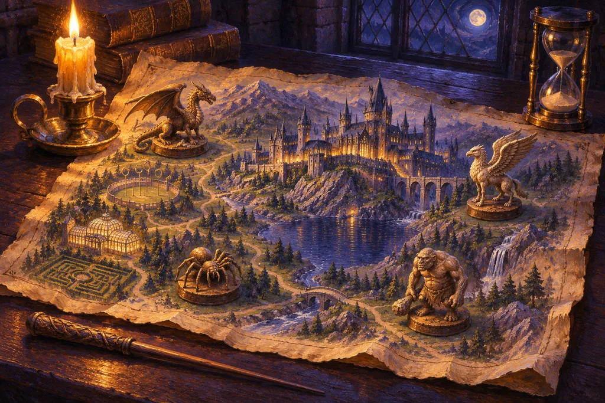

RPG de mesa no mundo bruxo
Livro de Regras · versão 1.0 RC
RPG de mesa · Livro de Regras
A carta chegou por coruja. A varinha escolheu você. O castelo tem mais corredores do que mapas — e cada um guarda um segredo.
O que é este jogo e o que você precisa
Varinhas e Segredos é um RPG de mesa no mundo bruxo. Um grupo de jogadores interpreta estudantes, aurores, curandeiros ou contrabandistas; uma pessoa, o Mestre, interpreta todo o resto — o castelo, os professores, as criaturas da Floresta Proibida e quem está por trás do mistério da vez.
O livro tem três partes. Os capítulos II a VII são para todo mundo: como rolar, montar a ficha, lançar feitiços, preparar poções e duelar. Os capítulos VIII a XII são do Mestre: tabelas para criar criaturas, aliados, varinhas, itens e aventuras, sem depender de nada pronto. Os capítulos XIII a XV são a campanha: como o personagem cresce (níveis, trilhas, notas), como é a vida na escola (horário, aulas, clubes e minigames) e como o mundo anda sozinho (relógios, leis, consequências). O apêndice traz probabilidades, uma ficha, um combate de exemplo e o glossário.
O mundo bruxo foi contado em livros, filmes e jogos, e nem tudo combina. Este livro marca o que vem de fora dos romances: F filmes, AF Animais Fantásticos, J jogos. O que não tem marca vem dos livros. O Mestre decide o que entra na mesa dele.
Regra de ouro. Quando uma regra deste livro atrapalhar a cena, o Mestre decide e a mesa segue. Anote e discuta depois da sessão.
Dois dados, passos e a DT
Quase tudo se resolve do mesmo jeito. Você quer fazer algo que pode dar errado. Você rola dois dados — um do seu atributo, um da sua perícia —, soma, e compara com a dificuldade.
dado do Atributo + dado da Perícia ≥ DT
Aqui competência não é um bônus somado: é o tamanho do dado. Uma bruxa com Mente d8 e Feitiços d10 rola 1d8+1d10. Um primeiranista nervoso com Mente d6 e Feitiços d4 rola 1d6+1d4.
| Dado | Atributo | Perícia | No mundo bruxo |
|---|---|---|---|
| d4 | Abaixo da média | Destreinado | Nunca estudou; aborto tentando |
| d6 | Média | Treinado | Passou na matéria |
| d8 | Acima da média | Especialista | Excelente nos N.O.M.s |
| d10 | Muito acima | Mestre | Auror, professor, curandeiro-chefe |
| d12 | Ápice | Grão-mestre | Dumbledore, Snape nas Poções |
| d20 | Além do humano. Só com artefatos, magia antiga ou efeitos extraordinários. | ||
| DT | Tarefa | Exemplo |
|---|---|---|
| 5 | Fácil | Lumos num corredor calmo |
| 7 | Padrão | Alohomora numa porta comum; subir no muro |
| 9 | Difícil | Accio no meio de um duelo |
| 11 | Muito difícil | Enganar um professor de Poções |
| 13 | Heroica | Patrono corpóreo diante de cem dementadores |
| 15+ | Lendária | Quebrar um Feitiço Fidelius |
Quando o texto não disser outra coisa, a DT é 7.
Escolha os dados e role.
Bônus e penalidades não somam números: eles mudam o tamanho do dado. A escala é d4 → d6 → d8 → d10 → d12.
A situação ajuda
O dado sobe um tamanho. Alvo surpreso, afinidade da varinha, um aliado ajudando, a poção certa. O teto é d12.
A situação atrapalha
O dado desce um tamanho. Escuro, ferido, varinha estranha. Um aumento e uma redução se cancelam.
O Mestre diz em qual dado o passo cai: no atributo (o corpo está cansado) ou na perícia (a técnica está prejudicada). Se não importar, cai na perícia.
Abaixo do piso. Um dado nunca fica menor que d4. Cada passo de penalidade que cairia abaixo do piso soma +2 à DT. O novato ferido sofre tanto quanto o veterano ferido.
Num mesmo teste, somando todas as fontes (ajuda, varinha, Casa, poção, Ímpeto, domínio), você ganha no máximo +2 passos. Penalidades não têm limite. Cada fonte conta uma vez: duas poções iguais não acumulam.
Algumas habilidades dão um dado a mais, do mesmo tamanho do maior dado da rolagem. Dado extra é raro e sempre tem um preço ou um limite de uso.
O RA é o maior resultado entre os dados somados; o RB, o menor. Não importa de qual dado veio. O RA é o dano dos ataques; RA e RB medem progresso em testes longos.
Você tira crítico de um destes dois jeitos, olhando só os dados que entraram na soma:
O crítico é um sucesso extraordinário: em ataques e testes longos, usa os dois maiores resultados no lugar do RA; contra um feitiço de efeito, o alvo resiste com –1 passo; e dá 1 Ímpeto.
O crítico não faz o impossível. Se o maior total que os seus dados conseguem tirar não alcança a DT, a tarefa está fora do seu alcance: 4 e 4 num d4+d4 contra DT 9 é só um 8. E um feitiço que você não conhece continua inacessível — a exceção é a Conjuração Improvisada do Capítulo IV.
Se todos os dados rolados mostrarem 1, é um Desastre: falha automática e uma consequência. Um único dado acima de 1 já evita o Desastre. Role um d8:
| d8 | Desastre | Efeito |
|---|---|---|
| 1 | Vexame | Algo humilhante e público. Sem efeito mecânico — mas a Sonserina inteira viu. |
| 2 | Machucado | Corpo –1 passo até o fim da cena. |
| 3 | Distração | Mente –1 passo até o fim da cena. |
| 4 | Abalo | Coração –1 passo até o fim da cena. |
| 5 | Acidente | Perde 1d4 PV. |
| 6 | Desânimo | Perde 1d4 de Determinação. |
| 7 | Perda | Larga a varinha, quebra um frasco, perde um item carregado. |
| 8 | Magia Descontrolada | Num feitiço, role na tabela do Capítulo XII. Fora de magia, o Mestre escolhe outra linha. |
Quando duas pessoas disputam a mesma coisa — correr até a vassoura, segurar a varinha, mentir e perceber a mentira —, as duas rolam e o maior total vence. Empate: vence quem tem o maior RA; empatou de novo, a situação continua para a próxima rodada.
Gaste sua ação para ajudar um aliado, descrevendo como. Você precisa ter pelo menos d6 na perícia usada.
| Perícia de quem ajuda | Benefício para quem rola |
|---|---|
| d4 | Não pode ajudar |
| d6 ou d8 | +1 passo |
| d10 ou d12 | +2 passos |
Casa, sangue, varinha e os dados da ficha
Sua ficha é feita de dados. Três atributos dizem quem você é; as perícias dizem o que você aprendeu. Siga as etapas na ordem.
Começar depois do 1º ano. Crie a ficha normalmente e receba 25 PE por ano já cursado para gastar no Capítulo XIII — um aluno comum, um pouco atrás de quem jogou esses anos. Se o personagem entra numa mesa em andamento e precisa acompanhar os outros, use 30 PE por ano, o mesmo da campanha completa. Todos os feitiços do currículo dos anos anteriores ficam Em aprendizado, com as marcas de treino completas: só falta pagar os PE.
Força, reflexo, fôlego
Voar, correr, aguentar uma azaração, desviar de um feitiço, segurar um Hipogrifo pela rédea.
Raciocínio, memória, precisão
Lançar feitiços, preparar poções, transfigurar, investigar, lembrar a ordem certa dos ingredientes.
Vontade, presença, emoção
Resistir ao Imperius, conjurar um Patrono, convencer, mentir, acalmar uma criatura, enfrentar o medo.
Cada perícia tem um atributo comum, mas o Mestre pode combinar outro quando a cena pedir: convencer um centauro usa Coração + Trato de Criaturas; lembrar um feitiço antigo usa Mente + Conhecimento Mágico.
| Perícia | Atributo comum | Para quê |
|---|---|---|
| Atletismo | Corpo | Correr, escalar, nadar, empurrar. |
| Fortitude | Corpo | Resistir a venenos, dor, frio, azarações físicas. |
| Reflexos | Corpo | Desviar, agarrar algo no ar, se equilibrar. Define a Defesa. |
| Furtividade | Corpo | Andar escondido, sumir num corredor. |
| Voo | Corpo | Vassouras, Hipogrifos, Testrálios, Quadribol. |
| Luta | Corpo | Soco, espada, briga sem varinha. |
| Feitiços | Mente | Encantamentos, azarações, contra-feitiços, escudos. |
| Transfiguração | Mente | Mudar forma, conjurar, sumir com coisas, animagia. |
| Poções | Mente | Preparar e identificar poções, antídotos. |
| Herbologia | Mente | Plantas mágicas, colheita, ingredientes. |
| Conhecimento Mágico | Mente | História da Magia, Runas, Aritmancia, leis do Ministério. |
| Investigação | Mente | Achar pistas, pesquisar na biblioteca, ligar fatos. |
| Medibruxaria | Mente | Primeiros socorros, estabilizar, curar. |
| Artes das Trevas | Mente | Maldições, magia proibida, reconhecer magia negra. |
| Percepção | Coração | Notar, ouvir, sentir que algo está errado. |
| Vontade | Coração | Resistir a medo, Imperius, dementadores, Confundo. |
| Oclumência | Coração | Fechar a mente; resistir a Legilimência e Veritaserum. |
| Persuasão | Coração | Convencer, negociar, liderar. |
| Enganação | Coração | Mentir, disfarçar, blefar. |
| Intuição | Coração | Perceber mentiras e intenções. |
| Trato de Criaturas | Coração | Acalmar, domar, montar, cuidar. |
| Adivinhação | Coração | Folhas de chá, bola de cristal, estrelas, profecias. |
A Casa não é uma escolha de cardápio. Na noite da Seleção, o Mestre faz as três perguntas abaixo, em cena, e o jogador responde como o personagem. Cada resposta dá uma marca a uma Casa. Depois, o jogador diz o que o personagem deseja: isso vale duas marcas. O Chapéu anuncia a Casa com mais marcas; se houver empate, o personagem escolhe entre as empatadas — o Chapéu leva em conta a nossa escolha.
| Pergunta | Grifinória | Sonserina | Corvinal | Lufa-Lufa |
|---|---|---|---|---|
| Um colega está sendo humilhado no corredor. | Enfrento quem humilha. | Guardo isso; vai ser útil depois. | Descubro por que aquilo começou. | Fico do lado do colega, mesmo sem saber o que fazer. |
| Você acha uma porta trancada que ninguém deveria abrir. | Abro agora. | Abro quando ninguém estiver olhando, e não conto a ninguém. | Pesquiso o que tem atrás antes de tocar nela. | Chamo meus amigos; ninguém entra sozinho. |
| O que você quer que digam de você daqui a cinquenta anos? | Que foi corajoso. | Que foi grande. | Que foi sábio. | Que foi justo e leal. |
Cada Casa dá +1 passo numa perícia e uma habilidade de uma vez por cena, útil em qualquer tipo de cena.
Coragem · +1 passo em Vontade
Coragem. Quando você está em desvantagem clara — ferido, em menor número, ou diante de algo de Perigo maior que o seu ano —, role um dado extra num teste.
Ambição · +1 passo em Enganação ou Persuasão
Ambição. Depois de ver o resultado de qualquer teste seu, rerrole o dado mais baixo e fique com o novo resultado. Um crítico só conta se aparecer na rolagem final.
Sabedoria · +1 passo em Conhecimento Mágico
Mente Afiada. Role um dado extra num teste de Mente. Identificar feitiço, poção ou criatura é sempre ação livre para você.
Lealdade · +1 passo em Herbologia ou Fortitude
Lealdade. Ajude um aliado como reação, fora do seu turno, sem gastar a sua ação. Você pode ajudar mesmo com d4 na perícia (+1 passo).
Fora de Hogwarts, troque a Casa pela escola (Ilvermorny, Beauxbatons, Durmstrang, Castelobruxo, Mahoutokoro, Uagadou) e use a habilidade da Casa que mais combina com ela.
O sangue não faz ninguém mais ou menos bruxo. Ser sangue-puro, mestiço ou nascido-trouxa é uma escolha de história — pesa no jeito como certas pessoas tratam você, não nos seus dados. O que dá vantagem mecânica é a família em que você cresceu:
| Família | Benefício | Galeões | O que pesa |
|---|---|---|---|
| Tradicional bruxa | +1 passo em Conhecimento Mágico; a biblioteca da família: um feitiço Bibliográfico começa Observado. | 3d6 | Expectativas e tradições que você deve honrar. |
| Criado por trouxas | +1 passo em Intuição; entende tecnologia, dinheiro e cidades trouxas. | 2d6 | Ninguém no mundo bruxo te conhece ainda. |
| Influente | +1 passo em Persuasão; uma vez por ano, a família faz um favor. | 4d6 | Uma reputação a zelar; escândalos custam caro. |
| Trabalhadora | +1 passo em Atletismo ou Herbologia; arruma trabalho de férias com facilidade. | 1d6 | Material de segunda mão; livros e vassouras velhos. |
| Entre criaturas | +1 passo em Trato de Criaturas; um companheiro de Perigo 1. | 2d6 | Costumes estranhos para os outros alunos. |
| Curiosidade proibida | +1 passo em Investigação; um feitiço Secreto começa Observado. | 2d6 | Alguém sabe do seu interesse — e está de olho. |
O valor de um dado é o número de faces: d6 vale 6, d8 vale 8.
Uma grifinória com Corpo d8, Coração d6 e Reflexos d6 tem 16 PV, 10 DET e Defesa 8.
Determinação é o que segura você em pé diante do medo, dos dementadores e das maldições. Com 0 DET você fica Desesperado (Capítulo VII).
Carga. Varinha, pena e até três ingredientes não ocupam espaço. Poção, livro ou frasco: 1. Caldeirão: 2. Vassoura carregada ou objeto grande: 3. Até 3 poções no cinto saem com o movimento; o que está na mochila sai com uma ação. Acima da carga: –1 passo em Corpo e nada de Desviar. Uma bolsa com Feitiço Indetectável de Extensão dá +10 espaços, mas tirar algo dela é sempre uma ação.
Descanso. Uma noite de sono recupera metade do PV e 1d4 DET. A Ala Hospitalar recupera tudo numa noite, menos maldições. Chocolate recupera 1d4 DET, uma vez por cena e no máximo três vezes por dia — depois disso é só doce. E desce o pavor um passo.
Lançar, resistir e o preço de errar
Não existe mana. O limite da magia é o que você aprendeu: você só lança feitiços que conhece, só tenta um Círculo se tiver o dado mínimo na perícia, e cada feitiço tem um grau de domínio.
Mente + perícia do feitiço ≥ DT do Círculo
| Círculo | DT | Perícia mínima | Nível típico |
|---|---|---|---|
| 1 · Primeiranista | 5 | d4 | 1º ano |
| 2 · Intermediário | 7 | d6 | 3º ano |
| 3 · N.O.M. | 9 | d8 | 5º ano |
| 4 · N.I.E.M. | 11 | d10 | 7º ano |
| Proibido | 13 | d10 em Artes das Trevas · custa 1d4 DET | Nunca, oficialmente |
A perícia depende do feitiço: Feitiços para encantamentos, azarações e escudos; Transfiguração para mudar, conjurar e sumir; Artes das Trevas para maldições. O Patrono usa Coração no lugar de Mente.
Sem o dado mínimo, você não consegue nem tentar. Não há limite de vezes por dia: o que segura a magia forte é a dificuldade, o Desastre e a Determinação.
O Círculo mede só a complexidade do feitiço. Quando ele é ensinado, por quem e em que matéria é outra coisa, e está no Currículo abaixo. Um feitiço fácil pode aparecer só no quarto ano; um difícil pode estar num livro que você achou no primeiro.
Na ficha, cada feitiço que você conhece tem um estado. Você nunca ganha um pacote de feitiços ao passar de ano: aprende um por um.
| Estado | O que significa | O que você pode fazer | Como chega aqui |
|---|---|---|---|
| Desconhecido | Nunca teve contato. | Nada. | — |
| Observado | Viu alguém lançar, ou leu uma descrição incompleta. | Só a Conjuração Improvisada. | Presenciar o feitiço em cena, ou ler sobre ele. |
| Em aprendizado | Teve aula, livro completo ou mentor. | Praticar em aula e no tempo livre (sozinho, com o risco de Aprender sozinho). Fora disso, só a Conjuração Improvisada. | Ter acesso à fonte (abaixo). |
| Aprendido | Faz parte do seu repertório para sempre. | Lançar normalmente, em qualquer lugar. | 3 marcas de treino e pagar os PE do Círculo. |
| Dominado | Virou reflexo. | +1 passo ao lançar. | 5 marcas de prática. Não se compra com PE. |
| Círculo | PE para Aprender |
|---|---|
| 1 | 1 |
| 2 | 2 |
| 3 | 3 |
| 4 | 4 |
| Proibido | 6 |
Um estudante pode ter quinze feitiços Aprendidos e só dois Dominados. É isso que faz o Expelliarmus do Harry ser o feitiço dele.
| Origem | Como se ganha acesso | Exemplos |
|---|---|---|
| Curricular | As aulas do ano. Automático para quem frequenta. | A grade abaixo |
| Bibliográfica | Achar o livro certo (Biblioteca, Seção Reservada, herança). | Confundo, Salvio Hexia, Cave Inimicum, Portus, Depulso, Bombarda |
| Mentoria | Alguém que domina o feitiço aceita ensinar. | Expecto Patronum, Feitiço da Desilusão, Legilimens, Arresto Momentum |
| Secreta | Descoberta numa investigação: anotações, um diário, um quadro que fala. | Muffliato, Levicorpus, Sectumsempra, Vulnera Sanentur |
| Experimental | Você mesmo inventa (Capítulo V). | — |
| Proibida | Fontes clandestinas, bruxos das trevas. Ter o livro já é crime. | Imperio, Crucio, Avada Kedavra, Fogomaldito, Protego Diabolica |
Com o livro certo, dá para aprender um feitiço sem professor: Harry aprendeu o Accio para a primeira tarefa assim, e metade do Livro do Príncipe foi aprendida escondida. O livro completo deixa o feitiço Em aprendizado; o resto é ler e ensaiar, cada coisa num período livre (Capítulo XIV).
| Situação | No ensaio |
|---|---|
| Círculo 1 ou 2 | Normal: são os feitiços que se aprendem sozinhos. |
| Círculo 3 | –1 passo. Só com livro avançado (Seção Reservada, um livro anotado). |
| Círculo 4 ou Proibido | –1 passo, e todo Desastre vai direto à Magia Descontrolada. |
| Um amigo que já Aprendeu ajuda | +1 passo (Hermione com o Accio de Harry). Ele gasta o mesmo período. |
| Ataque ou efeito sem alvo | –1 passo: precisa de um boneco, uma almofada, um colega que aceite. |
| Sala vazia à noite, fora do horário | Normal, mas é uma ronda noturna se alguém procurar. |
| Nas férias, menor de idade | O Rastreador pega: carta de advertência do Ministério na primeira vez; na segunda, audiência. |
| Que livro é | Efeito |
|---|---|
| Livro didático (o Livro Padrão de Feitiços) | Normal. |
| Livro anotado por quem sabia (o do Príncipe) | +1 passo na leitura e no ensaio daquele feitiço. |
| Livro incompleto (página arrancada, só a descrição) | O feitiço fica só Observado. |
| Livro errado (de quem mentiu sobre o que fez) | Parece completo. O Mestre sabe: as marcas não valem até alguém de fora corrigir, e o primeiro ensaio bem-sucedido sai trocado. |
| Livro proibido | Ter já é crime, e ser pego com ele em Hogwarts é expulsão. Os feitiços dele seguem a linha de Círculo 4 ou Proibido acima. |
A grade diz o que as aulas apresentam em cada ano. Na primeira aula em que o professor apresenta um feitiço da grade, ele fica Em aprendizado para todos os alunos presentes, sem teste. A aula pode pôr um feitiço Em aprendizado antes de você ter a patente para Aprendê-lo: as marcas de treino ficam anotadas, e ele vira Aprendido assim que você chega à patente e paga os PE. Quem faltou fica só com Observado até recuperar a matéria (um período de estudo). É uma grade para a mesa, não uma lista oficial dos livros.
| Ano | Feitiços | Transfiguração | Defesa Contra as Artes das Trevas | Poções |
|---|---|---|---|---|
| 1º | Lumos/Nox, Wingardium Leviosa, Alohomora, Point Me | Reparo, Transfiguração Simples (fósforo em agulha) | Flipendo, Periculum | Cura para Furúnculos, Poção do Sono |
| 2º | Rictusempra, Finite Incantatem, Scourgify, Colloportus | Orchideous/Avis | Expelliarmus, Tarantallegra, Incendio | Apimentada, Solução Redutora, Solução de Inchaço |
| 3º | Diffindo, Impervius, Aparecium | Reducio/Engorgio | Riddikulus, Silencio | Wiggenweld, Aguçar o Intelecto |
| 4º | Accio, Sonorus/Quietus | Incarcerous | Stupefy, Petrificus Totalus, Locomotor Mortis | Antídoto Comum, Edurus |
| 5º | Homenum Revelio, Glacius | Evanesco, Obscuro | Protego, Reducto, Furnunculus | Poção da Paz, Reposição de Sangue, Maxima |
| 6º | Aguamenti, Specialis Revelio, técnica não verbal | Geminio, Oppugno | Rennervate, Ferula, Descendo | Morto-Vivo, Poção do Foco (e Felix como prêmio) |
| 7º | Confringo, Arresto Momentum | Piertotum Locomotor | Expulso, Protego Maxima | Invisibilidade, Esquelesce |
Aparatação é um curso opcional no 7º ano, com exame do Ministério. Episkey e os feitiços de Medibruxaria vêm da Ala Hospitalar, por Mentoria.
Às vezes o aluno acerta por sorte um feitiço que só viu uma vez. Para tentar um feitiço Observado ou Em aprendizado fora da aula:
Acertar por sorte não ensina: o feitiço continua precisando de treino e de PE.
Todo feitiço pede as duas coisas, e os dois dados do teste são elas: o dado de Mente é a pronúncia; o dado da perícia é o gesto. Por isso até quem domina um feitiço pode errar.
Ímpeto é esforço e risco, não mana: sem ele você continua lançando tudo o que Aprendeu. Você tem de 0 até o máximo da sua patente (3 a 5, Capítulo XIII) e começa cada sessão com 1. Ímpeto não ensina feitiços.
Uma vez por cena para cada motivo
Ao tirar crítico. Ao fazer algo corajoso ou arriscado pela cena. Ao falhar numa prova ou aula e continuar tentando.
Antes do resultado ser narrado
Rerrolar o dado da pronúncia ou o do gesto. Ou +1 passo num teste. Ou uma Conjuração Improvisada. Ou lançar um feitiço Aprendido de um Círculo acima do seu dado mínimo — se der Desastre, vai direto à Magia Descontrolada.
Todo feitiço é de um destes três tipos, e cada tipo se resolve de um jeito só.
5 + Círculo + passo da sua perícia
O passo vale 0 para d4, 1 para d6, 2 para d8, 3 para d10 e 4 para d12. O alvo rola Corpo + Fortitude, Corpo + Reflexos ou Coração + Vontade, conforme o feitiço. Quanto dura cada condição está na tabela única do Capítulo VII.
Maxima (do latim, "a maior") é dito depois do encantamento para levar o feitiço ao limite: Lumos Maxima, Aguamenti Maxima, Glacius Maxima, Bombarda Maxima, Protego Maxima. Não é um sufixo que serve para tudo: só existe em feitiço cujo efeito pode crescer (luz, água, gelo, explosão, escudo). Feitiço de tudo ou nada (Stupefy, Expelliarmus, Alohomora, Accio), Imperdoáveis e Proibidos não têm forma Maxima. Os nomes vêm dos filmes e dos jogos, não dos livros; a regra é deste jogo. A Poção Maxima (Capítulo VI) é outra coisa: +2 de dano nos feitiços de ataque por uma cena.
| Forma | Efeito |
|---|---|
| Lumos Maxima | Um clarão, ou uma esfera de luz lançada até 18 m que fica no ar por uma cena e ilumina 30 m. Quem estiver olhando a até 9 m na hora: Reflexos contra a DT ou Atordoado por uma rodada. Criatura que teme a luz (Inferi, Visgo-do-Diabo) sofre o efeito de luz da ficha dela, sem teste. |
| Aguamenti Maxima | Jato de 9 m: apaga fogo comum numa área de 6 m e empurra 3 m quem falhar em Corpo + Atletismo contra a DT. Não apaga Fogomaldito nem Protego Diabolica. |
| Glacius Maxima | Frio em área de 3 m: RA + 4 (Fortitude: metade) e quem falhar fica Preso no gelo até o fim do próximo turno. Congela água parada e apaga fogo comum na área. |
| Bombarda Maxima | Explosão em raio 3 m, RA + 4 (Reflexos: metade), e o estrondo derruba quem estiver a até 6 m (Caído, Reflexos contra a DT evita). Tira 2 partes da Integridade de uma estrutura (Confringo); fortificada, só no crítico, e 1 parte. |
| Protego Maxima | Sozinho, a cúpula do Grimório. Sobre um prédio é ritual coletivo (Magia em conjunto): um oficiante rola Mente + Feitiços DT 11 a cada hora, os outros mantêm com a ação; cada bruxo que mantém soma 10 à absorção por rodada. Costuma vir junto de feitiços de reforço (Fianto Duri) e de repulsa (Repello Inimicum), cada um lançado à parte. Dano que passa da absorção tira 1 parte de um relógio de Integridade 8 da cúpula; zerado, ela cai. Não para a Avada Kedavra nem quem já está dentro. |
Alguns feitiços têm versões mais fortes com outro nome. Cada uma é um feitiço à parte no Grimório, com o seu Círculo e os seus PE; a forma Maxima é a única que se treina em cima da base. Fonte: L livros, F filmes, J jogos, O outros (Animais Fantásticos, A Criança Amaldiçoada, textos oficiais), A deste jogo. Feitiço que aparece sem encantamento ganha um nome deste jogo, avisado na linha dele no Grimório.
| Família | Do mais simples ao mais forte |
|---|---|
| Luz | Lumos (L) · Lumos Solem (F: luz do sol) · Lumos Duo (J: feixe) · Lumos Maxima (F: forma Maxima) |
| Fogo | Lacarnum Inflamari (F) · Incendio (L) · Ignis Caeruleus (L, nome A) · Ignis Perpetuus (L, nome A) · Incendio Duo (J) · Incendio Tria (J) · Confringo (L) · Ignis Circumdo (L sem encantamento; o nome é A) · Fogomaldito (L) e Protego Diabolica (F), o fogo das trevas |
| Escudo | Protego (L) · Protego Totalum (L) · Protego Horribilis (L) · Protego Maxima (F) · Fianto Duri (F) · Argentum Clipeus (L, nome A) · Protego Reverso (J, nome A) · Protego Diabolica (F) |
| Água | Aguamenti (L) · Aqua Eructo (J) · Aqua Eructo Duo (J) · Aguamenti Maxima (J: forma Maxima) · Aqua Carcer (L, nome A) · Exsicco, ao contrário (L, nome A) |
| Ascender | Alarte Ascendare (F: joga o alvo) · Ascendio (F: lança você) · Levicorpus (L: pendura pelo tornozelo) |
| Puxar e prender | Accio (L) · Carpe Retractum (L) · Incarcerous (L) · Brachiabindo (L) |
| Varinha que conta | Prior Incantato (L: mostra o último feitiço) · Priori Incantatem (L: fenômeno das varinhas-irmãs) |
| Pares que se desfazem | Lumos / Nox · Sonorus / Quietus · Engorgio / Reducio · Levicorpus / Liberacorpus · Brachiabindo e Incarcerous / Emancipare · Engorgio Skullus / Redactum Skullus · Cantis / Silencio · Meteolojinx / Meteolojinx Recanto · Serpensortia / Vipera Evanesca · Stupefy / Rennervate (ou Enervate) |
| Explosão | Bombarda (F) · Bombarda Maxima (F: forma Maxima) · Expulso (L) |
| Revelar | Aparecium (L) · Revelio (L/J) · Specialis Revelio (L) · Homenum Revelio (L) · Verdimillious (J) · Appare Vestigium (O, Animais Fantásticos) |
| Consertar | Reparo (L) · Reparo Omnia (F, nome A) · Oculus Reparo (F) · Brackium Emendo (L) · Reparifarge (J) |
| Locomotor | Locomotor (L) · Locomotor Mortis (L) · Locomotor Wibbly (J) · Mobiliarbus (L) · Mobilicorpus (L) · Piertotum Locomotor (L) |
| Empurrar | Flipendo · Flipendo Duo · Flipendo Tria (J) · Depulso (L) · Impedimenta (L) · Everte Statum (F) · Ventus · Ventus Duo (J) |
| Gelo | Glacius · Glacius Duo · Glacius Tria · Glacius Maxima (J) · Immobulus (F) · Ignis Frigidus (L, nome A) · Exsicco (L, nome A) |
| Faíscas | Periculum (L) · Vermillious, Duo, Tria (J) · Verdimillious, Duo, Tria (J) |
| Bicho de objeto | Avifors · Lapifors · Snufflifors · Ducklifors · Mustelifors · Draconifors (J) · Fera Verto (F, ao contrário) |
| Azarações de corredor | Titubo · Urtico · Genu Inverto · Vespertilio (L, nomes A) · Slugulus Eructo (L, encantamento J) · Locomotor Wibbly · Melofors · Engorgio Skullus · Mucus ad Nauseam (J) · Anteoculatia · Furnunculus · Densaugeo (L) · Capillus Densus · Digiti Gelati · Ungues Crescere (L, nomes A) |
| Calar e soltar a língua | Silencio (L) · Langlock (L) · Muffliato (L) · Garrulo · Lingua Vinculum (L, nomes A) |
| Esconder | Desillusio (L, encantamento A) · Praestigiae (L, nome A) · Repello Muggletum (L) · Inlocabilis (L, nome A) · Feitiço Fidelius (L) |
| Duelo de mestres | Aqua Carcer · Ignis Laqueus · Argentum Clipeus · Volatus · Vitrum Turbo · Arena Verto (L/F, sem encantamento; nomes A) · Flagellum Fulguris (F, nome A) |
| Destrancar | Alohomora (L; nos jogos, em três níveis: aqui, os graus de tranca) · Cistem Aperio (F) · Dissendium (L) · Colloportus, ao contrário (L) |
| Sala Precisa | Inanimatus Conjurus (L) · Conjuro · Alterio (J, nomes A) · Evanesco (L) |
| Cara de bobo | Calvorio · Colovaria · Multicorfors · Herbifors · Tentaclifors · Cantis (J) · Haereo · Porrum Auris · Piperis Halitus · Pustula (J, nomes A) |
| Viajar | Apparatio · Apparatio Comes (L) · Portus (L) · Volatus (L, nome A) · Fumivolo (F, nome A) · Harmonia Nectere Passus (F) · Liber Porta (F, nome A) |
| Lembranças | Affectus Extraho (J, nome A) · Obliviate (L) · Memoria Muto (L, nome A) · Memoria Extraho (L/F, nome A) · Legilimens (L) · Possessio (L/F, nome A) |
| Portas que pedem algo | Murus Aperio (L/F) · Charta Custos (L/F) · Porta Sanguinis (L/F) · Paries Pervius (L) · Pulvis Custos (L) — nomes A · Feitiço Fidelius (L) |
| Maldições de objeto | Flagrante · Gemino (L) · Maledictio Tactus · Maledictio Lenta · Memoria Carnis (L, nomes A) |
| Sangue | Porta Sanguinis · Sacrificium Amoris · Ritus Resurrectionis (L, nomes A) · Pacto de Sangue (F) |
| Encantos de grupo | Debilito · Turbatio · Tabesco · Munio · Fortis Animus · Intentio · Revigoro (J, nomes A) |
| Raio e tempestade | Meteolojinx (J) · Fulmen Pugnae (J, encantamento A) · Procella (J, encantamento A) · Fulgur Caeli (F, sem encantamento; o nome é A) |
Lançar sem dizer o encantamento, ainda com a varinha. Hogwarts ensina a técnica no 6º ano; antes disso, só com um livro avançado ou um mentor. Conhecer a técnica não basta: cada feitiço Aprendido precisa do seu próprio treino silencioso. Nada disso custa PE — o feitiço já foi pago; aqui você só melhora a execução.
| Estado no feitiço | Como chega | Efeito |
|---|---|---|
| Conhece a técnica | A aula do 6º ano, um livro ou um mentor | Pode começar a treinar. Ainda não lança calado. |
| Silencioso | 3 marcas silenciosas no feitiço | Lança sem falar, com –1 passo. |
| Silencioso dominado | 6 marcas | Lança sem falar, sem penalidade. |
| Refinado | 10 marcas e um treino especial (um mestre, o Clube de Duelos, um duelo de verdade) | Silenciado não tira o passo de Mente; o teste para manter um Sustentado ao levar dano tem +1 passo. |
Marca silenciosa: a ação Treinar (Capítulo XIV) feita sem falar, com –1 passo; sucesso dá 1 marca, no máximo uma por feitiço por semana. Um uso marcante em cena (um duelo, um perigo de verdade) pode dar mais uma, se o Mestre quiser. Calado não é invisível: o alvo ainda vê a varinha e a luz e pode reagir com Protego ou Desviar normalmente; o que ele não sabe é qual feitiço vem. Por isso o estilo Técnico não ganha o +1 passo dele contra um feitiço Silencioso.
A varinha não só ajuda: ela canaliza a magia e a deixa precisa e forte. Para quem aprendeu dependendo dela, como todo aluno de Hogwarts, lançar sem varinha é uma especialização extraordinariamente difícil, de anos — e cada feitiço é aprendido de novo. PE nunca compram esse domínio; só a prática.
| Forma | Dificuldade | Potência |
|---|---|---|
| Com varinha, falando | Normal | Integral |
| Com varinha, calado | Difícil | Integral quando dominado |
| Sem varinha | Extremamente difícil | Reduzida, até um domínio excepcional |
Para começar: Mente d10 e Feitiços d10 (ou um mentor de uma tradição sem varinha, abaixo) e uma fonte completa — um mestre ou um manuscrito raro. Depois, 12 marcas de fundamento, no máximo uma por semana (Mente + Feitiços, DT 9, num período livre): pelo menos três meses. Durante os fundamentos, você só produz manifestações instáveis — faíscas, um objeto pequeno que desliza, o ar que esquenta. Nenhum feitiço de verdade.
Com os fundamentos, cada feitiço Aprendido é treinado à parte, com marcas sem varinha: a ação Treinar feita sem varinha, no estágio atual dela; sucesso dá 1 marca, no máximo uma por feitiço por semana. Uma experiência extraordinária em cena pode dar mais uma.
| Estágio no feitiço | Marcas | Teste | Potência |
|---|---|---|---|
| Instável | 8 | –2 passos | Metade dos números (dano, alcance, duração, peso). Falha: uma manifestação incompleta, que o Mestre descreve. |
| Funcional | 16 | –1 passo | Ainda metade dos números, mas sai sempre igual. |
| Especializado | 30 | –1 passo | Integral. Pede concentração: não dá para lançar e se mover na mesma rodada. |
| Domínio excepcional | 50 | Normal | Integral. Anos de prática ou talento raro. |
Dominar um feitiço sem varinha já é uma conquista; dominar Lumos não ensina Stupefy. Antes do estágio Instável, o feitiço não sai sem varinha.
| Círculo | Para começar a treinar |
|---|---|
| 1 | Os fundamentos. |
| 2 | Dois feitiços de Círculo 1 em Domínio excepcional sem varinha. |
| 3 | Dois de Círculo 2 em Domínio excepcional e uma formação avançada (mestre, escola ou anos de estudo). |
| 4 | Um treinamento extraordinário com um mestre ou uma fonte raríssima. |
| Imperdoáveis, Proibidos, efeitos permanentes, de transporte, sobre a mente ou sobre a vida | Nunca abaixo do Domínio excepcional, e só se o Mestre decidir que existe um jeito. Nada disso sai "pela metade". |
Condições especiais do feitiço continuam valendo sem varinha (a lembrança feliz do Patrono, o alvo à vista).
| Feitiço | Instável ou Funcional | Especializado em diante |
|---|---|---|
| Wingardium Leviosa | Até 5 kg, devagar, e a trajetória escapa: só em linha reta. | Como com varinha. |
| Expelliarmus | A varinha escorrega mas não cai: o alvo gasta o movimento para firmá-la. | Desarma. |
| Protego | Barreira de um instante: no máximo defesa parcial, mesmo se você passar o ataque. | Defesa completa. |
| Ataques | Metade do dano, alcance de 9 m no máximo. | Dano e alcance do Grimório. |
Efeito sem número. Quando o feitiço não tem dano, alcance, duração ou peso para cortar pela metade, ele cai numa de três categorias nos estágios Instável e Funcional:
| Categoria | Instável ou Funcional | Exemplos |
|---|---|---|
| Físico reduzido | Metade do tamanho, da força ou da área. | Lumos (luz de 3 m), Aguamenti (um copo), Incendio (uma vela). |
| Incompleto | Sai pela metade do jeito que o Mestre diz: revela que existe, não o quê; abre só o mais simples. | Revelio mostra que há algo escondido, não o que é; Alohomora só abre tranca Simples; Accio puxa, mas o objeto cai no meio do caminho. |
| Indisponível | Não sai até o Domínio excepcional: ou funciona inteiro, ou não funciona. | Aparatação, Patrono corpóreo, Fidelius, Obliviate, transfiguração de seres vivos. |
Calado e sem varinha: as duas coisas juntas não dão bônus. Use o estágio de cada uma: um feitiço Silencioso (–1 passo) e Funcional sem varinha (–1 passo) sai com –2 passos.
Crianças bruxas fazem magia sem varinha antes de Hogwarts — o vidro que some, o cabelo que cresce de novo numa noite. Isso não é conjuração: é involuntário, vem de emoção forte e não se controla. Na criação ou num flashback, o Mestre pode contar um episódio; em jogo, um surto só acontece quando o Mestre decide, sem teste e sem o jogador escolher o efeito. Nunca conta como marca.
Nem toda escola parte da varinha. Em Uagadou muitos alunos aprendem a lançar com os dedos e os gestos das mãos, e algumas tradições da América do Norte mais antigas que as varinhas europeias também. Um personagem formado assim usa o gesto como forma normal: os estados do feitiço (Em aprendizado, Aprendido, Dominado) valem para o gesto como valem para a varinha de um aluno de Hogwarts, sem os fundamentos nem os estágios acima. Em troca, as mãos precisam estar livres e à vista — mãos presas ou ocupadas, não lança —, e a varinha, se ele a usar, segue as mesmas regras de estados, aprendidas à parte. Nenhuma tradição é melhor: são caminhos diferentes, igualmente exigentes.
| Forma | Efeito |
|---|---|
| Silenciosa (não verbal) | Com varinha, sem falar. Treino por feitiço, sem PE: veja Magia não verbal. |
| Sem varinha | Especialização de anos, feitiço por feitiço: veja Magia sem varinha. |
| Varinha que não é sua | Depende da compatibilidade (Capítulo XI). |
| Com calma | Fora de combate, com um minuto e sem pressão: +1 passo. |
| Contínuo | Efeitos simples que ficam ligados sozinhos: Lumos, Impervius, Sonorus, um objeto levitando parado. Duram até você encerrar ou dormir, sem gastar ação. No máximo dois ao mesmo tempo. |
| Sustentado | Efeitos que você precisa guiar: mover algo levitando, manter Protego Totalum contra um ataque, segurar Petrificus ou Incarcerous em quem luta para sair. Gasta o seu movimento a cada rodada (a ação, se o alvo for uma criatura ou pesar mais que você). Levou dano: Coração + Vontade, DT 5 + metade do dano, ou o feitiço cai. Só um por vez. |
Saber um feitiço não é o mesmo que lembrar dele com um dementador na sua frente. Em combate, perseguição ou qualquer cena com pressão, você lança sem custo todos os seus feitiços Dominados e até 3 + patente feitiços Aprendidos que deixou à mão (Iniciante 4, Aprendiz 5, Adepto 6, Perito 7, Mestre 8). Essa é a sua Prontidão. Os outros Aprendidos continuam seus: só custam um instante para lembrar.
Falhar só faz o feitiço não sair. O Desastre (todos os dados em 1) aciona a tabela do Capítulo II, e quem tirar 8 nela rola a Magia Descontrolada.
Finite Incantatem encerra um efeito mágico em andamento: teste de Feitiços contra a DT do feitiço original. Para maldições de Artes das Trevas, –1 passo.
Finite desfaz o que ainda está acontecendo. Não desfaz o que já aconteceu (a ferida, a queimadura, a lembrança apagada) nem o que tem contrafeitiço próprio. O contrafeitiço próprio, lançado com sucesso, desfaz sem disputa contra a DT.
| Feitiço | Como desfazer |
|---|---|
| Amarras | |
| Incarcerous · Brachiabindo · Fulgari | Emancipare solta sem disputa. Também: Diffindo nas cordas, Finite, ou Corpo + Atletismo contra a DT. |
| Petrificus Totalus | Finite. Petrificado por basilisco (o olhar refletido) só volta com a Poção de Mandrágora. |
| Levicorpus | Liberacorpus. |
| Locomotor Mortis · Haereo · Duro · Immobulus | Finite. |
| Orbis | Finite desfaz o redemoinho; Ascendio ou Carpe Retractum tiram quem está preso. |
| Aqua Carcer | Finite DT 13, Evanesco na água, ou Glacius e quebrar o gelo. |
| Colloportus · Imperturbatus · Infrangibilis | Finite contra a DT; Colloportus também cede ao Alohomora. Portas do Ministério e cofres de Gringotes não abrem com nenhum dos dois. |
| Adhaereo Perpetuo | Nenhum: só derrubando a parede. |
| Fala, sentidos e mente | |
| Silencio · Langlock · Lingua Vinculum · Garrulo · Muffliato | Finite. |
| Cantis | Silencio cala a cantoria; Finite desfaz. |
| Sonorus · Lumos | Quietus · Nox. |
| Obscuro | Tirar a venda, ou Finite. |
| Lippitudo | Finite não desincha: colírio de poção ou Medibruxaria DT 9. |
| Confundo | Passa no fim da cena; antes, Finite. Objeto Confundido (o Cálice de Fogo) só com Feitiços DT 13. |
| Imperio | Só a Vontade do alvo quebra (Capítulo V); Finite não serve. |
| Possessio | Nenhum feitiço: dor, amor ou uma lembrança forte do alvo expulsam. |
| Obliviate | Nenhum. Feitiço mal feito deixa a lembrança voltar aos pedaços, sob Legilimência ou tortura (Bertha Jorkins). Obliviate que volta na própria varinha (Lockhart) é para sempre. |
| Memoria Muto | Legilimência percebe a emenda, e Memoria Extraho mostra a lembrança com névoa por cima (a de Slughorn). A verdadeira só volta se quem a esconde quiser. |
| Stupefy · Dormio Profundus | Rennervate. |
| Vox in Mente · Fumus Visionis | Oclumência resiste; o que já foi visto ou ouvido não se desfaz. |
| Azarações e transformações | |
| Furnunculus · Densaugeo | Ala hospitalar: Medibruxaria DT 9. Reducio encolhe os dentes, e um pouco mais, se o paciente pedir (Hermione). |
| Engorgio Skullus | Redactum Skullus. |
| Engorgio · Reducio | Um desfaz o outro. |
| Vespertilio · Mucus ad Nauseam · Pustula · Porrum Auris · Herbifors · Calvorio · Anteoculatia · Melofors · Tentaclifors · Capillus Densus · Ungues Crescere | Finite; na ala hospitalar, sem teste, em uma hora. Cabelo e unha também se resolvem com tesoura. |
| Genu Inverto · Locomotor Wibbly · Tarantallegra · Digiti Gelati · Titubo | Finite. |
| Debilito · Turbatio · Tabesco | Finite; passam em três rodadas. Tabesco também para com Episkey. |
| Slugulus Eructo | Nenhum: as lesmas saem até acabar, uma cena. Um balde ajuda. |
| Cauda Porcina | St. Mungus: Medibruxaria DT 11. |
| Inflatus | Finite. Se quem viu era trouxa, o Ministério manda Obliviadores. |
| Fraudis Nota | Só quem lançou desfaz; senão, meses. |
| Muto · Commutatio · Mustelifors · Fera Verto · Avifors · Draconifors · Transformo | Passam no tempo marcado; antes, Finite ou Transfiguração contra a DT. Em gente, veja Transfiguração humana. |
| Meteolojinx | Meteolojinx Recanto, que também acaba com chuva de escritório. |
| Scoparebello | Quebrar o contato visual de quem lança, ou o contrafeitiço murmurado (+1 passo ao cavaleiro). |
| Pila Furens | Finite no objeto, ou destruí-lo (Reducto). |
| Brackium Emendo errado | Esquelesce: os ossos voltam numa noite de dor. |
| Fogo, água e ar | |
| Incendio · Lacarnum Inflamari · Palma Ignis · Piperis Halitus | Aguamenti, Aqua Eructo ou Glacius. |
| Ignis Caeruleus | Água não apaga: só Finite. |
| Glacius · Glacius Maxima | Incendio derrete; Calefio dá conta do gelo fino. |
| Fogomaldito · Protego Diabolica | Nenhum contrafeitiço: veja Fogo das trevas. |
| Ignis Perpetuus | Nenhum. |
| Ignis Circumdo · Protego Maxima · Protego Totalum | Partis Temporus abre uma brecha; dano suficiente derruba. |
| Palus Portabilis | Finite DT 11. Flitwick deixou um pedaço, de lembrança. |
| Nebulus · Fumos | Ventus espalha. |
| Trevas | |
| Nodus Glacialis | Fogo não derrete: ritual, Feitiços DT 13. Quem saiu congelado: Medibruxaria DT 9. |
| Affectus Extraho | Não se desfaz: a emoção tirada só sai de quem a guarda se ela for devolvida, ou destruída com o objeto onde está presa. |
| Crucio | Para quando o autor para. A loucura de tortura longa (os Longbottom) não tem cura. |
| Avada Kedavra | Nenhum. |
| Sectumsempra | Vulnera Sanentur; sem Ditamno logo depois, fica cicatriz. |
| Purpura Interna | Poções todos os dias por semanas, Medibruxaria DT 13. |
| Maledictio Tactus | Conter na vítima: Artes das Trevas ou Medibruxaria DT 13. Tirar do objeto: ritual. |
| Maledictio Lenta | Conter na mão: Artes das Trevas d10, DT 13. Cura não há. |
| Flagrante · Gemino | Finite DT 13 no objeto; Cataracta Furum desfaz os dois. Luvas de couro de dragão protegem da Flagrante. |
| Morsmordre | Some ao amanhecer; antes, Finite DT 13. |
| Nomen Tabu | Ritual, Feitiços DT 13, ou a queda de quem o mantém. |
| Maledictio Cathedrae | Acaba com a morte do autor. |
| Corpus Larva | Homenum Revelio mostra a criatura escondida. |
| Lugares e proteções | |
| Feitiço Fidelius | Só o Fiel do Segredo conta. Se ele morre, quem sabia passa a ser fiel também. |
| Linea Aetatis | Nada de fora; Poção de Envelhecimento não engana. |
| Apparitio Nulla · Repello Inimicum · Cave Inimicum · Salvio Hexia · Repello Muggletum · Caminus Clausus · Ululatus Felis | Quem lançou desfaz; os outros, Feitiços DT 13 em ritual (Ululatus Felis e Caminus Clausus, Finite DT 11). |
| Desillusio | Finite; Homenum Revelio acha quem está desiludido. |
| Vestigium Minoris | Some aos 17 anos. |
| Porta Sanguinis · Murus Aperio · Charta Custos · Paries Pervius | Abrem do jeito certo; quebrar é ritual, Feitiços DT 13. |
| Geminio | Finite some com as cópias. |
| Evanesco | Nada volta. |
| Criaturas | |
| Dementador · Bicho-papão · Serpensortia · aranhas · diabretes · visgo-do-diabo · Inferi | Expecto Patronum · Riddikulus · Vipera Evanesca · Arania Exumai · Immobulus (Peskipiksi Pesternomi não funciona) · Lumos Solem ou fogo · fogo. |
| Arte | Regra |
|---|---|
| Patrono | A primeira vez sai só névoa prateada: afasta, não expulsa. Corpóreo exige Feitiços d8 e uma lembrança verdadeira; a forma é do jogador e só muda depois de uma perda ou de um amor profundo. |
| Legilimência | Superficial: o pensamento do momento, contra Oclumência. Profunda: memórias antigas, exige olhar nos olhos, o alvo resiste com +1 passo e percebe a invasão. |
| Oclumência | d6: percebe a invasão. d8: resiste normalmente. d10: mostra memórias falsas. d12: devolve a invasão. |
| Aparatação | Exige licença (7º ano). Lugar visto uma só vez: –1 passo. Falha: não sai do lugar. Desastre: estrunchado — perde 3d6 PV e deixa uma parte para trás até alguém consertar (Medibruxaria DT 9). |
| Animagia | Técnica extraordinária de Transfiguração: 6 PE pelo procedimento, um ritual de meses com uma poção lendária e a primeira transformação. O Mestre decide o animal. Regras completas em Animagia, no Capítulo XIV. |
| Vira-Tempo | Volta até 5 horas. Ninguém pode te ver, nem você mesmo: se acontecer, Desastre automático e o Mestre decide o paradoxo. Só com autorização do Ministério. |
| Magia em conjunto | Até quatro bruxos que sabem o mesmo feitiço lançam juntos, todos gastando a ação no turno do mais lento. Só o principal rola: os seus dois dados mais um dado extra de auxílio, sem passar do limite de três (Capítulo II). Cada outro participante escolhe uma contribuição, sem rolar: +1 na DT de resistência, alcance ou área dobrados, duração dobrada, ou estabilidade (um Desastre vira falha simples, uma vez). Cada contribuição vale uma vez por lançamento, menos a DT, que sobe no máximo +2: nada de área quadruplicada. Desastre do principal atinge todos. Rituais coletivos (Fidelius, Protego Maxima sobre um prédio, desfazer uma maldição antiga) são testes longos: cada participante faz uma etapa, e o Preparo e a DT ficam com o Mestre. |
| Imperdoáveis | Imperio, Crucio e Avada Kedavra têm regras próprias, no Capítulo V. |
| Horcrux | Exige um assassinato e um ritual que este livro não descreve. Quem faz vira NPC. Destruir uma: veneno de Basilisco, Fogomaldito ou a Espada de Gryffindor. Veja Magias perigosas. |
Os feitiços, círculo por círculo, e como criar os seus
Cada entrada traz a perícia, o alcance, a resistência e o efeito. O Círculo é a complexidade; quando cada feitiço é ensinado está no Currículo. Dano é sempre RA + modificador; no crítico, os dois maiores resultados mais o modificador.
Todo feitiço do grimório foi conferido contra esta tabela. Use-a também para criar feitiços e para julgar usos criativos: um feitiço que faz mais do que o seu Círculo permite está no Círculo errado.
| Círculo | Dano | Condição | Alcance e alvo | Duração |
|---|---|---|---|---|
| 1 | RA | Breve, ou uma Resistível leve (Desarmado, Caído) | 9 m, um alvo | Instantâneo ou Contínuo |
| 2 | RA + 2 | Resistível (Preso, Atordoado, Confuso); dano encerra as que imobilizam | 18 m, um alvo | Fixa, até 3 rodadas |
| 3 | RA + 4 | Resistível com –1 passo, ou Até tratar leve | área de 3 m, ou vários alvos | Cena |
| 4 | RA + 6 | Até tratar | área de 6 m, ou 30 m | Dias |
| Proibido | RA + 8 ou mais | Qualquer, sem resistência comum | Qualquer | Permanente |
| Função | Feitiços |
|---|---|
| Ataque | Ictus, Tabesco, Nodus Glacialis, Pila Furens, Purpura Interna, Maledictio Tactus, Flagellum Fulguris, Vitrum Turbo, Contorqueo, Effervo, Fulmen Pugnae, Procella, Piperis Halitus, Sagitta, Pustula, Vermillious, Verdimillious, Urtico, Arania Exumai, Everte Statum, Draconifors, Flipendo Duo e Tria, Glacius Duo e Tria, Deprimo, Ignis Laqueus, Flipendo, Incendio, Incendio Duo, Incendio Tria, Stupefy, Diffindo, Glacius, Depulso, Oppugno, Furnunculus, Reducto, Confringo, Bombarda, Expulso, Sectumsempra, Fulgur Caeli, Fogomaldito, Crucio, Avada Kedavra |
| Controle | Debilito, Turbatio, Capillus Densus, Digiti Gelati, Ungues Crescere, Commutatio, Nebula Invertens, Pulvis Custos, Maledictio Lenta, Maledictio Cathedrae, Cauda Porcina, Palus Portabilis, Vox in Mente, Fumus Visionis, Possessio, Pilae Nivis, Mustelifors, Reversis, Inflatus, Haereo, Porrum Auris, Calvorio, Herbifors, Fulgari, Meteolojinx, Cantis, Orbis, Tentaclifors, Dormio Profundus, Transformo, Relashio, Waddiwasi, Titubo, Impedimenta, Duro, Glisseo, Langlock, Locomotor Wibbly, Genu Inverto, Vespertilio, Mucus ad Nauseam, Lippitudo, Melofors, Engorgio Skullus, Ebublio, Levioso, Ventus, Immobulus, Garrulo, Lingua Vinculum, Slugulus Eructo, Memoria Muto, Aqua Carcer, Brachiabindo, Anteoculatia, Scoparebello, Morsmordre, Expelliarmus, Rictusempra, Tarantallegra, Silencio, Petrificus Totalus, Incarcerous, Locomotor Mortis, Levicorpus, Confundo, Obscuro, Descendo, Arresto Momentum, Obliviate, Imperio |
| Defesa | Munio, Fortis Animus, Protego Reverso, Emancipare, Redactum Skullus, Imperturbatus, Infrangibilis, Fraudis Nota, Caminus Clausus, Paries Pervius, Arena Verto, Charta Custos, Murus Aperio, Porta Sanguinis, Ignis Frigidus, Praestigiae, Repello Muggletum, Fianto Duri, Argentum Clipeus, Inlocabilis, Cataracta Furum, Nomen Tabu, Vipera Evanesca, Protego, Finite Incantatem, Impervius, Riddikulus, Expecto Patronum, Protego Totalum, Salvio Hexia, Protego Maxima, Feitiço Fidelius, Protego Diabolica, Protego Horribilis, Ignis Circumdo, Linea Aetatis, Apparitio Nulla, Repello Inimicum |
| Utilidade | Reverto Locus, Intentio, Inanimatus Conjurus, Ignis Caeruleus, Nomen Ustum, Memoria Carnis, Speculum Geminum, Ignis Perpetuus, Vestigium Minoris, Manus Argentea, Vehiculum Volans, Imago Vivens, Ritus Resurrectionis, Cor Abditum, Labor Domesticus, Palma Ignis, Memoria Extraho, Reparo Omnia, Fumivolo, Mutatio Sui, Caelum Simulatum, Liber Porta, Harmonia Nectere Passus, Corpus Larva, Nebulus, Apparatio Comes, Saltus, Colovaria, Multicorfors, Alterio, Conjuro, Locomotor, Pack, Erecto, Dissendium, Oculus Reparo, Deletrius, Skurge, Spongify, Mollio, Illegibilus, Epoximise, Calefio, Pluma Levis, Defodio, Mobiliarbus, Mobilicorpus, Meteolojinx Recanto, Revelio, Appare Vestigium, Avenseguim, Fera Verto, Avifors e família, Herbivicus, Reparifarge, Fumos, Sensus Acuo, Exsicco, Proteus, Adhaereo Perpetuo, Volatus, Aqua Eructo, Ascendio, Alarte Ascendare, Carpe Retractum, Cistem Aperio, Fraudifuga, Prior Incantato, Bulla Capitis, Caelimuto, Partis Temporus, Ululatus Felis, Capacious Extremis, Lumos, Lumos Solem, Lumos Duo, Lacarnum Inflamari, Flagrate, Wingardium Leviosa, Alohomora, Colloportus, Reparo, Muto, Accio, Aguamenti, Scourgify, Sonorus, Orchideous, Point Me, Periculum, Reducio/Engorgio, Homenum Revelio, Aparecium, Muffliato, Desillusio, Legilimens, Piertotum Locomotor, Geminio, Evanesco, Apparatio, Portus |
| Cura | Revigoro, Affectus Extraho, Brackium Emendo, Hilaritas, Anapneo, Ilcorporis, Episkey, Ferula, Rennervate, Vulnera Sanentur |
Ajustes desta versão: Protego é Círculo 2 (ele bloqueia qualquer feitiço, e chega no 5º ano); Petrificus Totalus se encerra com qualquer dano, para não virar uma execução; Expelliarmus joga a varinha a 3 m, e pegá-la de volta é o movimento de quem chegar primeiro.
| Feitiço | Perícia | Alcance | Resiste | Efeito |
|---|---|---|---|---|
| Ictus (é o Feitiço Básico de Hogwarts Legacy; sem encantamento no jogo; o nome é deste jogo) | Feitiços | 9 m | — | Ataque. Um golpe de força da varinha, sem palavra: RA. É tão simples que sai até Silenciado. |
| Ignis Caeruleus (são as chamas azuis portáteis da Hermione; sem encantamento nos livros; o nome é deste jogo) | Feitiços | 3 m | — | Chamas azuis que se carregam num pote de vidro sem queimar o pote: aquecem e iluminam por uma cena. Água não apaga; Finite, sim. Soltas, pegam como fogo comum (a capa de Snape, no primeiro ano: RA). |
| Capillus Densus (é a azaração de engrossar o cabelo; sem encantamento nos livros; o nome é deste jogo) | Feitiços | 9 m | Fortitude | Cabelo, barba ou sobrancelhas crescem grossos até cobrir os olhos (as sobrancelhas de Alicia Spinnet): –1 passo em Percepção pela vista até cortar ou Finite. |
| Digiti Gelati (é a maldição dos dedos de geleia; sem encantamento nos livros; o nome é deste jogo) | Feitiços | 9 m | Fortitude | Os dedos amolecem até o fim do próximo turno: o alvo não segura nada, e a varinha cai. |
| Ungues Crescere (é a azaração das unhas do pé, do livro do Príncipe; sem encantamento nos livros; o nome é deste jogo) | Feitiços | 9 m | Fortitude | As unhas do pé crescem e furam o sapato: deslocamento pela metade até cortar ou Finite. Fez sucesso no 6º ano. |
| Labor Domesticus (os encantos de casa dos Weasley; encantamento deste jogo) | Feitiços | Um cômodo | — | Um objeto doméstico trabalha sozinho por uma cena: a louça se lava, as agulhas tricotam, a vassoura varre. Até três objetos ao mesmo tempo. |
| Palma Ignis (o fogo na mão de Lupin, no trem; encantamento deste jogo) | Feitiços | Pessoal | — | Uma chama na palma da mão, por uma cena: ilumina 3 m e aquece sem queimar quem a segura. |
| Effervo | Feitiços | 9 m | — | Faz um líquido ferver na hora (o chá, a poça, o caldeirão); jogado em alguém, um jato de vapor de RA. |
| Pilae Nivis (é o Feitiço das Bolas de Neve Enfeitiçadas; encantamento deste jogo) | Feitiços | 18 m | — | Bolas de neve que perseguem o alvo e quicam nele (Fred e Jorge no turbante de Quirrell): –1 passo na próxima ação, sem dano. |
| Haereo (azaração gruda-pé; sem encantamento no jogo; o nome é deste jogo) | Feitiços | 9 m | Reflexos | Os pés grudam no chão: deslocamento zero até o fim do próximo turno. |
| Porrum Auris (azaração do alho-poró; sem encantamento no jogo; o nome é deste jogo) | Feitiços | 9 m | Fortitude | Alho-poró brota das orelhas por uma cena: –1 passo em Percepção para ouvir, e todo mundo ri. |
| Piperis Halitus (hálito de pimenta; sem encantamento no jogo; o nome é deste jogo) | Feitiços | 9 m | Fortitude | O alvo solta fogo pela boca sem querer: RA de fogo nele e –1 passo em feitiços falados na próxima rodada. |
| Saltus (encanto do salto; sem encantamento no jogo; o nome é deste jogo) | Feitiços | Pessoal | — | Um salto de até 6 m por cima de um obstáculo, como parte do movimento. |
| Calvorio | Transfig. | 9 m | Fortitude | Deixa o alvo careca até o cabelo crescer de novo ou Finite. |
| Colovaria · Multicorfors | Transfig. | 9 m | — | Muda a cor de um objeto (Colovaria) ou da roupa de alguém (Multicorfors) por uma cena. |
| Herbifors | Herbologia | 9 m | Fortitude | Flores brotam da cabeça do alvo por uma cena: ridículo, e impossível de se esconder. |
| Locomotor | Feitiços | 9 m | — | Diga o nome do objeto (Locomotor baú): ele flutua atrás de você, por pesado que seja, enquanto você anda. |
| Pack | Feitiços | Toque | — | Arruma uma mala ou um baú num instante; mal lançado, joga tudo lá dentro de qualquer jeito. |
| Erecto | Feitiços | 9 m | — | Ergue em pé o que caiu ou foi montado: uma barraca, um poste, uma estante. |
| Dissendium | Feitiços | Toque | — | Abre a passagem da estátua da bruxa de um olho só e outras passagens secretas feitas para responder a ele. |
| Oculus Reparo | Feitiços | Toque | — | Conserta óculos: o Reparo que até quem erra o resto acerta. |
| Deletrius | Feitiços | 3 m | — | Apaga uma imagem mágica no ar: o eco do Prior Incantato, uma marca de Flagrate. |
| Relashio | Feitiços | 9 m | Fortitude | Quem segura algo ou alguém solta (faíscas; debaixo d'água, um jato fervente). Faz grindylows largarem a presa. |
| Waddiwasi | Feitiços | 9 m | Reflexos | Arranca um objeto pequeno e mole (um chiclete) e o atira no alvo: –1 passo na próxima ação dele. |
| Arania Exumai | Feitiços | 9 m | Fortitude | Repele aranhas: a aranha é jogada 6 m e fica Caída. Acromântula adulta resiste; as pequenas, não. |
| Vermillious | Feitiços | 9 m | — | Faíscas vermelhas: sinal, ou ataque de RA. |
| Verdimillious | Feitiços | 9 m | — | Faíscas verdes: num raio de 3 m, mostram objeto ou passagem escondidos por magia simples; ou ataque de RA. |
| Skurge | Feitiços | 3 m | — | Limpa ectoplasma e gosma mágica; um fantasma pequeno recua por uma rodada. |
| Spongify | Feitiços | Toque | — | Deixa uma superfície macia e elástica: cair nela não machuca; pular nela leva 3 m para cima. |
| Mollio (encanto amortecedor; sem encantamento nos livros; o nome é deste jogo) | Feitiços | Toque | — | Almofada invisível num assento, numa vassoura ou no chão: anula o dano de uma queda nela. |
| Illegibilus | Feitiços | Toque | — | Deixa um texto ilegível até Finite ou Aparecium. |
| Epoximise | Transfig. | Toque | — | Cola dois objetos um no outro até Finite. |
| Hilaritas (encanto da alegria; sem encantamento nos livros; o nome é deste jogo) | Feitiços | 9 m | Vontade, se não quiser | Um contentamento leve: encerra Desesperado leve. Exagerado, o alvo ri sem parar por uma rodada. |
| Calefio (encanto de ar quente; sem encantamento nos livros; o nome é deste jogo) | Feitiços | Toque | — | Ar quente da varinha: seca roupa, derrete gelo fino, aquece alguém (+1 passo contra frio por uma cena). |
| Pluma Levis (encanto peso-pena; sem encantamento nos livros; o nome é deste jogo) | Feitiços | Toque | — | Um objeto fica leve como pena por uma cena: carregá-lo não pesa. |
| Titubo (azaração de tropeço; sem encantamento nos livros; o nome é deste jogo) | Feitiços | 9 m | Reflexos | O alvo tropeça e fica Caído. |
| Urtico (azaração ferroante; sem encantamento nos livros; o nome é deste jogo) | Feitiços | 9 m | Fortitude | RA, e o rosto incha: a pessoa fica irreconhecível por uma hora. |
| Peskipiksi Pesternomi | Feitiços | 9 m | — | Não faz nada: é o encantamento de Lockhart contra diabretes. Quem conta com ele perde a ação. |
| Anapneo | Medibrux. | 3 m | — | Desengasga: quem estava sufocando respira na hora. Não cura veneno nem gás. |
| Alarte Ascendare | Feitiços | 9 m | Reflexos | Joga um objeto ou uma criatura pequena 3 m para o alto; ela cai Caída. |
| Cistem Aperio | Feitiços | Toque | — | Força a abertura de baú, caixa ou recipiente fechado (tranca Simples). Não abre porta. |
| Aqua Eructo | Feitiços | 9 m | — | Jato forte de água: apaga fogo comum de até 3 m ou empurra 1,5 m. Não apaga Fogomaldito nem Protego Diabolica. |
| Fraudifuga (é o Feitiço Anticola; encantamento deste jogo) | Feitiços | Toque | — | Encanta penas e pergaminhos de uma prova: quem tenta colar com eles erra, e a pena denuncia. |
| Lumos / Nox | Feitiços | Pessoal | — | Luz na ponta da varinha, 9 m. Nox apaga. Lumos Maxima: veja Forma Maxima. |
| Wingardium Leviosa | Feitiços | 9 m | — | Levita até 50 kg. Parado, contínuo; movendo, sustentado. |
| Alohomora | Feitiços | Toque | — | Abre fechadura comum. Tranca mágica: DT do feitiço que a fechou. |
| Colloportus | Feitiços | Toque | — | Tranca uma porta. Abrir pede Alohomora contra a sua DT. |
| Reparo | Transfig. | Toque | — | Conserta objeto não mágico. |
| Muto (é a Transfiguração Simples; encantamento deste jogo) | Transfig. | Toque | — | Muda um objeto pequeno e inanimado em outro de tamanho parecido: fósforo em agulha, botão em besouro, xícara em rato só no 2º ano. Dura uma cena; Dominado, permanente. Na aula, usa o minigame de Transfiguração. |
| Accio | Feitiços | Visão | Reflexos, se seguro | Puxa um objeto até você. |
| Aguamenti | Feitiços | 3 m | — | Jato de água; apaga fogo pequeno. |
| Incendio | Feitiços | 9 m | — | Ataque. RA + 1 de fogo; acende o que for inflamável. |
| Lacarnum Inflamari | Feitiços | 9 m | — | Chamas azuis pequenas, portáteis: aquecem e iluminam 3 m e cabem num frasco sem queimá-lo. Acesas numa roupa ou planta, RA de fogo e o alvo gasta o movimento para apagar. Soltam o Visgo-do-Diabo. |
| Flagrate | Feitiços | Toque ou 3 m | — | Escreve com fogo no ar ou numa superfície, sem queimar; a marca dura uma cena. Serve para marcar portas e deixar recado. Não confundir com a Maldição Flagrante. |
| Lumos Solem | Feitiços | 9 m | — | Luz do sol na ponta da varinha. Conta como sol: o Visgo-do-Diabo solta, e criatura que o sol fere sofre o efeito da ficha dela. Não é ataque. |
| Flipendo J | Feitiços | 9 m | Fortitude | Ataque. RA + 0 e empurra 3 m. |
| Expelliarmus | Feitiços | 9 m | Reflexos | Desarma: a varinha cai a 3 m. Crítico: vem para a sua mão. |
| Rictusempra | Feitiços | 9 m | Vontade | Cócegas: –1 passo em tudo por 1 rodada. |
| Tarantallegra | Feitiços | 9 m | Vontade | Pernas dançam: não se desloca por 2 rodadas. |
| Finite Incantatem | Feitiços | 9 m | — | Encerra um efeito mágico (Capítulo IV). |
| Episkey | Medibrux. | Toque | — | Cura RA PV de ferimentos leves e conserta corte pequeno, torção, nariz quebrado ou fratura pequena. Uma vez por ferido por cena. |
| Scourgify / Tergeo | Feitiços | Toque | — | Limpa sujeira, líquidos, sangue. |
| Silencio | Feitiços | 9 m | Vontade | Mudo por 2 rodadas: só lança não verbal. |
| Sonorus / Quietus | Feitiços | Pessoal | — | Amplifica a voz / desfaz. |
| Orchideous / Avis | Transfig. | 3 m | — | Conjura flores ou pássaros. Distração: +1 passo em Enganação. |
| Point Me | Feitiços | Pessoal | — | A varinha aponta o norte. |
| Periculum F | Feitiços | 90 m | — | Faíscas vermelhas no céu: pedido de socorro. |
| Feitiço | Perícia | Alcance | Resiste | Efeito |
|---|---|---|---|---|
| Reverto Locus (é o feitiço de devolver os Achados de Wizards Unite; sem encantamento no jogo; o nome é deste jogo) | Feitiços | Toque | — | Um objeto mágico perdido ou arrancado do lugar volta sozinho para onde devia estar. Se alguém o prende ali, contra a DT de quem prendeu. |
| Debilito (é a Azaração Enfraquecedora de Wizards Unite; sem encantamento no jogo; o nome é deste jogo) | Feitiços | 18 m | Fortitude | Por três rodadas, o dano do alvo cai 2. |
| Turbatio (é a Azaração da Confusão de Wizards Unite; sem encantamento no jogo; o nome é deste jogo) | Feitiços | 18 m | Vontade | Por três rodadas, a Defesa do alvo cai 2. Diferente do Confundo, que mexe com o que ele pensa. |
| Tabesco (é a Azaração da Deterioração de Wizards Unite; sem encantamento no jogo; o nome é deste jogo) | Feitiços | 18 m | Fortitude | Ataque lento: 2 PV no começo de cada turno do alvo, por três rodadas. Episkey ou Finite encerram. |
| Munio (é o Encanto de Defesa de Wizards Unite; sem encantamento no jogo; o nome é deste jogo) | Feitiços | 9 m (um aliado) | — | +2 de Defesa por três rodadas. Não acumula com outro Munio. |
| Fortis Animus (é o Encanto da Bravura de Wizards Unite; sem encantamento no jogo; o nome é deste jogo) | Feitiços | 9 m (um aliado) | — | Por três rodadas, o aliado não fica Amedrontado e ganha +1 passo contra criaturas que dão medo. |
| Intentio (é o Encanto do Foco de Wizards Unite; sem encantamento no jogo; o nome é deste jogo) | Feitiços | 9 m (um aliado) | — | O próximo teste do aliado, até o fim do turno seguinte, ganha +1 passo. |
| Revigoro (é o Encanto da Energia de Wizards Unite; sem encantamento no jogo; o nome é deste jogo) | Medibrux. | Toque | — | O aliado recupera 2 de DET. Uma vez por pessoa por cena. |
| Emancipare (vem dos jogos) | Feitiços | 9 m | — | Contrafeitiço das amarras: solta as cordas mágicas de um alvo (Incarcerous, Brachiabindo, Fulgari), sem disputa contra a DT delas. |
| Redactum Skullus (vem dos jogos) | Transfig. | 9 m | — | Contrafeitiço do Engorgio Skullus: a cabeça volta ao tamanho. |
| Imperturbatus (é o Feitiço Imperturbável; sem encantamento nos livros; o nome é deste jogo) | Feitiços | Uma porta ou parede | — | Nada atravessa: objetos, bichos, som e Orelhas Extensíveis batem e voltam. Dura até ser desfeito. |
| Infrangibilis (é o Feitiço Inquebrável; sem encantamento nos livros; o nome é deste jogo) | Feitiços | Toque | — | Um objeto pequeno não quebra nem abre até ser desfeito (o pote em que Hermione prendeu Rita Skeeter). Não vale em varinha. |
| Commutatio (é o Feitiço de Troca, matéria do 4º ano; sem encantamento nos livros; o nome é deste jogo) | Transfig. | 9 m | Fortitude | Troca uma parte de dois alvos de lugar: as orelhas de um com as do outro, a tampa de dois bules. Até Finite. Neville passou as próprias orelhas para um cacto. |
| Nebula Invertens (é a névoa dourada do labirinto do Torneio; sem encantamento nos livros; o nome é deste jogo) | Feitiços | Uma passagem | Vontade | Quem entra na névoa vê o mundo de cabeça para baixo e acha que vai cair no céu. Quem passa no teste segue andando; quem falha volta pelo caminho de onde veio. |
| Pila Furens (é a azaração do balaço enlouquecido; sem encantamento nos livros; o nome é deste jogo) | Feitiços | Um balaço ou objeto que voa | — | Ataque. Por três rodadas, o objeto persegue um alvo só: RA + 2 por rodada (Reflexos para desviar). Dobby, no 2º ano. |
| Nomen Ustum (é queimar um nome da tapeçaria da família; sem encantamento nos livros; o nome é deste jogo) | Feitiços | Toque | — | Queima um nome de uma árvore genealógica encantada, de um pergaminho ou de um registro: fica uma marca preta, e o nome não volta. Os Black faziam com quem os envergonhava. |
| Cauda Porcina (o rabo de porco que Hagrid deu ao Duda; encantamento deste jogo) | Transfig. | 9 m | Fortitude | Um rabo de porco aparece no alvo, até ser tirado em St. Mungus. Hagrid queria um porco inteiro: sai pela metade, como quase toda transfiguração com raiva. |
| Murus Aperio (a parede do Caldeirão Furado; encantamento deste jogo) | Feitiços | Uma parede | — | Uma parede vira passagem para quem toca os tijolos certos, na ordem certa. Dura até ser desfeita; quem não sabe a ordem vê só tijolo. |
| Mustelifors | Transfig. | 9 m | Fortitude | Transforma uma criatura pequena (Perigo 1) numa doninha até o fim do próximo turno. |
| Reversis | Feitiços | 18 m | Reflexos | Joga o alvo de volta para onde ele estava no começo do turno dele, desfazendo o movimento. |
| Nebulus | Feitiços | Raio 6 m | — | Névoa espessa por uma cena: quem está a mais de 3 m não está à vista; vento forte (Ventus) espalha. |
| Inflatus | Transfig. | 9 m | Fortitude | O alvo incha como balão e flutua por três rodadas, sem controle (a tia Guida, por magia acidental). Furar não estoura: Finite desfaz. |
| Fulmen Pugnae (é o Raio de Combate; encantamento deste jogo) | Feitiços | 18 m | Reflexos | Ataque. Um raio elétrico curto: RA + 2; quem segura metal sofre –1 passo na próxima ação. |
| Fulgari | Feitiços | 18 m | Reflexos | Cordas de luz brilhante amarram o alvo: Preso até o fim do próximo turno. |
| Meteolojinx | Feitiços | 18 m | Reflexos | Uma nuvenzinha de tempestade segue o alvo por três rodadas: –1 passo em Percepção e em Reflexos, e apaga o fogo que ele carregar. |
| Sagitta (feitiço lança-flechas; sem encantamento no jogo; o nome é deste jogo) | Feitiços | 18 m | Reflexos | Ataque. Flechas saem da varinha: RA + 2. |
| Cantis | Feitiços | 9 m | Vontade | O alvo desata a cantar até o fim do próximo turno: não lança encantamentos falados nem fica escondido. |
| Pustula (azaração do pus; sem encantamento no jogo; o nome é deste jogo) | Feitiços | 9 m | Fortitude | Ataque. Esguicho de pus: RA + 2 e –1 passo na próxima ação de quem foi atingido. |
| Orbis | Feitiços | 18 m | Reflexos | Um redemoinho no chão engole o alvo até a cintura: Preso até se soltar (Corpo + Atletismo contra a DT, com a ação). |
| Tentaclifors | Transfig. | 9 m | Fortitude | A cabeça do alvo vira um tentáculo por três rodadas: Cego e Silenciado. Finite desfaz. |
| Alterio (feitiço de alteração; sem encantamento no jogo; o nome é deste jogo) | Transfig. | Toque | — | Muda tamanho, cor e forma de um móvel ou objeto (uma cadeira vira poltrona), sem mudar o que ele é. Na Sala Precisa, sem teste. |
| Impedimenta | Feitiços | 18 m | Reflexos | Azaração do Impedimento: o alvo é jogado 3 m para trás, ou para no lugar sem se mover nem reagir até o fim do próximo turno dele. |
| Everte Statum | Feitiços | 18 m | Reflexos | Arremessa o alvo girando 3 m: RA + 2 e Caído. |
| Duro | Transfig. | 18 m | Fortitude | Transforma um objeto em pedra (uma tapeçaria, uma porta). Numa pessoa, Preso até o fim do próximo turno. |
| Defodio | Feitiços | 9 m | — | Escava pedra e terra: um túnel de 1 m por rodada, Sustentado. |
| Glisseo | Feitiços | 9 m | Reflexos | A escada vira escorregador: quem está nela desce até embaixo e fica Caído. |
| Mobiliarbus | Feitiços | 9 m | — | Ergue e move devagar uma árvore ou uma planta grande, do tamanho de um carro. |
| Mobilicorpus | Feitiços | 9 m | — | Move pelo ar, devagar, um corpo inconsciente, preso ou petrificado. |
| Meteolojinx Recanto | Feitiços | Um cômodo | — | Desfaz um encanto de clima (a chuva que não para num escritório do Ministério), contra a DT dele. |
| Revelio | Feitiços | 9 m | — | Mostra o que está escondido por magia simples: um objeto, uma passagem, alguém Desiludido. Magia de outro bruxo: contra a DT dela. |
| Langlock | Feitiços | 9 m | Fortitude | Gruda a língua no céu da boca: Silenciado até o fim do próximo turno. |
| Locomotor Wibbly (azaração das pernas bambas) | Feitiços | 9 m | Reflexos | Pernas de gelatina: Caído, e não se levanta na próxima rodada. |
| Genu Inverto (azaração de inverter joelhos; sem encantamento nos livros; o nome é deste jogo) | Feitiços | 9 m | Fortitude | Os joelhos viram ao contrário: deslocamento pela metade até Finite ou Medibruxaria DT 7. |
| Vespertilio (azaração do morcego-meleca; sem encantamento nos livros; o nome é deste jogo) | Feitiços | 9 m | Fortitude | Morcegos de meleca saem do nariz do alvo: Atordoado por uma rodada. |
| Mucus ad Nauseam | Feitiços | 9 m | Fortitude | Resfriado mágico: –1 passo em feitiços falados por uma cena (Silenciosos não sofrem). |
| Lippitudo (maldição da conjuntivite; sem encantamento nos livros; o nome é deste jogo) | Feitiços | 18 m | Fortitude | Os olhos incham e fecham: Cego por três rodadas. Funciona até em dragão, que sai derrubando tudo. |
| Melofors | Transfig. | 9 m | Fortitude | Uma abóbora na cabeça do alvo: Cego até tirá-la (uma ação) ou Finite. |
| Engorgio Skullus | Transfig. | 9 m | Fortitude | A cabeça incha: –1 passo em tudo por uma cena, até Finite. |
| Brackium Emendo | Medibrux. | Toque | — | Conserta osso quebrado. Falha: some com os ossos do membro (Esquelesce e uma noite de dor). |
| Ebublio | Feitiços | 9 m | Reflexos | Prende o alvo numa bolha: Preso até ela estourar, no fim do próximo turno ou ao levar dano. |
| Fera Verto (também Vera Verto) | Transfig. | 9 m | — | Transforma um animal pequeno num cálice, até Finite. |
| Vipera Evanesca | Feitiços | 18 m | — | Some com uma serpente conjurada (Serpensortia) ou uma cobra pequena. |
| Avifors · Lapifors · Snufflifors · Ducklifors | Transfig. | 9 m | — | Um objeto pequeno vira, por uma cena, pássaro, coelho, rato ou pato. O bicho foge ou atrapalha; não luta. |
| Draconifors | Transfig. | 9 m | — | Uma estatueta vira um dragãozinho do tamanho de um gato, por uma cena: obedece a você e ataca com RA. |
| Herbivicus | Herbologia | Toque | — | Faz uma planta crescer: +1 Crescimento uma vez por ciclo, ou uma planta grande por uma cena. |
| Reparifarge | Transfig. | Toque | — | Desfaz uma transfiguração mal feita, contra a DT dela. |
| Ventus | Feitiços | 18 m em linha | Corpo + Atletismo | Rajada de vento: empurra 3 m, apaga velas e tochas, espalha fumaça. |
| Fumos | Feitiços | 9 m | — | Cortina de fumaça de raio 3 m por três rodadas: ninguém lá dentro está à vista. |
| Levioso | Feitiços | 9 m | Reflexos | Ergue o alvo no ar até o fim da rodada: ele não se move nem Desvia. |
| Flipendo Duo | Feitiços | 18 m | Reflexos | Empurrão forte: RA + 2 e 3 m para trás. |
| Glacius Duo | Feitiços | 18 m | Fortitude | Frio forte: RA + 2 e Preso no gelo até o fim do próximo turno. |
| Vermillious Duo · Verdimillious Duo | Feitiços | 18 m | — | Faíscas fortes: RA + 2; as verdes também revelam como o Verdimillious. |
| Aqua Eructo Duo | Feitiços | 18 m | Corpo + Atletismo | Jato de água de bombeiro: apaga fogo comum de até 6 m; quem falha é empurrado 3 m e fica Caído. |
| Ascendio | Feitiços | Pessoal | — | Lança você até 6 m para cima: sair da água, alcançar um parapeito. A queda é com você. |
| Carpe Retractum | Feitiços | 9 m | Reflexos, se for pessoa | Corda de luz: puxa um objeto até você, ou puxa você até um ponto firme a até 9 m (conta como o seu movimento). |
| Brachiabindo | Feitiços | 9 m | Reflexos | Cordas invisíveis prendem os braços ao corpo: não lança nem agarra até Emancipare, Finite ou Corpo + Atletismo contra a DT (ação). |
| Anteoculatia | Transfig. | 9 m | Fortitude | Galhada de cervo na cabeça até Finite ou tratamento: –1 passo em Furtividade e em Persuasão. |
| Prior Incantato | Feitiços | Toque (varinha) | — | A varinha tocada mostra, como fumaça, o último feitiço lançado; cada sucesso a mais mostra um anterior. |
| Ilcorporis | Medibrux. | Toque | — | Mostra ossos e órgãos, como raio X: revela fratura, veneno ou maldição interna e dá +1 passo no próximo tratamento daquele alvo. Nome de fonte não oficial. |
| Lumos Duo | Feitiços | 18 m em linha | — | Feixe concentrado: +1 passo em Percepção para achar algo dentro dele. Apontado nos olhos, é Atrapalhar sem gastar o preparo. |
| Incendio Duo | Feitiços | 18 m | — | Ataque. Jato de fogo: RA + 2; acende o que for inflamável. |
| Protego | Feitiços | Pessoal | — | Reação de escudo (Capítulo VII). |
| Stupefy | Feitiços | 18 m | Fortitude | Ataque. RA + 2 e Atordoado 1 rodada (resistiu: só o dano). |
| Petrificus Totalus | Feitiços | 9 m | Fortitude | Petrificado. Repete a resistência no fim de cada turno; qualquer dano encerra. |
| Incarcerous | Transfig. | 9 m | Reflexos | Cordas: Preso. Soltar: Corpo + Atletismo contra a DT. |
| Locomotor Mortis | Feitiços | 9 m | Reflexos | Pernas presas: não se desloca (resistível). |
| Levicorpus / Liberacorpus | Feitiços | 9 m | Reflexos | Pendura pelo tornozelo: Indefeso. Repete a resistência no fim de cada turno; Liberacorpus solta. |
| Diffindo | Feitiços | 9 m | — | Ataque. RA + 2 de corte, ou corta corda, tecido, madeira. |
| Confundo | Feitiços | 9 m | Vontade | Confuso (resistível). |
| Obscuro | Transfig. | 9 m | Reflexos | Venda nos olhos: Cego por 1d4 rodadas. |
| Glacius J | Feitiços | 9 m | Fortitude | Ataque. RA + 1 de frio e deslocamento pela metade. Fora de combate, apaga fogo comum de até 3 m ou ergue uma placa de gelo que segura uma porta por uma cena. Não apaga Fogomaldito nem Protego Diabolica. |
| Depulso J | Feitiços | 9 m | Fortitude | Ataque. RA + 1 e arremessa 6 m. |
| Descendo | Feitiços | 9 m | Reflexos | Derruba quem voa ou está no alto; RA de queda. |
| Reducio / Engorgio | Transfig. | 9 m | Fortitude | Encolhe ou aumenta um tamanho até o fim da cena. Forçar mais: Veja Magias perigosas. |
| Ferula | Medibrux. | Toque | — | Tala e bandagem: estabiliza e cura RA + 2. |
| Rennervate / Enervate | Medibrux. | 9 m | — | Acorda inconsciente ou atordoado; desfaz o Stupefy. |
| Homenum Revelio | Feitiços | 18 m | — | Revela pessoas escondidas na área. |
| Muffliato | Feitiços | 6 m | — | Quem está de fora não entende a conversa. |
| Aparecium / Specialis Revelio | Feitiços | Toque | — | Revela escrita oculta / os encantamentos de um objeto. |
| Riddikulus | Feitiços | 9 m | — | Coração + Feitiços contra a DT do Bicho-Papão: ele vira piada, e quem riu perde o pavor que ele deu. |
| Furnunculus / Densaugeo | Feitiços | 9 m | Fortitude | Azaração humilhante: –1 passo em testes sociais e de lançar. |
| Oppugno | Transfig. | 9 m | — | Ataque. Objetos ou pássaros investem: RA + 2. |
| Impervius | Feitiços | Toque | — | Impermeável a água e lama até o fim do dia. |
| Feitiço | Perícia | Alcance | Resiste | Efeito |
|---|---|---|---|---|
| Protego Reverso (é o Protego Perfeito de Hogwarts Legacy; sem encantamento no jogo; o nome é deste jogo) | Feitiços | Pessoal | — | Reação de escudo, como o Protego. Se a defesa for completa contra um Ataque de Círculo 2 ou menos, o feitiço volta em quem lançou, com o mesmo dano. |
| Inanimatus Conjurus (dos livros: o dever de casa de Transfiguração do 5º ano) | Transfig. | 3 m | — | Conjura um objeto sem vida e simples, que dura uma cena. É a teoria por trás do Conjuro; quem sabe um ganha +1 passo para Estudar o outro. |
| Fraudis Nota (é a azaração do contrato, a do DEDO-DURO na cara de Marietta; sem encantamento nos livros; o nome é deste jogo) | Feitiços | Um pergaminho | — | Quem assina e trai o grupo ganha espinhas formando uma palavra no rosto. Só quem lançou desfaz; senão, somem em meses. Nem Madame Pomfrey consegue. |
| Pulvis Custos (é o vulto de poeira de Olho-Tonto no Largo Grimmauld; sem encantamento nos livros; o nome é deste jogo) | Feitiços | A entrada de uma casa | Vontade | Quem entra vê um vulto de poeira com a cara de um morto, que pergunta se foi ele quem o matou: quem falha fica Amedrontado por uma rodada. O vulto se desfaz e os donos da casa ouvem. Costuma vir com Lingua Vinculum. |
| Memoria Carnis (é a memória de carne do pomo de ouro; sem encantamento nos livros; o nome é deste jogo) | Feitiços | Toque | — | Um objeto lembra a primeira pele que o tocou: abre, acende ou obedece só a ela. Por isso os pomos são feitos com luvas. |
| Speculum Geminum (é o encanto do espelho de dois sentidos; sem encantamento nos livros; o nome é deste jogo) | Feitiços | Dois espelhos | — | Quem diz o nome do dono do outro espelho o vê e fala com ele, a qualquer distância. Quebrado, cada caco ainda mostra um pedaço do outro lado (o de Sirius). |
| Caminus Clausus (é o bloqueio da lareira; sem encantamento nos livros; o nome é deste jogo) | Feitiços | Uma lareira | — | Ninguém entra nem sai por ali pela rede de Flu; quem tenta é jogado de volta. Com o ritual do Ministério, a lareira passa também a ser vigiada (Umbridge, no 5º ano). Dura até ser desfeito. |
| Memoria Extraho (tirar uma lembrança para a Penseira; encantamento deste jogo) | Feitiços | Toque (a ponta da varinha na têmpora) | Vontade, se não quiser | Tira uma lembrança como um fio prateado, que vai para um frasco ou uma Penseira; quem a deu continua lembrando. Tirar à força custa 1 DET ao alvo, e a lembrança sai em pedaços. |
| Reparo Omnia (Dumbledore arrumando a casa de Slughorn; Nova York, em Animais Fantásticos; encantamento deste jogo) | Feitiços | Um cômodo | — | Conserta tudo de um cômodo de uma vez, peça por peça voltando ao lugar. Feito em conjunto, um quarteirão. Não conserta varinha nem objeto mágico. |
| Arena Verto (Dumbledore transformando os estilhaços em areia; encantamento deste jogo) | Transfig. | 9 m | — | Reação: projéteis de vidro, pedra ou metal viram areia antes de chegar. Anula um ataque de objetos arremessados. |
| Charta Custos (a guarda do Mapa do Maroto; encantamento deste jogo) | Feitiços | Toque | — | Um pergaminho só mostra o que tem com a senha (Juro solenemente não fazer nada de bom) e volta a ficar em branco com outra (Malfeito feito). Quem força a leitura recebe insultos, ou coisa pior. |
| Palus Portabilis (o pântano portátil dos gêmeos Weasley; encantamento deste jogo) | Feitiços | Um corredor | — | O chão vira pântano até ser desfeito (Finite DT 11): deslocamento pela metade e Reflexos DT 9 para não afundar até os joelhos. |
| Flagellum Fulguris (o chicote de raios de Grindelwald; encantamento deste jogo) | Feitiços | 6 m | Reflexos | Ataque. Um chicote de eletricidade: RA + 4; quem falhar fica Preso até o fim do próximo turno. |
| Procella (é a Tempestade de Trovões; encantamento deste jogo) | Feitiços | Área de 3 m a até 18 m, ao ar livre | Reflexos (metade) | Uma tempestade pequena cai num ponto por três rodadas: RA + 4 na primeira, RA nas outras, e apaga fogo comum. O primo menor do Fulgur Caeli. |
| Apparatio Comes (é a Aparatação Acompanhada; encantamento deste jogo) | Transfig. | Toque | — | Leva junto quem segura o seu braço: um passageiro (dois com Aparatação dominada). O passageiro não testa, mas, se der errado, os dois saem estrunchados. |
| Dormio Profundus (sono enfeitiçado; sem encantamento no jogo; o nome é deste jogo) | Feitiços | 9 m | Fortitude (–1 passo) | O alvo cai num sono enfeitiçado até alguém o acordar (Rennervate) ou até o fim da cena. Dano acorda. |
| Conjuro (feitiço de conjuração; sem encantamento no jogo; o nome é deste jogo) | Transfig. | 3 m | — | Conjura um objeto ou móvel comum do nada. Fora da Sala Precisa, some no fim da cena; comida, dinheiro e objetos mágicos não se conjuram. |
| Transformo (o feitiço de transformação dos jogos; sem encantamento no jogo; o nome é deste jogo) | Transfig. | 9 m | Fortitude | Transforma por uma rodada uma criatura de Perigo 2 ou menos, ou um objeto animado, num objeto inofensivo. Pessoas, não: isso é Transfiguração humana. |
| Immobulus | Feitiços | Área de 3 m | Vontade | Congela no lugar criaturas pequenas (diabretes, fadas): Presas por três rodadas. Em criatura grande, não pega. |
| Deprimo | Feitiços | 18 m | Reflexos | Força para baixo: abre um buraco num piso comum (2 partes de Integridade) ou derruba Caído quem estiver no ponto. |
| Appare Vestigium | Feitiços | Raio 6 m | — | Partículas douradas mostram rastros de magia de até um dia: que feitiços, onde, mais ou menos quando. |
| Avenseguim | Feitiços | Toque | — | Encanta um objeto para seguir outro: por um dia, você sabe a direção dele. |
| Repello Muggletum | Feitiços | Um lugar | — | Trouxas que chegam perto lembram de algo urgente e vão embora. Dura até ser desfeito. |
| Garrulo (maldição tagarela; sem encantamento nos livros; o nome é deste jogo) | Feitiços | 9 m | Vontade | Fala sem parar por uma cena: não se esconde, e os feitiços falados saem com –1 passo. |
| Lingua Vinculum (maldição da língua presa; sem encantamento nos livros; o nome é deste jogo) | Feitiços | Um lugar ou uma pessoa | Vontade | Guarda um segredo: quem tentar contá-lo fica com a língua presa até o fim da cena. |
| Slugulus Eructo (feitiço de vomitar lesmas, o do Rony; o encantamento vem dos jogos) | Feitiços | 9 m | Fortitude | Vomita lesmas por uma cena: não fala encantamentos (só lança Silenciosos). |
| Sensus Acuo (encanto supersensorial; sem encantamento nos livros; o nome é deste jogo) | Feitiços | Pessoal | — | +1 passo em Percepção por uma cena, e você não é pego de surpresa. |
| Praestigiae (azaração ofuscante; sem encantamento nos livros; o nome é deste jogo) | Feitiços | Toque | — | Ofusca a vista: quem procura você ou o objeto encantado tem –1 passo. É o que faz as capas de invisibilidade comuns, que perdem a força com os anos. |
| Ignis Frigidus (encanto congela-chamas; sem encantamento nos livros; o nome é deste jogo) | Feitiços | Toque | — | Por uma cena, fogo comum e Incendio só fazem cócegas em quem recebeu (Wendelin, a Esquisita, se deixava queimar por diversão). Fogo das trevas queima igual. |
| Exsicco (encanto da seca; sem encantamento nos livros; o nome é deste jogo) | Feitiços | Área de 6 m | — | Seca uma poça, um charco ou um lago pequeno. |
| Ventus Duo | Feitiços | 18 m em linha | Corpo + Atletismo | Ventania: empurra 6 m e derruba Caído. |
| Flipendo Tria | Feitiços | Área de 3 m à frente | Reflexos (metade) | Onda de choque: RA + 4 e todos na área empurrados 3 m. |
| Glacius Tria | Feitiços | Área de 3 m | Fortitude | Nevasca curta: RA + 4 e deslocamento pela metade por uma cena; congela água parada. |
| Vermillious Tria · Verdimillious Tria | Feitiços | Área de 3 m | Reflexos (metade) | Chuva de faíscas: RA + 4. |
| Bulla Capitis (é o Feitiço Cabeça-de-Bolha; encantamento deste jogo) | Feitiços | Pessoal ou toque | — | Uma bolha de ar em volta da cabeça: respira debaixo d'água, na fumaça ou no gás por uma hora. |
| Caelimuto (é o Encanto Atmosférico; encantamento deste jogo) | Feitiços | Um cômodo fechado | — | Escolha o clima lá dentro (sol, chuva, neve, calor, vento) por uma cena; num espaço expandido, como a mala de Newt, até ser desfeito. |
| Partis Temporus | Feitiços | 3 m | — | Abre uma brecha de uma rodada numa barreira (escudo, anel de fogo, Ignis Circumdo, Protego Maxima) para você e quem estiver junto. Barreira de outro bruxo: contra a DT dela. Não abre Fidelius nem fogo das trevas. |
| Scoparebello (é a Azaração da Vassoura; encantamento deste jogo) | Artes das Trevas | 18 m, à vista | Corpo + Voo | Sustentado, sem tirar os olhos e repetindo as palavras: a cada rodada o cavaleiro testa; três falhas, cai. Perder o contato visual encerra. Contrafeitiço: alguém que também olha sem piscar e murmura (Snape, no primeiro ano) dá +1 passo ao cavaleiro. |
| Ululatus Felis (é o Feitiço Grito de Gato; encantamento deste jogo) | Feitiços | Uma casa ou uma rua | — | Alarme: quem entra sem ser do grupo do conjurador dispara um grito agudo. Dura até ser desfeito (Finite DT 11). |
| Linea Aetatis (é a Linha Etária; encantamento deste jogo) | Feitiços | Círculo de até 6 m | — | Quem tem menos que a idade marcada é jogado para fora (e às vezes ganha barba). Poção de Envelhecimento não engana. Dura até ser desfeita. |
| Morsmordre | Artes das Trevas | O céu, à vista | — | Conjura a Marca Negra por uma noite. Quem a vê e sabe o que é: Vontade DT 9 ou Amedrontado. Usar é crime, e o Ministério investiga. |
| Incendio Tria | Feitiços | Área de 3 m à frente | Reflexos (metade) | Ataque. Leque de fogo: RA + 4; acende tudo o que for inflamável na área. |
| Reducto | Feitiços | 18 m | — | Ataque. RA + 4; destrói barreiras e objetos. |
| Confringo | Feitiços | 18 m | Reflexos (metade) | Explosão de fogo em raio 3 m: RA + 3. |
| Bombarda J | Feitiços | 18 m | Reflexos (metade) | Explosão em raio 3 m: RA + 2; derruba paredes. Bombarda Maxima: veja Forma Maxima. |
| Expecto Patronum | Feitiços (Coração) | Pessoal | — | DT 9, corpóreo DT 11. Afasta dementadores e Lethifolds; aliados perto recuperam RA de DET e perdem o pavor dos dementadores. Leva mensagens. Sob pressão: Veja Magias perigosas. |
| Protego Totalum / Cave Inimicum | Feitiços | Área | — | Protege um acampamento: quem é de fora não vê nem ouve. |
| Salvio Hexia | Feitiços | Área | — | Feitiços contra quem está na área sofrem –1 passo, uma cena. |
| Desillusio (é o Feitiço da Desilusão; encantamento deste jogo) | Transfig. | Toque | — | Camuflagem: +1 passo em Furtividade e quem te procura sofre –1 passo. Acaba se você atacar. |
| Obliviate | Feitiços | Toque | Vontade | Só fora de combate, em alvo desatento ou Indefeso. Apaga até uma hora de memória. Desastre: apaga demais. Veja Magias perigosas. |
| Legilimens | Feitiços | 9 m | Oclumência | Vê pensamentos e lembranças recentes. |
| Piertotum Locomotor | Transfig. | Área | — | Anima estátuas e armaduras: 1d4 lacaios de Perigo 2. |
| Vulnera Sanentur | Medibrux. | Toque | — | Dito três vezes, como um canto, ao longo da rodada inteira (ação e movimento): cura RA + 5, encerra Sangrando, limpa a ferida e fecha a pele. Interrompido, recomeça. Inventado por Snape: só se aprende com quem o conhece ou com o livro do Príncipe. |
| Arresto Momentum F | Feitiços | 18 m | — | Reação: anula uma queda ou freia um projétil. |
| Geminio | Transfig. | Toque | — | Cópia de um objeto não mágico, até o fim da cena. Não confundir com a maldição Gemino. |
| Evanesco | Transfig. | 9 m | — | Faz sumir um objeto inanimado do tamanho de uma cadeira. |
| Feitiço | Perícia | Alcance | Resiste | Efeito |
|---|---|---|---|---|
| Vis Antiqua (é a Magia Antiga de Hogwarts Legacy; sem encantamento no jogo; o nome é deste jogo) | — | — | — | Fenômeno, não se aprende: muito poucos bruxos nascem vendo os fios da magia antiga. Quem nasceu assim, a critério do Mestre, guarda 1 carga por sessão e a gasta para arrancar e arremessar um objeto grande (RA + 6) ou abrir o que os antigos fecharam. Os duendes querem esse poder. |
| Nodus Glacialis (é o Nó de Gelo do primeiro Cofre Amaldiçoado, em Hogwarts Mystery; sem encantamento no jogo; o nome é deste jogo) | Artes das Trevas | Uma sala | Fortitude | Gelo amaldiçoado cobre a sala e cresce: quem fica lá dentro sofre RA + 2 de frio a cada hora, e o gelo se espalha para a sala ao lado a cada dia. Incendio não derrete; só um ritual, Feitiços DT 13. |
| Affectus Extraho (é a magia de Isidora em Hogwarts Legacy; sem encantamento no jogo; o nome é deste jogo) | Artes das Trevas | Toque | Vontade, se não quiser | Tira uma dor, um medo ou uma raiva de alguém: a pessoa fica livre de Desesperado e de Amedrontado. Mas a emoção não some: guardada, cresce e enlouquece quem tira (1 de Corrupção por uso). |
| Magia dos duendes | — | — | — | Fenômeno, não se aprende: duendes fazem magia sem varinha e trabalham a prata de modo que ela só absorve o que a fortalece (a espada de Gryffindor, com veneno de basilisco). Para eles, o objeto é de quem o fez. |
| Sacrificium Amoris (é a proteção do sacrifício, a de Lily; sem encantamento nos livros; o nome é deste jogo) | — | — | — | Fenômeno, não se lança: quem morre por escolha para salvar alguém deixa nele uma proteção no sangue. A maldição de quem matou não o toca, e quem o tocar para matar se queima. Dura enquanto o protegido chamar de lar a casa de alguém do mesmo sangue, até os 17 anos. Quando Harry se entregou, os feitiços de Voldemort deixaram de pegar em quem lutava por ele. |
| Ignis Perpetuus (é o fogo gubraithiano, que nunca se apaga; sem encantamento nos livros; o nome é deste jogo) | Feitiços | Toque | — | Um galho que arde para sempre sem se consumir (o presente de Dumbledore aos gigantes). Ritual de um dia; nenhum contrafeitiço apaga. |
| Vestigium Minoris (é o Rastreador do Ministério; sem encantamento nos livros; o nome é deste jogo) | Feitiços | Um bruxo menor de idade | — | O Ministério sabe quando se faz magia perto do menor, mas não quem fez (o feitiço de Dobby caiu na conta de Harry). Some aos 17 anos. Só o Ministério lança, em ritual. |
| Purpura Interna (é a maldição de Dolohov, a chama roxa sem som; sem encantamento nos livros; o nome é deste jogo) | Artes das Trevas | 18 m | Fortitude (metade) | Ataque. Lançada em silêncio: RA + 6 por dentro, sem marca na pele. Quem cai a 0 PV com ela só melhora com poções todos os dias por semanas (Medibruxaria DT 13). Dita em voz alta, seria pior. |
| Maledictio Tactus (é a maldição de toque, a do colar de opalas; sem encantamento nos livros; o nome é deste jogo) | Artes das Trevas | Um objeto | Fortitude | Quem toca o objeto com a pele: RA + 6 e convulsões a cada rodada, até alguém conter a maldição. Pela luva, basta um furinho. Fica no objeto até um ritual quebrá-la. |
| Manus Argentea (é a mão de prata que Voldemort deu ao Rabicho; sem encantamento nos livros; o nome é deste jogo) | Artes das Trevas | Toque | — | Uma mão de prata viva no lugar da perdida: +1 passo em Atletismo para agarrar e quebrar. Se o dono hesitar diante de quem a deu, ela o estrangula. |
| Vehiculum Volans (é encantar um carro trouxa para voar; sem encantamento nos livros; o nome é deste jogo) | Feitiços | Toque | — | Um veículo trouxa voa e, com o Intensificador de Invisibilidade, some de vista. É projeto de fabricação, não lançamento, e é crime (Uso Indevido de Artefatos dos Trouxas): Arthur Weasley quase perdeu o emprego. |
| Paries Pervius (é a barreira da plataforma 9¾; sem encantamento nos livros; o nome é deste jogo) | Feitiços | Uma parede | — | Bruxos atravessam a parede como se não houvesse nada; trouxas batem nela e nem reparam em quem some. Ritual de dias. Dobby a fechou para Harry no 2º ano. |
| Imago Vivens (é o encanto dos retratos que falam; sem encantamento nos livros; o nome é deste jogo) | Feitiços | Um quadro | — | O retrato aprende os modos e as frases de um bruxo vivo que posa para ele; depois que o bruxo morre, fala, anda entre molduras e lembra o que o retratado sabia. Projeto de meses. |
| Harmonia Nectere Passus | Feitiços | Toque | — | Conserta e liga um Armário Sumidouro ao seu par: o que entra num sai no outro (Draco, no 6º ano). Teste longo, Preparo 24. |
| Magia dos elfos | — | — | — | Fenômeno, não se aprende: elfos domésticos aparatam onde bruxos não podem (Hogwarts, a Mansão Malfoy) e fazem magia sem varinha com um estalar de dedos. Um elfo do grupo é aliado, não feitiço. |
| Vitrum Turbo (os estilhaços de Voldemort no Ministério; encantamento deste jogo) | Feitiços | Área de 6 m | Reflexos (metade) | Ataque. Estilhaça todo vidro da área e o atira num alvo: RA + 6. Sem vidro por perto, não sai. |
| Fumivolo (a viagem em fumaça dos filmes: negra nos Comensais, branca na Ordem; encantamento deste jogo) | Transfig. | Pessoal | — | Você vira fumaça e voa rápido, Sustentado, atravessando janelas e frestas; não ataca nem lança outro feitiço enquanto for fumaça. Pede Aparatação dominada. Diferente do Volatus, que é voar em corpo. |
| Contorqueo (a Ponte do Milênio torcida pelos Comensais; encantamento deste jogo) | Artes das Trevas | 30 m | — | Torce e parte uma estrutura grande: 4 partes de Integridade por rodada, Sustentado. Quem está nela: Reflexos DT 13 ou cai. |
| Mutatio Sui (Slughorn virando poltrona; encantamento deste jogo) | Transfig. | Pessoal | — | Você vira um móvel por até uma hora: não vê muito, não se mexe, mas ouve. Homenum Revelio ou cutucar com a varinha revela. |
| Porta Sanguinis (a parede da caverna da Horcrux; o mausoléu dos Lestrange; encantamento deste jogo) | Artes das Trevas | Uma porta ou parede | — | A passagem só abre com sangue: de qualquer um (custa RA PV) ou só de uma família. Dura até ser quebrada por um ritual, Feitiços DT 13. |
| Caelum Simulatum (o teto do Salão Principal; encantamento deste jogo) | Feitiços | Um salão | — | O teto mostra o céu de fora, e velas flutuam sem pingar. Ritual de dias; dura séculos. |
| Vox in Mente (a voz de Voldemort dentro de todas as cabeças; encantamento deste jogo) | Feitiços | Um castelo | Oclumência | Todos ouvem você dentro da cabeça, de olhos fechados e ouvidos tapados. Quem resiste ouve só um sussurro. Só um bruxo Mestre. |
| Fumus Visionis (as visões em fumaça de Grindelwald; encantamento deste jogo) | Adivinhação | Uma multidão | Vontade | Mostra a uma multidão uma visão (do futuro, se você for Vidente; senão, a que você quiser) em fumaça. Quem falha acredita nela por uma cena. |
| Liber Porta (Lally escapando por um livro; encantamento deste jogo) | Feitiços | Toque | — | Dois livros iguais, preparados com um dia de ritual: você e até três pessoas entram nas páginas de um e saem do outro, a até 1 km. O livro de entrada some. |
| Possessio (Voldemort possuindo Harry; encantamento deste jogo) | Artes das Trevas | À vista | Coração + Oclumência, DT 13 | Proibido. Você entra no corpo do alvo e fala por ele, uma rodada por sucesso. Dor, amor ou uma memória forte do alvo o expulsam (Vontade com +1 passo). Só um bruxo Mestre, e custa Corrupção. |
| Corpus Larva (Nagini escondida no corpo de Bathilda; encantamento deste jogo) | Artes das Trevas | Toque | — | Proibido. Esconde uma criatura dentro de um morto, que anda e fala como se vivesse. Homenum Revelio só mostra a criatura. |
| Fianto Duri | Feitiços | Uma barreira ou um prédio | — | Reforça: +10 na absorção de um Protego Maxima, ou +4 partes na Integridade de uma parede. |
| Aqua Carcer (a jaula d'água de Dumbledore; sem encantamento nos livros; o nome é deste jogo) | Feitiços | 18 m | Reflexos | Uma esfera d'água prende o alvo: Preso e sem ar (RA por rodada) até escapar (Corpo + Atletismo contra a DT, com a ação). Sustentado. |
| Ignis Laqueus (o laço de fogo de Dumbledore; sem encantamento nos livros; o nome é deste jogo) | Feitiços | 18 m | Reflexos | Uma corda de fogo enrola o alvo: Preso e RA + 4 por rodada. Sustentado. Um bruxo poderoso pode transfigurar o fogo em outra coisa (Voldemort fez dele uma serpente). |
| Argentum Clipeus (o escudo de prata de Voldemort; sem encantamento nos livros; o nome é deste jogo) | Feitiços | Pessoal | — | Um escudo conjurado, sólido e brilhante: absorve 15 de dano por rodada, mantido com o movimento. Não para a Avada Kedavra. |
| Volatus (o voo sem vassoura; sem encantamento nos livros; o nome é deste jogo) | Artes das Trevas | Pessoal | — | Voar sem apoio, como fumaça negra: deslocamento de voo, Sustentado. Só um bruxo Mestre; Voldemort e Snape são os únicos que se sabe. |
| Memoria Muto (feitiço de modificar memória; sem encantamento nos livros; o nome é deste jogo) | Feitiços | Toque | Vontade | Troca uma lembrança por outra inventada (Hermione nos pais). Segue as regras do Obliviate em Magias perigosas, DT +2, e a Integridade da memória. |
| Proteus (encanto de Proteu; sem encantamento nos livros; o nome é deste jogo) | Feitiços | Toque, vários objetos iguais | — | Liga objetos iguais: o que muda num muda em todos (as moedas da Armada de Dumbledore mostravam a data da reunião). Nível de N.I.E.M. |
| Adhaereo Perpetuo (feitiço adesivo permanente; sem encantamento nos livros; o nome é deste jogo) | Feitiços | Toque | — | Gruda algo para sempre: Finite não solta; só arrancando o que está em volta (o retrato da mãe de Sirius). |
| Inlocabilis (feitiço de tirar do mapa; sem encantamento nos livros; o nome é deste jogo) | Feitiços | Um prédio ou um terreno | — | O lugar não aparece em mapa nenhum e não se acha por endereço. Ritual; o Ministério registra. |
| Cataracta Furum (a Queda do Ladrão; sem encantamento nos livros; o nome é deste jogo) | Feitiços | Uma passagem | — | Cachoeira encantada: quem passa perde disfarces e encantamentos (Polissuco, Imperio, Desilusão, Confundo). Só se instala num lugar como Gringotes. |
| Nomen Tabu (o Tabu; sem encantamento nos livros; o nome é deste jogo) | Artes das Trevas | Uma palavra, um país | — | Ritual de muitos bruxos ou de um Ministério tomado: quem diz a palavra quebra os feitiços de proteção em volta, e quem lançou sabe onde. Foi o que fez dizer “Voldemort” virar armadilha. |
| Homorphus | — | — | — | Lockhart diz que desfaz o lobisomem; ninguém viu funcionar. Não se aprende. |
| Capacious Extremis | Feitiços | Toque | — | Feitiço Indetectável de Extensão: o interior de um objeto fica muito maior que o de fora (bolsa com +10 espaços; barraca que vira casa). Controlado pelo Ministério. |
| Apparitio Nulla (é o Feitiço Antidesaparatação; encantamento deste jogo) | Feitiços | Um prédio ou um terreno | — | Ninguém aparata nem desaparata ali dentro até ser desfeito. Quebrar: ritual, Feitiços DT 13. Hogwarts tem um permanente. |
| Repello Inimicum | Feitiços | Um prédio ou um acampamento | Vontade | Feitiço anti-intrusos: inimigo do conjurador que tenta entrar é repelido 3 m e fica Caído. Dura enquanto o conjurador ou o ritual o mantiver. |
| Priori Incantatem | — | Fenômeno, não se lança | — | Duas varinhas-irmãs (núcleo da mesma criatura) que se cruzam num duelo se ligam: a cada rodada, Coração + Vontade dos dois; quem vencer três vezes força a outra varinha a soltar ecos dos últimos feitiços. Nenhuma das duas mata a outra. |
| Ignis Circumdo (tempestade de fogo) | Feitiços | Pessoal, raio 3 m | — | Nos livros, sem encantamento; o nome é deste jogo (latim: "cercar de fogo"). Um laço de chamas que gira em volta do conjurador (Dumbledore, contra os Inferi). Sustentado com a ação. Quem atravessa o anel de fora para dentro sofre RA + 4 de fogo; Inferi e criaturas que temem o fogo não atravessam. Quem está dentro não queima. Não é fogo das trevas: não testa controle, não tem Instabilidade e apaga quando o conjurador para ou cai. Pede Feitiços d10. |
| Protego Horribilis | Feitiços | Uma janela, porta ou passagem de até 6 m | — | Barreira contra Artes das Trevas por uma cena: feitiço de Artes das Trevas que a atravessa tem –1 passo e perde 6 do dano. Não para a Avada Kedavra nem o Fogomaldito descontrolado. |
| Fulgur Caeli | Feitiços | Céu aberto; raios a até 30 m | Reflexos (metade) | O relâmpago branco que Voldemort lança ao céu com a Varinha das Varinhas; nos filmes não tem encantamento, o nome é deste jogo (latim: "relâmpago do céu"). Só um bruxo Mestre. O raio carrega as nuvens por uma cena; depois, uma vez por rodada com a ação, chame um raio num ponto à vista: RA + 6 em raio 2 m, e quem toca metal ou água ligados a ele sofre também. Visto a quilômetros: todo mundo sabe. Sem céu aberto, não funciona. Desastre: o raio cai em você. |
| Apparatio (é a Aparatação; quase ninguém diz em voz alta; encantamento deste jogo) | Transfig. | Pessoal | — | Some e reaparece num lugar que você conhece. Levar alguém: –1 passo. Desastre: estrunchado, perde 3d6 PV. Veja Magias perigosas. |
| Portus | Feitiços | Toque | — | Cria uma Chave de Portal (ilegal sem licença). |
| Feitiço Fidelius | Feitiços | Ritual | — | Esconde um segredo dentro de um Fiel do Segredo. Leva uma noite. Veja Magias perigosas. |
| Expulso | Feitiços | 18 m | Reflexos (metade) | Explosão violenta em raio 3 m: RA + 6. |
| Protego Maxima F | Feitiços | Área | — | Cúpula de 3 m: absorve 10 de dano por rodada enquanto você usar a sua ação para mantê-la. Sobre um prédio: Forma Maxima. |
| Sectumsempra | Artes das Trevas | 9 m | — | Ataque. RA + 4 de corte e Sangrando grave. Ferimentos de maldição: Veja Magias perigosas. |
| Imperio | Artes das Trevas | 9 m | Vontade (abaixo) | Controlado. Imperdoável: veja abaixo. |
| Crucio | Artes das Trevas | 9 m | — (abaixo) | Agonia enquanto sustentado. Imperdoável: veja abaixo. |
| Feitiço | Perícia | Alcance | Resiste | Efeito |
|---|---|---|---|---|
| Maledictio Lenta (é a maldição do anel de Gaunt; sem encantamento nos livros; o nome é deste jogo) | Artes das Trevas | Um objeto | Nenhuma | Quem põe ou usa o objeto morre em um ano: a mão escurece e seca. Contida a tempo (Artes das Trevas d10, DT 13), fica só na mão. Não tem cura. |
| Maledictio Cathedrae (é a maldição do cargo de Defesa Contra as Artes das Trevas; sem encantamento nos livros; o nome é deste jogo) | Artes das Trevas | Um cargo | Nenhuma | Ninguém dura mais de um ano no posto: o Mestre faz alguma coisa dar errado. Lançada por quem foi recusado; acaba quando o autor morre. |
| Ritus Resurrectionis (é o ritual do osso, da carne e do sangue; sem encantamento nos livros; o nome é deste jogo) | Artes das Trevas | Um caldeirão | — | Devolve o corpo a quem sobreviveu sem ele: osso do pai, dado sem saber; carne do servo, dada por vontade; sangue do inimigo, tomado à força. Só com Horcrux ou coisa parecida. O sangue tomado traz junto a proteção que corria nele. |
| Cor Abditum (é o coração peludo do conto de Beedle; sem encantamento nos livros; o nome é deste jogo) | Artes das Trevas | Pessoal | — | Arranca o próprio coração e o tranca num cofre, para nunca amar: você não fica Desesperado por perda. O coração guardado cria pelos e enlouquece, e quem faz vira NPC. |
| Avada Kedavra | Artes das Trevas | 18 m | Nenhuma: só Desviar ou Interpor | Morte. Imperdoável: veja abaixo. |
| Fogomaldito | Artes das Trevas | Área | Reflexos | Fogo vivo: RA + 8 por rodada em quem estiver perto, e cresce. Controle a cada rodada; descontrolado, vira ameaça própria. Veja Fogo das trevas. |
| Protego Diabolica AF | Artes das Trevas | Raio 6 m | — | Círculo de fogo negro. Quem é leal de verdade atravessa; os outros sofrem RA + 10. Instabilidade de 0 a 3. Veja Fogo das trevas. |
As três não se balanceiam diminuindo o efeito. Uma Avada Kedavra que acerta mata o bruxo mais forte do mundo. Elas se balanceiam pela dificuldade de aprender (só fonte Proibida, Círculo 4 ou Proibido, dado mínimo d10 em Artes das Trevas), pela intenção que exigem, pelas defesas que existem antes do impacto e pelo preço de usá-las.
A intenção é um pré-requisito, não uma perícia. O jogador declara o que o personagem quer; o Mestre verifica se isso é coerente com quem ele é e com o momento. Só então vem o teste. Sem a intenção certa, a maldição falha, por melhor que seja a rolagem.
| Maldição | Exige querer… | Sem a intenção |
|---|---|---|
| Crucio | causar sofrimento, e sentir prazer nisso. Raiva, justiça ou necessidade não bastam. | Falha. Nenhum efeito na ficha do alvo: no máximo um formigamento que passa na hora. Quem tentou sabe o que tentou. |
| Imperio | dominar a vontade de outra pessoa. | Nada acontece. |
| Avada Kedavra | matar. Ódio, frieza ou certeza: precisa ser de verdade. | Um clarão verde que não faz nada, ou nem sai. |
Regra das Imperdoáveis: as regras deste capítulo valem acima das gerais. Elas não podem ser lançadas como dano não letal, não se improvisam, não se potencializam e não têm versão mais fraca.
A Avada é um ataque: Mente + Artes das Trevas contra a maior entre DT 13 e a Defesa do alvo. Se acertar um ser vivo, ele morre. Não há dano, nem PV, nem resistência; ter 32 PV não importa. Não existe versão fraca nem forte: há a maldição que acerta, a que falha e a que é evitada ou interceptada.
| Defesa | Funciona? |
|---|---|
| Protego, Protego Maxima, qualquer escudo comum | Não. |
| Resistir com Corpo ou Vontade depois do impacto | Não. |
| Muitos PV, armadura, vestes, um objeto segurado à toa | Não. |
| Desviar (Capítulo VII), com espaço | Sim, mas só com defesa completa: igualar ou passar o ataque. Ficar 1 ou 2 abaixo não salva — não existe meia morte. |
| Interpor uma parede, estátua, mesa maciça ou porta (Capítulo VII) | Sim, se igualar ou passar o ataque: o objeto é destruído no lugar do alvo. Abaixo disso, a maldição passa. |
| Proteções extraordinárias (um sacrifício por amor, varinhas-irmãs se encontrando) | Só quando a história do Mestre as estabelece. Nunca se compram. |
Ataque contra a maior entre DT 11 e a Defesa. Acertou: o alvo entra em agonia — não age, fica Indefeso e perde 1d6 DET por rodada enquanto o conjurador sustentar a maldição (a ação dele, a cada rodada). A dor não se resiste: o alvo só pode rolar Coração + Vontade contra a DT do feitiço para conseguir uma coisa pequena na rodada (falar, rastejar, erguer a varinha com –2 passos). Acaba quando o conjurador para, perde a concentração (Capítulo IV, Sustentado) ou perde a linha de visão. Talentos e técnicas que ajudam a resistir (como Alma Firme) dão passos nesse teste de agir; nunca encerram a dor.
Mente + Artes das Trevas contra DT 11 — não contra a Defesa: não há raio para desviar, e Protego comum não segura. Falhou: nada acontece. Passou: o alvo resiste uma vez com Coração + Vontade contra a DT do feitiço (5 + Círculo + o passo da perícia: com Artes das Trevas d10, DT 12). Falhou na resistência: Controlado, sem repetir o teste a cada rodada. O alvo só ganha um novo teste quando recebe uma ordem que vai contra quem ele é: contra os seus valores, +0; ferir quem ama ou a si mesmo, +1 passo; com Oclumência d8+, sempre +1 passo. Ordens comuns não dão teste. Passou: está livre e sabe quem foi. Dura até o conjurador encerrar, dormir ou cair.
Algumas magias assustam pelo que fazem quando dão errado, atingem quem não devia ou ficam para sempre — não por darem mais dano que um Stupefy. Todas usam o motor de sempre (DT do Círculo, resistência 5 + Círculo + passo, RA, crítico, desastre, +2 passos no máximo). Aprender custa os PE do Círculo; as Proibidas, 6 PE, Artes das Trevas d10, o custo em DET e a Corrupção. Ver alguém lançar não ensina.
| Propriedade | O que quer dizer |
|---|---|
| Instável | Uma falha especial, escrita na ficha, compromete o efeito. |
| Colateral | Pode atingir pessoas e coisas que você não escolheu. |
| Persistente | Continua depois de lançada. |
| Autônoma | Age sem ordens. |
| Irreversível | Só sai com tratamento ou contramagia excepcional. |
| Fatal | Pode matar, pelas regras da própria ficha. |
Falha comum não vira catástrofe. O acidente grave só acontece quando a ficha prevê o risco e as condições dele aparecem. Perigos de ambiente usam relógios de 4 ou 6 partes. RA fixo: efeito que dura e causa RA + algo usa o RA da conjuração inicial, anotado, até acabar; testes de controle não mudam o dano, a não ser que a ficha diga. Armadilha preparada antes (Gemino, Flagrante) usa o RA anotado de quem a fez; sem esse número, RA 6. Um dano por fonte: numa mesma rodada, a mesma vítima sofre o dano de cada magia no máximo uma vez, por mais cópias, chamas ou formas que existam.
Proibido · toque · 10 minutos de preparo · até ser desfeita · Persistente, Colateral, Autônoma. Não é o Geminio: amaldiçoa um objeto para se multiplicar quando tocado — a armadilha dos cofres de Gringotes. Ao ser ativada, ganha um relógio de Saturação de 6 partes, que sobe 1 por rodada, e mais 1 sempre que alguém toca uma cópia tentando tirá-la.
| Saturação | O lugar |
|---|---|
| 1–2 | Cópias ocupam o espaço em volta. |
| 3–4 | Terreno difícil: mover-se custa o dobro. |
| 5 | Saídas próximas obstruídas. Quem está dentro rola Corpo + Reflexos DT 11 no fim da rodada: falhou, fica Preso. |
| 6 | Esmagamento: o mesmo teste; falhou, Preso e RA + 4 por rodada até escapar ou ser tirado. |
Não há controle depois de ativada. Contenção: Finite comum não basta; alguém sustenta uma contramaldição (Mente + Feitiços DT 13, a ação de cada rodada) até juntar 3 sucessos antes de 2 falhas, enquanto a Saturação continua. A Saturação para em 6 e continua aplicando o esmagamento. Preso no meio das cópias, você ainda lança se a mão da varinha estiver livre, com –1 passo; de fora, um aliado puxa alguém com a ação e Corpo + Atletismo DT 11. Destruir cópias não desfaz a maldição do original. Cópias não valem nada: somem ao sair do lugar, não copiam magia de artefatos e não geram riqueza.
Círculo 3, fonte proibida · Artes das Trevas, DT 9 · toque · uma ação por objeto · até ser removida · Persistente, Colateral. Quem toca o objeto sofre RA + 3 de fogo e uma Queimadura (–1 passo no que usa a parte queimada, Até tratar: Medibruxaria DT 7 ou Essência de Ditamno). Quem tem chance de reagir rola Corpo + Reflexos contra a DT do feitiço: passou, solta a tempo, metade do dano e sem Queimadura. Desastre ao aplicar: o objeto acende na sua mão — você sofre o dano. Remover: Finite DT 11 no original ou numa cópia ativa ao alcance.
Com Gemino (o cofre dos Lestrange): cada cópia também queima, mas a regra de um dano por fonte vale — Flagrante uma vez por vítima por rodada, e o esmagamento do Gemino à parte.
Círculo 2 · Instável, Colateral. O Engorgio normal aumenta um tamanho. Forçar mais pede uma nova ação para cada tamanho, com DT crescente: +2 tamanhos DT 11, +3 DT 13, +4 DT 15. Falha: o último aumento não vem e o alvo fica instável (o próximo aumento tem DT +2). Desastre: cresce torto — RA + 2 num ser vivo; num objeto, ele racha. Ser vivo que não quer resiste a cada aumento (Fortitude). O Engorgio nunca mata por crescer: uma estátua pode entalar num corredor, um inimigo não explode. Reducio desfaz um tamanho por lançamento.
Os números do Grimório ficam. O Confringo ganha Colateral: objeto frágil na área é destruído; o resto ganha um relógio de Integridade pelo material: comum (parede interna, porta, estante) 2 partes; firme (muro de pedra, coluna) 4; fortificada (muralha do castelo, cofre, pedra protegida por magia) 8, e só crítico tira parte dela. Sucesso tira 1 parte, crítico 2, falha nenhuma; desastre, um acidente perto (uma viga, um armário, um vidro). Integridade a zero: a estrutura cede, e o Mestre avisa antes (rachaduras, pó caindo). Quem estiver embaixo rola Corpo + Reflexos DT 11: falhou, RA + 4 e Caído ou Preso. Coisa inflamável pode pegar fogo, e o fogo anda como fogo comum, nunca como Fogomaldito.
O ataque fica como está (RA + 4 e Sangrando grave). Quando o golpe é crítico ou leva o alvo a 0 PV, ele também sofre um ferimento de maldição. Ordem: se o golpe também pede a tabela de Lesões (Capítulo VII; Sectumsempra é sempre luta de verdade), role a Lesão primeiro; só quem sobrevive rola o ferimento. Dano e Sangrando grave valem sempre.
| d6 | Ferimento |
|---|---|
| 1–2 | Corte profundo: trata como Sangrando grave. |
| 3–4 | Lesão muscular: –1 passo em Corpo, Até tratar. |
| 5 | Lesão grave: St. Mungus; pode ficar cicatriz permanente. |
| 6 | Mutilação: uma parte do corpo perdida ou inutilizada. Pode não ter cura completa. |
Vulnera Sanentur encerra o Sangrando e estabiliza; Essência de Ditamno ajuda a fechar. Desastre: o corte sai para outro lado e atinge o que estiver na trajetória (um objeto, ou um ataque contra quem estiver na linha).
As restrições do Grimório ficam (fora de combate, alvo desatento ou Indefeso, resistência de Vontade). Antes de lançar, diga o que apagar, o intervalo e o que preservar. A DT sobe com o tamanho: até 10 minutos, 9; até 1 hora, 11; até 24 horas, 13 (extensão avançada, além da ficha comum); mais que isso ou reconstruir lembranças, 15 ou mais, com pesquisa ou mentor. Sucesso: só o intervalo sai. Crítico: nada em volta é tocado. Falha: a memória fica. Desastre: some um intervalo vizinho, ou o feitiço volta e o conjurador perde alguns minutos — nunca a personalidade inteira.
Integridade da memória (4 partes, só em intervenções longas, repetidas no mesmo alvo ou com varinha danificada): cada uma dessas tira 1 parte do alvo, e um desastre nelas tira 2. A zero, a pessoa sofre uma alteração profunda — a que aconteceu com Lockhart — que exige uma história de recuperação, não uma noite de sono. Acima de zero, a Integridade volta 1 parte por mês sem nova intervenção, ou 1 parte com um mês de tratamento em St. Mungus (Medibruxaria DT 11); a zero, não volta sozinha. Obliviate nunca apaga perícias, personalidade ou todos os laços numa falha comum.
Círculo 2 · Transfiguração, DT 7 · 9 m · uma cena · Autônoma, Colateral. Conjura uma serpente comum, uma por conjurador: Perigo 1 da Tábua (PV 6, Defesa 6, ataque d6 + d4, dano RA + 1). Ela não é leal a você: na primeira rodada se orienta, depois age por instinto. Gastar o movimento com Coração + Trato de Criaturas DT 9 dirige a ação dela na rodada; crítico, por duas; falha, ela faz o que quer; desastre, ela ataca o mais próximo. Ofidioglota dá a ordem direto, sem teste, se a serpente entender e aceitar. Serpente venenosa ou maior pede outro feitiço. Acaba com Finite ou no fim da cena.
Desesperado ou com pavor, você precisa primeiro achar a lembrança: Coração + Vontade DT 9. Falhou, não lança nesta rodada; crítico, +1 passo no lançamento; desastre, perde 1d4 DET. Um laço ajuda como sempre. O incorpóreo afasta uma ameaça por uma rodada; o corpóreo protege num raio de 6 m enquanto Sustentado (o movimento). Recuperar RA de DET vale uma vez por pessoa protegida por cena. Patrono que devora o próprio conjurador é coisa de ritual corrompido decidido pela história; um desastre comum só falha.
Círculo 4, ritual · Feitiços d10 · uma noite · Persistente. Três etapas de Mente + Feitiços: Delimitar o segredo exato (DT 11), Vincular ao Fiel do Segredo (DT 11), Selar (DT 13). Falha numa etapa: refaça na mesma noite, uma hora e 1 DET do conjurador por tentativa. Desastre: o ritual se perde, outra noite. Selado, nenhum teste de Percepção, investigação ou Legilimência revela o segredo: só o Fiel conta, e quem ouviu dele não passa adiante enquanto ele vive. Se o Fiel morre, quem sabia vira Fiel. Esconde uma informação, nunca um conceito, um país inteiro ou a invulnerabilidade de alguém. Romper não é Finite: é um projeto de contramagia com pelo menos três descobertas, e só se a história estabelecer uma brecha. Quase sempre é mais fácil achar o Fiel e convencê-lo.
Ritual de Círculo 4 · quem promete, quem recebe e um oficiante · Fatal. (1) As partes negociam: nenhum teste obriga um personagem de jogador a aceitar. (2) O oficiante confere a formulação: no máximo três cláusulas relacionadas, cada uma uma obrigação ou proibição clara e possível; o que for impossível ou contraditório é reescrito agora. (3) As cláusulas são ditas e aceitas, e o oficiante rola Mente + Feitiços DT 13. Sucesso: o voto se forma. Falha: nada se forma. Desastre: uma descarga — todos perdem 1d4 DET, ninguém morre. Quebrar uma cláusula mata na hora: sem Fortitude, sem perda de PV, sem Finite. Antes do ritual, as cláusulas são escritas na ficha de quem promete, palavra por palavra: o que vale é esse texto, não uma leitura nova do Mestre.
Ritual extraordinário · dois bruxos que aceitam · Mente + Feitiços DT 13 · Persistente. Um compromisso entre os dois, guardado num receptáculo. Falha: não se forma; desastre: os dois perdem 1d4 DET. Formado, impede a ação proibida — o feitiço não sai, a mão não se move —, sem teste de Vontade para ignorar. Ação ambígua: o Mestre lê os termos; o pacto não prevê o futuro. Quebrar: um relógio de Ruptura de 6 partes que só avança com uma contradição do próprio vínculo, conhecimento extraordinário ou uma situação em que o pacto não consegue cumprir os seus efeitos. Atacar o outro não avança nada.
| Voto Perpétuo | Pacto de Sangue |
|---|---|
| Quebrar mata | A ação proibida não acontece |
| Promessa sobre o que fazer | Restrição entre os dois |
| Termina cumprido ou quebrado | Só termina numa ruptura extraordinária |
Círculo 4 · Mente + Transfiguração, DT 11 · uma ação · Instável. Lugar muito familiar: normal. Visto uma só vez, levando alguém, ou sob perseguição: –1 passo cada (penalidades não têm limite). Área protegida contra Aparatação: impossível. Sucesso: chega. Crítico: chega exato, sem estalo nem tontura. Falha: fica onde está. Desastre: estrunchado, 3d6 PV e uma parte que fica para trás; o Mestre escolhe a gravidade (Medibruxaria DT 9 conserta o comum; o grave vai para St. Mungus). Quem vai junto, num desastre, rola Corpo + Fortitude DT 9: falhou, 1d6 e Atordoado (Breve).
Técnica avançada, Círculo 4 · Mente + Transfiguração, DT 11 · toque · uma cena · Instável. Com quem aceita, um sucesso muda a aparência ou dá uma forma física estudada. Contra quem não quer, vença a DT e a Vontade do alvo: em combate, isso só muda uma parte por uma rodada (–1 passo numa ação que dependa dela) — não é um Petrificus melhor. A transformação completa de alguém que resiste pede o alvo Indefeso ou um ritual de três etapas (DT 11 cada, 10 minutos de concentração Sustentada e 1 DET do conjurador por etapa; depois de cada uma o alvo resiste; uma resistência boa faz a etapa recomeçar; ser interrompido perde a etapa; a transformação dura até ser desfeita por Finite DT 11 ou pelo conjurador). Nunca dá os poderes mágicos da criatura copiada.
| Instabilidade corporal | Estado |
|---|---|
| 0 | Estável. |
| 1 | Incompleta, passa no fim da cena. |
| 2 | Dor e deformação: –1 passo em tudo até alguém corrigir (Transfiguração DT 11). |
| 3 | Defeito grave: só um curandeiro especialista desfaz. |
Sobe 1 num desastre, ou quando alguém insiste em mexer numa transformação já comprometida. Falha comum não sobe.
Cadáveres movidos por magia negra: não são gente de volta, não pensam e temem o fogo. São ferramenta de antagonista, não companhia de aluno. Criar é um ritual Proibido de NPC (Artes das Trevas d10, um corpo preparado, uma noite): o Mestre usa um relógio de 6 partes que os jogadores podem descobrir e interromper. Na luta, use o Inferius do Bestiário, com estas regras: não sente medo, sono, fome, veneno nem nada que precise de mente; segue a última ordem, sem estratégia; mudar a ordem de um grupo gasta a ação do necromante, e a cada quatro Inferi a mais as ordens chegam atrasadas ou ao pé da letra. Só o fogo destrói: levado a 0 PV por fogo, acabou; por qualquer outra coisa, cai e, duas rodadas depois, levanta com metade do PV enquanto a magia durar. Finite não desfaz o cadáver; uma contramagia extraordinária pode pará-lo por um tempo.
Fica como está: assassinato, um ritual que o livro não descreve, Corrupção 10, e o personagem vira NPC. O jogo está em achar e destruir. Uma Horcrux tem receptáculo, proteções (feitiços, guardiões, enigmas) e o fragmento. Descoberta, relógio de 6 partes (pesquisa, análise mágica, quem conheceu o objeto, comportamento estranho): 2, o objeto tem magia fora do comum; 4, há sinais de alma partida; 6, sabe-se como passar pelas proteções e destruí-lo. Achou a resposta por outro caminho, não precisa encher o relógio.
Influência, só nas feitas para isso (como o diário): quem mantém contato rola Coração + Vontade DT 11 quando ela tenta levá-lo a agir. Passou, percebe e resiste; falhou, uma compulsão ou impressão falsa, com nova resistência diante de uma ordem perigosa; desastre, uma influência forte naquela cena. Nunca o controle total numa rolagem. Destruir: não tem PV. Só o que estraga o receptáculo além de qualquer conserto mágico — veneno de Basilisco, a Espada de Gryffindor com o veneno, Fogomaldito —, e sem resistência. Destruir uma não mata o criador: tira uma âncora.
Protego Diabolica e Fogomaldito são perigosos até para quem os lança. A diferença: o Protego Diabolica protege os seus enquanto está sob controle; o Fogomaldito nunca protege ninguém. Antes de qualquer um dos dois ser lançado, o Mestre avisa a mesa que existe risco de catástrofe — sem dizer o que os dados vão trazer. Aliados, personagens de jogador e o próprio conjurador não têm imunidade: quem é atingido sofre o dano inteiro, e ficar no fogo mata.
| Lançar | Mente + Artes das Trevas, DT 13. Desastre: já começa em Catástrofe. |
| Área | Um anel de fogo de raio 6 m em volta do conjurador, com cerca de 1 m de espessura. O centro não queima: quem está dentro só sofre dano se as chamas entrarem, crescerem ou forem movidas contra ele. Na Catástrofe, o anel deixa de proteger o centro. |
| Dano | RA + 10 em quem o fogo atinge ao atravessar, e de novo no começo de cada turno de quem estiver nas chamas. Sem resistência; Desviar só serve para pular para fora. |
| Manter | Sustentado, gastando a ação a cada rodada. |
| Controle | Mente + Artes das Trevas, DT 13, quando o conjurador levar dano ou perder a concentração, aumentar o círculo, lançar outra magia complexa sustentando o fogo, sofrer interferência mágica, ou continuar depois de uma falha de controle. Sem nada disso, não há teste. Falha: Instabilidade +1. Desastre: +2. Crítico: –1, enquanto estiver abaixo de 3. |
Quem é leal. A magia não aceita a vontade do conjurador como prova: protege quem é leal a ele de verdade. O Mestre decide pela história; com um personagem de jogador, o jogador diz com sinceridade o que o personagem sente, e na dúvida o fogo não perdoa. Querer proteger alguém não basta: quem finge amizade, esconde uma traição ou segue o conjurador por medo pode queimar. O conjurador vê quem queima, não o porquê.
| Instabilidade | Estado | O que o fogo faz |
|---|---|---|
| 0 | Controlado | Distingue a lealdade e obedece ao conjurador. |
| 1 | Oscilação | A proteção falha: o leal que entra nas chamas rola Corpo + Reflexos DT 11; falhou, metade do dano. Quem não é leal sofre o dano inteiro. |
| 2 | Ruptura | A lealdade não conta mais: todos que tocam o anel sofrem RA + 10, amigos e o conjurador também. O centro ainda não queima. |
| 3 | Catástrofe | O fogo não obedece mais: cresce 3 m por rodada, toma formas de feras e segue as regras do Fogomaldito descontrolado (abaixo). Relançar não devolve o controle. |
Encerrar. Com Instabilidade 0 ou 1, o conjurador consciente encerra com uma ação. Com 2, pede o teste de controle; falhou, a Instabilidade sobe e pode chegar à Catástrofe. Depois da Catástrofe, encerrar já não adianta: o fogo é uma ameaça própria. Se o conjurador cair inconsciente antes disso, no fim de cada rodada role d6: 1–3, a Instabilidade sobe 1; 4–6, o fogo enfraquece (marque 1 de 3). Três marcas de enfraquecer antes da Instabilidade chegar a 3: apaga. A Instabilidade chegou a 3 antes: Catástrofe.
| Lançar | Mente + Artes das Trevas, DT 13. Desastre: nasce descontrolado. |
| Área | Começa em raio 3 m num ponto à vista; sob controle, o conjurador escolhe a cada rodada se ela cresce 3 m ou fica do tamanho que está, e para onde avança. |
| Dano | RA + 8 por rodada em quem estiver na área (Reflexos contra a DT do feitiço: metade). Não escolhe aliados: o conjurador dirige para onde ele avança, mas não manda poupar quem já está queimando. |
| Manter | Sustentado, gastando a ação a cada rodada. |
| Controle | Mente + Artes das Trevas, DT 13, toda rodada. Uma falha basta: o fogo se solta. É de propósito: com d10 + d10, cada teste passa 39% das vezes e três seguidos, 6%; com d12 + d12, 56% e 18%. Até um bruxo muito experiente provavelmente perde o fogo. |
| Apagar | Água comum ou encantada não apaga. Sob controle, o conjurador o encerra com uma ação e um teste de controle. Descontrolado, só com magia extraordinária (abaixo). |
Descontrolado (adaptação para a mesa; os números são do jogo, não dos livros):
As formas não são criaturas com turno: são o mesmo incêndio. No fim de cada rodada, o Mestre escolhe para onde o fogo avança, pelo lugar e por onde estão as pessoas, e diz quem está no caminho — sempre com uma rota de fuga possível antes de fechar a última saída. Quem está no caminho rola Corpo + Reflexos DT 13: passou, chega a um lugar seguro, se houver; falhou, RA + 8; desastre, RA + 8 e Caído ou com a rota fechada. Várias formas não somam dano: uma vez por rodada, por vítima.
Não se recupera o controle. Depois de solto, passar num teste DT 13 na rodada seguinte não devolve nada. A morte do conjurador não apaga o fogo. As saídas são três: fugir; deixar queimar até acabar o que queimar (o Mestre diz quanto); ou uma contenção coletiva, só quando a história dá a chance (preparo, conhecimento e proteção contra as chamas, não uma ação de combate qualquer):
| Quem | Pelo menos 3 especialistas: Artes das Trevas d10, ou Feitiços d10 com a técnica avançada de Defesa Contra as Artes das Trevas (Contramaldição). |
| Principal | Um só rola, uma vez por rodada: Mente + Artes das Trevas ou Feitiços, DT 15. |
| Auxiliares | Gastam a ação mantendo o ritual; não rolam. Um auxiliar que sai ou cai: o ritual se rompe. |
| Vitória | 3 sucessos antes de 2 falhas: o fogo apaga. |
| Derrota | 2 falhas: o ritual se rompe e o fogo continua avançando. Só se tenta de novo com outra chance dada pela história. |
Aguamenti, água e Finite comum não fazem nada. O Fogomaldito é uma das poucas coisas que destroem uma Horcrux: consumida por ele, sem resistência, o fragmento acaba.
| Característica | Protego Diabolica | Fogomaldito |
|---|---|---|
| Escolhe quem atravessa | Sim, enquanto estável | Não |
| Pode matar aliados | Sim, se a proteção falhar | Sim, sempre |
| Pode matar o conjurador | Sim | Sim |
| Formas de criatura | Só na Catástrofe | Quando se solta |
| Cresce sozinho | Depois da Catástrofe | Quando se solta |
| Controle perdido volta | Não | Não |
A magia das trevas não cobra em PV: cobra na alma. A Corrupção vai de 0 a 10 e nunca some por descanso.
| Marca Corrupção | Quanto |
|---|---|
| Aprender um feitiço Proibido | 1 |
| Usar Artes das Trevas para ferir ou humilhar alguém | 1 |
| Imperio ou Crucio | 2 |
| Avada Kedavra que mata | 3 |
| Uma Horcrux | 10 |
| Corrupção | Dá | Tira |
|---|---|---|
| 3+ | +1 passo em Artes das Trevas. | Patrono corpóreo impossível; dementadores e criaturas sentem você. |
| 5+ | Uma vez por cena, um dado extra num feitiço das Trevas. | DET máximo –2; legilimentes veem a sombra; animais fogem. |
| 7+ | Imperdoáveis com +1 passo. | Uma marca no corpo (olhos, pele, voz); não consegue Dominar feitiços de Cura. |
| 10 | O personagem passa ao Mestre. | |
Como contar. Os valores não se somam: num mesmo ato vale o maior que se aplica (Crucio para ferir marca 2, não 3). Conta-se uma vez por vítima por cena: três rodadas de Crucio na mesma pessoa marcam 2; Crucio em duas pessoas, 4. Aprender um Proibido é um ato separado.
Remorso. Um remorso verdadeiro, numa cena que custa algo ao personagem, tira 1 de Corrupção — no máximo uma vez por trimestre. Quem matou com a Avada nunca volta abaixo de 1.
Snape inventou feitiços nas margens de um livro. Inventar não é uma conta: é uma pequena aventura em quatro fases.
| Efeito base | Círculo |
|---|---|
| Utilidade simples (luz, limpar, abrir, mover objeto leve) | 1 |
| Ataque RA + 0 a +1, ou condição Breve | 1 |
| Ataque RA + 2, condição Resistível, ou cura RA | 2 |
| Ataque RA + 4, área pequena, efeito sobre a mente | 3 |
| Ataque RA + 6, transporte, proteção de lugar | 4 |
| Morte, controle total, alma, criação de vida | Proibido |
| Modificador | Círculo |
|---|---|
| Área (raio 3 m) ou alcance 18 m+ | +1 |
| Sem resistência | +1 |
| Efeito permanente | +1 |
| Só funciona numa situação (uma porta, uma espécie) | –1 |
| Exige ingrediente, ritual ou um minuto | –1 |
O caldeirão, as plantas e as receitas
Uma poção não se faz num teste só. Ela se faz em etapas, cada uma uma rolagem, até juntar os pontos de Preparo da receita — ou até o tempo acabar.
Uma poção tem duas trilhas: o Preparo, que mede quanto falta, e a Instabilidade, que acumula erros. Pode terminar a poção com erros — mas ela sai pior.
| Todos presentes | Preparo normal. |
| Falta um essencial | A receita não começa. |
| Falta um secundário, trocado por algo parecido | –1 passo em todas as etapas e começa com 1 de Instabilidade. |
| Técnica Substituir | Troca até um essencial por um compatível, com DT +2 e sem as outras penalidades. Vale sobre esta tabela. |
| Receita lendária ou ritual pessoal (Poção da Animagia) | Nenhuma troca, nem com Substituir. |
| Instabilidade final | Qualidade | Efeito |
|---|---|---|
| 0 | Excelente | Duração dobrada, ou +2 no que a poção cura. |
| 1–2 | Boa | Como na receita. |
| 3–4 | Instável | Metade do efeito; quem bebe rola d6: com 1, um efeito colateral à escolha do Mestre. |
Cada ingrediente de qualidade Excelente (Herbologia, abaixo) apaga 1 de Instabilidade no fim, depois da última etapa: não salva um caldeirão que já explodiu. Pesquisas, invenção de feitiços e consertos complicados usam o mesmo teste longo, sem a Instabilidade.
| Poção | DT | Preparo | Etapas | Ingredientes | Efeito |
|---|---|---|---|---|---|
| Cura para Furúnculos | 5 | 8 | 3 | Urtiga seca, presas de cobra moídas, lesmas-com-chifre cozidas, espinhos de porco-espinho | Remove azarações de pele. |
| Poção Apimentada | 5 | 8 | 3 | Raiz de mandrágora seca, chifre de bicórnio em pó | Cura resfriado; +1 passo contra frio por um dia. |
| Solução Redutora | 7 | 10 | 3 | Raiz de margarida picada, figo-murcho descascado, lagartas fatiadas, baço de rato, suco de sanguessuga | Encolhe um tamanho por uma cena. |
| Solução de Inchaço | 7 | 10 | 3 | Baço de morcego, olhos de baiacu | Incha: Corpo –1 passo, +1 tamanho. |
| Poção do Sono | 7 | 10 | 3 | Lavanda, raiz de valeriana, muco de verme-cego | Fortitude DT 9 ou dorme 1d6 horas. |
| Wiggenweld J | 7 | 12 | 4 | Suco de horklump, ditamno, casca de wiggentree, muco de verme-cego | Cura RA + 6 PV; acorda do Morto-Vivo. |
| Essência de Ditamno | 7 | 12 | 4 | Folhas de ditamno, álcool de cereal | Cura RA + 4 e encerra Sangrando. |
| Antídoto Comum | 9 | 12 | 4 | Bezoar moído, frutos de visgo, pelo de unicórnio | Encerra venenos comuns. Um bezoar inteiro salva de quase todos. |
| Edurus J | 9 | 12 | 4 | Ovos de ashwinder, pelo de mongrel | +2 Defesa por uma cena. |
| Maxima J | 9 | 12 | 4 | Suco de sanguessuga, presa de aranha | Feitiços de ataque +2 de dano por uma cena. |
| Aguçar o Intelecto | 9 | 14 | 4 | Escaravelhos moídos, raiz de gengibre, bile de tatu | Mente +1 passo por uma cena. |
| Poção da Paz | 11 | 16 | 5 | Pedra-da-lua em pó, xarope de heléboro, água de fonte | Remove Amedrontado e Desesperado; recupera RA de DET. |
| Reposição de Sangue | 9 | 14 | 4 | Sangue de salamandra, raiz de ditamno | Recupera RA + 4 PV fora de combate. |
| Poção do Foco J | 11 | 16 | 5 | Moscas-de-renda, fluxweed, língua de dugbog | +1 passo em Feitiços por uma cena. |
| Esquelesce | 11 | 18 | 5 | Espinha de peixe-leão em pó, escamas de dragão, raiz amarga, osso moído | Faz ossos crescerem; uma noite de dor. |
| Invisibilidade J | 11 | 20 | 6 | Cogumelo saltador, sanguinária, meleca de trasgo, tintura de seminviso | Invisível por 1d4 rodadas ou até atacar. |
| Restauradora de Mandrágoras | 11 | 20 | 6 | Mandrágoras maduras, água de mel | Desfaz petrificação. |
| Veritaserum | 13 | 24 | 6 | Penas de jobberknoll, orvalho da lua, chifre de unicórnio em pó (controlados pelo Ministério) | Coração + Oclumência DT 13, ou responde com a verdade. |
| Polissuco | 13 | 26 | 7 | Lacewing, sanguessugas, fluxweed, sanguinária, bicórnio, pele de ararambóia, parte de quem você vai virar | Aparência de outra pessoa por 1 hora (Excelente: 2 horas; Instável: 30 minutos e um traço errado). Só de pessoa: veja abaixo. |
| Amortentia | 13 | 24 | 6 | Ovos de ashwinder congelados, espinhos de rosa, hortelã-pimenta, pedra-da-lua em pó, pó de pérola | Obsessão por quem a deu. Vontade DT 13 por dia. Não é amor. |
| Morto-Vivo | 13 | 24 | 6 | Raiz de asfódelo em pó, infusão de losna, raiz de valeriana, feijão soporífero, cérebro de preguiça | Sono profundo, parecido com a morte. |
| Mata-Cão | 15 | 28 | 7 | Acônito, xarope de heléboro, pedra-da-lua em pó, prata em pó (açúcar estraga) | O lobisomem mantém a mente humana na lua cheia. |
| Felix Felicis | 15 | 32 | 8 | Ovo de ashwinder, bulbo de cila, tentáculo de murtisco, tintura de tomilho, casca de ovo de occami, arruda em pó, rábano em pó | Por 1d4 horas, uma vez por cena, transforme uma falha sua em sucesso. Mais de uma dose por mês: Vontade DT 11 ou age sem pensar até o efeito acabar. |
Dos livros, dos filmes, dos jogos e do material oficial. Toda receita cabe numa linha de Criar uma poção; os ingredientes estão no Capítulo XVI. J vem dos jogos; F, dos filmes.
| Poção | DT | Preparo | Etapas | Ingredientes | Efeito |
|---|---|---|---|---|---|
| Remédios e cuidados | |||||
| Essência de Murtisco | 5 | 8 | 3 | Tentáculos de murtisco em conserva, coados | Cura RA e tira a dor de cortes, até os da Pena de Sangue. |
| Pasta para Queimaduras | 5 | 8 | 3 | Ovos de ashwinder congelados, mel, ditamno | Cura RA de queimadura e tira a ardência. |
| Pasta para Hematomas | 5 | 8 | 3 | Murtisco, arnica, gordura de lesma | O roxo some em uma noite; cura RA fora de combate. |
| Poção de Limpar Feridas | 5 | 8 | 3 | Água salgada fervida, ditamno, losna | Limpa a ferida: +1 passo no próximo tratamento dela. |
| Poção para Tosse | 5 | 8 | 3 | Água de mel, hortelã-pimenta, raiz de gengibre | Cura tosse e rouquidão; acaba o –1 passo em feitiço falado por doença. |
| Poção Oculus | 7 | 10 | 3 | Olhos de enguia, orvalho da manhã, eufrásia | Desfaz a Lippitudo e a cegueira de feitiço leve. |
| Poção Desinchante | 5 | 8 | 3 | Olho de baiacu cozido, raiz de margarida | Desfaz a Solução de Inchaço. |
| Poção Reanimadora | 7 | 12 | 4 | Raiz de mandrágora seca, sangue de salamandra | Acorda quem desmaiou (a Finta de Wronski) e cura RA. Não acorda do Morto-Vivo. |
| Poção de Cura J | 9 | 14 | 4 | Losna, pus de bubotúbera, ditamno, fígado de dragão | Cura RA + 4. É a que Isolt Sayre fez para os meninos de Ilvermorny. |
| Tônico Revigorante J | 7 | 12 | 4 | Água de mel, infusão de verbena, coclearia, levístico | Recupera 2 de DET. Com espirradeira no lugar do levístico (DT 9), recupera RA de DET. |
| Poção Cinturante J | 7 | 12 | 4 | Fígado de dragão, asas de fada, raiz amarga | Por um dia, ignora Cansado. |
| Antídoto para Venenos Incomuns J | 11 | 18 | 5 | Bezoar moído, chifre de unicórnio, repolho chinês mordente | Encerra veneno de criatura (Acromântula, Dorso-Cristado, Tentácula). Basilisco, só lágrima de fênix. |
| Mente e emoção | |||||
| Poção do Esquecimento | 5 | 8 | 3 | Água do rio Lete, raminhos de valeriana, visgo | Quem bebe esquece a última hora; Vontade DT 9 resiste. A primeira poção de muitos alunos. |
| Poção Calmante | 7 | 10 | 3 | Lavanda, pedra-da-lua em pó, manto-de-senhora | Encerra Amedrontado. |
| Poção para Dormir sem Sonhar | 7 | 10 | 3 | Lavanda, raiz de valeriana, cila | Uma noite sem sonhos: nada de visões nem de Legilimência no sono. Todo dia, vicia. |
| Poção Olho-Vivo | 7 | 10 | 3 | Raiz amarga, cafeína de besouro, olho de enguia | Não dorme por uma noite; acorda de sono de poção ou de pancada (não do Morto-Vivo). |
| Poção do Riso | 5 | 8 | 3 | Folhas de alihotsy, asas de fada | Ri sem parar por três rodadas: não lança feitiço falado. Fortitude DT 9 resiste. |
| Bebida da Tagarelice | 7 | 10 | 3 | Língua de dugbog, água de mel, levístico | Fala sem parar por uma cena: não fica calado nem escondido. Fortitude DT 9 resiste. |
| Poção da Memória | 9 | 14 | 4 | Penas de jobberknoll, alecrim, orvalho da lua | +1 passo para lembrar algo que viu; com ela, uma lembrança ruim de Obliviate pode voltar (Mestre). |
| Poção do Amor | 9 | 14 | 4 | Ovos de ashwinder congelados, espinho de rosa, pó de pérola, pedra-da-lua | Paixão por quem deu, por uma cena. Vontade DT 9 por hora. A Amortentia é a versão forte. |
| Poção do Ódio | 9 | 14 | 4 | Bile de tatu, beladona, espinho de rosa | Por uma cena, quem bebe só enxerga os defeitos de uma pessoa. Vontade DT 9 resiste. |
| Unção Untuosa de Gregório | 9 | 14 | 4 | Mel, cebola pungente, pó de pérola | Quem bebe acha, por uma cena, que você é o melhor amigo dele. Vontade DT 9 resiste. |
| Elixir Cerebral de Baruffio J | 9 | 14 | 4 | Cogumelo saltador, cérebro de sapo, ovos de runespoor, garra de dragão em pó | +1 passo nos períodos de Estudar de um dia. Não vale em prova: é cola. |
| Poção de Confusão e Atordoamento | 11 | 16 | 5 | Levístico, coclearia, espirradeira | Quem bebe ou respira o vapor fica Confuso e imprudente por uma cena. Vontade DT 11 resiste. Cai no N.O.M. |
| Elixir para Induzir Euforia | 11 | 16 | 5 | Figo-murcho, hortelã-pimenta, raiz de gengibre | Encerra Desesperado e dá +1 passo em Vontade por uma cena. Sem a hortelã, quem bebe canta e aperta o nariz dos outros. |
| Corpo e aparência | |||||
| Poção Embelezadora | 7 | 10 | 3 | Asas de fada, orvalho da manhã, espinho de rosa, pelo de unicórnio | +1 passo em Persuasão por uma cena, de quem olha. |
| Poção Alisante Sleekeazy | 5 | 8 | 3 | Água de rosas, óleo de chifre de bicórnio | Cabelo domado por um dia (Hermione, no Baile). Fleamont Potter inventou e ficou rico. |
| Poção Olho-Saltado | 5 | 8 | 3 | Olho de baiacu, sapo cornudo | Os olhos saltam por uma cena: –1 passo em Percepção pela vista. Fortitude DT 9 resiste. |
| Poção para Envelhecer | 7 | 10 | 3 | Casca de árvore velha, cabelo branco, gota de losna | Anos a mais por gota, por uma cena. Não engana a Linha Etária. |
| Solução Fortificante | 9 | 14 | 4 | Garra de grifo em pó, sangue de salamandra, suco de romã | Corpo +1 passo por uma cena. Cai no N.O.M. |
| Poção de Proteção contra o Fogo | 9 | 12 | 4 | Sangue de salamandra, ovos de ashwinder congelados, casca de caranguejo de fogo | Por uma cena, metade do dano de fogo e atravessa chama comum. Fogomaldito, não. É uma das garrafas do enigma de Snape. |
| Poção de Todo o Potencial | 11 | 20 | 6 | Thaumatagoria, Porritch de Pritcher, pena de fênix caída | Por uma cena, escolha uma perícia: ela sobe um passo, além do limite de +2. |
| Casa, jardim e trabalho | |||||
| Doxicida | 5 | 8 | 3 | Tintura de tormentilha, água | Borrifada: fadas mordentes ficam Atordoadas uma rodada. |
| Herbicida | 5 | 8 | 3 | Essência de cicuta, urtiga, losna | Planta mágica atingida fica Atordoada uma rodada (o Visgo solta); planta comum morre. |
| Repelente de Lesmas Carnívoras | 5 | 8 | 3 | Sal, cebola pungente, sementes de tentácula | Protege um canteiro por um mês. |
| Poção Revigorante de Plantas | 5 | 8 | 3 | Esterco de dragão diluído, orvalho da manhã | Apaga uma Falha de cultivo (Tilden Toots). |
| Removedor Multiuso da Sra. Skower | 5 | 8 | 3 | Sabão de muco de verme-cego, raiz amarga | Tira qualquer mancha, até sangue. Marca Negra, não. |
| Poção de Revelar Fotografia | 5 | 8 | 3 | Revelador trouxa, um pingo de orvalho da lua | A foto revelada nela se mexe. |
| Solução Cintilante | 5 | 8 | 3 | Pó de pérola, escamas de peixe-leão | Um objeto brilha como Lumos por uma noite. |
| Solução de Quodpot | 5 | 8 | 3 | Água de rio, sal grosso | Mergulhada nela, a quod não explode. |
| Dos jogos | |||||
| Exstimulo J | 7 | 12 | 4 | Raiz amarga, gota-de-neve, sangue de re'em, pelo de granian | O próximo feitiço ganha +1 passo. Forte (pelo de abraxan, DT 9, Preparo 14): os próximos dois. Potente (pelo de unicórnio, DT 11, Preparo 16, 5 etapas): os próximos três. |
| Poção da Lerdeza J | 7 | 12 | 4 | Raiz de valeriana, feijão soporífero, caramelo, concha de caranguejo-eremita | Bebida ou cheirada por uma criatura: deslocamento pela metade por três rodadas e +1 passo para capturá-la. |
| Poção Trovão J | 9 | 14 | 4 | Suco de sanguessuga, fruto de figo-murcho, Fedor dos Mortos | Jogada como frasco: tempestade em raio 3 m, RA + 2 e Atordoado. Reflexos DT 11 para metade e sem atordoar. |
| Proibidas e lendárias | |||||
| Elixires Perpétuos | 13 | 24 | 6 | A poção comum, mais pó de chifre de unicórnio e uma gota de sangue de dragão | Uma poção de DT 9 ou menos dura até ser desfeita (Finite DT 13). Matéria do 6º ano. |
| Poção para Bruxas-Velhas | 13 | 24 | 6 | Carne de rato em conserva, raiz amarga, beladona (fórmula de Regulus Moonshine) | Tira de uma bruxa-velha a fome de carne humana por um mês. |
| Bebida do Desespero (Proibida) | 15 | 28 | 7 | Água do lago dos Inferi, acônito, pó de osso | Quem bebe revive o pior medo: perde 2d6 DET por taça e fica com uma sede que só a água do lago mata. Não se esvazia nem se tira por magia: alguém tem que beber. |
| Poção da Morte F | 15 | 28 | 7 | Água negra, lembranças felizes do condenado (segredo do MACUSA) | Um tanque que mostra lembranças felizes e chama: Vontade DT 13 por rodada ou entra e morre. Execução do Congresso, em 1926. |
| Poção do Corpo Rudimentar (Proibida) | 15 | 32 | 8 | Sangue de unicórnio, veneno de Nagini | Dá um corpo fraco a quem sobreviveu sem um. Precisa de doses a cada poucas horas. |
| Elixir da Vida (lendária) | — | — | — | A Pedra Filosofal | Afasta a morte enquanto for bebido com regularidade. Sem a Pedra, não existe receita. |
Antídotos pela Terceira Lei de Golpalott: o antídoto de um veneno misturado é mais que a soma dos antídotos de cada parte. Para um veneno de vários ingredientes, o antídoto pede um ingrediente a mais, que catalisa os outros: DT +2 e uma pista sobre o que tem no veneno (Mente + Poções DT 9). Ou um bezoar, que dispensa tudo isso.
Cada etapa do teste longo é um passo da receita, na ordem. Fazer fora da ordem começa a poção com 1 de Instabilidade. A dificuldade muda como o passo se joga:
| DT | Receita | Como se joga |
|---|---|---|
| 5–7 | Simples | Só o teste de cada etapa. Fora de pressão, o Mestre pode resolver a poção inteira com um teste. |
| 9 | Com ponto crítico | O passo ★ não admite a abordagem Arriscada, e falhar nele soma 2 de Instabilidade. |
| 11 | De leitura | Os passos ◆ são o minigame O caldeirão fala, abaixo. |
| 13–15 | De mestre | ◆ e ★ na mesma receita, e o repouso entre as etapas (Tempo, preço e limites). |
| Poção | Modo de preparo |
|---|---|
| Cura para Furúnculos | 1. Moa as presas de cobra e junte a urtiga seca. 2. Ferva e acrescente as lesmas cozidas. 3. Tire do fogo e só então ponha os espinhos de porco-espinho: no fogo, derretem o caldeirão (Neville). |
| Poção Apimentada | 1. Rale a raiz de mandrágora seca. 2. Ferva com o chifre de bicórnio em pó até sair vapor. 3. Deixe esfriar um minuto: quem bebe solta fumaça pelas orelhas por horas. |
| Solução Redutora | 1. Pique as raízes de margarida em pedaços iguais. 2. Descasque o figo-murcho e junte as lagartas fatiadas e o baço de rato. 3. Uma gota de suco de sanguessuga: tem que ficar verde-ácido. |
| Solução de Inchaço | 1. Esmague o baço de morcego. 2. Junte os olhos de baiacu e mexa até engrossar. 3. Fogo baixo até borbulhar, e ninguém chega perto. |
| Poção do Sono | 1. Moa a lavanda e a valeriana. 2. Ferva e acrescente duas gotas de muco de verme-cego. 3. Mexa até ficar lilás e fosca. |
| Wiggenweld | 1. Rale a casca de wiggentree. 2. Ferva com o suco de horklump. 3. Junte o muco de verme-cego e mexa até ficar verde. 4. Folhas de ditamno no fim, fora do fogo. |
| Essência de Ditamno | 1. Colha as folhas antes do sol forte. 2. Macere em álcool por uma hora. 3. Coe três vezes. 4. Destile até sair fumaça verde e guarde em frasco escuro. |
| Antídoto Comum | 1. Moa o bezoar. 2. Ferva os frutos de visgo. 3. ★ Junte o pelo de unicórnio um fio por vez: depressa demais, coagula. 4. Deixe descansar até clarear. |
| Edurus | 1. Descongele os ovos de ashwinder longe do fogo. 2. Ferva o pelo de mongrel até a água ficar cinza. 3. ★ Quebre os ovos dentro: com o caldeirão quente demais, pega fogo. 4. Mexa até virar uma pasta cor de pedra. |
| Maxima | 1. Moa a presa de aranha. 2. Esquente o suco de sanguessuga sem ferver. 3. ★ Junte o pó aos poucos: cada pitada escurece a poção. 4. Pare quando ficar vermelho-escuro. |
| Aguçar o Intelecto | 1. Moa os escaravelhos até virar pó fino. 2. Corte a raiz de gengibre. 3. ★ Duas medidas de bile de tatu: três estragam. 4. Mexa e deixe esfriar. |
| Poção da Paz | 1. Ponha a pedra-da-lua em pó e mexa três vezes no sentido anti-horário. 2. ◆ Ferva em fogo baixo por sete minutos. 3. Acrescente o xarope de heléboro até ficar turquesa. 4. ◆ Mexa até ficar lilás. 5. Fogo baixo até subir um vapor prateado: pronta. |
| Reposição de Sangue | 1. Esquente o sangue de salamandra até ficar morno. 2. Rale a raiz de ditamno. 3. ★ Junte a raiz sem parar de mexer: se coagular, recomece. 4. Coe e sirva quente. |
| Poção do Foco | 1. Ferva as moscas-de-renda. 2. Pique a fluxweed. 3. ◆ Junte a língua de dugbog inteira. 4. Mexa até clarear. 5. Fogo baixo até o vapor ficar azul. |
| Esquelesce | 1. Moa a espinha e o osso. 2. ◆ Ferva as escamas até soltarem a cor. 3. Junte a raiz amarga. 4. ◆ Mexa até engrossar como cola. 5. Esfrie. Tem gosto de queimado, e é assim mesmo. |
| Invisibilidade | 1. Prenda os cogumelos saltadores antes de picar. 2. Ferva a sanguinária. 3. ◆ Junte a meleca de trasgo. 4. Uma gota de tintura de seminviso. 5. ◆ Mexa até a poção sumir do caldeirão. 6. Engarrafe pelo peso: não dá para ver quanto tem. |
| Restauradora de Mandrágoras | 1. Espere a mandrágora amadurecer: começa a dar festas na estufa. 2. Corte com protetor de orelha. 3. ◆ Pique e cozinhe a raiz. 4. Junte a água de mel. 5. ◆ Ferva até a raiz derreter. 6. Coe e derrame na boca do Petrificado. |
| Veritaserum | 1. Comece na lua nova: é um mês de preparo. 2. ◆ Ferva as penas de jobberknoll até ficarem transparentes. 3. Junte o orvalho da lua. 4. ★ Chifre de unicórnio, uma pitada por noite, sete noites. 5. ◆ Mexa até perder cor e cheiro. 6. Três gotas bastam; mais, e a pessoa conta a vida inteira. |
| Polissuco | 1. Cozinhe as moscas-de-renda por 21 dias. 2. Colha a fluxweed na lua cheia. 3. Junte a sanguinária e as sanguessugas. 4. ◆ Chifre de bicórnio em pó. 5. ◆ Pele de ararambóia picada. 6. Repouso: mais uma semana, um mês ao todo. 7. ★ O pedaço da pessoa, por último: a cor diz quem ela é (Goyle, lama; Harry, ouro). |
| Amortentia | 1. Descongele os ovos de ashwinder no gelo. 2. Moa a pedra-da-lua com o pó de pérola. 3. ◆ Junte os espinhos de rosa. 4. Hortelã-pimenta para o cheiro. 5. ◆ Mexa até o vapor subir em espirais. 6. ★ Brilho de madrepérola: pronta. O cheiro é o que cada um mais ama. |
| Morto-Vivo | 1. Junte o asfódelo em pó à infusão de losna. 2. Corte a raiz de valeriana. 3. ★ Esmague o feijão soporífero com o lado chato da adaga de prata: solta mais suco que cortado. 4. ◆ Mexa sete vezes no sentido anti-horário. 5. ◆ E uma vez no horário: a poção fica clara como água. 6. Cérebro de preguiça no fim. |
| Mata-Cão | 1. Colha o acônito com luvas. 2. Ferva em fogo baixo por uma semana antes da lua. 3. ◆ Junte a pedra-da-lua. 4. ◆ Prata em pó, uma pitada por dia. 5. Xarope de heléboro. 6. ★ Nada de açúcar: estraga a poção. 7. Um cálice por dia na semana da lua cheia. Fumega e tem gosto horrível. |
| Felix Felicis | 1. Esmague o ovo de ashwinder e junte o rábano em pó. 2. Aqueça até ferver. 3. ◆ Junte o bulbo de cila. 4. ◆ Tentáculo de murtisco picado. 5. Repouso de seis meses, mexendo nas datas certas. 6. ◆ Tintura de tomilho. 7. Casca de ovo de occami e arruda em pó. 8. ★ Dourada como ouro derretido, com gotas que pulam: pronta. Qualquer erro, e é veneno. |
| Essência de Murtisco | 1. Ponha os tentáculos de murtisco em salmoura por um dia. 2. Esmague e coe. 3. Engarrafe amarelo: arde um pouco e depois alivia. |
| Pasta para Queimaduras | 1. Descongele os ovos de ashwinder longe do fogo. 2. Bata com o mel até virar creme. 3. Folhas de ditamno picadas; passe fria. |
| Pasta para Hematomas | 1. Esmague a arnica e o murtisco. 2. Junte a gordura de lesma e aqueça. 3. Bata até ficar verde e passe à noite. |
| Poção de Limpar Feridas | 1. Ferva a água com sal. 2. Junte a losna e deixe esfriar. 3. Ditamno no fim; lave a ferida com ela. |
| Poção para Tosse | 1. Aqueça a água de mel. 2. Junte o gengibre ralado. 3. Hortelã-pimenta, e tome quente. |
| Poção Oculus | 1. Esmague os olhos de enguia. 2. Ferva com a eufrásia. 3. Orvalho da manhã no fim; pingue nos olhos. |
| Poção Desinchante | 1. Cozinhe os olhos de baiacu. 2. Junte a raiz de margarida picada. 3. Mexa até perder o cheiro e derrame sobre o que inchou. |
| Poção Reanimadora | 1. Rale a mandrágora seca. 2. Esquente o sangue de salamandra. 3. Junte os dois e mexa. 4. Cheire ou beba: acorda na hora. |
| Poção de Cura | 1. Ferva a losna. 2. Junte o pus de bubotúbera diluído. 3. ★ Fígado de dragão picado: inteiro, explode. 4. Ditamno fora do fogo. |
| Tônico Revigorante | 1. Aqueça a água de mel. 2. Junte a infusão de verbena. 3. Coclearia picada. 4. Levístico (ou espirradeira) por último. |
| Poção Cinturante | 1. Corte o fígado de dragão. 2. Ferva com a raiz amarga. 3. Asas de fada moídas. 4. Mexa até ficar marrom. |
| Antídoto para Venenos Incomuns | 1. Moa o bezoar. 2. ◆ Ferva o repolho chinês até ele parar de morder. 3. Chifre de unicórnio em pó. 4. ◆ Mexa até clarear. 5. Um ingrediente a mais, tirado do próprio veneno (Terceira Lei de Golpalott). |
| Poção do Esquecimento | 1. Duas gotas de água do Lete. 2. Dois raminhos de valeriana. 3. Quatro frutos de visgo; mexa e sirva. |
| Poção Calmante | 1. Moa a pedra-da-lua e a lavanda. 2. Ferva o manto-de-senhora. 3. Junte tudo e deixe amornar. |
| Poção para Dormir sem Sonhar | 1. Ferva a valeriana. 2. Junte a lavanda e a cila. 3. Mexa até ficar roxa e tome antes de deitar. |
| Poção Olho-Vivo | 1. Esmague o olho de enguia. 2. Ferva a raiz amarga. 3. Pó de besouro no fim. |
| Poção do Riso | 1. Pique as folhas de alihotsy. 2. Ferva com as asas de fada. 3. Não respire o vapor. |
| Bebida da Tagarelice | 1. Ferva a língua de dugbog. 2. Junte a água de mel. 3. Levístico para o gosto. |
| Poção da Memória | 1. Moa as penas de jobberknoll. 2. Ferva o alecrim. 3. ★ Junte as penas uma a uma: cada uma faz a poção sussurrar. 4. Orvalho da lua no fim. |
| Poção do Amor | 1. Descongele os ovos de ashwinder. 2. Moa a pedra-da-lua e o pó de pérola. 3. ★ Espinho de rosa: um só, ou vira obsessão. 4. Mexa até ficar rosa. |
| Poção do Ódio | 1. Ferva a bile de tatu. 2. Beladona picada. 3. ★ O espinho de rosa, queimado antes. 4. Mexa até ficar preta. |
| Unção Untuosa de Gregório | 1. Esquente o mel. 2. Cebola pungente ralada. 3. ★ Pó de pérola aos poucos: demais, e a pessoa estranha o gosto. 4. Sirva num doce. |
| Elixir Cerebral de Baruffio | 1. Moa a garra de dragão (confira se não é falsa). 2. Ferva o cérebro de sapo. 3. ★ Ovos de runespoor, um de cada cabeça. 4. Cogumelo saltador no fim. |
| Poção de Confusão e Atordoamento | 1. Pique o levístico. 2. ◆ Ferva a coclearia. 3. Junte a espirradeira. 4. ◆ Mexa até o vapor ficar verde. 5. Tampe: o vapor confunde quem prepara. |
| Elixir para Induzir Euforia | 1. Descasque o figo-murcho. 2. ◆ Ferva até ficar amarelo-sol. 3. Junte o gengibre. 4. ◆ Mexa até cheirar a verão. 5. Hortelã-pimenta: tira os efeitos colaterais (a ideia do Príncipe). |
| Poção Embelezadora | 1. Asas de fada moídas. 2. Orvalho da manhã e espinho de rosa. 3. Um fio de pelo de unicórnio; mexa até brilhar. |
| Poção Alisante Sleekeazy | 1. Aqueça a água de rosas. 2. Óleo de chifre de bicórnio. 3. Passe no cabelo seco. |
| Poção Olho-Saltado | 1. Esmague o olho de baiacu. 2. Ferva com o sapo cornudo. 3. Pingue na bebida do alvo. |
| Poção para Envelhecer | 1. Ferva a casca de árvore velha. 2. Junte o cabelo branco. 3. Uma gota de losna por ano que quiser. |
| Solução Fortificante | 1. Moa a garra de grifo. 2. Esquente o sangue de salamandra. 3. ★ Suco de romã devagar: depressa, talha. 4. Deixe descansar uma noite. |
| Poção de Proteção contra o Fogo | 1. Esquente o sangue de salamandra. 2. Ovos de ashwinder congelados. 3. ★ Casca de caranguejo de fogo moída: o caldeirão esquenta sozinho. 4. Engarrafe gelada. |
| Poção de Todo o Potencial | 1. Pique a thaumatagoria no escuro. 2. ◆ Ferva o Porritch de Pritcher. 3. Junte a thaumatagoria. 4. ◆ Mexa até dourar. 5. A pena de fênix caída. 6. ◆ Fogo baixo até o vapor ficar da cor de quem vai beber. |
| Doxicida | 1. Tintura de tormentilha. 2. Dilua em água. 3. Ponha no borrifador. |
| Herbicida | 1. Ferva a urtiga. 2. Essência de cicuta. 3. Losna, e esfrie. |
| Repelente de Lesmas Carnívoras | 1. Sal e cebola pungente. 2. Sementes de tentácula moídas. 3. Regue em volta do canteiro. |
| Poção Revigorante de Plantas | 1. Dilua o esterco de dragão. 2. Orvalho da manhã. 3. Regue a raiz. |
| Removedor Multiuso da Sra. Skower | 1. Sabão de muco de verme-cego. 2. Raiz amarga ralada. 3. Aplique e esfregue. |
| Poção de Revelar Fotografia | 1. Revelador trouxa. 2. Uma gota de orvalho da lua. 3. Mergulhe a foto no escuro. |
| Solução Cintilante | 1. Pó de pérola. 2. Escamas de peixe-leão. 3. Passe no objeto. |
| Solução de Quodpot | 1. Água de rio. 2. Sal grosso. 3. Mergulhe a quod antes do jogo. |
| Exstimulo | 1. Raiz amarga ralada. 2. Gotas-de-neve. 3. Sangue de re'em. 4. Pelo de granian (de abraxan ou de unicórnio nas versões fortes). |
| Poção da Lerdeza | 1. Raiz de valeriana. 2. Feijão soporífero esmagado. 3. Caramelo derretido. 4. Concha de caranguejo-eremita moída. |
| Poção Trovão | 1. Suco de sanguessuga. 2. Fruto de figo-murcho. 3. ★ Fedor dos Mortos: abra longe do rosto. 4. Tampe bem: a tempestade fica no frasco. |
| Elixires Perpétuos | 1. Prepare a poção comum. 2. ◆ Chifre de unicórnio em pó. 3. Repouso de uma semana. 4. ◆ Uma gota de sangue de dragão. 5. ★ Lacre o frasco ainda quente. 6. Um mês no escuro. |
| Poção para Bruxas-Velhas | 1. Pique o rato em conserva. 2. ◆ Ferva com a raiz amarga. 3. Junte a beladona. 4. ◆ Mexa até perder o cheiro de carne. 5. ★ Prove: se der fome, recomece. 6. Uma dose por mês. |
| Bebida do Desespero | 1. Tire a água do lago dos Inferi. 2. ◆ Ferva com o acônito. 3. Pó de osso. 4. ◆ Mexa até ficar verde-esmeralda e brilhar. 5. Ritual: a bacia passa a se encher sozinha. 6. ★ A proteção: nada a esvazia, só beber. 7. Repouso no escuro. |
| Poção da Morte | 1. Água negra num tanque. 2. ◆ As lembranças felizes do condenado. 3. Ritual de três executores. 4. ◆ Mexa até a água mostrar as lembranças. 5. Repouso de uma noite. 6. ★ Uma cadeira sobre o tanque. 7. O tanque chama. |
| Poção do Corpo Rudimentar | 1. Tire o veneno de Nagini. 2. ◆ Sangue de unicórnio. 3. Repouso. 4. ◆ Mexa até ficar prata e preto. 5. Uma dose a cada poucas horas. 6. ◆ Tire o veneno de novo. 7. Mais sangue de unicórnio. 8. ★ Alguém tem que dar de beber: faltar uma dose mata. |
| Elixir da Vida | 1. Lasque a Pedra Filosofal e dissolva em água de fonte. Beba com regularidade, para sempre. |
A poção copia o corpo, não a memória nem o jeito. Para se passar por alguém, conta o quanto você o estudou: nunca viu, –2 passos em Enganação; viu de passagem, –1; estudou os hábitos, normal; conhece de perto, +1. Só se rola quando alguém desconfia de verdade: Coração + Enganação contra Mente + Intuição; conversa com um desconhecido não pede teste. Parte de bicho na poção (um pelo de gato no lugar do cabelo): a transformação falha num híbrido incompleto, que não serve para nada, não passa quando a dose passaria e precisa de curandeiro — semanas na Ala Hospitalar.
Poção da Animagia. Lendária: cinco operações sem erro, sem Preparo e sem Instabilidade tolerada, numa noite de lua cheia. Tem regras próprias, em Animagia (Capítulo XIV).
| A poção… | DT | Preparo | Etapas |
|---|---|---|---|
| Cura algo leve, muda uma aparência, efeito cômico | 5–7 | 8–10 | 3 |
| +1 passo, cura RA + 4, condição leve | 7–9 | 12–14 | 4 |
| Efeito forte por uma cena, mexe com a mente | 11 | 16–20 | 5–6 |
| Muda o corpo, a verdade ou a sorte | 13–15 | 24–32 | 6–8 |
Colher uma planta mágica é um teste de Mente + Herbologia. Falhou: a planta reage.
| d20 | Planta | DT | Se falhar | Serve para |
|---|---|---|---|---|
| 1 | Visgo-do-Diabo | 9 | Preso; sufoca RA por rodada. Luz ou fogo solta. | Armadilhas |
| 2 | Mandrágora | 9 | Grito: Fortitude DT 9 ou desmaia (adulta: mata). | Restauradora, Apimentada |
| 3 | Ditamno | 5 | Nada. | Cura |
| 4 | Guelricho | 7 | Nada. | Respirar debaixo d'água por 1 hora |
| 5 | Tentácula Venenosa | 11 | RA + 2 e veneno. | Sementes valiosas |
| 6 | Bubotúbera | 7 | Pus na pele: furúnculos. | Remédio para acne |
| 7 | Gerânio Dentado | 7 | Mordida: RA. | Ornamento perigoso |
| 8 | Mimbulus mimbletonia | 5 | Jato de seiva fedorenta. | Presente estranho |
| 9 | Snargaluff | 9 | Cipós chicoteiam: RA + 1. | Vagens |
| 10 | Fluxweed | 7 | Murcha se colhida fora da lua cheia. | Polissuco |
| 11 | Sanguinária | 5 | Nada. | Polissuco |
| 12 | Acônito | 7 | Veneno leve: RA. | Mata-Cão |
| 13 | Asfódelo | 7 | Nada. | Morto-Vivo |
| 14 | Feijão Soporífero | 9 | Escorrega e some; esmagar, não cortar. | Morto-Vivo |
| 15 | Figo Seco | 5 | Nada. | Solução Redutora |
| 16 | Heléboro | 9 | Veneno leve. | Poção da Paz |
| 17 | Bulbo Saltitante | 7 | Pula no seu rosto. | Diversão |
| 18 | Narciso Buzinante | 5 | Buzina alto: todos ouvem. | Alarme |
| 19 | Salgueiro Lutador | 13 | RA + 4 por rodada perto dele. | Guardar passagens |
| 20 | Arbusto Borboleta | 5 | Nada. | Decoração |
Ingrediente bom se planta. Uma mandrágora criada por meses não é igual a uma comprada às pressas.
Ingredientes comprados são Comuns; Bons custam o dobro; Excelentes quase nunca estão à venda. Onde cada material vive, como se colhe e quanto dura: Capítulo XVI.
Varinha erguida, turno a turno
O combate é contado em rodadas de poucos segundos. A cada rodada, você tem uma ação e um movimento. Fora da sua vez, você tem uma reação por rodada.
Se um lado não percebe o outro (Percepção contra a Furtividade de quem embosca), quem foi surpreendido não age na primeira rodada.
Não há rolagem de iniciativa. Cada rodada passa por três fases, sempre na mesma ordem, e cada um escolhe em qual delas gasta a sua ação:
O Mestre pergunta, fase por fase, quem age. Quem gastou a ação numa fase não age nas seguintes; quem não agiu em nenhuma perdeu a ação. O movimento cabe em qualquer fase, antes ou depois da ação, e as reações (Protego, Desviar, Interpor) valem a qualquer momento.
Dentro de uma fase, tudo acontece ao mesmo tempo. Os jogadores resolvem na ordem que combinarem e os NPCs por último, mas o resultado vale para todos: se você e o bruxo das trevas trocam Estupefaça na fase de feitiços, os dois feitiços saem, mesmo que o seu derrube ele. Entre fases, não: um Petrificus na fase de feitiços impede o trasgo de bater na fase corpo a corpo. Quem luta de perto precisa sobreviver aos feitiços primeiro; quem lança feitiço quer acabar com a briga antes que ela chegue perto.
Criaturas seguem a mesma regra. O Mestre diz em que fase cada uma age pelo tipo de ataque: a acromântula que cospe teia age nos feitiços, o lobisomem no corpo a corpo. Um NPC que faz as duas coisas escolhe uma por rodada, como você.
Uma ação extra por rodada, no máximo. Laço de Devoção, Réplica e Encadear do Duelista, um poder de criatura: venha de onde vier, ninguém faz mais de uma ação a mais na mesma rodada. Réplica e Encadear, que lançam com o movimento, contam como essa ação extra. Uma ação extra nunca gera outra, mesmo que derrube alguém ou ative outro poder. Duas reações numa rodada (Defender-se, Mestre de duelo) nunca são duas chances contra o mesmo ataque.
Tirar a reação de alguém vale muito mais do que um passo. Só três situações fazem isso, e cada uma tem o seu peso:
| Situação | Efeito na reação |
|---|---|
| Distraído ou enganado (Fintar, estilo Imprevisível, Atrapalhar) | –1 passo na reação. Ele ainda reage. |
| Completamente surpreendido (Surpresa, Bote de quem estava escondido) | Não usa reação que dependa de ver o ataque chegar: Desviar e Protego. Um Protego que já estava erguido continua lá. |
| Inconsciente, Petrificado, preso por inteiro, em agonia | Não reage. |
Mente + perícia ≥ maior entre DT do Círculo e Defesa → dano = RA + modificador
Ataque sem varinha usa Corpo + Luta contra a Defesa e causa RA + 0 (soco) a RA + 3 (espada).
Áreas atingem todos dentro, aliados também. O conjurador pode poupar quem quiser aceitando –1 passo. Cada alvo rola a resistência indicada; se o feitiço não tem resistência, pode Desviar.
Dano não letal. Antes de rolar, o atacante pode declarar que não quer matar. Quem chega a 0 PV assim fica inconsciente e Estável, sem rolar morte.
As duas são reações: uma por rodada. Declare depois de ver o total do ataque e antes do dano. Você não precisa saber qual feitiço vem. O resultado é graduado:
| Sua reação | Resultado |
|---|---|
| Igualou ou passou o ataque | Defesa completa: nada te atinge. |
| Ficou 1 ou 2 abaixo | Defesa parcial: metade do dano, e nenhuma condição ou efeito extra. Nunca contra a Avada Kedavra e a Cruciatus: contra elas, ou a defesa é completa, ou a maldição acerta inteira. |
| Ficou 3 ou mais abaixo | O ataque funciona inteiro. |
| Crítico na reação | Defesa completa e uma abertura (abaixo). |
Mente + Feitiços · contra magia
Para feitiços e projéteis mágicos. Protege você, ou um aliado a até 1,5 m com –1 passo. Contra área, protege você por inteiro. Não para maldições Proibidas — nem a Avada Kedavra — nem golpes físicos. Abertura: o feitiço volta para quem lançou.
Corpo + Reflexos · precisa de espaço
Para qualquer ataque que você veja chegando, inclusive o Avada Kedavra e as garras de um dragão. Não dá se você estiver Preso, Caído ou encurralado. Contra área, escapa mas fica Caído. Abertura: +1 passo no seu próximo ataque contra quem atacou.
Reação. Coloque algo sólido entre um ataque e um alvo a até 9 m: levitar uma mesa, puxar uma estátua com Accio, transfigurar o chão numa parede, ou se jogar na frente. Role o feitiço usado (ou Corpo + Atletismo, DT 9, para o próprio corpo) contra o total do ataque. Passou: o objeto recebe o ataque inteiro e quase sempre se quebra; o alvo nada sofre. O objeto precisa ser grande e maciço — uma veste, um livro ou uma cadeira leve não param uma Avada Kedavra. Quem se joga na frente recebe o ataque no lugar.
Tem que ser plausível. O objeto precisa existir ao alcance — ou haver matéria para transfigurar —, caber entre os dois e chegar a tempo. Transfigurar uma parede do nada exige a técnica Conjuração (Capítulo XIII). No campo aberto, sem nada por perto, só resta Desviar. O Mestre diz o que há na cena antes do combate, não depois do ataque.
| Situação | Como resolve |
|---|---|
| Protego ou Desviar contra feitiço de efeito (Petrificus, Incarcerous, Levicorpus) | A reação compara com o total do lançamento. Completa: nada acontece. Parcial: o feitiço chega fraco, e o alvo resiste com +1 passo. Abaixo: o alvo resiste normalmente. |
| Efeito que não é um raio (Confundo no ar, Imperio, Legilimens) | Não dá para desviar. Protego só serve se o feitiço disser; senão, só a resistência. |
| Ataque com efeito extra (Flipendo empurra, Glacius congela) | Defesa parcial tira metade do dano e o efeito extra inteiro. |
| Feitiço de área contra quem tem Protego | Protego protege você por inteiro; os aliados resistem ou Desviam sozinhos, a não ser que você gaste a reação num deles. |
| Dois feitiços na mesma fase contra o mesmo alvo | Saem na ordem em que foram resolvidos. O alvo decide reagir ou não a cada um, vendo o total; gastou a reação, os seguintes acertam sem defesa (Defender-se dá duas). |
| Avada Kedavra e Cruciatus | Protego não para. Só Desviar ou Interpor, e só com defesa completa. |
| Preparar um Protego para um aliado | Não precisa: Protego já é reação. Preparar serve para atacar ou agir antes de um gatilho. |
Estilos são técnicas aprendidas, não classes. Cada um custa 6 PE e exige o 3º ano e um mestre (o Clube de Duelos, um professor, um auror). Você pode ter mais de um.
| Estilo | Técnica |
|---|---|
| Defensivo | Proteger um aliado com Protego não custa –1 passo, e a defesa parcial vale como completa quando você fica só 1 abaixo. |
| Ofensivo | Depois de acertar um alvo, seu próximo ataque contra ele na mesma cena ganha +1 passo. |
| Técnico | Você sabe qual feitiço vem antes de reagir (+1 passo no Protego, menos contra feitiço Silencioso), e pode usar Finite Incantatem como reação. |
| Imprevisível | Uma vez por cena, finta: Coração + Enganação contra a Intuição do alvo. Passou, além do +1 passo da Fintar, a reação dele contra o seu próximo ataque tem –1 passo. |
| Controlador | Quando um alvo resiste a uma condição sua, ele perde o movimento do próximo turno. |
Feitiço de utilidade também luta. Descreva o que quer fazer com o ambiente — Aguamenti no chão de pedra, Wingardium numa estante, Lumos nos olhos de um trasgo — e role contra a DT do Círculo. Sucesso: o Mestre escolhe um efeito: terreno difícil numa área de 3 m; cobertura parcial para alguém; um alvo resiste (Reflexos, DT do feitiço) ou fica Caído; um alvo fica Cego até o fim do próximo turno; ou um aliado ganha +1 passo no próximo teste.
| Ação | Como |
|---|---|
| Pegar a varinha caída | Movimento. |
| Esconder-se | Corpo + Furtividade contra a Percepção de quem procura. |
| Estabilizar | Ação: Mente + Medibruxaria DT 7, ou qualquer feitiço de cura. |
| Beber poção | Ação. Dar a outra pessoa: ação, e ela precisa estar consciente (exceto Wiggenweld e Ditamno, que funcionam em quem está Morrendo). |
| Atrapalhar (preparo) | Descreva como — areia nos olhos, um grito, um Lumos na cara — e role a perícia que fizer sentido contra a Percepção de um alvo a até 9 m. Venceu: ele sofre –1 passo em tudo até o fim da rodada. |
| Fintar (preparo) | Coração + Enganação contra a Intuição de um alvo a até 9 m. Venceu: +1 passo no seu próximo ataque contra ele até o fim da próxima rodada. O estilo Imprevisível faz mais: a reação do alvo contra esse ataque tem –1 passo. |
| Mirar (preparo) | Escolha um alvo que você vê. Na próxima rodada, o seu primeiro feitiço contra ele ganha +1 passo. |
| Preparar (preparo) | Diga a ação e o gatilho (“Estupefaça no primeiro que passar pela porta”). Se o gatilho acontecer nesta rodada, a sua ação vem antes dele e pode impedi-lo. Se não acontecer, a ação se perde. |
| Defender-se (preparo) | Você gasta a rodada só se protegendo: até o começo da próxima, tem duas reações, e cada uma ganha +1 passo. |
| Fugir | Ação + movimento: você se afasta 18 m sem provocar reação. |
Na fase corpo a corpo, troque o ataque por uma manobra: Corpo + Luta contra Corpo + Atletismo ou Corpo + Reflexos do alvo (ele escolhe). Se ele também ataca você de perto nesta fase, o teste dele é o próprio ataque. Vencer por 5 ou mais dá o efeito extra.
| Manobra | Venceu | Venceu por 5+ |
|---|---|---|
| Agarrar | O alvo fica Preso enquanto você segura (uma mão sua ocupada). Ele se solta gastando a ação e vencendo a manobra. | Você aperta: RA de dano. |
| Derrubar | O alvo fica Caído. | Ele cai feio: RB de dano. |
| Desarmar | O alvo larga o que segura — a varinha também. | Você fica com ela, ou a joga longe. |
| Empurrar | O alvo vai 3 m para trás (contra a parede, para fora da janela, para dentro do lago). | Ele perde o equilíbrio: –1 passo no próximo teste. |
Feitiço na briga. Lançar um feitiço contra alguém agarrado ou embolado com um aliado custa –1 passo. Se falhar por 3 ou mais, o feitiço pega o aliado.
Cair a 0 PV quase nunca é só cair. Role 1d12 na tabela quando você chega a 0 PV por um crítico, por um golpe que tira metade do seu PV máximo de uma vez, ou por uma queda de 9 m ou mais. Some +1 por patente acima de Iniciante. Com dano não letal, não se rola. Se tirar uma lesão que já tem, role de novo.
Luta de verdade. Quando quem bateu queria matar — um Comensal, um lobisomem, um dragão, uma acromântula, Sectumsempra, a queda da torre —, o bônus de patente não vale e o 1 e o 2 da tabela matam. Em acidente de aula, treino, duelo de clube ou Quadribol, a morte só vem pelo Morrendo. O Mestre avisa antes quando uma luta é de verdade, ou deixa claro na ficha do inimigo.
| d12 | Lesão | Efeito | Como sai |
|---|---|---|---|
| 1 | Golpe fatal | Numa luta de verdade, você morre na hora. Fora dela, começa o Morrendo com duas falhas marcadas. | Não sai. |
| 2 | Ferida mortal | Numa luta de verdade, o golpe é fatal, mas dá um último fôlego: você acorda com 1 PV, age normalmente na próxima rodada e, no fim dela, morre. Use para o último feitiço, o último aviso, a última palavra. Fora dela, conta como Golpe feio. | Só lágrima de fênix, ou um curandeiro com Vulnera Sanentur e Essência de Ditamno antes do fim da rodada (Mente + Medibruxaria, DT 13). |
| 3 | Golpe feio | Você começa o Morrendo com uma falha já marcada. | — |
| 4 | Braço quebrado | –2 passos em feitiços e em tudo que pede as duas mãos. | Esquelesce e uma noite na Ala Hospitalar. Ferula imobiliza: fica só –1 passo até lá. |
| 5 | Perna quebrada | Movimento pela metade; –2 passos em Atletismo e em perseguição a pé. | Igual ao braço. |
| 6 | Corte fundo | Sangrando grave. | Medibruxaria, Episkey ou Vulnera Sanentur. |
| 7 | Costelas | Correr, voar ou lançar feitiço de Círculo 3+ custa 1 PV. | Ala Hospitalar. |
| 8 | Concussão | Mente –1 passo. | Uma noite de sono. |
| 9 | Torção | –1 passo em Reflexos e Defesa –1. | Episkey, ou uma semana. |
| 10 | Nariz quebrado | Vexame e –1 passo em Persuasão. | Episkey. |
| 11 | Contusão | Corpo –1 passo. | Fim da cena. |
| 12+ | Adrenalina | Você recupera 1 PV e acorda: pode agir na próxima rodada. | — |
Numa luta de verdade, a chance de morrer na tabela é de 1 em 6 cada vez que você cai assim — bem menos que numa guerra, mas o bastante para ninguém achar que um lobisomem é aula prática. Fora dela, ninguém morre na tabela. O que deixa marca para sempre é a Cicatriz, acima.
Dementadores, maldições, horrores e perdas tiram Determinação. Com 0 DET você fica Desesperado: –1 passo em tudo, e não pode lançar feitiços de Círculo 3 ou mais até recuperar ao menos 1 DET.
Enquanto você tiver ao menos 1 DET, o medo assusta mas não quebra. Quando algo de fora leva você a 0 DET — ou tira DET de quem já está a 0 —, faça um teste de trauma: Coração + Vontade, DT 7, +3 a cada teste de trauma que você já fez na cena (o segundo é DT 10, o terceiro DT 13). Passou: só o Desesperado. Falhou: role 1d12, +1 por patente acima de Iniciante. Se tirar um trauma que já tem, role de novo.
Ver morrer a pessoa de um laço seu, ou ser traído por ela, pede um teste de trauma mesmo com DET sobrando.
| d12 | Trauma | Efeito | Duração |
|---|---|---|---|
| 1 | Ruptura | Você desmorona: inconsciente até o fim da cena. Role de novo (ignorando 1 e 9 a 12): esse trauma só sai com tratamento longo. | St. Mungus, ou um mês com quem gosta de você. |
| 2 | Marca do medo | Toda vez que vê o que causou o trauma, ganha pavor d6. | Até tratar. |
| 3 | Sobressalto | Todo dano em DET que você sofre é +1. | Até tratar. |
| 4 | Névoa | Mente –1 passo. | Até tratar. |
| 5 | Vazio | Coração –1 passo. | Até tratar. |
| 6 | Alma rachada | DET máxima –2. | Até tratar. |
| 7 | Fechado | –1 passo em Persuasão e Intuição. | Até tratar. |
| 8 | Pesadelos | O descanso recupera 1 DET a menos. | Até tratar. |
| 9 | Pânico | Ganha pavor d6. | Pelas regras do pavor. |
| 10 | Paralisia | Perde a próxima ação. | Breve. |
| 11 | Tremor | –1 passo no próximo teste. | — |
| 12+ | Fúria | O medo vira raiva: recupere 1 DET. | — |
Tratar um trauma. Uma semana sem sustos novos e uma cena que importa com alguém de laço 2 ou mais: uma conversa de verdade, não um teste. Ou um curandeiro: Medibruxaria DT 11, depois de uma semana de cuidado. Um trauma por vez.
Alguns medos não deixam você só nervoso: eles entram nos dados. Quem está com pavor rola um dado a mais em todo teste, de outra cor. Ele não soma: anula cada dado seu que tirar menos que ele. O que sobra é o resultado. Se ele anular todos, é um Desastre.
Empatar com o pavor não anula. Dados anulados não contam para o crítico nem para o RA. Ganhar pavor de novo, já com pavor, sobe o dado um passo, até d12.
| De onde vem | Pavor |
|---|---|
| Um dementador a até 9 m | d6; vários, d8; uma nuvem deles, d10 |
| O seu medo (o bicho-papão, ou ele de verdade) | d6 |
| Ver alguém sob a Cruciatus, ver alguém morrer | d6 |
| Falhar num teste de trauma (Pânico, Marca do medo) | d6 |
| A Floresta Proibida à noite, uma acromântula do tamanho de um carro, um Inferius saindo da água | d4 a d8, conforme o Mestre |
Pavor e Amedrontado podem vir juntos: o Amedrontado não chega perto do que teme; o pavor faz a mão tremer em tudo.
Os NPCs têm Afinidade, Confiança e Respeito pelos personagens (Capítulo X). O laço é o contrário: o que você sente por alguém, e a força que isso dá. Cada laço tem uma pessoa (ou um animal, ou um fantasma), uma frase sobre o sentimento e um grau de 1 a 3.
| Grau | Laço | Ao invocar, escolha um |
|---|---|---|
| 1 | Afeto | +1 passo num teste; ou, ao Ajudar essa pessoa, ela ganha um passo a mais. |
| 2 | Vínculo | Um d8 extra num teste; ou recupere 1d4 DET; ou encerre o seu pavor. |
| 3 | Devoção | Um d12 extra num teste; ou uma segunda ação nesta rodada, numa fase depois da primeira (é a única ação extra da rodada); ou passe direto num teste de trauma. |
Invocar. Diga, na pele do personagem, o que sente por aquela pessoa e por que isso faz você continuar. Sem a fala, não vale. Cada laço pode ser invocado uma vez por aventura, e há um teto para todos juntos: um laço por cena e três invocações por aventura, por mais laços que você tenha. Há um limite para a força que se tira de um sentimento. O dado extra conta no limite de dados do teste e nos dois dados extras por cena.
Patrono. A memória feliz do Expecto Patronum é quase sempre um laço. Invocar um laço ao lançar o Patrono dá +1 passo no feitiço, além do benefício do grau.
Ganhar e subir. Todo personagem começa com até dois laços de grau 1, ou os descobre em jogo nas primeiras sessões. Um laço novo nasce numa cena que importa — uma ajuda num momento difícil, um segredo dividido, um risco corrido junto. Subir um grau pede outra cena assim, e cada laço sobe no máximo um grau por trimestre. Você pode ter até cinco laços; ter mais não dá mais invocações.
Laço ferido. Se a pessoa trai você, o laço desce um grau. Se ela morre, faça um teste de trauma; o laço fica como memória, no grau que tinha, e ainda pode ser invocado.
Toda condição tem uma de cinco durações. A tabela é a regra única: se um feitiço disser outra coisa, vale o feitiço só no número de rodadas.
| Duração | Como acaba |
|---|---|
| Breve | No fim do próximo turno do alvo. |
| Fixa | Depois do número de rodadas escrito no feitiço. |
| Resistível | O alvo repete a resistência no fim de cada turno dele; passou, acaba. Finite também encerra. No máximo, até o fim da cena. |
| Até tratar | Só com o tratamento indicado. |
| Cena | No fim da cena. |
| Condição | Efeito | Duração e saída |
|---|---|---|
| Atordoado | Perde a próxima ação; Defesa –2. | Breve. |
| Cansado | –1 passo em Corpo e Mente; não recupera Ímpeto. | Até tratar: uma semana com dois períodos de Descansar, ou uma noite inteira de sono e Poção Revigorante. |
| Caído | –1 passo em Corpo; não pode Desviar. | Levantar gasta o movimento. |
| Cego | –2 passos em ataques e Percepção; Defesa –2. | Fixa ou Breve, conforme a fonte. |
| Confuso | No início do turno, d6: 1–2 age normal, 3–4 fica parado, 5–6 ataca o mais próximo. | Resistível (Vontade). |
| Desarmado | Sem varinha. | Pegar a varinha: movimento. |
| Indefeso | Defesa 3; ataques contra você ganham +1 passo. | Segue a condição que o causou. |
| Com pavor | Rola o dado de pavor em todo teste; ele anula os dados menores. | Veja Pavor. |
| Amedrontado | –1 passo; não se aproxima do que assusta. | Resistível (Vontade). |
| Desesperado | –1 passo em tudo; sem feitiços de Círculo 3+. | Até ter 1 DET de novo. |
| Petrificado | Não age, Indefeso. | Resistível (Fortitude). Por Basilisco: Até tratar (Restauradora de Mandrágoras). |
| Preso | Não se desloca; –1 passo em ataques; não pode Desviar. | Resistível (Atletismo, ou Reflexos para pernas presas); ou um aliado corta/solta com uma ação. |
| Sangrando | Perde 1d4 PV no início do turno; grave, 1d8. | Até tratar: Medibruxaria DT 7 (grave DT 11), Episkey (só o comum), Ditamno ou Vulnera Sanentur (qualquer um). |
| Controlado | Age como o conjurador quer. | Resistível (Vontade). |
| Mudo | Só lança feitiços Silenciosos. | Fixa. |
O que cada condição deixa fazer. "Sustenta" é manter um feitiço Sustentado já lançado; levar dano ainda pede o teste de Vontade do Sustentado.
| Condição | Age | Move | Conjura | Reage | Sustenta |
|---|---|---|---|---|---|
| Atordoado | Não (perde a ação) | Sim | Não | Sim, com Defesa –2 | Sim |
| Caído | Sim | Levantar gasta | Sim | Protego, não Desviar | Sim |
| Preso | Sim | Não | Sim, se a mão da varinha está livre | Protego, não Desviar | Sim |
| Cego | Sim | Sim, devagar | Sim, –2 passos em ataques | Sim, –2 passos | Sim |
| Mudo | Sim | Sim | Só Silenciosos | Desviar; Protego só Silencioso | Sim |
| Desarmado | Sim | Sim | Não (sem varinha) | Só Desviar | Não |
| Controlado | Como o conjurador quer | Idem | Idem | Idem | Idem |
| Petrificado · agonia · inconsciente | Não | Não | Não | Não | Não |
Cada feitiço que causa uma condição diz a duração pela tabela de durações acima; Resistível repete a resistência no fim de cada turno, e Finite encerra todas, menos as Até tratar. Corda, correntes e Petrificado por Basilisco também saem pelo meio físico ou pelo tratamento escrito na condição.
No Clube de Duelos as regras são outras: os duelistas se cumprimentam, contam até três e só valem feitiços de Círculo 1 e 2. Quem for Desarmado, Atordoado ou Caído perde. Valem pontos para a Casa: o Mestre dá de 5 a 20.

Para o Mestre: as tabelas para montar qualquer fera
Toda criatura sai deste motor. A aparência é livre; o perfil mecânico não é. Siga os passos, role ou escolha em cada tabela, e a ficha fica pronta em dez minutos.
| Perigo | Ministério | PV | Defesa | Ataque | Dano | DT | Traços | Poderes | Fases |
|---|---|---|---|---|---|---|---|---|---|
| 1 | X | 6 | 6 | d6+d4 | RA+1 | 6 | 1 | 0 | — |
| 2 | X | 12 | 7 | d6+d6 | RA+2 | 7 | 1 | 1 | 2 |
| 3 | XX | 20 | 7 | d8+d6 | RA+3 | 8 | 2 | 1 | 3 |
| 4 | XX | 30 | 8 | d8+d8 | RA+4 | 8 | 2 | 1 | 3 |
| 5 | XXX | 42 | 9 | d10+d8 | RA+5 | 9 | 2 | 2 | 3 |
| 6 | XXX | 56 | 9 | d10+d10 | RA+6 | 10 | 3 | 2 | 3 |
| 7 | XXXX | 72 | 10 | d12+d10 | RA+7 | 10 | 3 | 2 | 3 |
| 8 | XXXX | 90 | 11 | d12+d12 | RA+8 | 11 | 3 | 3 | 4 |
| 9 | XXXXX | 110 | 12 | d12+d12+d8 | RA+9 | 12 | 4 | 3 | 4 |
| 10 | XXXXX | 135 | 13 | d12+d12+d10 | RA+11 | 13 | 4 | 3 | 4 |
| 11 | XXXXX | 165 | 14 | d12+d12+d12 | RA+13 | 14 | 5 | 4 | 4 |
DT é a dificuldade para resistir aos Poderes dela. Fases só valem para o chefe: o PV se divide em blocos iguais, e o golpe que quebra uma Fase para no piso dela. Ao quebrar uma Fase, a criatura se livra das condições e muda — um Poder novo, o teto que desaba, uma forma nova. Cura nunca devolve Fase.
Chefe sozinho contra três ou mais personagens: PV × 1,5 (arredondado para cima) e age duas vezes por rodada, um ataque ou Poder em cada; a segunda é a ação extra dele. Chefe com capangas não ganha esse ajuste: o orçamento de Ameaça já conta os outros. Na simulação do livro (tests/simulacoes.py: quatro alunos típicos, sem poderes, poções nem Ímpeto), sem esse ajuste o chefe caía em 2 ou 3 rodadas e quase nunca derrubava alguém. Com ele, dura de 2 rodadas (1º ao 3º ano) a 5 (7º ano) e derruba alguém em 5% a 55% das lutas, mais nos anos altos. Um encontro difícil (chefe com dois capangas) dura de 2 a 6 rodadas, com 2% a 36% de chance de alguém cair. Uma ameaça quatro Perigos acima derruba o grupo inteiro em quase todas as lutas: por isso a saída esperada é outra. Poderes e Fases que mudam a luta alongam esses números; nos primeiros anos, use os Poderes para chegar à meta abaixo.
Perigo sozinho não mede o encontro: uma criatura que paralisa é mais perigosa que outra com o mesmo PV. Some a Ameaça de cada inimigo:
| Cada inimigo soma | Ameaça |
|---|---|
| O seu Perigo (lacaio sem Fases: metade, arredondada para cima) | Perigo |
| Cada Poder que incapacita (Olhar, Teia, Grito, Drenar, Feitiço de efeito) | +1 |
| Cada Traço pesado (Regeneração, Invisível, Come Magia, Couro Mágico) | +1 |
| Ataque Duplo ou Enxame (mais de um ataque por rodada) | +1 |
| Encontro | Orçamento de Ameaça (4 personagens) |
|---|---|
| Fácil | ano do grupo |
| Justo | ano + 2 |
| Difícil | ano + 4 |
| Mortal | ano + 6 — só com saída sem combate (fraqueza, fuga, acordo) |
Fora de Hogwarts, use o Nível médio do grupo dividido por 3, arredondado para cima, no lugar do ano. Para cada personagem acima de quatro, +2 no orçamento; para cada um abaixo, –2. Cada aliado NPC conta como meio personagem. Calibre também pelo dano: a soma do dano por rodada dos inimigos não deve passar de metade do PV do personagem mais frágil, a não ser num encontro Mortal.
Use estas metas para conferir se o encontro ficou como você queria. São alvos de teste de mesa, não resultados medidos: se a luta passa muito disso, ajuste o PV ou os Poderes da próxima vez.
| Encontro | Meta |
|---|---|
| Comum | 2–4 rodadas; poucos recursos gastos. |
| Difícil | 3–6 rodadas; risco real de alguém cair. |
| Chefe | 4–8 rodadas, com Fases que pedem decisões diferentes. |
| Muito acima do grupo | A saída esperada é fuga, acordo ou a fraqueza. Um Perigo 8 (d12 + d12, dano RA + 8) tira até 20 PV num golpe comum. |
Quebrar uma Fase não pode ser só “outra barra de vida”. Cada Fase traz uma decisão nova para os jogadores. Escolha ou role:
| d6 | Na nova Fase… |
|---|---|
| 1 | O terreno muda: o teto desaba, o chão vira lama, a água sobe. Novos caminhos e novas coberturas. |
| 2 | Ela foge para proteger algo (ovos, um mestre, a toca). Persegui-la ou deixá-la ir? |
| 3 | Ela muda de alvo: vai atrás do mais fraco, ou de um NPC inocente. |
| 4 | Ela chama ajuda ou muda de forma; um Poder novo aparece. |
| 5 | A fraqueza fica à mostra — mas só por duas rodadas. |
| 6 | Ela tenta negociar, se render ou se esconder. Matar deixa de ser o único caminho. |
A fraqueza existe, mas ninguém nasce sabendo. Ela vem de pistas; com duas pistas, o grupo sabe a fraqueza e como usá-la. A DT é 5 + metade do Perigo.
Fraqueza descoberta resolve sem dano: tira a criatura da luta, abre a fuga, ou acalma. É uma vitória de verdade.
| Categoria | Na mesa |
|---|---|
| Animal mágico comum | Age por fome, medo ou território. Afastar, alimentar ou contornar funciona. |
| Fera perigosa | Pode ser domada com tempo (Trato de Criaturas, Capítulo XIV). Matar uma espécie protegida é crime. |
| Ser inteligente | Centauros, sereianos, goblins, elfos. Tem cultura e quer algo: negocia. Atacar é guerra, não caça. |
| Entidade | Dementador, Bicho-Papão, Lethifold. Não morre com dano comum: só com a fraqueza. |
| Ameaça extraordinária | Basilisco, dragão adulto. O objetivo quase nunca é matar: é sobreviver, fugir ou cumprir a missão. |
Toda criatura tem um objetivo (comer, proteger, fugir, cumprir uma ordem). Quando o objetivo é atendido ou fica impossível, ela para de lutar.
| d8 | Arquétipo | Ajuste | Exemplos |
|---|---|---|---|
| 1 | Padrão | Nenhum. | Hipogrifo, Kappa |
| 2 | Bruto | PV +30%, Defesa –1, ataque –1 passo. | Trasgo, Erumpente |
| 3 | Ágil | PV –20%, Defesa +2. | Diabrete, Fada mordente |
| 4 | Predador | PV –10%, ataque +1 passo, dano +2. | Acromântula, Lobisomem |
| 5 | Conjurador | PV –20%, +1 Poder. | Esfinge, bruxo das trevas |
| 6 | Enxame | Ataca todos num raio de 3 m; feitiços de alvo único causam metade. | Doxys, Billywigs |
| 7 | Espectral | PV –30%; imune a dano físico. | Dementador, Lethifold |
| 8 | Guardião | PV +20%, Defesa +1; reação: recebe o ataque no lugar do que protege. | Fofo, armaduras |
| d20 | Traço | Efeito |
|---|---|---|
| 1 | Voo | Voa no deslocamento normal. |
| 2 | Couro Mágico | Feitiços de Círculo 1 e 2 contra ela sofrem –1 passo. |
| 3 | Regeneração | Recupera o Perigo em PV por rodada. Fogo anula por uma rodada. |
| 4 | Invisível | Some como movimento. Atacar revela. |
| 5 | Veneno | Quem ela acerta perde 1d6 PV por 2 rodadas; Fortitude encerra. |
| 6 | Mente Fechada | Imune a Confundo, Imperio, Legilimens. |
| 7 | Anfíbia | Respira e nada debaixo d'água. |
| 8 | Sentidos Agudos | Faro ou visão no escuro: não pode ser surpreendida. |
| 9 | Aterrorizante | Quem a vê pela primeira vez: Vontade ou perde 1d6 DET. |
| 10 | Furtiva | Ataque de surpresa usa os dois maiores dados. |
| 11 | Inteligente | Fala, negocia, planeja, guarda rancor. |
| 12 | Resistência | Metade do dano de fogo, frio ou impacto. |
| 13 | Agarrar | Ao acertar, o alvo fica Preso. |
| 14 | Come Magia | Quando resiste a um feitiço, recupera PV igual a 3 × o Círculo. |
| 15 | Escaladora | Anda em paredes e tetos. |
| 16 | Muda de Tamanho | Cresce ou encolhe para caber no espaço. |
| 17 | Ataque Duplo | Dois ataques por rodada, cada um com dano –2. |
| 18 | Só Vista por Poucos | Invisível a quem não cumpre uma condição (ex.: ter visto a morte). |
| 19 | Escava | Move-se por baixo da terra. |
| 20 | Partes Valiosas | Pelo, veneno ou chifre valem 2d6 × Perigo galeões. |
| d12 | Poder | Efeito |
|---|---|---|
| 1 | Sopro | Cone de 9 m: dano da Tábua; Reflexos para metade. Recarga: 5–6 no d6. |
| 2 | Olhar | Um alvo: Fortitude ou Petrificado. Recarga 6. |
| 3 | Grito | Raio 6 m: Vontade ou Atordoado e perde 1d6 DET. Uma vez por cena. |
| 4 | Drenar | Um alvo: Vontade ou perde 2d6 DET. Recarga 5–6. |
| 5 | Teia ou Tentáculos | Área de 3 m: Reflexos ou Preso. Recarga 5–6. |
| 6 | Investida | Move o dobro e ataca; Fortitude ou Caído. |
| 7 | Mudar de Forma | Assume outra aparência. Uma vez por cena. |
| 8 | Ilusão | Imagem convincente; Intuição contra a DT para perceber. |
| 9 | Sumir | Aparata ou some 18 m. Recarga 5–6. |
| 10 | Chamar o Bando | 1d4 lacaios de Perigo –3 chegam no fim da rodada. Uma vez por cena. |
| 11 | Feitiço | Lança um feitiço de Círculo até Perigo ÷ 3. |
| 12 | Explosão | Raio 3 m: dano da Tábua; Reflexos para metade. Uma vez por cena. |
| d12 | Fraqueza | Como funciona |
|---|---|---|
| 1 | Luz | Lumos Maxima ou sol: Atordoada uma rodada. |
| 2 | Fogo | Dano de fogo dobrado. |
| 3 | Patrono | O Patrono a expulsa. |
| 4 | Riso | Riddikulus ou uma piada de verdade a desfaz. |
| 5 | Respeito | Quem se curva e espera não é atacado. |
| 6 | Música | Música contínua a faz dormir. |
| 7 | Canto do galo | O canto a mata ou a expulsa. |
| 8 | Brilho | Ouro ou joias a distraem a cena inteira. |
| 9 | Água derramada | Se a água da cabeça cair, fica fraca. |
| 10 | Nome antigo | Dizer o nome verdadeiro dela a obriga a parar. |
| 11 | Enigma | Quem responde ao enigma passa. |
| 12 | Dono | Quem a criou ou domou pode mandá-la parar. |
| d12 | Corpo | Detalhe | Comportamento | Onde vive |
|---|---|---|---|---|
| 1 | Felino | penas de fumaça | territorial | Floresta Proibida |
| 2 | Serpente | chifre que brilha ao luar | faminto | lago negro |
| 3 | Ave | olhos dourados demais | assustado | masmorras |
| 4 | Sapo | pele que muda de cor | curioso | Travessa do Tranco |
| 5 | Cervo | seis patas | protegendo filhotes | pântano |
| 6 | Inseto gigante | voz humana | controlado por alguém | torre abandonada |
| 7 | Morcego | cauda em chamas | ferido | montanhas |
| 8 | Lagarto | corpo translúcido | em bando | esgotos de Londres |
| 9 | Cão | casco de pedra | brincalhão e perigoso | cemitério bruxo |
| 10 | Peixe com patas | asas de cristal | fugido de um contrabandista | porão de uma loja |
| 11 | Macaco | rosto quase humano | caçando uma pessoa específica | trem de Hogwarts |
| 12 | Sombra sem forma | cheiro de chuva | dormindo — por enquanto | Sala Precisa |
Fichas prontas, montadas com a Forja
Cada ficha sai da Forja: a linha da Tábua de Perigo, o ajuste do arquétipo e Traços e Poderes até a quantidade da Tábua. A Ameaça já vem somada para o orçamento do encontro, e a fraqueza se descobre com pistas (Descobrir a fraqueza). O Ministério é a classificação da Tábua. Fases só valem quando a criatura é o chefe da sessão.
| Criatura | Perigo | Arquétipo | PV | Def | Ameaça |
|---|---|---|---|---|---|
| Agoureiro | 1 | Padrão | 6 | 6 | 1 |
| Amasso | 1 | Ágil | 5 | 8 | 1 |
| Bezerro-da-lua | 1 | Padrão | 6 | 6 | 1 |
| Chizpurfle | 1 | Enxame | 6 | 6 | 3 |
| Crup | 1 | Padrão | 6 | 6 | 1 |
| Fada | 1 | Ágil | 5 | 8 | 1 |
| Gnomo de jardim | 1 | Ágil | 5 | 8 | 1 |
| Jackalope | 1 | Ágil | 5 | 8 | 1 |
| Jarvey | 1 | Ágil | 5 | 8 | 1 |
| Knarl | 1 | Padrão | 6 | 6 | 1 |
| Leprechaun | 1 | Ágil | 5 | 8 | 1 |
| Murtisco | 1 | Padrão | 6 | 6 | 1 |
| Pelúcio | 1 | Ágil | 5 | 8 | 1 |
| Plimpy | 1 | Padrão | 6 | 6 | 1 |
| Pufoso | 1 | Padrão | 6 | 6 | 1 |
| Snidget dourado | 1 | Ágil | 5 | 8 | 1 |
| Tronquilho | 1 | Ágil | 5 | 8 | 1 |
| Verme-cego | 1 | Padrão | 6 | 6 | 1 |
| Ashwinder | 2 | Padrão | 12 | 7 | 2 |
| Barrete Vermelho | 2 | Predador | 11 | 7 | 2 |
| Bicho-Papão | 2 | Conjurador | 10 | 7 | 2 |
| Diabrete da Cornualha | 2 | Enxame | 12 | 7 | 3 |
| Fantasma | 2 | Espectral | 8 | 7 | 2 |
| Fwooper | 2 | Padrão | 12 | 7 | 3 |
| Grindylow | 2 | Padrão | 12 | 7 | 3 |
| Hinkypunk | 2 | Ágil | 10 | 9 | 2 |
| Ramora | 2 | Padrão | 12 | 7 | 2 |
| Salamandra | 2 | Padrão | 12 | 7 | 2 |
| Seminviso | 2 | Ágil | 10 | 9 | 3 |
| Billywig | 3 | Ágil | 16 | 9 | 3 |
| Caranguejo de fogo | 3 | Bruto | 26 | 6 | 4 |
| Dragão filhote | 3 | Padrão | 20 | 7 | 4 |
| Elfo doméstico | 3 | Conjurador | 16 | 7 | 4 |
| Fada mordente | 3 | Enxame | 20 | 7 | 4 |
| Hipogrifo | 3 | Padrão | 20 | 7 | 4 |
| Inferius | 3 | Bruto | 26 | 6 | 3 |
| Kappa | 3 | Padrão | 20 | 7 | 3 |
| Poltergeist | 3 | Ágil | 16 | 9 | 4 |
| Qilin | 3 | Ágil | 16 | 9 | 3 |
| Tentácula Venenosa | 3 | Padrão | 20 | 7 | 4 |
| Testrálio | 3 | Padrão | 20 | 7 | 3 |
| Visgo-do-diabo | 3 | Padrão | 20 | 7 | 4 |
| Acromântula | 4 | Predador | 27 | 8 | 5 |
| Duende | 4 | Padrão | 30 | 8 | 5 |
| Kelpie | 4 | Bruto | 39 | 7 | 4 |
| Matagot | 4 | Guardião | 36 | 9 | 4 |
| Pukwudgie | 4 | Ágil | 24 | 10 | 5 |
| Swooping Evil | 4 | Predador | 27 | 8 | 5 |
| Trasgo da Floresta | 4 | Bruto | 39 | 7 | 4 |
| Unicórnio | 4 | Ágil | 24 | 10 | 4 |
| Lobisomem | 5 | Predador | 38 | 9 | 6 |
| Occami | 5 | Padrão | 42 | 9 | 6 |
| Rougarou | 5 | Predador | 38 | 9 | 5 |
| Sereiano | 5 | Padrão | 42 | 9 | 6 |
| Trasgo da Montanha | 5 | Bruto | 55 | 8 | 6 |
| Veela | 5 | Conjurador | 34 | 9 | 5 |
| Centauro | 6 | Padrão | 56 | 9 | 6 |
| Dementador | 6 | Espectral | 39 | 9 | 7 |
| Fênix | 6 | Padrão | 56 | 9 | 8 |
| Graphorn | 6 | Bruto | 73 | 8 | 7 |
| Grifo | 6 | Padrão | 56 | 9 | 7 |
| Lula gigante | 6 | Bruto | 73 | 8 | 7 |
| Salgueiro Lutador | 6 | Guardião | 67 | 10 | 8 |
| Snallygaster | 6 | Predador | 50 | 9 | 7 |
| Vampiro | 6 | Predador | 50 | 9 | 8 |
| Yeti | 6 | Bruto | 73 | 8 | 6 |
| Dente-de-Víbora Peruano | 7 | Ágil | 58 | 12 | 8 |
| Erumpente | 7 | Bruto | 94 | 9 | 8 |
| Esfinge | 7 | Conjurador | 58 | 10 | 9 |
| Fofo | 7 | Guardião | 86 | 11 | 8 |
| Monstro do Rio Branco | 7 | Bruto | 94 | 9 | 7 |
| Olho-de-Opala Antípoda | 7 | Padrão | 72 | 10 | 8 |
| Wampus | 7 | Predador | 65 | 10 | 8 |
| Bola-de-Fogo Chinês | 8 | Ágil | 72 | 13 | 9 |
| Dorso-Cristado Norueguês | 8 | Predador | 81 | 11 | 9 |
| Focinho-Curto Sueco | 8 | Padrão | 90 | 11 | 9 |
| Lethifold | 8 | Espectral | 63 | 11 | 10 |
| Pássaro-trovão | 8 | Padrão | 90 | 11 | 8 |
| Romeno de Chifre-Longo | 8 | Bruto | 117 | 10 | 9 |
| Serpente-chifruda | 8 | Conjurador | 72 | 11 | 9 |
| Verde-Galês Comum | 8 | Padrão | 90 | 11 | 9 |
| Gigante | 9 | Bruto | 143 | 11 | 10 |
| Mantícora | 9 | Predador | 99 | 12 | 10 |
| Negro das Hébridas | 9 | Predador | 99 | 12 | 10 |
| Obscurus | 9 | Espectral | 77 | 12 | 9 |
| Rabo-Córneo Húngaro | 9 | Bruto | 143 | 11 | 11 |
| Zouwu | 9 | Ágil | 88 | 14 | 9 |
| Barriga-de-Ferro Ucraniano | 10 | Bruto | 176 | 12 | 12 |
| Nundu | 10 | Predador | 122 | 13 | 11 |
| Quimera | 10 | Bruto | 176 | 12 | 12 |
| Basilisco | 11 | Predador | 149 | 14 | 12 |
Perigo 1 · Padrão · Ministério X · Ameaça 1
PV 6 · Defesa 6 · Ataque d6+d4 · Dano RA+1 · DT 6
Traços: Voo.
Poderes: nenhum.
Fraqueza: Chuva: quando chove, se esconde.
Quer: Cantar antes da chuva. Não ataca.
Perigo 1 · Ágil · Ministério X · Ameaça 1
PV 5 · Defesa 8 · Ataque d6+d4 · Dano RA+1 · DT 6
Traços: Sentidos Agudos.
Poderes: nenhum.
Fraqueza: Dono: obedece a quem confia.
Quer: Levar o dono para casa; desconfia de quem mente.
Perigo 1 · Padrão · Ministério X · Ameaça 1
PV 6 · Defesa 6 · Ataque d6+d4 · Dano RA+1 · DT 6
Traços: Furtiva.
Poderes: nenhum.
Fraqueza: Lua cheia: dança e não foge.
Quer: Dançar ao luar. Não ataca.
Perigo 1 · Enxame · Ministério X · Ameaça 3
PV 6 · Defesa 6 · Ataque d6+d4 · Dano RA+1 · DT 6
Traços: Come Magia. Enxame: ataca todos num raio de 3 m; feitiço de alvo único causa metade.
Poderes: nenhum.
Fraqueza: Poção antiparasita (Medibruxaria DT 6) limpa a varinha ou o caldeirão.
Quer: Comer a magia de varinhas e caldeirões.
Perigo 1 · Padrão · Ministério X · Ameaça 1
PV 6 · Defesa 6 · Ataque d6+d4 · Dano RA+1 · DT 6
Traços: Sentidos Agudos.
Poderes: nenhum.
Fraqueza: Dono: só obedece a bruxos.
Quer: Proteger o dono; ataca trouxas.
Perigo 1 · Ágil · Ministério X · Ameaça 1
PV 5 · Defesa 8 · Ataque d6+d4 · Dano RA+1 · DT 6
Traços: Voo.
Poderes: nenhum.
Fraqueza: Vaidade: elogiada, fica e posa.
Quer: Enfeitar-se. Não ataca.
Perigo 1 · Ágil · Ministério X · Ameaça 1
PV 5 · Defesa 8 · Ataque d6+d4 · Dano RA+1 · DT 6
Traços: Escava.
Poderes: nenhum.
Fraqueza: Girado e jogado longe, demora a voltar.
Quer: Morder quem mexe no jardim.
Perigo 1 · Ágil · Ministério X · Ameaça 1
PV 5 · Defesa 8 · Ataque d6+d4 · Dano RA+1 · DT 6
Traços: Sentidos Agudos.
Poderes: nenhum.
Fraqueza: Chifre preso num galho: fica preso.
Quer: Fugir.
Perigo 1 · Ágil · Ministério X · Ameaça 1
PV 5 · Defesa 8 · Ataque d6+d4 · Dano RA+1 · DT 6
Traços: Escava.
Poderes: nenhum.
Fraqueza: Insulto de volta: para para responder.
Quer: Xingar e caçar gnomos. Fala, mas só grosserias.
Perigo 1 · Padrão · Ministério X · Ameaça 1
PV 6 · Defesa 6 · Ataque d6+d4 · Dano RA+1 · DT 6
Traços: Sentidos Agudos.
Poderes: nenhum.
Fraqueza: Ignorado, vai embora. Comida oferecida o ofende, e ele destrói o jardim.
Quer: Não ser enganado. Parece um ouriço; o Amasso sabe a diferença.
Perigo 1 · Ágil · Ministério X · Ameaça 1
PV 5 · Defesa 8 · Ataque d6+d4 · Dano RA+1 · DT 6
Traços: Voo.
Poderes: nenhum.
Fraqueza: Brilho.
Quer: Enganar com ouro falso. O ouro dele some em poucas horas.
Perigo 1 · Padrão · Ministério X · Ameaça 1
PV 6 · Defesa 6 · Ataque d6+d4 · Dano RA+1 · DT 6
Traços: Anfíbia.
Poderes: nenhum.
Fraqueza: Deixado em paz, volta para a água.
Quer: Comer crustáceos. O tentáculo em conserva dá resistência a azarações (Capítulo XVI).
Perigo 1 · Ágil · Ministério X · Ameaça 1
PV 5 · Defesa 8 · Ataque d6+d4 · Dano RA+1 · DT 6
Traços: Escava.
Poderes: nenhum.
Fraqueza: Brilho: ouro ou joias o distraem a cena inteira.
Quer: Pegar tudo o que brilha. A bolsa da barriga guarda muito mais do que parece.
Perigo 1 · Padrão · Ministério X · Ameaça 1
PV 6 · Defesa 6 · Ataque d6+d4 · Dano RA+1 · DT 6
Traços: Anfíbia.
Poderes: nenhum.
Fraqueza: Pernas amarradas: fica boiando até se soltar.
Quer: Comer caramujos.
Perigo 1 · Padrão · Ministério X · Ameaça 1
PV 6 · Defesa 6 · Ataque d6+d4 · Dano RA+1 · DT 6
Traços: Sentidos Agudos.
Poderes: nenhum.
Fraqueza: Comida: qualquer resto o acalma.
Quer: Comer. Não ataca; ronrona.
Perigo 1 · Ágil · Ministério X · Ameaça 1
PV 5 · Defesa 8 · Ataque d6+d4 · Dano RA+1 · DT 6
Traços: Voo.
Poderes: nenhum.
Fraqueza: Espécie protegida: pegar é crime, e ela se cansa se perseguida por uma cena.
Quer: Fugir. Não ataca.
Perigo 1 · Ágil · Ministério X · Ameaça 1
PV 5 · Defesa 8 · Ataque d6+d4 · Dano RA+1 · DT 6
Traços: Furtiva.
Poderes: nenhum.
Fraqueza: Bichos-de-conta: oferecidos, deixam tirar a madeira.
Quer: Proteger a árvore. Mira nos olhos.
Perigo 1 · Padrão · Ministério X · Ameaça 1
PV 6 · Defesa 6 · Ataque d6+d4 · Dano RA+1 · DT 6
Traços: Partes Valiosas (o muco).
Poderes: nenhum.
Fraqueza: Alface: com ela por perto, não sai do lugar.
Quer: Comer alface. Não ataca.
Perigo 2 · Padrão · Ministério X · Ameaça 2
PV 12 · Defesa 7 · Ataque d6+d6 · Dano RA+2 · DT 7 · Fases como chefe: 2
Traços: Resistência (fogo).
Poderes: nenhum.
Fraqueza: Glacius congela os ovos antes de pegarem fogo.
Quer: Pôr ovos num lugar quente. Nasce de fogo mágico esquecido e vive uma hora.
Perigo 2 · Enxame · Ministério X · Ameaça 3
PV 12 · Defesa 7 · Ataque d6+d6 · Dano RA+2 · DT 7 · Fases como chefe: 2
Traços: Voo. Enxame: ataca todos num raio de 3 m; feitiço de alvo único causa metade.
Poderes: Ilusão (bagunça).
Fraqueza: Immobulus.
Quer: Bagunçar e levar coisas para o alto.
Perigo 2 · Padrão · Ministério X · Ameaça 3
PV 12 · Defesa 7 · Ataque d6+d6 · Dano RA+2 · DT 7 · Fases como chefe: 2
Traços: Voo.
Poderes: Grito (o canto, que enlouquece).
Fraqueza: Silencio: calado, é só uma ave bonita.
Quer: Cantar. Vende-se com um feitiço silenciador renovado todo mês.
Perigo 2 · Ágil · Ministério X · Ameaça 2
PV 10 · Defesa 9 · Ataque d6+d6 · Dano RA+2 · DT 7 · Fases como chefe: 2
Traços: Furtiva.
Poderes: Ilusão (a lanterna).
Fraqueza: Quem não segue a luz não se perde.
Quer: Levar viajantes para o pântano.
Perigo 2 · Padrão · Ministério X · Ameaça 2
PV 12 · Defesa 7 · Ataque d6+d6 · Dano RA+2 · DT 7 · Fases como chefe: 2
Traços: Anfíbia.
Poderes: nenhum.
Fraqueza: Respeito: não ataca quem não a caça.
Quer: Guardar navios.
Perigo 2 · Padrão · Ministério X · Ameaça 2
PV 12 · Defesa 7 · Ataque d6+d6 · Dano RA+2 · DT 7 · Fases como chefe: 2
Traços: Resistência (fogo).
Poderes: nenhum.
Fraqueza: Fora do fogo, morre em seis horas; pimenta a mantém viva.
Quer: Ficar no fogo.
Perigo 2 · Ágil · Ministério X · Ameaça 3
PV 10 · Defesa 9 · Ataque d6+d6 · Dano RA+2 · DT 7 · Fases como chefe: 2
Traços: Invisível.
Poderes: nenhum.
Fraqueza: Ele prevê o caminho mais provável: um plano maluco o pega de surpresa.
Quer: Fugir. O pelo tece capas de invisibilidade.
Perigo 3 · Ágil · Ministério XX · Ameaça 3
PV 16 · Defesa 9 · Ataque d8+d6 · Dano RA+3 · DT 8 · Fases como chefe: 3
Traços: Voo, Veneno (tontura: quem é picado flutua).
Poderes: nenhum.
Fraqueza: Impedimenta: lento, é fácil de ver e pegar.
Quer: Caçar.
Perigo 3 · Bruto · Ministério XX · Ameaça 4
PV 26 · Defesa 6 · Ataque d6+d6 · Dano RA+3 · DT 8 · Fases como chefe: 3
Traços: Resistência (fogo), Couro Mágico.
Poderes: Sopro (chamas pela traseira).
Fraqueza: De barriga para cima, não se vira sozinho.
Quer: Defender-se. O casco cravejado vale como Partes Valiosas, sem o traço.
Perigo 3 · Enxame · Ministério XX · Ameaça 4
PV 20 · Defesa 7 · Ataque d8+d6 · Dano RA+3 · DT 8 · Fases como chefe: 3
Traços: Voo, Veneno. Enxame: ataca todos num raio de 3 m; feitiço de alvo único causa metade.
Poderes: nenhum.
Fraqueza: Doxicida em spray: Atordoada uma rodada.
Quer: Defender o ninho.
Perigo 2 · Predador · Ministério X · Ameaça 2
PV 11 · Defesa 7 · Ataque d8+d6 · Dano RA+4 · DT 7 · Fases como chefe: 2
Traços: Furtiva.
Poderes: nenhum.
Fraqueza: Luz do dia, ou qualquer feitiço que o assuste.
Quer: Bater em quem se perde onde houve sangue.
Perigo 2 · Padrão · Ministério X · Ameaça 3
PV 12 · Defesa 7 · Ataque d6+d6 · Dano RA+2 · DT 7 · Fases como chefe: 2
Traços: Anfíbia.
Poderes: Teia ou Tentáculos (os dedos compridos).
Fraqueza: Dedos frágeis: um crítico os quebra.
Quer: Puxar para o fundo.
Perigo 3 · Padrão · Ministério XX · Ameaça 4
PV 20 · Defesa 7 · Ataque d8+d6 · Dano RA+3 · DT 8 · Fases como chefe: 3
Traços: Voo, Ataque Duplo.
Poderes: Investida.
Fraqueza: Respeito: curvar-se e esperar a mesura de volta.
Quer: Ser respeitado.
Perigo 3 · Padrão · Ministério XX · Ameaça 3
PV 20 · Defesa 7 · Ataque d8+d6 · Dano RA+3 · DT 8 · Fases como chefe: 3
Traços: Anfíbia, Agarrar.
Poderes: nenhum.
Fraqueza: Água derramada: quem se curva o faz se curvar de volta, a água da cabeça cai, e ele fica fraco.
Quer: Afogar quem entra no lago.
Perigo 3 · Ágil · Ministério XX · Ameaça 3
PV 16 · Defesa 9 · Ataque d8+d6 · Dano RA+3 · DT 8 · Fases como chefe: 3
Traços: Sentidos Agudos, Furtiva.
Poderes: nenhum.
Fraqueza: Respeito: curva-se a quem tem o coração puro.
Quer: Fugir de quem quer usá-lo. Curva-se diante de quem merece governar.
Perigo 3 · Padrão · Ministério XX · Ameaça 3
PV 20 · Defesa 7 · Ataque d8+d6 · Dano RA+3 · DT 8 · Fases como chefe: 3
Traços: Voo, Só Vista por Poucos (quem já viu a morte).
Poderes: nenhum.
Fraqueza: Cheiro de sangue o distrai.
Quer: Comer carne. Leva quem monta a qualquer lugar que ele conheça.
Perigo 4 · Predador · Ministério XX · Ameaça 5
PV 27 · Defesa 8 · Ataque d10+d8 · Dano RA+6 · DT 8 · Fases como chefe: 3
Traços: Veneno, Escaladora.
Poderes: Teia ou Tentáculos (teia).
Fraqueza: Fogo.
Quer: Comer; proteger a colônia. Fala. Foge do Basilisco.
Perigo 4 · Bruto · Ministério XX · Ameaça 4
PV 39 · Defesa 7 · Ataque d8+d6 · Dano RA+4 · DT 8 · Fases como chefe: 3
Traços: Anfíbia, Agarrar.
Poderes: Mudar de Forma.
Fraqueza: Rédea com Feitiço de Fixação na cabeça: fica manso.
Quer: Afogar e comer quem monta.
Perigo 4 · Guardião · Ministério XX · Ameaça 4
PV 36 · Defesa 9 · Ataque d8+d8 · Dano RA+4 · DT 8 · Fases como chefe: 3
Traços: Furtiva, Sentidos Agudos. Guardião: reação, recebe o ataque no lugar do que protege.
Poderes: Chamar o Bando (cada ataque contra ele faz surgir outro).
Fraqueza: Não atacar: sem ataque, não se multiplica.
Quer: Guardar o Ministério francês.
Perigo 4 · Predador · Ministério XX · Ameaça 5
PV 27 · Defesa 8 · Ataque d10+d8 · Dano RA+6 · DT 8 · Fases como chefe: 3
Traços: Voo, Muda de Tamanho (vira casulo).
Poderes: Drenar (suga o cérebro).
Fraqueza: Dono: quem o criou o manda voltar ao casulo.
Quer: Comer.
Perigo 4 · Bruto · Ministério XX · Ameaça 4
PV 39 · Defesa 7 · Ataque d8+d6 · Dano RA+4 · DT 8 · Fases como chefe: 3
Traços: Resistência, Sentidos Agudos.
Poderes: Investida.
Fraqueza: Burrice: um Confundo nele dura o dobro.
Quer: Comer; quebrar o que incomoda. Fede: quem chega perto sente.
Perigo 4 · Ágil · Ministério XX · Ameaça 4
PV 24 · Defesa 10 · Ataque d8+d8 · Dano RA+4 · DT 8 · Fases como chefe: 3
Traços: Sentidos Agudos, Partes Valiosas.
Poderes: Investida.
Fraqueza: Respeito: deixa mulheres e crianças chegarem perto.
Quer: Fugir; defender o potro. Matar é crime e maldição: o sangue dá meia-vida amaldiçoada.
Perigo 5 · Predador · Ministério XXX · Ameaça 6
PV 38 · Defesa 9 · Ataque d12+d8 · Dano RA+7 · DT 9 · Fases como chefe: 3
Traços: Regeneração, Sentidos Agudos.
Poderes: Investida.
Fraqueza: Prata; só existe na lua cheia.
Quer: Caçar gente. A mordida passa a licantropia.
Perigo 5 · Padrão · Ministério XXX · Ameaça 6
PV 42 · Defesa 9 · Ataque d10+d8 · Dano RA+5 · DT 9 · Fases como chefe: 3
Traços: Voo, Muda de Tamanho.
Poderes: Investida, Teia ou Tentáculos (o corpo que enrola).
Fraqueza: Muda para caber no espaço: um bule o prende.
Quer: Proteger os ovos. Os ovos são de prata pura.
Perigo 5 · Predador · Ministério XXX · Ameaça 5
PV 38 · Defesa 9 · Ataque d12+d8 · Dano RA+7 · DT 9 · Fases como chefe: 3
Traços: Sentidos Agudos, Furtiva.
Poderes: Investida.
Fraqueza: Prata.
Quer: Caçar nos pântanos. Cabeça de cão, corpo de homem.
Perigo 5 · Bruto · Ministério XXX · Ameaça 6
PV 55 · Defesa 8 · Ataque d8+d8 · Dano RA+5 · DT 9 · Fases como chefe: 3
Traços: Couro Mágico, Resistência.
Poderes: Investida.
Fraqueza: A própria clava: Wingardium Leviosa nela.
Quer: Comer; quebrar o que incomoda.
Perigo 6 · Padrão · Ministério XXX · Ameaça 8
PV 56 · Defesa 9 · Ataque d10+d10 · Dano RA+6 · DT 10 · Fases como chefe: 3
Traços: Voo, Regeneração (renasce das cinzas), Partes Valiosas.
Poderes: Sumir (some num clarão), Grito (o canto: medo nos inimigos).
Fraqueza: Dono: só luta por quem é leal a quem ela serve.
Quer: Servir a quem escolheu. Lágrimas curam até veneno de Basilisco; carrega quem segura a cauda.
Perigo 6 · Bruto · Ministério XXX · Ameaça 7
PV 73 · Defesa 8 · Ataque d10+d8 · Dano RA+6 · DT 10 · Fases como chefe: 3
Traços: Couro Mágico, Resistência, Partes Valiosas.
Poderes: Investida.
Fraqueza: Dono: os trasgos das montanhas os montam e mandam neles.
Quer: Defender a manada.
Perigo 6 · Padrão · Ministério XXX · Ameaça 7
PV 56 · Defesa 9 · Ataque d10+d10 · Dano RA+6 · DT 10 · Fases como chefe: 3
Traços: Voo, Ataque Duplo, Sentidos Agudos.
Poderes: Investida.
Fraqueza: Brilho: guarda tesouros e se distrai com eles.
Quer: Guardar o tesouro.
Perigo 6 · Bruto · Ministério XXX · Ameaça 7
PV 73 · Defesa 8 · Ataque d10+d8 · Dano RA+6 · DT 10 · Fases como chefe: 3
Traços: Anfíbia, Agarrar.
Poderes: Teia ou Tentáculos.
Fraqueza: Comida: torradas a fazem amiga.
Quer: Ficar no lago. Em Hogwarts, salva alunos que caem na água.
Perigo 6 · Predador · Ministério XXX · Ameaça 7
PV 50 · Defesa 9 · Ataque d12+d10 · Dano RA+8 · DT 10 · Fases como chefe: 3
Traços: Voo, Couro Mágico (bala não entra).
Poderes: Investida.
Fraqueza: Curiosa: segue o que se mexe e brilha.
Quer: Caçar.
Perigo 6 · Bruto · Ministério XXX · Ameaça 6
PV 73 · Defesa 8 · Ataque d10+d8 · Dano RA+6 · DT 10 · Fases como chefe: 3
Traços: Resistência (frio), Aterrorizante.
Poderes: Investida.
Fraqueza: Fogo: foge dele.
Quer: Comer o que passa.
Perigo 7 · Bruto · Ministério XXXX · Ameaça 8
PV 94 · Defesa 9 · Ataque d10+d10 · Dano RA+7 · DT 10 · Fases como chefe: 3
Traços: Couro Mágico, Resistência, Partes Valiosas.
Poderes: Investida, Explosão (o chifre).
Fraqueza: Cio: segue o cheiro de almíscar de um frasco aberto.
Quer: Acasalar.
Perigo 7 · Guardião · Ministério XXXX · Ameaça 8
PV 86 · Defesa 11 · Ataque d12+d10 · Dano RA+7 · DT 10 · Fases como chefe: 3
Traços: Ataque Duplo, Sentidos Agudos, Resistência. Guardião: reação, recebe o ataque no lugar do que protege.
Poderes: Investida.
Fraqueza: Música: dorme enquanto ela dura.
Quer: Guardar o alçapão.
Perigo 7 · Bruto · Ministério XXXX · Ameaça 7
PV 94 · Defesa 9 · Ataque d10+d10 · Dano RA+7 · DT 10 · Fases como chefe: 3
Traços: Anfíbia, Resistência.
Poderes: Investida.
Fraqueza: Respeito: deixa passar quem não mexe no rio.
Quer: Guardar o rio.
Perigo 7 · Predador · Ministério XXXX · Ameaça 8
PV 65 · Defesa 10 · Ataque d12+d12 · Dano RA+9 · DT 10 · Fases como chefe: 3
Traços: Escaladora, Sentidos Agudos, Ataque Duplo.
Poderes: Investida.
Fraqueza: Respeito: nunca ataca quem não foge.
Quer: Caçar.
Perigo 8 · Padrão · Ministério XXXX · Ameaça 8
PV 90 · Defesa 11 · Ataque d12+d12 · Dano RA+8 · DT 11 · Fases como chefe: 4
Traços: Voo, Sentidos Agudos, Partes Valiosas.
Poderes: Explosão (a tempestade), Investida.
Fraqueza: Respeito: acalma com quem fala com ele sem medo.
Quer: Fugir do perigo que sente chegar. Uma pena dele, molhada, faz chover.
Perigo 8 · Conjurador · Ministério XXXX · Ameaça 9
PV 72 · Defesa 11 · Ataque d12+d12 · Dano RA+8 · DT 11 · Fases como chefe: 4
Traços: Anfíbia, Inteligente, Partes Valiosas.
Poderes: Sumir (a joia da testa), Investida, Feitiço.
Fraqueza: Respeito ao lago e à joia.
Quer: Guardar o lago.
Perigo 9 · Ágil · Ministério XXXXX · Ameaça 9
PV 88 · Defesa 14 · Ataque d12+d12+d8 · Dano RA+9 · DT 12 · Fases como chefe: 4
Traços: Sentidos Agudos, Furtiva, Muda de Tamanho.
Poderes: Investida, Sumir (corre mil milhas num dia).
Fraqueza: Brinquedo: um guizo de pena a acalma.
Quer: Fugir de quem a prendeu.
Perigo 3 · Padrão · Ministério XX · Ameaça 4
PV 20 · Defesa 7 · Ataque d8+d6 · Dano RA+3 · DT 8 · Fases como chefe: 3
Traços: Resistência (fogo), Couro Mágico.
Poderes: Sopro.
Fraqueza: Dono: obedece a quem chama de mãe.
Quer: Comer, a toda hora. Cresce o tamanho de uma casa em semanas. Norberto, de Hagrid.
Perigo 7 · Ágil · Ministério XXXX · Ameaça 8
PV 58 · Defesa 12 · Ataque d12+d10 · Dano RA+7 · DT 10 · Fases como chefe: 3
Traços: Voo, Veneno, Couro Mágico.
Poderes: Sopro.
Fraqueza: Os olhos: Lippitudo cega.
Quer: Comer gente e gado. O menor e o mais rápido dos dragões.
Perigo 7 · Padrão · Ministério XXXX · Ameaça 8
PV 72 · Defesa 10 · Ataque d12+d10 · Dano RA+7 · DT 10 · Fases como chefe: 3
Traços: Voo, Couro Mágico, Resistência (fogo).
Poderes: Sopro.
Fraqueza: Comida: só caça ovelhas; um rebanho o distrai.
Quer: Comer. Raramente mata.
Perigo 8 · Ágil · Ministério XXXX · Ameaça 9
PV 72 · Defesa 13 · Ataque d12+d12 · Dano RA+8 · DT 11 · Fases como chefe: 4
Traços: Voo, Couro Mágico, Resistência (fogo).
Poderes: Sopro, Investida.
Fraqueza: Comida: um porco jogado longe a distrai.
Quer: Comer. Tolera outros dragões.
Perigo 8 · Predador · Ministério XXXX · Ameaça 9
PV 81 · Defesa 11 · Ataque d12+d12+d4 · Dano RA+10 · DT 11 · Fases como chefe: 4
Traços: Voo, Couro Mágico, Veneno (as presas).
Poderes: Sopro, Investida.
Fraqueza: Os olhos: Lippitudo cega.
Quer: Comer e brigar.
Perigo 8 · Padrão · Ministério XXXX · Ameaça 9
PV 90 · Defesa 11 · Ataque d12+d12 · Dano RA+8 · DT 11 · Fases como chefe: 4
Traços: Voo, Couro Mágico, Resistência (fogo).
Poderes: Sopro (chama azul), Investida.
Fraqueza: Isca: transfigurar uma pedra num bicho faz o dragão persegui-lo (Cedrico).
Quer: Ficar longe de gente.
Perigo 8 · Bruto · Ministério XXXX · Ameaça 9
PV 117 · Defesa 10 · Ataque d12+d10 · Dano RA+8 · DT 11 · Fases como chefe: 4
Traços: Voo, Couro Mágico, Resistência.
Poderes: Sopro, Investida.
Fraqueza: Os olhos: Lippitudo cega.
Quer: Defender o território.
Perigo 8 · Padrão · Ministério XXXX · Ameaça 9
PV 90 · Defesa 11 · Ataque d12+d12 · Dano RA+8 · DT 11 · Fases como chefe: 4
Traços: Voo, Couro Mágico, Resistência (fogo).
Poderes: Sopro, Investida.
Fraqueza: Comida: prefere ovelhas e foge de gente.
Quer: Ficar longe de gente.
Perigo 9 · Predador · Ministério XXXXX · Ameaça 10
PV 99 · Defesa 12 · Ataque d12+d12+d10 · Dano RA+11 · DT 12 · Fases como chefe: 4
Traços: Voo, Couro Mágico, Resistência (fogo), Sentidos Agudos.
Poderes: Sopro, Investida.
Fraqueza: Os olhos: Lippitudo cega.
Quer: Caçar cervos, e às vezes mais.
Perigo 9 · Bruto · Ministério XXXXX · Ameaça 11
PV 143 · Defesa 11 · Ataque d12+d12 · Dano RA+9 · DT 12 · Fases como chefe: 4
Traços: Voo, Couro Mágico, Resistência (fogo), Ataque Duplo.
Poderes: Sopro, Investida.
Fraqueza: Os olhos: Lippitudo cega.
Quer: Proteger os ovos. A cauda tem espinhos de bronze.
Perigo 10 · Bruto · Ministério XXXXX · Ameaça 12
PV 176 · Defesa 12 · Ataque d12+d12 · Dano RA+11 · DT 13 · Fases como chefe: 4
Traços: Voo, Couro Mágico, Resistência (fogo), Ataque Duplo.
Poderes: Sopro, Investida.
Fraqueza: Pesado demais: voa mal e não faz curva.
Quer: Defender a reserva. O maior dos dragões.
Perigo 3 · Conjurador · Ministério XX · Ameaça 4
PV 16 · Defesa 7 · Ataque d8+d6 · Dano RA+3 · DT 8 · Fases como chefe: 3
Traços: Inteligente, Sentidos Agudos.
Poderes: Sumir (aparata onde bruxo não aparata), Feitiço (magia sem varinha).
Fraqueza: Dono: obedece. Uma roupa dada pelo dono o liberta.
Quer: Servir a família. Veja Magia dos elfos, no Grimório.
Perigo 4 · Padrão · Ministério XX · Ameaça 5
PV 30 · Defesa 8 · Ataque d8+d8 · Dano RA+4 · DT 8 · Fases como chefe: 3
Traços: Inteligente, Mente Fechada.
Poderes: Feitiço (magia sem varinha).
Fraqueza: Acordo: devolver o que um duende fez acaba a briga.
Quer: Guardar o ouro e o que é deles. Veja Magia dos duendes, no Grimório.
Perigo 4 · Ágil · Ministério XX · Ameaça 5
PV 24 · Defesa 10 · Ataque d8+d8 · Dano RA+4 · DT 8 · Fases como chefe: 3
Traços: Inteligente, Veneno (as flechas).
Poderes: Feitiço.
Fraqueza: Respeito: honra quem honra o pacto de Ilvermorny.
Quer: Ser deixado em paz.
Perigo 5 · Padrão · Ministério XXX · Ameaça 6
PV 42 · Defesa 9 · Ataque d10+d8 · Dano RA+5 · DT 9 · Fases como chefe: 3
Traços: Anfíbia, Inteligente.
Poderes: Chamar o Bando, Grito (o canto, fora d'água).
Fraqueza: Respeito: quem cumpre o combinado passa.
Quer: Guardar o lago.
Perigo 5 · Conjurador · Ministério XXX · Ameaça 5
PV 34 · Defesa 9 · Ataque d10+d8 · Dano RA+5 · DT 9 · Fases como chefe: 3
Traços: Inteligente, Voo (na forma de ave).
Poderes: Ilusão (o fascínio), Mudar de Forma (ave de fogo), Explosão (bolas de fogo).
Fraqueza: Oclumência resiste ao fascínio; acalmada, volta a ser gente.
Quer: Ser respeitada.
Perigo 6 · Padrão · Ministério XXX · Ameaça 6
PV 56 · Defesa 9 · Ataque d10+d10 · Dano RA+6 · DT 10 · Fases como chefe: 3
Traços: Inteligente, Sentidos Agudos.
Poderes: Investida, Chamar o Bando.
Fraqueza: Respeito à floresta.
Quer: Ler os céus e ser deixado em paz. Ataca com arco.
Perigo 6 · Predador · Ministério XXX · Ameaça 8
PV 50 · Defesa 9 · Ataque d12+d10 · Dano RA+8 · DT 10 · Fases como chefe: 3
Traços: Inteligente, Regeneração, Sentidos Agudos.
Poderes: Drenar (o sangue cansa a alma).
Fraqueza: Luz do sol.
Quer: Beber sangue sem ser descoberto.
Perigo 7 · Conjurador · Ministério XXXX · Ameaça 9
PV 58 · Defesa 10 · Ataque d12+d10 · Dano RA+7 · DT 10 · Fases como chefe: 3
Traços: Inteligente, Mente Fechada.
Poderes: Feitiço, Grito.
Fraqueza: Enigma.
Quer: Guardar a passagem. Quem erra o enigma é atacado; quem não responde pode ir embora.
Perigo 9 · Bruto · Ministério XXXXX · Ameaça 10
PV 143 · Defesa 11 · Ataque d12+d12 · Dano RA+9 · DT 12 · Fases como chefe: 4
Traços: Resistência, Couro Mágico, Inteligente.
Poderes: Investida, Explosão (pedra arremessada).
Fraqueza: Dono: o Gurg manda; presentes compram a paz.
Quer: Seguir o Gurg.
Perigo 2 · Conjurador · Ministério X · Ameaça 2
PV 10 · Defesa 7 · Ataque d6+d6 · Dano RA+2 · DT 7 · Fases como chefe: 2
Traços: Aterrorizante.
Poderes: Mudar de Forma (o maior medo de quem está à frente).
Fraqueza: Riso: Riddikulus.
Quer: Assustar. Com várias pessoas na frente, fica confuso e vira uma mistura.
Perigo 2 · Espectral · Ministério X · Ameaça 2
PV 8 · Defesa 7 · Ataque d6+d6 · Dano RA+2 de DET · DT 7 · Fases como chefe: 2
Traços: Voo. Espectral: imune a dano físico.
Poderes: nenhum.
Fraqueza: Conversa: quase todo fantasma quer ser ouvido.
Quer: Repetir a vida que teve. Atravessar alguém causa o dano em DET, um frio de morte. Não ataca de propósito.
Perigo 3 · Bruto · Ministério XX · Ameaça 3
PV 26 · Defesa 6 · Ataque d6+d6 · Dano RA+3 · DT 8 · Fases como chefe: 3
Traços: Mente Fechada, Agarrar.
Poderes: nenhum.
Fraqueza: Fogo.
Quer: Cumprir a ordem de quem o fez. Não sente dor; Stupefy não o para.
Perigo 3 · Ágil · Ministério XX · Ameaça 4
PV 16 · Defesa 9 · Ataque d8+d6 · Dano RA+3 · DT 8 · Fases como chefe: 3
Traços: Voo, Invisível.
Poderes: nenhum.
Fraqueza: Dono: quem ele teme (o Barão Sangrento) manda nele.
Quer: Bagunçar. Joga objetos, mas não pode ser ferido por eles.
Perigo 6 · Espectral · Ministério XXX · Ameaça 7
PV 39 · Defesa 9 · Ataque d10+d10 · Dano RA+6 de DET · DT 10 · Fases como chefe: 3
Traços: Voo, Aterrorizante. Espectral: imune a dano físico.
Poderes: Drenar.
Fraqueza: Patrono.
Quer: Sugar felicidade. Beijo: veja as notas abaixo.
Perigo 8 · Espectral · Ministério XXXX · Ameaça 10
PV 63 · Defesa 11 · Ataque d12+d12 · Dano RA+8 de DET · DT 11 · Fases como chefe: 4
Traços: Furtiva, Agarrar, Sentidos Agudos. Espectral: imune a dano físico.
Poderes: Teia ou Tentáculos (o manto), Drenar.
Fraqueza: Patrono.
Quer: Comer quem dorme. Não deixa nem o corpo.
Perigo 9 · Espectral · Ministério XXXXX · Ameaça 9
PV 77 · Defesa 12 · Ataque d12+d12+d8 · Dano RA+9 · DT 12 · Fases como chefe: 4
Traços: Voo, Aterrorizante, Muda de Tamanho. Espectral: imune a dano físico.
Poderes: Explosão, Investida.
Fraqueza: Nome: chamar a pessoa lá dentro pelo nome faz ela recolhê-lo.
Quer: Destruir o que machucou o hospedeiro. Ferir o Obscurus fere o hospedeiro.
Perigo 3 · Padrão · Ministério XX · Ameaça 4
PV 20 · Defesa 7 · Ataque d8+d6 · Dano RA+3 · DT 8 · Fases como chefe: 3
Traços: Veneno, Agarrar.
Poderes: Teia ou Tentáculos.
Fraqueza: Fogo.
Quer: Pegar e morder.
Perigo 3 · Padrão · Ministério XX · Ameaça 4
PV 20 · Defesa 7 · Ataque d8+d6 · Dano RA+3 · DT 8 · Fases como chefe: 3
Traços: Agarrar, Sentidos Agudos.
Poderes: Teia ou Tentáculos (as gavinhas).
Fraqueza: Luz ou fogo: solta na hora. Quem relaxa escorrega.
Quer: Apertar o que se mexe.
Perigo 6 · Guardião · Ministério XXX · Ameaça 8
PV 67 · Defesa 10 · Ataque d10+d10 · Dano RA+6 · DT 10 · Fases como chefe: 3
Traços: Resistência, Agarrar, Ataque Duplo. Guardião: reação, recebe o ataque no lugar do que protege.
Poderes: Teia ou Tentáculos (os galhos).
Fraqueza: O nó da raiz: tocado, o salgueiro para.
Quer: Bater em quem chega perto.
Perigo 9 · Predador · Ministério XXXXX · Ameaça 10
PV 99 · Defesa 12 · Ataque d12+d12+d10 · Dano RA+11 · DT 12 · Fases como chefe: 4
Traços: Veneno (o ferrão paralisa), Couro Mágico, Inteligente, Aterrorizante.
Poderes: Investida.
Fraqueza: Comida: farta, cantarola e deixa passar.
Quer: Comer gente.
Perigo 10 · Predador · Ministério XXXXX · Ameaça 11
PV 122 · Defesa 13 · Ataque d12+d12+d12 · Dano RA+13 · DT 13 · Fases como chefe: 4
Traços: Furtiva, Couro Mágico, Aterrorizante, Sentidos Agudos.
Poderes: Sopro (o hálito que adoece), Investida.
Fraqueza: Silêncio: quem passa sem ser visto passa. Para vencê-lo, cem bruxos.
Quer: Caçar.
Perigo 10 · Bruto · Ministério XXXXX · Ameaça 12
PV 176 · Defesa 12 · Ataque d12+d12 · Dano RA+11 · DT 13 · Fases como chefe: 4
Traços: Couro Mágico, Resistência (fogo), Ataque Duplo, Aterrorizante.
Poderes: Sopro, Investida.
Fraqueza: Três cabeças que discordam: uma Ilusão bem feita a faz perder a rodada.
Quer: Matar o que entra no território.
Perigo 11 · Predador · Ministério XXXXX · Ameaça 12
PV 149 · Defesa 14 · Ataque d12+d12+d12 · Dano RA+15 · DT 14 · Fases como chefe: 4
Traços: Veneno, Aterrorizante, Escava, Mente Fechada.
Poderes: Olhar (morte; refletido, petrifica).
Fraqueza: Canto do galo.
Quer: Obedecer ao herdeiro de Slytherin. Veja as notas abaixo.
Para o Mestre: tabelas de gente, papéis e vínculos
NPCs usam a mesma Tábua de Perigo, com o Nível no lugar do Perigo, e escolhem um Papel em vez de Arquétipo. Role uma vez em cada tabela abaixo e a pessoa está pronta.
| d8 | Papel | Ajuste | Habilidade |
|---|---|---|---|
| 1 | Duelista | Ataque +1 passo | Protego grátis uma vez por rodada. |
| 2 | Curandeiro | Dano –3 | Ação: cura RA + Nível de um aliado. |
| 3 | Erudito | PV –20% | Sabe o que é a criatura, a poção ou a maldição na hora. |
| 4 | Batedor | Defesa +2 | Age primeiro na primeira rodada; Furtividade d10. |
| 5 | Protetor | PV +30%, ataque –1 passo | Reação: recebe o ataque no lugar de um aliado ao lado. |
| 6 | Trapaceiro | Defesa +1 | Azarações humilhantes; Enganação d10. |
| 7 | Domador | Dano –2 | Tem uma criatura de Perigo = Nível – 2. |
| 8 | Comandante | — | Ação: um aliado ataca de novo ou rola um dado extra. |
Um NPC importante não gosta ou desgosta de você numa linha só. A relação dele com cada personagem tem três medidas, de –3 a +3, que mudam separadas:
| Medida | O que representa | Sobe com… | Desce com… |
|---|---|---|---|
| Afinidade | Quanto gosta de você. | tempo junto, gentileza, interesses em comum | grosseria, humilhação, abandono |
| Confiança | Quanto acredita em você. | promessa cumprida, segredo guardado | mentira descoberta, traição |
| Respeito | Quanto valoriza o que você faz. | vencer, acertar, provar talento | fracasso público, covardia |
E mais duas anotações:
Uma sonserina pode ter Respeito +3 e Afinidade –2 pelo rival que a venceu. Uma amiga pode ter Afinidade +3 e Confiança –1 depois de descobrir uma mentira. Nada é automático: as medidas dizem o que o NPC tende a fazer, mas quem decide é ele, pelo Interesse e pelas Memórias. Como guia: Confiança +2 conta segredos pequenos; +3, os grandes, numa cena. Afinidade e Confiança +2 juntas: ele arrisca algo por você — não a vida, a não ser que as Memórias justifiquem.
Cada cena com um NPC importante muda no máximo duas medidas, em 1 ponto cada. Um teste social bem-sucedido pode decidir qual sobe; uma falha feia pode fazer uma descer.
Rotina e cena. O convívio comum (o período de Socializar do Capítulo XIV) sobe no máximo uma medida por semana por NPC, e nunca além de +1. Passar de +1 só numa cena que importa: uma ajuda num momento difícil, um segredo dividido, um risco corrido junto. E o teste nunca obriga o NPC: se o Interesse dele não combina com o que você quer, o sucesso mostra o que ele aceitaria — não o faz aceitar.
Um NPC que faz um favor espera outro. Anote uma Dívida a favor dele. Ele vai cobrá-la, e recusar a cobrança tira 1 de Confiança. Do mesmo jeito, quem recebeu um favor dos personagens tem uma Dívida com eles, e pagar é coisa que ele mesmo decide como.
Do lado dos personagens, o que eles sentem pelos NPCs vira laço (Capítulo VII). Os dois andam juntos, mas não são o mesmo número: dá para ter Devoção por quem tem Afinidade –1 por você.
NPCs importantes vivem sem os personagens. Cada um tem um objetivo e um relógio de 4 a 8 segmentos (Capítulo XV). A cada semana escolar, o Mestre avança o relógio de cada NPC que não foi atrapalhado. Quando enche, o objetivo acontece: o rival entra no time, a monitora descobre a passagem, o professor termina a poção. Os personagens podem ajudar, atrapalhar ou nem saber.
| d20 | Nome | Sobrenome | Ocupação | Personalidade |
|---|---|---|---|---|
| 1 | Aldous | Ashgrove | monitor(a) da Casa | leal até o fim |
| 2 | Beatrix | Blackwood | curandeira de St. Mungus | desconfiada |
| 3 | Cassius | Crowley | auror novato | engraçado e caótico |
| 4 | Delphine | Duskmere | lojista do Beco Diagonal | estudiosa e fria |
| 5 | Edmund | Fairweather | elfo doméstico liberto | corajoso demais |
| 6 | Fiona | Grimsby | guarda-caça | covarde, mas honesta |
| 7 | Gideon | Hollow | fantasma do castelo | manipulador |
| 8 | Hester | Lockridge | magizoologista | melancólica |
| 9 | Ignatius | Mallory | jornalista do Profeta Diário | otimista incurável |
| 10 | Juniper | Nightshade | artilheira de Quadribol | arrogante |
| 11 | Lysander | Pennyfeather | funcionário do Ministério | bajulador |
| 12 | Morwenna | Quill | dona de taverna em Hogsmeade | fofoqueira |
| 13 | Octavia | Rookwood | quebradora de maldições | paranoica |
| 14 | Percival | Thistle | fabricante de varinhas | distraído |
| 15 | Rosalind | Vane | professora substituta | severa e justa |
| 16 | Silas | Whitlock | contrabandista de ingredientes | simpático demais |
| 17 | Tabitha | Madeira | goblin de Gringotes | calculista |
| 18 | Ulric | Ferraz | centauro exilado | orgulhoso |
| 19 | Verity | Albuquerque | obliviadora | cansada de tudo |
| 20 | Caetano | Lacerda | ex-Comensal arrependido | atormentado |
| d12 | Quer | Segredo |
|---|---|---|
| 1 | provar seu valor à família | é animago ilegal |
| 2 | proteger um irmão mais novo | tem um parente em Azkaban |
| 3 | descobrir quem matou seus pais | deve dinheiro aos goblins |
| 4 | ganhar a Taça das Casas | esconde uma licantropia |
| 5 | libertar uma criatura presa | viu algo na Floresta Proibida |
| 6 | recuperar uma varinha roubada | guarda um diário que responde |
| 7 | virar auror | é metamorfomago |
| 8 | entrar no Departamento de Mistérios | já usou um Vira-Tempo |
| 9 | ser esquecido pelo Ministério | não consegue conjurar um Patrono |
| 10 | vingança contra um professor | está sob Imperius |
| 11 | encontrar uma Relíquia | é aborto e finge ser bruxo |
| 12 | apenas sobreviver ao ano | trabalha para o vilão da campanha |
| d6 | Lado | Nível sugerido |
|---|---|---|
| 1–3 | Aliado | Ano do grupo – 1 a + 1 |
| 4–5 | Rival | Ano do grupo + 1 |
| 6 | Bruxo das trevas | Ano do grupo + 3; conhece um feitiço Proibido |
Tabelas de madeira, núcleo e objetos encantados
Role d12 para uma madeira comum, ou escolha nas madeiras raras. Depois role o núcleo, o comprimento e a flexibilidade. Uma varinha nova custa 7 galeões.
| d12 | Madeira | Afinidade (+1 passo em…) |
|---|---|---|
| 1 | Azevinho | Proteção (Protego, escudos) |
| 2 | Teixo | Artes das Trevas e resistir a elas |
| 3 | Carvalho | Herbologia |
| 4 | Salgueiro | Feitiços de cura |
| 5 | Videira | Adivinhação |
| 6 | Cerejeira | Feitiços de ataque |
| 7 | Ébano | Transfiguração |
| 8 | Bétula | Trato de Criaturas |
| 9 | Freixo | Vontade |
| 10 | Cedro | Intuição |
| 11 | Nogueira | Criar feitiços e poções |
| 12 | Espinheiro | Artes das Trevas — mas nelas o Desastre acontece com todos os dados em 1 ou 2 |
Todo núcleo dá um efeito (+1 passo ou algo do mesmo tamanho, uma vez por cena) e muda a lealdade. O efeito vale só na sua varinha Leal; a lealdade vale sempre, para qualquer dono. Ninguém faz varinha de dois núcleos: os dois brigam, e ela é Rejeita para todos.
| d6 | Núcleo | Efeito | Lealdade |
|---|---|---|---|
| 1–2 | Pelo de unicórnio | +1 passo em feitiços de cura e de proteção. Artes das Trevas com ela: –1 passo. | A mais fiel: conquistada, fica Resistente em vez de Tolerante. Se o dono usa Artes das Trevas três vezes, o pelo morre: Tolerante até um varinheiro trocar o núcleo, e o Vínculo zera. |
| 3–4 | Fibra de coração de dragão | +1 passo num feitiço de ataque ou de duelo. | Aprende rápido e troca de dono rápido: sobe um grau com uma cena a menos, para você e para quem a conquistar. |
| 5 | Pena de fênix | +1 passo num feitiço Aprendido que você ainda não Dominou. | A mais exigente: sobe um grau com uma cena a mais. Com Vínculo 3, é Rejeita para qualquer outro, conquistada ou não. |
| 6 | Outro núcleo | Escolha na tabela abaixo, com o Mestre. | A de cada um. |
A afinidade e o efeito do núcleo valem uma vez por cena cada um e entram no limite de +2 passos. Madeira e núcleo valem só na sua própria varinha, e só se ela for Leal. Quando a lealdade do núcleo e a da flexibilidade mexem no mesmo número de cenas, as duas somam; o mínimo é uma cena.
| Outro núcleo | Tradição | Efeito | Lealdade |
|---|---|---|---|
| Pena de pássaro-trovão | Americana (C) | +1 passo em Transfiguração. Uma vez por sessão, formiga antes de uma emboscada: você não fica surpreso. | Difícil de dominar: até Vínculo 3, o Desastre com ela acontece com todos os dados em 1 ou 2. |
| Pelo de wampus | Americana (C) | +1 passo num feitiço de proteção lançado para defender outra pessoa. | Fiel como um gato do mato: conquistada, fica Resistente. |
| Chifre de serpente-chifruda | Americana (C) | +1 passo em Conhecimento ou num feitiço de Runas. | Reconhece ofidioglotas: para eles, começa um grau acima. |
| Espinha do Monstro do Rio Branco | Americana (C) | +1 passo num feitiço Dominado. | Elegante e calma: nunca cai abaixo de Resistente, mesmo roubada. |
| Pelo de rougarou | Americana (C) | +1 passo em Artes das Trevas. Tendência não obriga ninguém a usar magia proibida. | Fareja medo: com dono Amedrontado, –1 passo até o medo passar. |
| Fibra de coração de snallygaster | Primeiros anos de Ilvermorny (C) | Não racha: o Desastre Perda nunca quebra a varinha. | Teimosa: sobe um grau com uma cena a mais. |
| Galhada de jackalope | Primeiros anos de Ilvermorny (C) | +1 passo num feitiço de ilusão ou disfarce. | Arisca: pega do chão, é Rejeita, não Resistente. |
| Pelo de testrálio | Raríssimo (C) | +1 passo em Vontade contra medo. Não copia a Varinha das Varinhas. | Só é Leal a quem já viu a morte; para os outros, nunca passa de Tolerante. |
| Pelo de kelpie | Antigo, inferior (C) | Nenhum. Custa 3 galeões. | Nunca passa de Tolerante. |
| Pelo de veela | Francesa (C) | +1 passo num feitiço lançado sobre uma pessoa. | Temperamental: só é Leal a quem tem sangue de veela ou recebeu o fio dela; com os outros, Tolerante no máximo. |
| Chifre de basilisco | Antigo, raríssimo (C) | Vibra quando alguém fala língua de cobra a até 9 m. +1 passo em Artes das Trevas. | Nunca é Leal a quem não é ofidioglota. |
| Pena de hipogrifo | Deste jogo (A) | +1 passo em Voo. | Orgulhosa: se o dono humilha alguém em cena, perde o efeito até o fim da sessão. |
| Pena de occami | Deste jogo (A) | +1 passo em feitiços que mudam tamanho (Engorgio, Reducio, Feitiço de Extensão). | Ciumenta: se o dono usa outra varinha numa cena, ela fica Tolerante até a próxima sessão. |
| Pelo de amasso | Deste jogo (A) | +1 passo em Intuição para notar gente suspeita. | Fácil de agradar: quem cuida de um amasso a deixa Tolerante na hora, mesmo roubada. |
| Pena de grifo | Deste jogo (A) | +1 passo num feitiço que protege um lugar. | Guardiã: lealdade sobe com uma cena a menos se a cena foi defendendo alguém. |
| Cabelo de sereiano | Deste jogo (A) | +1 passo em feitiços debaixo d'água. | Fora d'água por um mês inteiro, perde o efeito até um banho de lago. |
| Pena de agoureiro | Deste jogo (A) | Uma vez por sessão, o Mestre avisa que um perigo de vida se aproxima, sem dizer qual. | Melancólica: com dono Desesperado, é Rejeita até ele sair disso. |
| Pelo de seminviso | Deste jogo (A) | +1 passo em Furtividade com magia. | Vê um instante adiante: quem tenta tomá-la num confronto tem –1 passo nesse teste. |
As tendências vêm das notas dos varinheiros; a afinidade é deste jogo. Vale como as da tabela de cima: +1 passo, uma vez por cena, só na sua varinha Leal.
| Madeira | Afinidade (+1 passo em…) | Tendência |
|---|---|---|
| Acácia | Feitiços lançados sem ser notado | Sutil e exigente: com quem tem Feitiços d4, nunca passa de Tolerante. |
| Amieiro | Feitiços sem palavra | Prestativa, gosta de quem ajuda os outros. Difícil de convencer, mas fiel. |
| Macieira | Persuasão | Para quem tem ideais altos. Nunca é Leal a quem usa Artes das Trevas. |
| Álamo-tremedor | Duelo formal | De duelistas e revolucionários. Gosta de causas. |
| Faia | Conhecimento | De gente sábia e tolerante. Com dono tacanho, rende pouco. |
| Abrunheiro | Qualquer feitiço, quando você tem metade dos PV ou menos | De guerreiro: começa Tolerante, mesmo escolhida, e só fica Leal depois da primeira cena de perigo de verdade. |
| Nogueira-negra | Intuição para perceber mentira | Exige sinceridade: se o dono mente para si mesmo (o Mestre diz quando), perde a afinidade até admitir. |
| Castanheira | Voo | Muda com o dono: de bruxo de plantas e criaturas, de voador, às vezes de ambicioso. |
| Cipreste | Patrono e feitiços contra dementadores | De almas nobres, que não temem encarar o escuro. |
| Corniso | Enganação | Brincalhona e travessa. Detesta feitiço sem palavra: –1 passo neles. |
| Sabugueiro | Feitiços de Círculo 3 ou 4 | A mais rara e a de pior fama. Só fica Leal a um bruxo Perito; com os outros, Tolerante no máximo. |
| Olmo | Feitiços sem teste de resistência | Elegante, de poucos acidentes. Prefere dono digno. |
| Abeto | Fortitude contra feitiços e maldições | Teimosa, de sobrevivente. Ruim para quem hesita. |
| Aveleira | Percepção para achar água, ouro ou passagem | Sente o dono: se ele fica Desesperado, ela murcha e vira Tolerante até o fim da sessão. |
| Carpino | Manter um feitiço contínuo sob pressão | Escolhe gente de uma paixão só, e aprende o jeito dela. |
| Lariço | Uma perícia em que você tem d4 | Mostra talento escondido. Bonita e forte, dá coragem a quem a segura. |
| Loureiro | Ataques de fogo e de raio | Não aceita preguiça nem desonra. Quem a rouba leva RB de dano, uma vez. |
| Bordo | Aparatação e viagem mágica | De viajante: uma sessão inteira parada no mesmo lugar, e ela perde a afinidade até a próxima viagem. |
| Pereira | Magia para ajudar um aliado | Calorosa e generosa. Nunca, até hoje, se soube de uma nas Trevas. |
| Pinheiro | Resistir a veneno e doença | Independente, de vida longa. Sensível a feitiço sem palavra. |
| Choupo | Vontade contra Imperio e Confundo | De quem tem moral firme. Não serve para indeciso. |
| Carvalho-vermelho | Reflexos nas reações | Rápida e de briga. Gosta de dono de pavio curto. |
| Sequoia | Sorte: uma vez por sessão, role de novo um dado que tirou 1 | Tem fama de dar sorte, e por isso se vende caro. Na verdade, escolhe quem já sabe se virar. |
| Sorveira | Finite e contrafeitiços | Protetora. Nenhum bruxo das Trevas famoso teve uma. |
| Tília-prateada | Legilimência | Bonita e cobiçada, de videntes e legilimentes. |
| Espruce | Feitiços que pegam mais de um alvo | Firme e ousada. Com dono medroso, falha. |
| Sicômoro | Investigação | Quer aventura: uma sessão sem cena de risco, role d6; com 1, pega fogo e precisa de varinheiro. |
| Mogno | Transfiguração de objetos | Flexível e boa de Transfiguração. Escolhe gente de humor. |
| Pau-cobra | Artes das Trevas | Obedece em língua de cobra. Para quem não é ofidioglota, nunca passa de Resistente. |
| d6 | Comprimento | Na mesa |
|---|---|---|
| 1 | Curta (20 a 23 cm) | Cabe na manga: notar que você tem varinha pede Percepção DT 11. Sacar não gasta o movimento. |
| 2–5 | Média (24 a 33 cm) | Nada muda. |
| 6 | Longa (34 a 38 cm) | Feitiços de 9 m alcançam 12 m. Não se esconde. |
| d6 | Flexibilidade | Na mesa |
|---|---|---|
| 1 | Inflexível | Subir um grau pede cinco cenas. Conquistada num confronto, fica Resistente em vez de Tolerante: é difícil de tomar. |
| 2 | Rígida | Subir um grau pede quatro cenas. |
| 3–4 | Firme | Três cenas, como na regra. |
| 5 | Flexível | Duas cenas. |
| 6 | Maleável | Uma cena, para você e para quem a tomar de você. |
Toda varinha tem um grau de compatibilidade com quem a segura.
| Grau | Efeito |
|---|---|
| Leal | Normal, com a afinidade da madeira e o efeito do núcleo. |
| Tolerante | Normal, sem afinidade nem núcleo. |
| Resistente | –1 passo em toda magia. |
| Rejeita | –2 passos, e o Desastre acontece com todos os dados em 1 ou 2. |
Uma varinha Leal cresce com você. Marque 1 de Vínculo quando ela decide uma cena (o feitiço que salvou alguém, o duelo vencido, o primeiro Patrono), ou quando você Domina um feitiço com ela.
| Vínculo | Efeito |
|---|---|
| 3 | Sintonia: uma vez por sessão, role de novo um Desastre com ela. |
| 6 | Assinatura: escolha um feitiço Dominado; ele ganha +1 passo com essa varinha. |
| 10 | Lenda: quem a tomar sem conquistá-la num confronto é Rejeitado; o efeito do núcleo dobra. |
Trocar de varinha zera o Vínculo, e a varinha quebrada leva o Vínculo junto.
Role a base, o efeito e o d6 de maldição: com 1, role a maldição.
| d12 | Base | Efeito | Maldição |
|---|---|---|---|
| 1 | Espelho de bolso | mostra quem está em perigo | drena 1 DET por dia |
| 2 | Pena de escrever | escreve sozinha o que é ditado | faz o dono mentir |
| 3 | Relógio | atrasa o tempo para o dono 1 vez (ação extra) | atrai dementadores |
| 4 | Medalhão | uma vez por dia, +1 passo num feitiço | sussurra à noite |
| 5 | Livro | responde perguntas — às vezes errado | prende o leitor nas páginas |
| 6 | Cachecol | +1 passo contra frio e Fortitude | aperta quando o dono mente |
| 7 | Chave antiga | abre uma porta que não existia | a porta também abre do outro lado |
| 8 | Moeda | avisa os donos das moedas-irmãs | queima quem a toca sem permissão |
| 9 | Vidro de tinta | a escrita só aparece para quem o dono quer | a tinta é sangue de quem escreve |
| 10 | Bússola | aponta para o que o dono mais quer | nunca para de apontar |
| 11 | Anel | fica quente perto de magia das trevas | não sai do dedo |
| 12 | Capa | +1 passo em Furtividade | alguém mais a está procurando |
204 objetos: os dos livros, dos filmes e dos jogos, e 100 deste jogo, balanceados pela tábua abaixo. F vem dos filmes; J, dos jogos. Cat. é a categoria de Quantos objetos você usa, abaixo: um objeto acima da sua é Resistente com você, e Único conta como IV. Comida, logro de uso único e vassoura não contam entre os três ativos.
Usar um logro é uma ação. Arremessar: Corpo + Reflexos DT 5 até 9 m, DT 9 até 18 m; falhou, cai a seus pés. Contra quem viu você armar, o susto não pega: ele só testa se quiser fugir.
Todo item cabe numa linha. Para inventar um, escolha a linha pelo efeito e cobre o preço dela. ✦ marca os itens com mecânica própria, que não é só um passo.
| Cat. | Preço | O efeito pode ser | Limite |
|---|---|---|---|
| I · Comum | até 5 galeões | Efeito de cena sem número; +1 passo numa situação estreita; 1 de DET ou RB de dano; imunidade a uma coisa pequena (frio, chão molhado, picada). | +1 passo só uma vez por cena; uso único se mexer em PV, DET ou condição. |
| II · Incomum | 5 a 100 galeões | +1 passo numa situação comum; impor uma condição contra teste; +1 de Defesa contra um tipo de ataque; 1 Ímpeto; uma regra pequena dobrada. | Uma vez por cena, ou uso único. |
| III · Raro | 100 a 500 galeões | Mecânica única: devolver um feitiço de Círculo 1, guardar outro, anular uma maldição pequena, transformar um Desastre em falha, saber uma verdade. | Uma vez por sessão, ou uma vez por cena se for menor que isso. |
| IV · Artefato | 500 galeões ou mais; muitos não se vendem | Quebra uma regra: um dado extra, rolar um Desastre de novo, levantar quem caiu, apagar uma lembrança. | Uma vez por sessão, ou uso único, e sempre com um Preço. |
Nunca, em nenhuma categoria: ação extra; +2 passos num teste (o limite do Capítulo I continua valendo, e o item é uma fonte só); dado extra fora da categoria IV; cura maior que metade dos PV; efeito contra Avada Kedavra. O dado extra de um item conta no limite de dois por cena.
Logros e brincadeiras · Doces e bebidas · Escola, casa e dia a dia · Detecção, segredo e defesa · Viagem · Vassouras · Plantas de combate · Roupas e acessórios · Estudo e escola · Consumíveis encantados · Duelo e proteção · Exploração e criaturas · Casa, recado e espionagem · Objetos de poder · Objetos raros e perigosos · Artefatos únicos
Zonko's, em Hogsmeade, e Gemialidades Weasley, no Beco Diagonal 93. Filch proíbe quase tudo: pego com um, role d6; com 1–2, confisca e dá detenção.
| Item | Cat. | Preço | Na mesa |
|---|---|---|---|
| Bomba de Bosta | I | 3 sicles | Arremessada, enche uma sala de fedor por uma cena. Quem fica faz Percepção com –1 passo e quer sair; aula ou conversa ali acabam. |
| Fogos Filibusteiro | I | 5 sicles | Acendem molhados, sem fogo. Uma distração garantida: todo mundo olha por uma rodada. |
| Fogos Estalo e Fogo | I | 5 a 20 galeões | Dragões de faísca, rodas e foguetes por uma cena inteira. Estuporar multiplica; Evanesco multiplica por dez. Ninguém dá aula nem faz silêncio ali. |
| Detonador-Chamariz | I | 2 galeões | Corre para longe e explode com estrondo a até 18 m. Quem está perto testa Percepção DT 9 ou se vira para ele. |
| Pó Escurecedor Instantâneo do Peru | I | 1 galeão | Escuridão total num raio de 9 m por 1 minuto. Lumos não atravessa; a Mão da Glória atravessa. |
| Orelhas Extensíveis | I | 1 galeão | Um fio cor de pele passa por baixo da porta e ouve do outro lado. Feitiço Imperturbável bloqueia; gato come. |
| Pântano Portátil | II | 5 galeões | Um corredor vira pântano fedido. Atravessar: Corpo + Atletismo DT 9 e a rodada inteira. Finite não seca: só quem o fez, ou um professor com tempo. |
| Pastilhas Vomitórias | I | 6 sicles | Kit Mata-Aula. A metade laranja faz vomitar até comer a roxa: sai da aula sem suspeita (Enganação +1 passo). |
| Nugá Sangra-Nariz | I | 6 sicles | Kit Mata-Aula. O nariz sangra até comer a outra metade; sem a outra, sangra por horas. |
| Bombom Febril | I | 6 sicles | Kit Mata-Aula. Febre alta e furúnculos, sem perigo. O furúnculo ainda não tem cura no kit. |
| Delícia Desmaiante | I | 6 sicles | Kit Mata-Aula. Desmaia na hora (Inconsciente) e acorda com a outra metade, que alguém tem que pôr na boca. |
| Caramelo Incha-Língua | I | 2 sicles | A língua cresce mais de um metro: Silenciado por uma cena, ou até um Finite. |
| Creme de Canário | I | 7 sicles | Quem come vira um canário enorme por um minuto, e as penas caem depois. Sem dano. |
| Varinha de Logro | I | 2 galeões | Vira galinha de borracha, peixe de lata ou calça de vovó quando agitada. Quem a usa por engano perde a ação. |
| Chapéu Sem-Cabeça | I | 2 galeões | Some com a cabeça e o chapéu. +1 passo para assustar ou pregar uma peça. |
| Chapéu, capa e luvas Escudo | II | 3 a 10 galeões | Uma vez por cena, param uma azaração de Círculo 1 ou 2 como um Protego. Ocupam um dos três objetos ativos. |
| Feitiço de Devaneio Patenteado | I | 1 galeão | Meia hora de sonho acordado: a pessoa fica alheia (Percepção –2 passos) e baba. Proibido em aula. |
| Poção do Amor Bruxa Maravilha | II | 2 galeões | Paixão boba por algumas horas: Vontade DT 9. É ilegal vender para menores, e vendem. |
| Eliminador de Espinhas em Dez Segundos | I | 3 sicles | Da linha Bruxa Maravilha. Some com uma espinha; o resto da linha faz cílios, cabelo e unhas. |
| Pena de Resposta Esperta | I | 1 galeão | Responde sozinha, com ironia. +1 passo em Artes para a redação, –1 passo com o professor. |
| Pena Autocorretora | I | 1 galeão | Corrige a ortografia. Gasta: depois de um mês, corrige errado. |
| Mini-Pufoso | I | 7 galeões | Bola de pelo rosa ou roxa que cantarola. Só companhia; come aranhas e restos. |
| Telescópio Soco | I | 5 sicles | Quem olha leva um soco: 1d4 de dano e olho roxo, que só sai com Essência de Murtisco. |
| Xícara Morde-Nariz | I | 3 sicles | Morde o nariz de quem bebe. Proibida por Filch. |
| Frisbee Dentado | I | 4 sicles | Voa mordendo. Pegar: Corpo + Reflexos DT 7 ou RB de dano. Proibido em Hogwarts. |
| Sabão de Ovas de Sapo, Pó do Arroto, Doce do Soluço | I | 1 a 2 sicles | Peças pequenas: espuma de sapo, arroto alto, soluço por uma cena. Quem sofre perde 1 de DET de raiva, uma vez. |
| Pílula Prende-Tudo | I | 2 sicles | (é a U-No-Poo) Prende o intestino por um dia. Vendida como piada contra quem manda, dá problema com o Ministério. |
| Mágicas Trouxas | I | 1 sicle | Truques sem magia, para quem tem pai fascinado por trouxas. Não fazem nada, e é essa a graça. |
Dedosdemel, o carrinho do Expresso de Hogwarts e o Três Vassouras.
| Item | Cat. | Preço | Na mesa |
|---|---|---|---|
| Feijõezinhos de Todos os Sabores Bertie Bott | I | 1 sicle | Role d6 por feijão: com 1, é nojento (cera de ouvido, vômito, meleca) e Fortitude DT 5 ou perde a ação engasgando. |
| Sapo de Chocolate | I | 7 nuques | Pula uma vez, e quem não pega perde. Vem com a figurinha de um bruxo famoso, que pode virar pista. |
| Barra de chocolate | I | 2 sicles | Depois de um dementador, recupera 1d4 de DET, uma vez por cena. |
| Delícia Gasosa | I | 5 nuques | Quem chupa flutua alguns centímetros por um minuto. Não serve para Voo. |
| Chiclete Baba e Bola do Drooble | I | 3 nuques | Bolhas azuis que não estouram por dias. Grudam em fechadura: Alohomora com –1 passo. |
| Diabinho de Pimenta | I | 3 nuques | Solta fumaça pela boca. Uma cena sem sentir frio. |
| Pena de Açúcar | I | 4 nuques | Chupa na aula como se pensasse. Ninguém nota. |
| Camundongo de Gelo | I | 4 nuques | Faz os dentes baterem e chiar. |
| Sapo de Menta | I | 4 nuques | Pula de verdade no estômago. |
| Ácido Saltitante | I | 5 nuques | Fura a língua: 1 PV e Silenciado por uma rodada. |
| Aglomerado de Baratas | I | 6 nuques | Baratas de verdade, crocantes. |
| Pirulito Sabor Sangue | I | 6 nuques | Para vampiros. Quem não é, cospe. |
| Varinha de alcaçuz, bolo de caldeirão, torta de abóbora | I | 3 a 6 nuques | Comida de trem: comer junto com alguém dá +1 na relação, uma vez por viagem. |
| Cerveja amanteigada | I | 2 sicles | Esquenta e quase não embriaga. Elfos domésticos ficam bêbados com ela. |
| Uísque de Fogo Ogden | I | 2 galeões | Proibido para menores. Uma dose: +1 passo em Vontade contra medo e –1 passo em tudo o que pede Mente, por uma cena. |
| Hidromel envelhecido em carvalho | I | 3 galeões | Bom presente, e bom lugar para esconder veneno: o gosto forte dá –1 passo para notar. |
Floreios e Borrões, Olivaras, Caldeirões de Potage, Penas e Pergaminhos Scribbulus e o Empório das Corujas.
| Item | Cat. | Preço | Na mesa |
|---|---|---|---|
| Caldeirão de estanho, latão ou prata | I | 2, 4 e 10 galeões | Estanho é o da lista. Latão e prata esquentam mais rápido: uma etapa por poção conta como Cuidadosa sem o –1 passo. |
| Caldeirão dobrável ou que mexe sozinho | II | 6 e 15 galeões | O dobrável cabe na mochila. O que mexe sozinho faz uma etapa de mexer sem você, com o seu teste e sem a sua abordagem. |
| Balança, frascos e kit de ingredientes | I | 1 galeão | O mínimo para Poções. Sem frasco de cristal, poção de DT 11+ estraga em um dia. |
| Luvas de couro de dragão e protetores de orelha | I | 2 e 1 galeão | As luvas dão +1 passo para colher planta que morde ou queima. Os protetores deixam surdo ao grito da mandrágora. |
| Pena, tinta e pergaminho | I | 1 sicle | Tinta que muda de cor custa o dobro. Tinta invisível se lê com Aparecium. |
| Lembrol | I | 3 galeões | Fica vermelho quando o dono esqueceu algo. Não diz o quê. |
| Pena de Repetição Rápida | II | 10 galeões | Escreve sozinha o que se diz, do jeito que quem a usa gostaria: +1 passo em Enganação por escrito, e é mentira. |
| Berrador | I | 1 sicle a mais no correio | A carta grita na voz de quem mandou e se queima. Não abrir: explode do mesmo jeito. Quem recebe em público perde 1 de DET. |
| Espelhos de duas faces | II | 20 galeões o par | Diz o nome de quem tem o outro e conversa de longe. Um caco ainda mostra pedaços. |
| Livro Monstruoso dos Monstros | I | 2 galeões | Morde quem abre: Corpo + Reflexos DT 7 ou 1d4. Acalma com um carinho na lombada. |
| Fotos e quadros que se mexem | I | 5 sicles a foto | Fotos repetem o momento. Retratos pintados falam, saem do quadro e visitam outros: ótimos espiões. |
| Rádio bruxo | I | 5 galeões | Rede Radiofônica Bruxa. Rádio pirata só sintoniza com a senha, que muda a cada programa. |
| Oniócolos | I | 10 galeões | Binóculos de bronze: repetem a jogada, em câmera lenta, com o nome de cada lance. +1 passo em Percepção de longe. |
| Relógio de família | III | feito em casa | Um ponteiro por pessoa: casa, trabalho, escola, viagem, prisão, perigo mortal. Não diz onde, só como. |
| Agulhas, vassouras e louça encantadas | I | 1 a 5 galeões | Tricotam, varrem e lavam sozinhas enquanto alguém olha. Sozinhas a noite toda, fazem bagunça. |
| Barraca bruxa | II | 20 galeões | Por fora, uma barraca; por dentro, uma casa com cozinha. Descanso de verdade no acampamento. |
| Bolsinha de pele de moke | II | 10 galeões | Só o dono tira o que está dentro. Ladrão de bolso não consegue. |
| Bolsa com Feitiço Indetectável de Extensão | III | ilegal sem registro | Cabe uma barraca, uma biblioteca, um quadro. O que é pesado tomba lá dentro, e procurar algo leva a rodada. |
| Óculos Espectrais | I | de brinde no Pasquim | Mostram zonzóbulos, dizem. Na mesa, +1 passo para notar um feitiço de confusão, uma vez por sessão; ou nada, se o Mestre preferir. |
| Pomo de Ouro | I | 5 galeões | Tem memória de carne: lembra a mão que o tocou primeiro. Bom esconderijo: só abre para essa mão. |
| Snap Explosivo, Xadrez de Bruxo, Bexigas | I | 1 a 5 galeões | Jogos de sala comunal. Perder no Snap Explosivo tira as sobrancelhas; o xadrez discute com quem joga mal. |
Para Aurores, gente desconfiada e o Ministério. Muitos estão à venda, e um Auror paranoico tem todos.
| Item | Cat. | Preço | Na mesa |
|---|---|---|---|
| Bisbilhoscópio | I | 1 galeão | Pião que gira e apita perto de quem engana ou trama. Erra: role d6, com 1–2 apita à toa. |
| Sensor de Segredos | II | 30 galeões | Antena que vibra com mentira e ocultação. Num castelo cheio de magia, vibra o tempo todo. |
| Espelho-de-inimigos | III | 50 galeões | Mostra os inimigos do dono, borrados; quando ficam nítidos, chegaram. O Mestre usa como relógio da cena. |
| Sonda de Probidade | II | do Ministério e de Gringotes | Encostada, revela feitiço de ocultação e objeto escondido. Polissuco passa, a não ser pela Cascata do Ladrão. |
| Olho mágico | III | 200 galeões, sob encomenda | Prótese para quem perdeu um olho. Vê através de paredes, de capas comuns e da própria cabeça; gira sozinho e assusta (–1 passo em Persuasão). |
| Baú de sete fechaduras | III | 100 galeões | Cada fechadura abre um compartimento: livros, roupas, um poço onde se prende uma pessoa. Alohomora abre uma por vez. |
| Mão da Glória | III | 15 galeões, na Borgin & Burkes | Mão de morto com uma vela: só quem a segura vê a luz. Atravessa o Pó Escurecedor. Ladrões gostam. |
| Moedas-irmãs | III | fabricar | Feitiço Proteu num punhado de galeões falsos: a borda de todas mostra a data e a hora que o dono escrever na sua. Esquentam para avisar. |
| Detector das Trevas J | II | 20 galeões | Do Ministério na Calamidade. Fica quente perto de objeto amaldiçoado ou Confuso a até 30 m; não diz onde. |
Todo meio de viajar sem varinha nem licença de aparatação.
| Item | Cat. | Preço | Na mesa |
|---|---|---|---|
| Pó de Flu | I | 2 sicles o punhado | Viaja pela lareira da Rede de Flu. Falar errado ou engasgar: role d6, com 1 cai na lareira errada (a Borgin & Burkes, por exemplo). |
| Chave de Portal | II | do Ministério | Leva quem toca a um lugar fixo, numa hora marcada. Fazer uma sem licença é crime. |
| Nôitibus Andante | I | 11 sicles; 13 com chocolate | Ônibus de três andares para bruxo perdido: estenda a varinha na rua. Chega a qualquer lugar da Grã-Bretanha, aos solavancos. |
| Armário Sumidouro | III | — | Um par: o que entra num sai no outro. Quebrado, some com quem entra; consertar é um projeto de Feitiços DT 13. |
| Tapete voador | II | 100 galeões, fora da Grã-Bretanha | Leva até seis: Voo normal. Na Grã-Bretanha conta como artefato trouxa e é proibido. |
| Carro enfeitiçado | III | fabricar; é crime | Carro trouxa que voa e fica invisível, e cabe mais gente do que devia. O encanto de invisibilidade falha: role d6 a cada uso, com 1 desliga. Uso Indevido de Artefatos Trouxas. |
| Moto enfeitiçada | III | fabricar; é crime | Voa com dois. Cada truque é um efeito à parte (fabricar): rede, parede de tijolos ou fogo pelo escapamento, uma vez por cena. |
| Mala de viveiro F | IV | fabricar | Por fora, uma mala; por dentro, um galpão com habitats. O fecho tem um modo trouxa, que às vezes abre sozinho. Guardar criatura pede licença. |
| Saco de Captura J | II | 10 galeões | Guarda uma fera Atordoada ou Presa de Perigo até 4, sem machucar. Para levar ao viveiro, não para vender. |
Hogwarts Legacy põe planta no bolso para lutar. Na mesa, são ação de pôr no chão a até 3 m e duram três rodadas.
| Item | Cat. | Preço | Na mesa |
|---|---|---|---|
| Repolho Chinês Mordedor | I | 3 galeões | Morde o inimigo mais perto a cada rodada: RB de dano. Distrai: o alvo ataca o repolho em vez de você. |
| Mandrágora em vaso | II | 5 galeões | Um grito, uma vez: quem está a 9 m sem protetor de orelha testa Fortitude DT 9 ou fica Atordoado. É a muda; a madura mata. |
| Tentácula Venenosa | II | 6 galeões | Agarra e cospe ácido em quem chega a 3 m: RA de dano. Ilegal fora de estufa, e as sementes são classe C. |
Ocupam um dos três objetos ativos enquanto vestidos, como qualquer objeto encantado.
| Item | Cat. | Preço | Na mesa |
|---|---|---|---|
| Cachecol Aquecedor | I | 2 galeões | Ignora o –1 passo do frio, sempre. Não esquenta contra fogo nem gelo mágico. |
| Botas de Passo Leve | II | 30 galeões | +1 passo em Furtividade andando, uma vez por cena. |
| Luvas de Pegada | I | 3 galeões | +1 passo para não largar a varinha nem cair da vassoura, uma vez por cena. |
| Capa Reversível ✦ | II | 25 galeões | Com o movimento, vira do avesso e muda cor e corte. Quem viu você antes precisa de Percepção DT 9 para reconhecer. Uma vez por cena. |
| Chapéu Ouvinte ✦ | II | 20 galeões | Guarda a última frase dita a até 3 m dele e a repete quando tirado. Uma frase por vez; a nova apaga a velha. |
| Anel de Pulso Quente ✦ | II | 40 galeões | Esquenta antes do perigo: uma vez por sessão, você não conta como alvo surpreso. |
| Broche de Casa Falsa ✦ | I | 4 galeões | Muda as cores do uniforme para as de outra Casa por uma hora. Um monitor atento nota a costura: Percepção DT 9. |
| Óculos de Leitura Rápida ✦ | II | 35 galeões | Uma vez por semana, um período de estudo de Conhecimento rende como dois. Não passa do limite de marcas de Aprender sozinho. |
| Brincos Tilintantes ✦ | I | 1 galeão | Tilintam quando alguém invisível passa a até 3 m. Você sabe que tem alguém, não onde. |
| Cinto de Frascos Acolchoado ✦ | I | 2 galeões | Cinco poções saem com o movimento, em vez de três. O Desastre Perda nunca quebra os frascos do cinto. |
| Manto Pesa-Nada ✦ | II | 50 galeões | +2 espaços de Carga. O peso some; o volume, não: não cabe numa passagem estreita. |
| Gorro Abafador | I | 1 galeão | +1 passo em Fortitude contra grito e som mágico, uma vez por cena. |
| Fita de Cabelo da Calma ✦ | II | 30 galeões | Uma vez por cena, quando ficaria Amedrontado, role d6: com 4 ou mais, não fica. |
| Relógio de Bolso Teimoso ✦ | III | 200 galeões | Uma vez por dia, o dono chega dez minutos antes de onde ia: nunca se atrasa para a aula, e numa emboscada chega antes dela começar. |
| Medalhão de Retrato ✦ | I | 3 galeões | Retratinho de alguém querido que fala. Uma vez por dia, conversar com ele recupera 1 de DET. |
O que um aluno compra no Beco Diagonal para tirar nota melhor, ou para não precisar ir à aula.
| Item | Cat. | Preço | Na mesa |
|---|---|---|---|
| Pena Autoabastecida | I | 5 sicles | Nunca falta tinta. Escreve até debaixo d'água. |
| Pena Ditadora ✦ | II | 15 galeões | Fica na carteira e copia a aula inteira. Quem perdeu a aula estuda pelo caderno como se tivesse ido. Proibida nas provas. |
| Pergaminhos Gêmeos ✦ | II | 10 galeões | O par. O que se escreve num aparece no outro, a qualquer distância. Cada folha guarda uma página; a nova apaga a velha. |
| Ampulheta de Prova ✦ | I | 3 galeões | Num exame, uma vez, +1 passo no último teste: você sabe exatamente quanto tempo falta. |
| Livro de Bolso Encolhido ✦ | I | 1 galeão | Um livro do tamanho de um selo, que volta ao normal quando aberto. Não ocupa Carga. |
| Marcador de Página Falante ✦ | I | 2 galeões | Lembra onde você parou e resume numa frase. Um estudo interrompido não perde o progresso. |
| Tinteiro que Não Derrama | I | 3 sicles | Pode cair, virar e rolar: a tinta fica dentro. |
| Caldeirão de Bolso ✦ | II | 12 galeões | Ferve uma poção de DT até 7 em qualquer lugar, sem fogo. DT 9 ou mais não cabe nele. |
| Faca de Prata de Ingredientes ✦ | II | 20 galeões | Uma vez por poção, um passo de cortar ou esmagar ganha +1 passo. Não vale num passo ★. |
| Telescópio de Bolso | I | 2 galeões | +1 passo em Percepção à noite, de longe, uma vez por cena. |
| Mapa de Constelações Vivo ✦ | II | 15 galeões | Mostra o céu de qualquer data e lugar. Astronomia e Adivinhação pelos astros podem ser estudadas de dia ou com o céu fechado. |
| Tinta de Leitura Única ✦ | I | 4 sicles | Some depois de lida uma vez. Aparecium não traz de volta. |
| Agenda que Grita | I | 2 galeões | Grita o compromisso cinco minutos antes. Nunca se perde uma aula por esquecer, e todo mundo ouve. |
Uso único, a não ser que diga outra coisa. Vendem-se em qualquer loja de bruxo.
| Item | Cat. | Preço | Na mesa |
|---|---|---|---|
| Vela que Não Apaga | I | 5 sicles | Ilumina 3 m por uma noite, contra vento e chuva. Uso único. |
| Vela de Sono Fundo ✦ | I | 1 galeão | Acesa no quarto, quem dorme ali recupera 1 de DET a mais no descanso. Uso único. |
| Pote de Fogo Frio | I | 2 sicles | Um fogo azul num pote: esquenta e ilumina e não queima pano. Uso único, uma noite. |
| Giz de Marcar Caminho ✦ | I | 1 sicle | A marca brilha só para quem riscou. Voltar por um caminho marcado não pede teste. Um giz marca um caminho. |
| Sal de Pegadas ✦ | I | 3 sicles | Espalhado na porta, guarda as pegadas de quem passar até o amanhecer: você sabe quantos e de que tamanho. Uso único. |
| Bolha de Ar Engarrafada ✦ | II | 8 galeões | Respirar debaixo d'água por 10 minutos. Uso único. |
| Corda que Amarra Sozinha ✦ | II | 15 galeões | Arremessada (Corpo + Reflexos contra a Defesa): o alvo fica Preso; sair pede Corpo + Atletismo DT 11. Uma vez por cena, e ela volta enrolada. |
| Bombinha de Fumaça Colorida ✦ | I | 5 sicles | Fumaça de 6 m por duas rodadas: quem está dentro não pode ser alvo de feitiço que precisa ver. Uso único. |
| Pastilha de Voz ✦ | I | 1 sicle | Encerra Silenciado feito por Silencio ou por um logro. Contra maldição, nada. Uso único. |
| Doce do Último Fôlego ✦ | II | 60 galeões | Reação ao cair a 0 PV: fica com 1 PV e de pé. Na noite seguinte dorme sem acordar, e não recupera DET. Uso único, um por pessoa por dia. |
| Envelope Autoentregador ✦ | I | 3 sicles | Voa até o destinatário a até 1 km e chega em minutos. Pegar no ar: Corpo + Reflexos DT 9. Uso único. |
| Biscoito de Coragem | I | 4 sicles | +1 passo no próximo teste contra medo nesta cena. Uso único. |
| Pó de Pegada Falsa ✦ | I | 1 galeão | Por uma hora, suas pegadas viram as de um bicho. Rastrear você: Percepção DT 11. Uso único. |
| Frasco de Eco ✦ | I | 2 galeões | Guarda um som de até uma rodada; abrir solta o som: passos, um grito, a voz do professor. Uso único. |
| Lacre Delator ✦ | I | 1 galeão | Quem abre uma carta que não é sua fica com os dedos vermelhos por um dia. Uso único. |
Nada aqui para Avada Kedavra. Nenhum escudo de objeto soma com outro escudo de objeto no mesmo ataque.
| Item | Cat. | Preço | Na mesa |
|---|---|---|---|
| Coldre de Varinha ✦ | I | 2 galeões | Sacar a varinha não gasta o movimento, e Accio não tira a varinha guardada nele. |
| Bracelete de Retorno ✦ | II | 40 galeões | Uma vez por cena, quando você é desarmado, a varinha volta à sua mão no fim daquele turno, se caiu a até 9 m. |
| Luvas de Duelista | II | 25 galeões | +1 passo em Reflexos num Protego, uma vez por cena. |
| Amuleto de Espinho ✦ | II | 30 galeões | Quem agarra você leva RB de dano, uma vez por cena. |
| Espelho de Bolso Refletor ✦ | III | 250 galeões | Reação, uma vez por sessão: um feitiço de ataque de Círculo 1 que acertaria você volta para quem lançou. Um Desastre seu racha o espelho. |
| Medalha de Socorro ✦ | II | 50 galeões | Quando você cai a 0 PV, ela grita: quem está a 30 m sabe onde, e quem vier socorrer ganha +1 passo em Medibruxaria, uma vez por cena. |
| Colete de Couro de Dragão | II | 60 galeões | +1 de Defesa contra garras, mordidas e quedas. Contra feitiço, nada. |
| Talismã de Rachar ✦ | III | 300 galeões | Uma vez por sessão, uma maldição de Círculo 2 ou menos que pegaria você pega o talismã, e ele racha. Na terceira rachadura, quebra. |
| Pulseira da Fúria Contida ✦ | II | 20 galeões | Quando um aliado a até 9 m cai, você ganha 1 Ímpeto, uma vez por cena. |
| Vela-Escudo ✦ | II | 15 galeões | Acesa no chão, faz um círculo de 2 m: criatura de Perigo até 3 precisa de Vontade DT 9 para entrar. Uma noite, uso único. |
| Faixa do Foco | II | 30 galeões | +1 passo para manter um feitiço sob dano, uma vez por cena. |
| Lenço de Rendição ✦ | I | 1 galeão | Agitado num duelo formal, ninguém lança na próxima rodada. Quem ataca mesmo assim perde 1 de relação com todos que viram. Uma vez por duelo. |
| Escudo de Bolso ✦ | III | 180 galeões | Um disco de bronze que abre em escudo: reação, +2 de Defesa contra um ataque físico, uma vez por cena. |
| Botas Antiderrapantes ✦ | I | 3 galeões | Você não fica Caído por chão molhado, gelo ou Glisseo. |
| Varinha reserva de segunda mão | I | 3 galeões | Funciona como varinha alheia (Resistente). Pior que a sua, melhor que nenhuma. |
Para a Floresta Proibida, a trilha do habitat e o trabalho de magizoologia.
| Item | Cat. | Preço | Na mesa |
|---|---|---|---|
| Lanterna de Fogo-Fátuo ✦ | II | 15 galeões | Ilumina 6 m, e as feras não veem a luz: andar com ela não estraga a Furtividade contra criaturas. |
| Apito de Fada ✦ | I | 2 galeões | Só criaturas ouvem. Uma fera de Perigo até 2 testa Vontade DT 7 ou vem ver, curiosa, sem atacar na primeira rodada. Uma vez por cena. |
| Escova de Pelo Encantada | I | 1 galeão | +1 passo em Trato para acalmar uma criatura, uma vez por cena. |
| Petisco Universal ✦ | I | 3 sicles | Qualquer criatura que coma não ataca você na rodada seguinte. Uso único. |
| Gaiola Dobrável ✦ | II | 20 galeões | Do tamanho de uma caixa de sapato, abre até o de um cão. Guarda uma criatura pequena Atordoada ou Presa sem machucar. |
| Bússola de Volta ✦ | I | 2 galeões | Aponta sempre para onde o dono dormiu na última noite. Voltar da Floresta não pede teste de se perder. |
| Corda de Escalada Pegajosa | I | 3 galeões | +1 passo em Atletismo para escalar, uma vez por cena. |
| Tenda de Uma Pessoa | I | 4 galeões | A barraca bruxa em pequeno: descanso de verdade para um. |
| Cantil sem Fundo ✦ | II | 30 galeões | Enche de água limpa a cada amanhecer: um dia de água para quatro. Comida não se conjura. |
| Lupa de Rastro ✦ | II | 25 galeões | Mostra há quanto tempo uma pegada foi feita, até um dia. Uma vez por cena. |
| Rede de Fio de Fada ✦ | II | 35 galeões | Arremessada (Corpo + Reflexos contra a Defesa): uma criatura voadora de Perigo até 4 fica Presa e cai. Uma vez por cena. |
| Sino de Gnomos ✦ | I | 1 galeão | Tocado no jardim, os gnomos saem e somem por um dia. Desgnomizar não pede teste. |
| Luvas de Manejo Grossas | I | 2 galeões | Ignora o dano de picada de bicho pequeno: fada mordente, diabrete, doxy. |
| Frasco de Cheiro de Dragão ✦ | II | 15 galeões | Aberto, feras de Perigo até 5 que não sejam dragões fogem da área por uma cena. Um dragão vem ver. Uso único. |
| Mapa que se Desenha ✦ | III | 150 galeões | Desenha o caminho que o dono fez nesta cena. Uma vez por sessão, mostra uma passagem secreta a até 30 m, se houver. |
Para guardar segredo, achar o dos outros e mandar notícia.
| Item | Cat. | Preço | Na mesa |
|---|---|---|---|
| Porta-Retrato Espião ✦ | II | 40 galeões | O retratinho visita outro quadro do mesmo pintor e volta contando o que viu. Uma vez por dia. |
| Caixinha de Música Abafadora ✦ | II | 20 galeões | Aberta, ninguém de fora ouve a conversa a até 3 m dela, por uma cena. |
| Fechadura Ciumenta ✦ | II | 25 galeões | Só abre para quem o dono apresentou. Alohomora: Feitiços DT 13, e quem falha leva RB de dano. |
| Capacho Delator ✦ | I | 3 galeões | Grita o nome de quem pisa, se o conhece. Polissuco engana: grita o nome errado. |
| Memorando Voador ✦ | I | 5 sicles | O recado vira avião de papel, voa até 100 m e se abre só na mão certa. Uso único. |
| Gramofone de Vozes ✦ | II | 30 galeões | Grava a conversa de uma cena e toca depois. Abafiato e Fidelius impedem a gravação. |
| Chaleira Vigia ✦ | I | 1 galeão | Apita quando alguém chega perto da casa à noite. Não diz quem. |
| Espanador Autônomo | I | 2 galeões | Limpa um cômodo por dia, sozinho. |
| Caixa de Correio Coruja ✦ | II | 15 galeões | A coruja deixa a carta e espera: quem mandou sabe quando ela foi lida. |
| Dedal de Costura Rápida | I | 1 sicle | Conserta roupa rasgada em um minuto. |
| Cortina Falsa ✦ | II | 20 galeões | Quem olha de fora vê o cômodo vazio e calmo. Homenum Revelio ainda acha quem está dentro. |
| Diário de Voz ✦ | I | 3 galeões | Só abre com a voz do dono. Forçado, a pena de dentro escreve o nome de quem forçou, se souber. |
| Tinteiro Espião ✦ | III | 120 galeões | Tudo o que se escreve com esta tinta aparece no pergaminho do dono. Perceber: Feitiços DT 11. Um vidro funciona por um mês. |
Raros e caros, e os de categoria IV cobram um preço. Ninguém usa mais de um destes por cena.
| Item | Cat. | Preço | Na mesa |
|---|---|---|---|
| Ampulheta de Areia Negra ✦ | IV | 800 galeões | Uma vez por sessão, depois de um Desastre seu, vire-a e role de novo. Preço: 1d4 de DET. |
| Moeda de Duas Caras ✦ | III | 200 galeões | Uma vez por sessão, antes de rolar, jogue: cara, +1 passo; coroa, –1 passo. O Mestre também pode jogar a moeda por você, uma vez por sessão. |
| Anel do Ancestral ✦ | IV | não se vende | Uma vez por sessão, um dado extra num teste de Conhecimento ou Feitiços: um antepassado sussurra. Preço: ele pede algo, e recusar custa 1 de DET por dia até cumprir. |
| Pena de Fênix Encapsulada ✦ | IV | 1.000 galeões | Quebrada sobre um aliado a 0 PV, ele volta com metade dos PV. Não cura maldição e não traz morto. Uso único. Preço: quem a vende quer saber de onde veio a pena. |
| Espelho Mentiroso ✦ | III | 150 galeões | Mostra a quem se olha o que o dono quer: +1 passo em Enganação contra essa pessoa, uma vez por cena. |
| Gaiola de Pássaro Vazia ✦ | III | 300 galeões | Prende um feitiço de Círculo 2 ou menos lançado contra ela. Aberta, o feitiço sai contra quem o dono apontar. Uma carga. |
| Colar de Dentes de Lobisomem ✦ | III | 120 galeões | +1 passo para intimidar, uma vez por cena. Feras lupinas atacam primeiro quem o usa. Na lua cheia, pesadelos: –1 de DET. |
| Máscara Sem Rosto ✦ | IV | 600 galeões, ilegal | Uma vez por sessão: quem viu você nesta cena esquece o seu rosto quando ela acaba. Preço: 1 de Corrupção por uso. |
| Livro que Lê Você ✦ | III | 250 galeões | Uma vez por sessão, responde uma pergunta sobre um feitiço, poção ou criatura. O Mestre diz a verdade, em enigma. |
| Cálice da Verdade Dividida ✦ | III | 200 galeões | Quem bebe dele junto não consegue mentir um ao outro por uma cena; resistir, Vontade DT 11. Uma vez por sessão. |
| Varinha de Vidro Velha ✦ | III | 400 galeões | Uma vez por sessão, com uma ação, relança o último feitiço de Círculo 1 ou 2 que você lançou com ela, com o mesmo resultado. |
| Botas de Légua ✦ | III | 300 galeões | Uma vez por dia, uma caminhada de um dia leva uma hora. Fora de combate. |
| Coração de Vidro ✦ | IV | não se vende | Guarda uma emoção do dono. Uma vez por sessão, ignora Amedrontado ou Desesperado por uma cena. Preço: se o vidro quebrar, a emoção volta toda de uma vez, e você fica Desesperado. |
| Trevo Encantado de Quatro Folhas ✦ | III | 150 galeões | Uma vez por sessão, um Desastre seu vira falha simples, e o trevo perde uma folha. Sem folhas, murcha. |
Existem vários no mundo, e conseguir um é uma aventura: o Ministério, a Travessa do Tranco ou um cofre antigo.
| Item | Cat. | Preço | Na mesa |
|---|---|---|---|
| Vira-Tempo | IV | do Ministério | Volta até 5 horas. Ninguém pode te ver, nem você mesmo: se acontecer, Desastre. Os experimentais voltam anos, e cada volta muda o presente. |
| Penseira | IV | 500 galeões | Bacia de pedra rúnica: revive uma memória como cena jogável. Uma memória alterada aparece borrada. |
| Desiluminador | III | fabricar | Apaga e devolve as luzes de um lugar. Com o tempo, guia o dono até quem ele ama. |
| Arma de prata de duende | III | 1.000 galeões, e o duende acha que é dele | Não enferruja nem lasca. Fica com o que a fortalece: banhada em veneno de basilisco, destrói Horcrux. O duende que fez quer de volta quando o dono morrer. |
| Diadema ou joia de sabedoria | III | 300 galeões | +1 passo em Conhecimento enquanto usado. Ocupa um dos três objetos ativos. |
| Livro de poções anotado | II | não se compra; acha-se | +1 passo em Poções nas receitas anotadas e a resposta de um ◆ por poção. As margens às vezes ensinam um feitiço, sem dizer o que faz. |
| Colar de opalas amaldiçoado | III | 1.500 galeões, na Borgin & Burkes | Tocar sem luva: Fortitude DT 13 ou vai a 0 PV e fica Inconsciente até o St. Mungus. |
| Pacto de sangue F | IV | ritual | Frasco com o sangue de duas pessoas: elas não podem lutar uma contra a outra. Só quebra se o frasco quebrar, e isso pede um ritual ou uma criatura pura. |
| Crânio de vidência F | IV | Travessa do Tranco | A fumaça mostra pedaços do futuro a quem o dono deixar ver. Uma visão por cena; o Mestre escolhe o que ela esconde. |
| Horcrux | IV | — | Um objeto com um pedaço de alma. Quem o carrega perde 1 de DET por dia e briga com os amigos; um diário ou objeto que se usa pode possuir o dono (Vontade DT 11 por semana). Só se destrói com veneno de basilisco, Fogomaldito ou arma de duende que o absorveu. |
Cada um existe uma vez no mundo. Não estão à venda nem na mão de personagens: são objetivo de campanha, e o preço é quem vem atrás.
| Item | Cat. | Preço | Na mesa |
|---|---|---|---|
| Varinha das Varinhas | Único | — | Relíquia da Morte, de sabugueiro com pelo de testrálio. +1 passo em todo feitiço de ataque e duelo. Obedece a quem venceu o dono anterior, e atrai quem quer vencer você. Um Reparo lançado com ela conserta uma varinha quebrada: é a única forma. |
| Pedra da Ressurreição | Único | — | Relíquia da Morte. Gire três vezes: as sombras de quem você amou vêm conversar, não voltam. Quem não larga a pedra fica Desesperado. |
| Capa da Invisibilidade das Relíquias | Único | — | Invisível de verdade, para sempre: não gasta, Accio não traz, Homenum Revelio não garante, nem olho mágico vê. |
| Pedra Filosofal | Único | — | Faz ouro de qualquer metal e o Elixir da Vida. Quem a guarda vive séculos e é caçado por isso. |
| Espelho de Ojesed | Único | — | Mostra o maior desejo. Afastar-se: Vontade DT 11. Quem é feliz só vê a si mesmo. |
| Mapa do Maroto | Único | — | Mostra todas as pessoas no castelo, com nome. Não é enganado por Polissuco, capa ou animagia. Abre e fecha com as frases certas. |
| Orbe de profecia | Único | — | Guardado no Departamento de Mistérios. Só quem a profecia cita pode tirar da prateleira; quebrado, toca uma vez e some. |
| Repositório de Magia Antiga J | Único | — | Bacia de luz sob a terra. Só quem nasceu vendo a magia antiga (Vis Antiqua) a enxerga, e os duendes querem o que ela guarda. |
1 galeão = 17 sicles; 1 sicle = 29 nuques.
| Item | Preço | Item | Preço |
|---|---|---|---|
| Varinha nova | 7 galeões | Livro escolar | 1–3 galeões |
| Caldeirão de estanho | 2 galeões | Livro raro | 10–50 galeões |
| Coruja | 10 galeões | Vassoura comum | 30 galeões |
| Uniforme completo | 5 galeões | Nimbus | 200 galeões |
| Chocolate (Dedosdemel) | 2 sicles | Produto das Gemialidades | 5 sicles – 5 galeões |
| Cerveja amanteigada | 2 sicles | Correio por coruja | 1 sicle; chega em 1d4 dias |
Ilegal (ingredientes controlados, livros proibidos, criaturas classe XXXX+): triplo do preço, só na Travessa do Tranco, e cada compra rola d6: com 1, o Ministério fica sabendo.
35 modelos. C é oficial, dos livros, dos filmes e do material de Quadribol; A é deste jogo. Não são balanceadas: uma Firebolt é melhor que uma Estrela Cadente, e custa trinta vezes mais. Aluno do 1º ano não pode ter vassoura em Hogwarts; as de escola são as Estrelas Cadentes do armário.
| Valor | O que faz |
|---|---|
| Velocidade (0 a 5) | Em perseguição e corrida no ar, soma à distância em todo Avançar, com sucesso ou não. Não vale em mais nada. |
| Manobra (–1 a +1) | Passo em Corpo + Voo para curva, desvio, manobra e Quadribol (Oportunidade, finalização, pomo, Finta de Wronski). Não vale em Avançar: lá conta a Velocidade. |
| Firmeza (–1 a +1) | Passo para não cair: balaço, vento, azaração, Travessia em cima da vassoura, segurar alguém na garupa. |
| Vantagem | Efeito |
|---|---|
| Freio de precisão | Parar no ar ou virar de repente não pede teste. Na perseguição, Avançar de outro jeito com Voo vale duas vezes. |
| Acelera rápido | Na primeira rodada de uma perseguição ou corrida, a Velocidade conta em dobro. |
| Mergulho | +1 passo na Finta de Wronski e no mergulho atrás do pomo. |
| Antiazaração | +1 passo contra azaração de vassoura, Confundo e qualquer feitiço que tente tirar você dela. |
| Longa distância | Uma viagem de horas não cansa: você chega sem o –1 passo do cansaço e com o fôlego inteiro. |
| Altitude | Voa acima das nuvens sem frio nem falta de ar. Lá em cima, ninguém sem vassoura assim alcança. |
| Todo tempo | Chuva, vento, neve e escuro não dão –1 passo em Voo. |
| Robusta | Não quebra em queda nem em Desastre: no máximo, você cai dela. |
| Amortecida | Cair dela, de qualquer altura até 15 m, dá metade do dano. |
| Dois lugares | Leva duas pessoas sem o –1 passo de Carregar. |
| Carga | Leva 6 espaços de Carga a mais sem penalidade. |
| Alarme antirroubo | Zumbe alto se alguém que não é o dono monta nela. |
| Silenciosa | Voar não estraga a Furtividade. Quem não olha para cima não nota. |
| Chamado | Vem até o dono quando ele assovia, a até 30 m, sem Accio. |
| Autoajuste de cerdas | As cerdas se endireitam sozinhas: a vassoura nunca fica com Puxa para um lado. |
| Desvantagem | Efeito |
|---|---|
| Velha | Perde força com o tempo: depois de cinco anos de uso, Velocidade –1 (mínimo 0). |
| Puxa para um lado | Na perseguição, uma falha em Avançar soma 0 em vez do RB. |
| Lenta para acelerar | Na primeira rodada de uma perseguição ou corrida, a Velocidade não conta. |
| Perde força na subida | Subindo, a Velocidade não conta. O Mestre diz quando o caminho sobe. |
| Treme em alta velocidade | Usar Esforço extra nela também dá –1 passo em Firmeza até o fim da cena. |
| Arisca | Num Desastre em Voo, role d6: com 1–2, ela derruba você. |
| Frágil | Num Desastre em Voo ou numa queda, role d6: com 1–2, ela quebra. |
| Chama atenção | Famosa ou brilhante: –1 passo em Furtividade voando, e todo mundo quer ver, ou levar. |
| Desconfortável | Depois de uma hora de voo, –1 passo em Corpo até descansar. |
| Vassoura | Preço | Vel. | Man. | Firm. | Vantagens | Desvantagens | Nota |
|---|---|---|---|---|---|---|---|
| Vassoura de varrer encantada A | 2 galeões | 0 | –1 | –1 | — | Frágil, Desconfortável | Feita para o chão da cozinha. Voa, por pouco tempo e mal. |
| Oakshaft 79 C | 20 galeões | 1 | –1 | +1 | Longa distância, Robusta | Lenta para acelerar | De 1879, de carvalho. Atravessou o Atlântico, e ainda atravessa. |
| Moontrimmer C | 30 galeões | 1 | 0 | 0 | Altitude | Frágil | De 1901. A primeira que subiu tão alto. |
| Flecha de Prata C | 400 galeões | 2 | 0 | 0 | Acelera rápido | Chama atenção | A primeira de corrida, de cabo de prata. Hoje, de colecionador. |
| Cleansweep One C | 15 galeões | 1 | 0 | 0 | — | Velha | De 1926, a primeira feita para esporte, em fábrica. |
| Cleansweep Five C | 25 galeões | 1 | 0 | 0 | Robusta | — | Barata, aguenta tudo, não impressiona ninguém. |
| Cleansweep Seven C | 30 galeões | 2 | 0 | 0 | Robusta | — | A vassoura de família que joga Quadribol. |
| Cleansweep Eleven C | 90 galeões | 3 | 0 | 0 | Robusta, Acelera rápido | — | De 1995. O presente de quem virou monitor. |
| Comet 140 C | 20 galeões | 1 | 0 | 0 | Freio de precisão | — | De 1929. A Comet inventou o feitiço de freio. |
| Comet 180 C | 30 galeões | 2 | 0 | 0 | Freio de precisão | — | A Comet que todo time de escola teve. |
| Comet 260 C | 40 galeões | 2 | +1 | –1 | Freio de precisão | — | Boa de curva, nervosa no vento. |
| Comet 290 C | 80 galeões | 3 | 0 | 0 | Freio de precisão, Acelera rápido | — | A Comet que tentou alcançar as Nimbus. |
| Tinderblast C | 20 galeões | 1 | 0 | +1 | Robusta | Lenta para acelerar | De 1940. Resistente, e só isso. |
| Swiftstick C | 25 galeões | 2 | 0 | 0 | — | Perde força na subida | De 1952. Mais rápida que a Tinderblast, até a primeira subida. |
| Estrela Cadente C | 15 galeões | 1 | 0 | –1 | — | Velha, Puxa para um lado | De 1955. A mais barata, e a que mais envelhece. Muitas viraram vassoura de escola. |
| Garrafa Azul C | 25 galeões | 0 | 0 | +1 | Dois lugares, Alarme antirroubo | Lenta para acelerar | A vassoura da família, para passear com as crianças. |
| Nimbus 1000 C | 60 galeões | 2 | +1 | 0 | Freio de precisão | — | De 1967. Pairava parada no ar como nenhuma antes. |
| Nimbus 1500 C | 80 galeões | 2 | +1 | 0 | Freio de precisão | — | A Nimbus dos times da liga nos anos 70. |
| Nimbus 1700 C | 120 galeões | 3 | 0 | 0 | Freio de precisão | — | Rápida, mas a 1500 fazia curva melhor. |
| Nimbus 2000 C | 200 galeões | 3 | +1 | 0 | Freio de precisão, Mergulho | — | De 1991. A vassoura que todo apanhador quis. |
| Nimbus 2001 C | 300 galeões | 4 | +1 | 0 | Freio de precisão, Mergulho | — | De 1992. Comprada aos lotes por pais que queriam o time do filho. |
| Twigger 90 C | 150 galeões | 3 | 0 | –1 | Alarme antirroubo, Autoajuste de cerdas | Treme em alta velocidade | De 1990, cheia de truque. Para quem tem mais galeão que juízo. |
| Firebolt C | 500 galeões | 4 | +1 | +1 | Freio de precisão, Mergulho, Acelera rápido, Antiazaração | Chama atenção | De 1993. Cabo de freixo, cerdas numeradas à mão. A melhor do mundo por anos. |
| Firebolt Supreme C | 1.500 galeões | 5 | +1 | +1 | Freio de precisão, Mergulho, Acelera rápido, Antiazaração | Chama atenção | A Firebolt dos times profissionais. Quase não se vende a particular. |
| Thunderbolt VII C | 900 galeões | 5 | 0 | –1 | Acelera rápido, Mergulho | Arisca, Treme em alta velocidade | Passou a Firebolt na reta, e a liga reclamou da segurança. |
| Vassoura de treino A | 35 galeões | 1 | +1 | +1 | Freio de precisão, Amortecida | — | Para quem está aprendendo. Lenta e impossível de cair feio. |
| Vassoura de entrega A | 40 galeões | 1 | –1 | +1 | Carga, Longa distância | Lenta para acelerar | A do correio e do boticário que entrega em casa. |
| Vassoura de dois lugares A | 50 galeões | 1 | 0 | 0 | Dois lugares, Longa distância | Lenta para acelerar | Banco comprido e estribo duplo, para casal ou para levar um ferido. |
| Vendaval A | 70 galeões | 2 | 0 | +1 | Todo tempo, Altitude | Lenta para acelerar | Feita para as montanhas da Escócia, onde sempre venta. |
| Andorinha A | 150 galeões | 3 | –1 | 0 | Longa distância, Todo tempo | Lenta para acelerar | De corrida de longa distância, as de país a país. |
| Corvo-Noturno A | 350 galeões; ilegal sem licença | 3 | +1 | 0 | Silenciosa, Antiazaração | Frágil | Preta, sem marca. Auror usa; contrabandista também. |
| Fura-Nuvem A | 120 galeões, na Travessa do Tranco | 4 | 0 | –1 | Acelera rápido | Arisca, Frágil, Chama atenção | Vassoura de corrida clandestina, envenenada com feitiço barato. Rápida como uma Nimbus 2001 e perigosa como nenhuma. |
| Vassoura herdada A | herdada | 1 | 0 | 0 | Chamado | Velha | A do avô, que conhece a família. Vem quando chamada. |
| Vassoura de corrida antiga A | 200 galeões | 2 | +1 | –1 | Mergulho | Frágil, Chama atenção | Modelo de corrida de antes das Nimbus, restaurado. Bonita e delicada. |
| Vassoura de Auror do Ministério A | do Ministério | 3 | 0 | +1 | Antiazaração, Todo tempo, Robusta | — | Sem graça e sem defeito. Não se compra: se recebe com o distintivo. |
Objetos com mais de um efeito (Encanto duplo e Obra-prima do Artífice): cada efeito é fabricado à parte, com o seu teste longo e o seu material; só um efeito funciona por vez (trocar gasta o movimento); o objeto nunca dá ação extra nem passa de +1 passo em nada; efeitos até Círculo 3, e um da Obra-prima até 4. Um artefato de três efeitos é uma ferramenta versátil, não três poderes ligados ao mesmo tempo.
Objeto encantado que sofre um Desastre de quem o usa precisa de conserto: Reparo não basta, é preciso um teste de Feitiços contra a DT do objeto.
Para o Mestre: ganchos, lugares e complicações
Role nas três colunas e junte as frases.
| d12 | O que aconteceu | A pista | A pressão |
|---|---|---|---|
| 1 | Um aluno foi encontrado petrificado | leva à Sala Precisa | ninguém pode saber |
| 2 | Uma página de livro fala em ofidioglossia | uma pegada enorme perto do lago | o Ministério quer abafar |
| 3 | Pirraça roubou algo da sala do diretor | um professor está mentindo | até a lua cheia |
| 4 | Um Pelúcio sumiu com um distintivo | o Mapa mostra um nome impossível | os Comensais chegaram antes |
| 5 | Uma carta chega pela coruja errada | a Floresta está em silêncio | a Taça das Casas está em jogo |
| 6 | O Salgueiro Lutador parou de se mexer | um fantasma viu tudo | Hogsmeade está cheia de aurores |
| 7 | Um quadro está vazio há três dias | um frasco de Polissuco vazio | um amigo é o suspeito |
| 8 | Alguém comprou acônito demais | uma varinha que não é de ninguém | expulsão se forem pegos |
| 9 | Uma criatura escapou do Ministério | uma música vem do lago | a criatura está prenhe |
| 10 | Um professor sumiu | um diário que responde | o substituto é pior |
| 11 | Uma profecia foi roubada | marcas de Aparatação no castelo | a profecia fala de um personagem |
| 12 | Uma Marca Negra no céu de Hogsmeade | um aluno com a manga sempre abaixada | alguém vai morrer se ninguém agir |
| d12 | Lugar | Perigo típico |
|---|---|---|
| 1 | Floresta Proibida | Acromântulas, centauros, lobisomens |
| 2 | Masmorras de Poções | caldeirões, Sonserinos |
| 3 | Lago Negro | Grindylows, sereianos, Inferi |
| 4 | Seção Reservada | livros que gritam, Madame Pince |
| 5 | Corredor do terceiro andar | armadilhas, guardiões |
| 6 | Hogsmeade | multidão, espiões, Dementadores na fronteira |
| 7 | Beco Diagonal | batedores de carteira, Gringotes |
| 8 | Travessa do Tranco | objetos amaldiçoados, bruxos das trevas |
| 9 | Ministério da Magia | burocracia, Departamento de Mistérios |
| 10 | St. Mungus | pacientes amaldiçoados, curandeiros ocupados |
| 11 | Casa de família sangue-pura | elfos, retratos, segredos |
| 12 | Azkaban | Dementadores, desespero |
| d10 | No meio da cena… |
|---|---|
| 1 | Filch e Madame Nor-r-ra aparecem. |
| 2 | A escada muda de lugar. |
| 3 | Um professor pede ajuda para outra coisa. |
| 4 | Começa a chover forte; tudo escorrega. |
| 5 | Um rival vê tudo e ameaça contar. |
| 6 | Uma varinha falha (Desastre no próximo teste com 1 em qualquer dado). |
| 7 | Pirraça joga balões de água. |
| 8 | Toque de recolher: falta pouco tempo. |
| 9 | Uma criatura da Forja aparece. |
| 10 | Um aliado precisa ir embora agora. |
| d12 | O feitiço sai assim |
|---|---|
| 1 | A varinha solta bolhas de sabão por uma cena. |
| 2 | O feitiço acerta o aliado mais próximo. |
| 3 | Você levita 1 m por uma rodada. |
| 4 | Seu cabelo muda de cor até alguém lançar Finite. |
| 5 | Explosão pequena: você perde 1d6 PV. |
| 6 | Sapos saltam da ponta da varinha. |
| 7 | Você fica mudo por uma rodada. |
| 8 | Funciona com o dobro da força — e o dobro do custo. |
| 9 | Sua voz fica fina como a de um diabrete. |
| 10 | A varinha voa 3 m para longe. |
| 11 | Todos num raio de 6 m começam a soluçar. |
| 12 | Nada acontece… por enquanto. O Mestre guarda o efeito. |
O Mestre dá pontos por cena boa e tira por regra quebrada, por esta escala:
| Acontecimento | Pontos |
|---|---|
| Pequena contribuição ou infração | ±5 |
| Acontecimento que a escola nota | ±10 |
| Grande conquista ou transgressão | ±25 |
| Feito excepcional | ±50 |
Cada acontecimento rende uma vez, por um só motivo; um professor pode fugir da escala, e isso já é história. No fim do ano, a Casa vencedora ganha +1 passo em uma perícia à escolha de cada personagem dela, até o próximo ano.
Para quatro alunos do 1º ano, em duas ou três sessões. Mostra o essencial: uma aula, a semana, a ronda noturna, uma investigação com pontos de interesse, uma fechadura e um combate curto com chefe.
Uma ampulheta encantada, presente antigo de uma ex-diretora, foi tirada do gabinete de Adivinhação na Torre Norte. Quem a tirou foi Edwina Rook, monitora do 6º ano, para voltar alguns minutos no tempo e refazer uma prova em que foi mal. A ampulheta não volta o tempo: ela guarda o tempo dos outros. Cada vez que Edwina a vira, um aluno perto perde alguns minutos de memória — e um Diabrete do Relógio preso no vidro fica mais forte.
Aula de Feitiços (Capítulo XIV): o professor apresenta Lumos para quem ainda não tem. No meio da Execução, dois alunos esquecem o que estavam fazendo: a varinha erguida, o olhar vazio. Teste de Mente + Percepção, DT 7: quem passa nota um cheiro de areia quente e um tique-taque que vem do corredor.
Jogue uma semana (Capítulo XIV). Cada personagem escolhe os períodos livres. Para investigar, use os pontos de interesse:
| Lugar | Olhar (passivo) | Examinar (teste) |
|---|---|---|
| Gabinete de Adivinhação | Uma marca redonda sem poeira na estante. | Mente + Percepção DT 9: grãos de areia dourada que seguem até a escada da Torre Norte. |
| Ala Hospitalar | Três alunos com "lapsos" esta semana. | Coração + Persuasão DT 7 com a curandeira: todos estavam perto da sala dos monitores. |
| Biblioteca | Um livro sobre relógios mágicos fora do lugar. | Projeto de pesquisa curto (2 partes, DT 9) ou Mente + Conhecimento Mágico DT 11: a ampulheta prende um diabrete que come tempo; o feitiço Finite a desliga por uma rodada; quebrar o vidro solta o diabrete. |
| Sala dos monitores | A lista de prova de Edwina, com uma nota riscada e reescrita. | Fechadura Boa (3d8, 5 tentativas, Capítulo XIV) para a gaveta: o diário de Edwina. |
Edwina, se confrontada sem prova, nega e tira 10 pontos da Casa de quem acusou. Com o diário ou a areia, ela desaba: conta tudo e diz que a ampulheta "não para mais de girar".
A ampulheta está no alto da Torre Norte. Chegar lá é uma ronda noturna (Capítulo XIV) com Filch no caminho: três áreas até a escada. No topo, a ampulheta gira sozinha; o diabrete já está do lado de fora.
PV 12 (2 Fases de 6) · Defesa 7 · Ataque d6 + d6, dano RA + 2 · DT 7.
Arquétipo: Ágil. Traço: Voo.
Poder: Roubar o minuto — um alvo a 9 m resiste com Coração + Vontade DT 7 ou fica Atordoado (Breve) e esquece a última rodada.
Fraqueza: virar a ampulheta de cabeça para baixo (Corpo + Atletismo DT 9, chegando perto) o prende de volta por uma rodada; Finite na ampulheta, também.
Nova Fase: a areia sai pelo chão; a sala fica em tempo lento: todos têm –1 passo no movimento, e o diabrete age duas vezes por rodada até a ampulheta ser quebrada ou virada.
Níveis, trilhas, Pontos de Evolução e notas
Passar de ano não faz ninguém melhor bruxo. Quem estuda, treina e se arrisca cresce; quem passa o ano dormindo em História da Magia chega ao próximo do mesmo tamanho. Por isso o personagem tem três trilhas separadas.
O calendário
Idade, currículo, matérias, regras da escola e oportunidades. Todo ano dá +3 PV e +1 DET, e nada mais.
Os Pontos de Evolução
Atributos, perícias, feitiços Aprendidos, técnicas de matéria e estilos. Só cresce gastando PE.
As notas
A Nota de cada matéria por trimestre, as provas, os N.O.M.s e N.I.E.M.s. Abre (ou fecha) técnicas, matérias avançadas e carreiras.
PE vem de marcos, nunca de repetir testes. No fim de cada sessão, o Mestre dá:
| Origem | Teto no ano | Como entra |
|---|---|---|
| Sessões jogadas | 18 | 2 PE por sessão jogada. Mesa que joga menos de nove sessões por ano: 3 por sessão. O teto não muda. |
| Marcos e riscos | 6 | +1 por resolver um mistério, vencer um desafio importante ou sobreviver a algo de verdade; +1 por agir de acordo com quem o personagem é, mesmo pagando caro; +1 quando a peculiaridade causa um problema de verdade; +2 pela Taça das Casas ou de Quadribol. Projetos, clubes, segredos, o verão e qualquer outra fonte de PE do livro entram aqui. |
| Desempenho acadêmico | 6 | +1 por trimestre com Nota média A (3) ou mais; +3 por passar de ano. |
| Total | 30 | A referência de todo o livro. |
Teto por sessão: 4 PE, somando sessão, marcos, riscos e peculiaridade; só os acadêmicos ficam fora. Teto do ano: 30 PE, venha quantas sessões vierem — com mais sessões, cada uma rende menos perto do fim do ano; com menos, os marcos pesam mais. O que passar do teto vira recompensa de história: prestígio, material, um contato, um livro, acesso a uma sala ou a um professor. PE não gastos ficam para o ano seguinte.
| Compra | Custo | Requisito |
|---|---|---|
| Aprender um feitiço | 1 / 2 / 3 / 4 por Círculo; Proibido 6 | Em aprendizado com 3 marcas de treino (Capítulo IV). |
| Perícia para d6 / d8 / d10 / d12 | 2 / 4 / 6 / 8 | Ter usado a perícia em cena desde a última compra nela. |
| Atributo para d6 / d8 / d10 / d12 | 4 / 8 / 12 / 16 | No máximo um passo de atributo por ano. |
| Técnica de matéria | 3 | A Nota exigida na matéria (tabela abaixo). |
| Estilo de duelo | 6 | 3º ano; um mestre. |
| Procedimento da Animagia | 6 | Fonte rara (livro, pesquisa ou mentor Animago). Não dá a forma: só o ritual completo dá (Capítulo XIV). |
| Receita de poção de cor | 1 / 2 / 3 por faixa de DT (até 7 / até 11 / 13+) | Tê-la preparado com sucesso uma vez. Sem saber de cor, só com o livro aberto. |
Todo PE gasto conta para o Nível: a cada 12 PE gastos, você sobe um nível, de 1 a 20 (o personagem novo é nível 1; Nível = 1 + PE gastos ÷ 12, para baixo). O Nível não é o ano escolar: um quartanista dedicado pode estar à frente de um sextanista preguiçoso. Os níveis se agrupam em cinco patentes, que liberam Círculos, tetos e poderes.
| Patente | Nível | Aprende até | Teto de perícia / atributo | Ímpeto máx. | Ganha ao chegar |
|---|---|---|---|---|---|
| Iniciante | 1–4 | Círculo 1 | d8 / d8 | 3 | Trilha (poder I) |
| Aprendiz | 5–8 | Círculo 2 | d10 / d8 | 3 | Poder II da trilha |
| Adepto | 9–12 | Círculo 3 | d10 / d10 | 4 | Poder III; afinidade mágica |
| Perito | 13–16 | Círculo 4 | d12 / d10 | 4 | Poder IV; feitiço potencializado |
| Mestre | 17–20 | Proibidos (se tiver a fonte) | d12 / d12 | 5 | Poder V |
O d10 de atributo da criação (Capítulo III) é a única exceção ao teto do Iniciante. O Círculo da patente se soma às outras exigências: você ainda precisa da fonte (Capítulo IV) e do dado mínimo do Círculo. A Prontidão (Capítulo IV) é 3 + o número da patente (Iniciante 1 … Mestre 5). Com cerca de 30 PE por ano, o aluno termina o 1º ano no nível 3, chega a Aprendiz no 2º, Adepto no 4º, Perito no fim do 5º e Mestre no 7º — o último ano ainda tem o que conquistar.
| Afinidade | Efeito |
|---|---|
| Encantamentos | A DT de resistência dos seus feitiços de Feitiços sobe 1. |
| Transfiguração | As suas transfigurações duram o dobro, quem resiste a elas tem –1 passo, e a Transfiguração Simples alcança objetos do tamanho de uma cadeira. Continua permanente só quando Dominada. |
| Defesa | Protego e Desviar que ficam 1 abaixo do ataque contam como defesa completa. |
| Cura | As suas curas somam o RB; Episkey trata Sangrando grave. |
| Trevas | +1 passo em Artes das Trevas. Cada feitiço das Trevas que você lança contra alguém marca 1 de Corrupção (Capítulo V). |
Um feitiço Dominado pode ser lançado numa versão maior: pague 1 Ímpeto antes de rolar. O efeito depende da função do feitiço (Capítulo V): Ataque, o dano soma os dois maiores dados mais o modificador (no crítico, três dados se houver extra); Controle, o alvo resiste com –1 passo e a condição dura uma rodada a mais; Defesa, protege também quem estiver a até 3 m, sem penalidade; Utilidade, alcance, tamanho ou duração triplicados; Cura, soma o RA de novo. Imperdoáveis não se potencializam: elas já são tudo o que são.
A conta abaixo mostra o que custa aprender o currículo inteiro de feitiços (Capítulo IV) e o que sobra de 30 PE para o resto. O aluno que quiser Aprender tudo ainda cresce; o que prefere deixar alguns feitiços Em aprendizado fica mais forte em outra coisa.
| Ano | Feitiços do currículo | PE para Aprender todos | Sobra de 30 | Isso compra, por exemplo… |
|---|---|---|---|---|
| 1º | 8 | 8 | 22 | 3 perícias para d6 e 2 para d8, e um atributo para d6 |
| 2º | 8 | 8 | 22 | um atributo para d8, uma perícia para d8, duas técnicas de matéria |
| 3º | 6 | 11 | 19 | um estilo de duelo, duas perícias para d10 |
| 4º | 6 | 10 | 20 | um atributo para d10 (já Adepto), uma perícia para d8 |
| 5º | 7 | 16 | 14 | uma perícia para d12 (ao chegar a Perito), duas técnicas |
| 6º | 7 | 14 | 16 | uma perícia para d12 e duas técnicas de matéria (os Silenciosos vêm do treino, sem PE) |
| 7º | 5 | 17 | 13 | uma perícia para d10, um feitiço de fora do currículo, uma técnica |
| Total | 47 | 84 | 126 | Um formado típico: dois atributos em d10, quatro perícias em d10 ou d12, um estilo, cinco técnicas. |
A conta trata cada entrada do currículo como um aprendizado (Specialis Revelio, no 6º, é separado do Aparecium do 3º). Os 84 PE são o custo bruto. Quem começa no 1º ano já tem dois feitiços da criação de graça: paga 6 PE no 1º ano (sobram 24), e o currículo inteiro sai por 82 PE efetivos, com 128 de sobra nos sete anos.
Três personagens com os mesmos 210 PE, gastos de jeitos diferentes, chegam ao fim do 7º ano assim (todos nível 18, Mestre):
| Aluno | Atributos | Perícias principais | Feitiços | Extras |
|---|---|---|---|---|
| Duelista (investe no corpo) | Corpo d12, Mente d10, Coração d6 | Feitiços e Reflexos d12; Voo, Vontade e Percepção d10 | Só os de combate e defesa do currículo (~30), 8 Dominados | 2 estilos, 5 Silenciosos, 1 técnica |
| Estudioso (aprende tudo) | Mente d12, os outros d6–d8 | Feitiços, Transfiguração e Conhecimento Mágico d12; Poções d10 | Todo o currículo (47) e 6 de fora | 6 técnicas de matéria, 3 Silenciosos |
| Generalista (um pouco de tudo) | Corpo e Mente d10, Coração d8 | Seis perícias em d10 | ~35 do currículo | 1 estilo, 4 técnicas, 3 receitas de cor |
O duelista tende a vencer o estudioso num duelo, mas perde para ele em qualquer prova, pesquisa ou maldição a desfazer. O generalista nunca é o melhor em nada e quase nunca fica sem resposta.
Mais ou menos sessões por ano não mudam a conta: o teto de 30 PE do ano (acima) vale para todas as mesas.
Ser bom numa matéria não é só ter um dado maior. Cada matéria ensina duas técnicas que só quem a estudou tem. A básica pede Nota A (3) ou mais naquela matéria no último trimestre ou no último ano; a avançada pede E (4) ou mais e o 5º ano.
| Matéria | Básica | Avançada |
|---|---|---|
| Feitiços | Precisão: uma vez por cena, role de novo o dado de perícia de um feitiço de Feitiços. | Encantar objeto: deixa um feitiço Contínuo preso num objeto por um dia, sem contar no seu limite. |
| Transfiguração | Medida justa: no minigame de Transfiguração, comece com 1 sucesso. | Conjuração: conjura objetos simples do nada (corda, cadeira, pássaros); somem no fim da cena. |
| Defesa Contra as Artes das Trevas | Ler o duelo: +1 passo na reação contra o primeiro feitiço de cada combate. | Contramaldição: +1 passo em Finite e contra-feitiços contra Artes das Trevas. |
| Poções | Mão firme: a primeira falha de cada poção não soma Instabilidade. | Substituir: troca um ingrediente que falta, mesmo essencial, por outro compatível, com DT +2 na receita e sem as outras penalidades da falta. Nunca na Poção da Animagia nem em receita marcada como sem substituição. |
| Herbologia | Dedo verde: o Humor das plantas começa 1 abaixo; o cultivo ganha +1 no Preparo por etapa. | Remédio de campo: com plantas à mão, trata Sangrando comum e venenos fracos sem kit. |
| Trato das Criaturas Mágicas | Leitura animal: sabe se uma criatura vai atacar, fugir ou aceitar você; o primeiro passo de Confiança é automático. | Companheiro: uma criatura de Perigo até 3 segue você (abaixo). |
| Runas Antigas | Leitura rápida: cada sucesso traduz dois Trechos. | Inscrição: grava uma runa de alarme ou de tranca; abrir pede DT 9 + seu passo em Conhecimento Mágico. |
| Aritmancia | Cálculo: +1 passo no minigame de Aritmancia e um padrão a mais no resultado. | Arquitetura de feitiço: na criação de feitiços, cada etapa de Pesquisa soma +2. |
| Adivinhação | Pressentimento: uma vez por sessão, depois que o Mestre rola contra você, ele rola de novo e fica com o melhor para você. | Olho interior: uma visão por trimestre sem teste (ainda simbólica). |
| Astronomia | Mapa do céu: sabe fases e alinhamentos; em receitas com repouso, perder uma data soma 1 de Instabilidade, não 2. | Navegação: nunca se perde ao ar livre à noite; +1 passo em Voo à noite. |
| História da Magia | Precedente: uma vez por sessão, o Mestre conta um fato verdadeiro e útil sobre um lugar, objeto ou família. | Leis bruxas: +1 passo em Persuasão com autoridades; conhece direitos e brechas. |
| Estudo dos Trouxas | Disfarce: passa por trouxa; +1 passo em Enganação entre eles. | Engenhoca: usa e conserta aparelhos trouxas; mistura um com um feitiço Contínuo. |
Companheiro (técnica de Trato ou poder do Naturalista). A criatura age sozinha, pelo instinto, no seu turno: segue, foge do perigo, defende você se for atacado. Uma ordem simples (vigia, pega, volta) gasta o seu movimento; uma ordem tática precisa (ataca aquele, distrai o guarda) gasta a sua ação. Ela não é uma segunda ficha: não usa Ímpeto, não ganha PE e, se cair a 0 PV, foge ou precisa de cuidados por uma semana. Ter duas fontes de Companheiro não dá dois companheiros.
A trilha é o jeito do seu personagem fazer magia e resolver problemas. Não é uma classe: qualquer um aprende qualquer feitiço. Escolha uma na criação; ela dá um poder novo a cada patente. Com o Mestre de acordo, ao chegar a Adepto você pode trocar os poderes futuros por outra trilha.
| Trilha | I · Iniciante | II · Aprendiz | III · Adepto | IV · Perito | V · Mestre |
|---|---|---|---|---|---|
| Duelista | +1 na Defesa. | Réplica: depois de uma defesa completa, lance um feitiço de Círculo 1 com o movimento. | Encadear: ao derrubar um inimigo, lance outro feitiço de Círculo 1 com o movimento. | Ler o golpe: uma vez por cena, +2 passos numa reação. | Mestre de duelo: duas reações por rodada, nunca as duas contra o mesmo ataque. |
| Estudioso | Estudar um feitiço: crítico dá 3 marcas de treino. | Teoria: Conjuração Improvisada sem o –1 passo. | Repertório: Prontidão +2. | Contrafeitiço: Finite Incantatem como reação. | Sábio: uma vez por sessão, o Mestre responde com a verdade uma pergunta sobre magia. |
| Curandeiro | +1 passo em Medibruxaria; Estabilizar com o movimento. | Primeiros socorros: uma cura sua por dia não conta no limite de três. | Remédio certo: trata qualquer condição Até tratar com Medibruxaria DT 9, menos maldições. | Arrancar da morte: quem você Estabiliza acorda na hora com RA PV. | Última chance: uma vez por ano, salva quem acabou de morrer de dano, se agir na mesma rodada. Nunca contra Avada Kedavra. |
| Encrenqueiro | Na ronda noturna, a primeira falha não sobe o Alerta. | Atalho: descobre uma passagem secreta por trimestre, sem teste. | Lábia: uma vez por sessão, +2 passos para se explicar quando pego. | Sorte do diabo: uma vez por sessão, um Desastre seu vira falha simples. | Fantasma de Hogwarts: uma vez por sessão, sai de uma cena sem ser visto. |
| Naturalista | +1 passo em Trato de Criaturas; criaturas de Perigo 1 nunca atacam você. | Erva certa: colhe um ingrediente comum por dia ao ar livre. | Companheiro: uma criatura de Perigo até 3 segue você. | Sussurro: entende e transmite intenções simples a qualquer criatura. | Senhor da floresta: uma vez por cena, uma criatura de Perigo até 6, a até 9 m, obedece uma ordem simples que entenda, por uma rodada (uma ação dela). Criatura inteligente, já hostil a você ou sob outra magia resiste: rola os dados de ataque dela contra DT 11 e, se passar, ignora a ordem. |
| Artífice | Reparo também conserta objetos mágicos simples. | Bolsos fundos: +3 espaços de carga. | Inventor: projetos de longo prazo (Capítulo XIV) andam 2 partes por sucesso. | Encanto duplo: seus objetos podem ter dois efeitos (limites no Capítulo XI). | Obra-prima: uma vez na vida, cria um artefato com três efeitos e nome próprio (limites no Capítulo XI). |
| Líder | Uma vez por cena, um aliado que ouve você recupera 1d4 DET. Cada aliado, no máximo duas vezes por sessão; cena sem conflito nem risco não renova. | Plano: no começo do combate, cada aliado escolhe +1 passo no primeiro teste do combate ou +1 Defesa na primeira rodada. | Estandarte: aliados a 9 m têm +1 passo contra medo. | Comando: uma vez por rodada, dê a sua reação a um aliado. | Exército: no começo de cada combate, todos os aliados ganham 1 Ímpeto. |
| Vidente | Mau agouro: uma vez por sessão, pergunte ao Mestre se algo vai dar errado; ele responde com sinceridade. | Olhar adiante: +2 passos no primeiro teste do combate; nunca é surpreendido. | Visão de batalha: uma vez por cena, declare a reação depois de ver o dano. | Destino guardado: no começo da sessão, role um d10 e guarde; uma vez, troque qualquer dado seu ou de um aliado por ele. | Profecia: uma vez por campanha, descreva uma visão importante de um futuro possível. O Mestre a incorpora como verdade sobre o rumo atual das coisas, mas o que os personagens fizerem pode mudá-lo. A visão nunca decide o que outro personagem de jogador faz. |
Opcional e raro: no máximo um por personagem, só com o Mestre de acordo. Todo talento tem um preço.
| Talento | Dá | Custa |
|---|---|---|
| Ofidioglossia | Fala com cobras e abre o que só a língua das cobras abre. | Quem descobre desconfia: –1 Afinidade. |
| Metamorfomago | Muda a aparência com uma ação; +2 passos em Enganação para disfarce. | Abalado, o cabelo muda sozinho: –1 passo em Enganação. |
| Vidente nato | Uma visão por trimestre, sem teste. | Ela vem quando quer, e deixa você Cansado. |
| Voador nato | +1 passo em Voo; o teto de Voo é d12 desde o 1º ano. | Peculiaridade obrigatória: Impulsivo. |
| Legilimente nato | Sente as emoções fortes de quem está perto. | Em multidões, –1 passo em Mente. |
| Sangue de veela | +1 passo em Persuasão com quem se encanta por você. | Chama atenção; a raiva pode sair do controle (o Mestre pede Vontade). |
| Alma firme | +1 passo contra Imperio, Crucio e Legilimência. | Não consegue aprender Proibidos. |
Na criação, escolha uma peculiaridade. Quando ela causa um problema de verdade na história, ganhe +1 PE (no máximo uma vez por sessão, dentro do teto da sessão e do teto de marcos do ano).
| d12 | Peculiaridade | d12 | Peculiaridade |
|---|---|---|---|
| 1 | Impulsivo | 7 | Não sabe mentir |
| 2 | Medroso | 8 | Curioso demais |
| 3 | Desastrado com poções | 9 | Orgulhoso |
| 4 | Esquecido | 10 | Leal até o erro |
| 5 | Briguento | 11 | Ciumento |
| 6 | Fala demais | 12 | Ganancioso |
Anote também o seu medo: a forma que o bicho-papão toma diante de você. Quando ele aparece (o bicho-papão, ou o medo de verdade), você ganha pavor d6, que acaba com um Riddikulus, no fim da cena ou pelas regras do pavor. A forma do seu Patrono fica em branco: ela só aparece quando você Domina o Expecto Patronum.
A nota não sobe a cada aula. Ela é calculada no fim de cada trimestre, e cada matéria tem duas partes.
Nota do trimestre = aproveitamento + prova + destaque, de 0 a 6 (o que passar de 6 se perde). Nota do ano = média das três notas do trimestre, arredondada para baixo. Ninguém tira O só porque foi bem numa aula: precisa ir bem na prova e ter estado presente. A escala é a mesma dos N.O.M.s e N.I.E.M.s.
| Nota | Conceito | Consequência |
|---|---|---|
| 5–6 | O — Ótimo | Elogio do professor; +1 Respeito dele. |
| 4 | E — Excede Expectativas | Aprovado. |
| 3 | A — Aceitável | Aprovado. |
| 2 | P — Péssimo | Reprovado na matéria; aulas de reforço nas férias. |
| 1 | D — Deplorável | Reprovado; carta para a família. |
| 0 | T — Trasgo | Reprovado; detenções; a escola reconsidera a sua vaga se acontecer em várias matérias. |
Chance no ano, com aproveitamento no máximo nos três trimestres, sem estudar e sem destaque:
| Dados | DT | Aprovado (A+) | E ou mais | O | O com destaque nos três |
|---|---|---|---|---|---|
| d6 + d6 | 7 (1º–2º) | 84% | 16% | 0,2% | 16% |
| d8 + d8 | 9 (3º–5º) | 84% | 19% | 0,4% | 18% |
| d10 + d10 | 11 (6º–7º) | 85% | 24% | 0,9% | 23% |
| d12 + d12 | 11 (6º–7º) | 97% | 59% | 8% | 56% |
Um aluno competente que vai às aulas passa quase sempre; o O é de quem estuda, faz projetos e se destaca.
No fim do 5º ano (N.O.M.) e do 7º (N.I.E.M.), cada matéria tem três partes, cada uma valendo 0, 1 ou 2 pontos:
Preparação excepcional: +1 ponto (o total não passa de 6) para quem, nessa matéria, completou um projeto de longo prazo no ano, tem a técnica avançada, ou fez uma prova prática que o Mestre transformou em minigame e venceu sem nenhuma falha. Um só ponto, venha de onde vier.
Some os pontos na mesma escala das notas: 0 T · 1 D · 2 P · 3 A · 4 E · 5–6 O. Um bom aluno chega lá: com o desempenho no máximo e a preparação, dois sucessos simples já dão O; sem a preparação, um sucesso e um crítico. Acontecimentos do ano entram como circunstância: quem passou a noite anterior perseguindo um lobisomem faz a prova com –1 passo; quem tem um mentor na matéria, +1.
Depois do N.O.M., só cursa a matéria no 6º ano quem tirou o conceito exigido pelo professor (em geral E; Poções com alguns professores, O).
Cada carreira pede N.I.E.M.s e dá uma habilidade.
| Carreira | N.I.E.M.s exigidos (E ou mais) | Habilidade |
|---|---|---|
| Auror | Defesa Contra as Artes das Trevas, Feitiços, Poções, Transfiguração | Uma vez por cena, um dado extra num ataque ou numa reação. |
| Curandeiro | Poções, Herbologia, Feitiços, Transfiguração | Suas curas somam +2; Estabilizar é movimento. |
| Quebrador de Maldições | Runas Antigas, Aritmancia, Defesa Contra as Artes das Trevas | +1 passo para desfazer maldições, armadilhas mágicas e proteções. |
| Magizoologista | Trato das Criaturas Mágicas, Herbologia | Criaturas de Perigo até 4 (até 6 com O em Trato) não atacam você se não forem provocadas. |
| Professor | O na matéria que vai ensinar | Ensina um feitiço: o aluno ganha 2 marcas de treino por aula; ajudar dá +2 passos. |
| Fabricante de Varinhas | Feitiços, Herbologia, Trato das Criaturas Mágicas | Lê madeira e núcleo de qualquer varinha e faz varinhas novas. Quebrada, nem ele conserta. |
| Funcionário do Ministério | Dois quaisquer, mais História da Magia | Uma vez por sessão, um documento, um acesso ou um favor oficial. |
| Jogador de Quadribol | Nenhum — passar numa seleção profissional | +1 passo em Voo; a fama abre portas. |
| Pesquisador | O em uma matéria | Testes longos de pesquisa, feitiço ou poção somam +2 por etapa. |
| Especialista em Artes das Trevas | Defesa Contra as Artes das Trevas, Feitiços | +1 passo para resistir a maldições; reconhece magia negra só de olhar. |
| Inominável (Departamento de Mistérios) | Três quaisquer com O em um deles, e um convite | Uma vez por aventura, o Mestre conta algo verdadeiro sobre um fenômeno mágico sem explicação. Você não pode falar do trabalho com ninguém. |
| Jornalista | História da Magia ou Estudo dos Trouxas, mais um qualquer | +1 passo para descobrir quem sabe o quê; uma matéria publicada muda a Afinidade de um NPC com quem você escolher, para cima ou para baixo. |
| Comerciante (Beco Diagonal, Hogsmeade) | Nenhum — capital de 100 galeões | Compra pela metade do preço o que vende; uma vez por aventura, consegue um item raro em uma semana. |
| Tratador de dragões | Trato das Criaturas Mágicas, Feitiços | Criaturas de Perigo até 8 hesitam uma rodada antes de atacar você; +1 passo para acalmar uma criatura agitada. |
Para uma campanha fora de Hogwarts, crie a ficha e receba 200 PE, respeitando os tetos de Adulto. Os feitiços do currículo dos sete anos que você quiser ficam Aprendidos se você pagar os PE; os de outras origens precisam de uma justificativa na história. Escolha uma carreira, anote os N.I.E.M.s que a justificam e as técnicas de matéria que vieram com eles.
Fora da escola não há horário de aula nem nota. O tempo se mede em casos: uma investigação do Ministério, um paciente impossível, uma encomenda de varinha, um dragão doente. Um caso leva de uma a quatro sessões.
O teto continua 30 PE por ano e 4 por sessão, com três origens: sessões (até 18, como na escola), marcos e riscos (até 6, como na escola) e trabalho (até 6, no lugar do desempenho acadêmico): +2 por caso encerrado, +2 por uma promoção. Um adulto cresce mais devagar do que parece: os tetos de Adulto deixam subir, mas os 30 PE não mudam.
| Cargo | Como chega | Salário por mês | Ganha |
|---|---|---|---|
| Iniciante (estagiário, aprendiz) | Ser contratado | 15 G | A habilidade da carreira. |
| Efetivo | 3 casos encerrados e um superior com Respeito +1 | 30 G | Um subordinado ou assistente (um NPC de Perigo 2, Capítulo X); acesso aos arquivos da área. |
| Sênior | 6 casos e um caso grande resolvido | 60 G | +1 passo nos testes de rotina da carreira; escolhe os próprios casos. |
| Chefe (de seção, de ala, da loja) | Uma vaga aberta e uma eleição, nomeação ou disputa (Coração + Persuasão, com o Respeito médio dos colegas somado) | 120 G | Dá ordens a uma equipe; o Ministério ouve você. Toda decisão errada cai na sua conta. |
Reputação (de –3 a +3) é o que o mundo bruxo pensa de você. Sobe com um caso famoso, cai com um escândalo, uma falha em público ou uma matéria no Profeta. Com +2 ou mais, portas abrem (+1 passo para conseguir audiência, crédito ou um favor); com –2 ou menos, fecham (–1 passo), e o seu superior pede explicações. Perder o emprego: um escândalo com Reputação –3, ou dois casos fracassados seguidos. Volte a Iniciante em outra carreira, ou monte um negócio.
A semana tem os mesmos períodos livres da escola (3 nos dias úteis, 2 no fim de semana), mas um caso aberto cobra 2 deles. Use as atividades da semana do Capítulo XIV (estudar, treinar, socializar, projetos), mais estas:
| Atividade | Teste | Resultado |
|---|---|---|
| Fazer hora extra | A perícia da carreira, DT 9 | +5 G; crítico, +10 G e +1 Respeito do superior. |
| Cuidar da casa e da família | Sem teste | Mantém um laço com alguém de casa. Duas semanas seguidas sem isso: o laço perde força na próxima invocação (–1 passo). |
| Fazer contatos | Coração + Persuasão, DT 9 | Um NPC novo com Afinidade +1; crítico, ele deve um favor. |
| Ensinar alguém | A perícia, DT 7 | O aluno ganha 1 marca de treino; Professor dá 2. |
Custo de vida: 10 G por mês para morar sozinho e com conforto; 4 G dividindo um quarto no Caldeirão Furado. Quem não paga fica Cansado até resolver.
O horário, as aulas, os clubes e os minigames da escola
Uma campanha em Hogwarts não é uma aventura atrás da outra. Entre um mistério e outro há aulas, deveres, clubes, detenções, treinos de Quadribol e noites fora da cama. Este capítulo transforma a rotina em jogo. A regra de cada minigame é a mesma: trilhas com limites claros e uma escolha a cada rodada. Ninguém só rola dados; todo mundo decide o que arriscar — e, às vezes, o Mestre tem que adivinhar o que você escolheu.
Minigame é para quando importa. A rotina se resolve com um teste: o armário comum, a aula sem nada em jogo, a ronda tranquila. A versão completa é para a cena que o grupo vai lembrar — uma ou duas por sessão. E a melhor cena junta vários: veja Quando os sistemas se encontram, no fim do capítulo.
O que vale dentro de um minigame. Todo teste que rola atributo + perícia contra uma DT ou num teste oposto é um teste normal: passos, Ímpeto, dados extras, crítico e desastre valem, com os seus limites. Os outros dados de um minigame — de esconderijo, de busca, de equilíbrio, de tranca, os do d6 secreto, o d6 da integridade — não são testes: não recebem passos, Ímpeto nem dados extras, e não têm crítico nem desastre, a não ser que o minigame diga o contrário.
Cada ano tem uma grade fixa. As aulas acontecem sozinhas — o Mestre só joga a aula quando ela importa —, mas presença conta.
| Anos | Matérias | Aulas por semana |
|---|---|---|
| 1º–2º | Feitiços, Transfiguração, DCAT, Poções, Herbologia, Astronomia (à noite), História da Magia; Voo só no 1º | 2 de cada (Astronomia e História: 1) |
| 3º–5º | As sete obrigatórias + duas optativas: Runas Antigas, Aritmancia, Adivinhação, Trato das Criaturas Mágicas, Estudo dos Trouxas | 2 de cada obrigatória, 1 de cada optativa |
| 6º–7º | Só as matérias com o conceito exigido no N.O.M. (Capítulo XIII), em turmas menores | 3 de cada; menos matérias, mais tempo livre (+1 período livre por semana) |
Quando a história não está correndo, o Mestre passa o tempo em semanas. Cada semana, cada personagem tem 3 períodos livres nos dias de aula e 2 no fim de semana. Os períodos livres são escolhas.
| Atividade | Teste | Resultado |
|---|---|---|
| Estudar um feitiço | Mente + Conhecimento Mágico, DT do Círculo | Sucesso: 1 marca de treino num feitiço Em aprendizado. Crítico: 2. Sem aula nem mentor, no máximo 1 marca de leitura por feitiço (Aprender sozinho). |
| Ensaiar sozinho | Mente + a perícia do feitiço, DT do Círculo | Sucesso: 1 marca de treino; crítico: 2. Desastre: o acidente acontece (Aprender sozinho). |
| Praticar um feitiço | Lançar o feitiço Aprendido, DT do Círculo | Sucesso: 1 marca de prática (5 marcas: Dominado). No máximo uma por feitiço por semana. |
| Fazer o dever | Perícia da matéria, DT 7 | Sucesso: +1 de aproveitamento na matéria (Capítulo XIII). |
| Biblioteca | Minigame abaixo | Uma pista, um feitiço Observado ou uma receita. |
| Socializar | Coração + perícia social, DT 7 | +1 em Afinidade ou Confiança com um personagem do Mestre — uma vez por semana por pessoa, e nunca além de +1 (Capítulo X). |
| Explorar o castelo | Minigame de exploração | Um lugar, um segredo ou uma encrenca. |
| Projeto | Projeto de longo prazo (abaixo) | Uma parte do projeto. |
| Cultivar / preparar poção | Capítulo VI | Uma etapa. |
| Treinar Quadribol | Corpo + Voo, DT 7 | Sucesso: +1 passo na próxima partida (não acumula). |
| Descansar | Nenhum | Recupera todo o DET e o Ímpeto; tira uma condição Até tratar leve. |
Quem passa a semana inteira sem descansar começa a próxima com 1 DET a menos; duas semanas seguidas, Cansado.
Aulas e deveres não mexem direto na nota: dão marcas de aproveitamento na matéria, no máximo +2 por semana. No fim do trimestre, o aproveitamento soma com a prova e vira a Nota (Capítulo XIII). Como cada dever gasta um período livre, ninguém consegue ir bem em tudo e ainda investigar o mistério do ano: é preciso escolher.
Ser pego quebrando regras tira pontos da Casa e dá detenção: um período livre perdido na semana seguinte. O professor escolhe o trabalho (limpar troféus, separar ingredientes, ajudar o guarda-caça na Floresta). Toda detenção rola 1d6: no 6, acontece algo que vira aventura.
Alguns períodos livres já vêm ocupados. Anote os compromissos de cada personagem no começo do ano; eles disputam o tempo com estudo, amizades e mistério.
| Compromisso | Custa | Faltar |
|---|---|---|
| Time de Quadribol | 1 período por semana; 2 na semana de jogo. | –1 Respeito do capitão; duas faltas, reserva. |
| Clube | 1 período por semana. | Duas faltas no trimestre: fora do clube. |
| Monitor (5º ano em diante) | 1 período de ronda por semana. | –20 pontos e uma conversa com o diretor da Casa. |
| Detenção | 1 período na semana seguinte. | A detenção dobra. |
| Aula particular ou mentoria | 1 período por semana enquanto durar. | O mentor perde a paciência: –1 Afinidade. |
| Semana de provas | 1 período a menos para todos. | — |
Quando dois compromissos caem no mesmo período, escolha um e pague a falta do outro. O Mestre pode marcar uma cena importante justamente no período do treino.
Todo clube tem um Prestígio de 0 a 5 na escola e um projeto do ano (um relógio de 6 partes: vencer o torneio, montar a peça, publicar o jornal, ganhar o professor para a causa). Cada semana em que os membros dedicam o período do clube, o Mestre avança o projeto uma parte (duas se um personagem tirar um crítico num teste ligado a ele). Projeto completo: +1 Prestígio e +1 PE para quem participou.
| Cargo | Como chega | Dá |
|---|---|---|
| Membro | Entrar (alguns clubes pedem teste ou convite) | As atividades do clube. |
| Veterano | Um ano sem faltas | Voto nas decisões; pode trazer convidados. |
| Presidente / capitão | Eleição no começo do ano | Decide o projeto; +1 Respeito de todos os membros; recebe as broncas. |
Eleição: cada candidato rola Coração + Persuasão e soma o seu Respeito médio com os membros; o maior vence. Quem perde por 1 ou 2 vira vice — e rival. Disputas internas: uma vez por trimestre, role 1d6; com 1, uma briga divide o clube (um relógio de 4 partes até alguém sair). Exemplos: Clube de Duelos, Clube de Feitiços, Clube de Bexigas, Coral do sapo, Clube do Slug (só por convite), o jornal da escola, um grupo secreto de estudo.
Uma aula prática que importa para a história vira um minigame em três etapas. Cada etapa é um teste; o resultado de uma muda a seguinte.
A aula jogada conta para o aproveitamento: Execução com sucesso +1, crítico +2, desastre –1. Como o feitiço já está Em aprendizado, executá-lo em aula nunca é Conjuração Improvisada.
Ingredientes, fogo e tempo
O teste longo do Capítulo VI em versão de aula: 3 etapas; explode com Instabilidade 5. Cada etapa, escolha a abordagem (Cuidadosa, Normal, Arriscada). Toda receita da aula tem um traço (1d6): 1 sensível ao fogo (Arriscada soma +1 de Instabilidade a mais); 2 precisa de tempo (uma etapa a mais, DT –1); 3 ingrediente vivo (a primeira etapa é Herbologia ou Trato); 4 ordem exata (falhar na 2ª etapa obriga a recomeçar); 5 vapor (quem falha numa etapa fica Cego, Breve); 6 generosa (Excelente rende o dobro). Ao fim: Excelente +2 de aproveitamento, Boa +1, Instável 0, Explodiu –1 e um caldeirão derretido.
Forma, material e detalhe
Transformar exige mudar três qualidades: forma, material e detalhe. Você escolhe a ordem e quanto arrisca em cada uma: com cuidado (DT do Círculo; a falha conta 1) ou de uma vez (DT +2; o sucesso muda duas qualidades). Três falhas e acabou. Parar antes do fim é permitido: o resultado sai com o que faltou (forma de rato, mas de porcelana). O professor dá nota pelo que importa na aula — às vezes só a forma, às vezes o detalhe.
Estufas, estações e espécies
Cada planta tem um Humor de 0 a 3 e um temperamento: arisca (falha sobe 2), sonolenta (sucesso não desce o Humor, mas ela não ataca antes de 3), ciumenta (outra planta perto: DT +1), dócil (o Humor começa em 0). A estação muda a DT: inverno +2 ao ar livre, primavera –1 para transplantar, verão +1 para regar. Ações: regar, podar, transplantar, acalmar (Coração + Herbologia; desce 1 de Humor sem avançar a tarefa). Falha sobe o Humor; no 3, a planta ataca (dano d4 ou uma condição). Terminar com Humor 0 dá +1 de aproveitamento e uma muda.
A aula prática padrão
Explicação, Execução e Correção. Em DCAT, a Execução pode ser contra uma criatura presa (bicho-papão, diabrete, gnomo): ela age se você falhar, e você escolhe se a aula é de ataque (o feitiço) ou de defesa (reagir ao que ela faz, com Protego ou Desviar).
Hipóteses e erros
Um texto tem 3 a 6 Trechos. Para cada Trecho, escolha: traduzir literalmente (Mente + Conhecimento Mágico, DT 9; certo, mas sem sentido completo até ter o Trecho seguinte) ou arriscar uma hipótese (diga em voz alta o que acha que significa; DT 7; se a hipótese estiver perto da verdade, o Mestre confirma; se estiver longe, marque um Erro sem saber). Com 2 Erros, a tradução tem uma frase errada que o Mestre escreve em segredo e só revela quando importar. Reler um Trecho já traduzido apaga um Erro, mas gasta um período.
Números com intenção
A Aritmancia trabalha com dados que você tem. Diga o que quer prever e o que estudou (1 a 3 períodos); role Mente + Conhecimento Mágico, +1 passo por período depois do primeiro, DT 9 a 13. Antes de rolar, escolha o rigor: rápido (um período a menos, a resposta vem sem o padrão) ou cruzado (um período a mais; se falhar, você sabe que falhou e não recebe uma resposta errada). Sucesso: provável, improvável ou incerto, e um padrão nos dados. Crítico: e o que mudaria a resposta. Exemplos: "o Pirraça ataca mais às terças?" (registros de detenção, DT 9); "a próxima lua cheia cai num dia de jogo?" (calendário lunar, DT 9); "o ladrão do armário volta esta semana?" (datas dos sumiços, DT 11). Nunca revela o que não está nos dados.
Visões comuns e raras
Uma vez por mês, faça uma pergunta e escolha o método: folhas de chá, bola de cristal, cartas ou estrelas. Role Coração + Adivinhação, DT 9. Sucesso: uma visão comum — duas ou três imagens simbólicas sobre algo que pode acontecer; a interpretação é sua. Crítico: uma visão rara — uma cena nítida e curta de algo que vai acontecer se ninguém mudar o rumo. Falha: imagens confusas, que o Mestre pode tornar enganosas. Quando uma visão se cumprir, você ganha 1 Ímpeto. Visões raras sem teste só vêm com o talento Vidente nato ou a técnica Olho interior.
A torre à meia-noite
Mapear o céu: três testes de Mente + Percepção, DT 7, 9 e 11; dois ou três sucessos dão +1 de aproveitamento. Antes de cada teste, escolha o alvo: um planeta (DT –2, só conta como meio sucesso), uma constelação (normal) ou um evento raro (DT +2; sucesso vale dois e dá uma pergunta ao Mestre sobre o futuro próximo). Com nuvens chegando, você pode parar e guardar o que tem, ou arriscar mais um teste: falhou, perde o mapa da noite. Antes de cada noite, role 1d8 para o céu: 1 nublado (adie); 2 lua cheia (lobisomens; nada de aula na Floresta); 3 chuva de meteoros (crítico em qualquer teste dá uma pista); 4 Marte brilhante (o centauro diz "conflito"); 5 eclipse (poções com repouso nesta noite: –1 de Instabilidade); 6 conjunção (Adivinhação na semana: +1 passo); 7 aurora mágica (todos ganham 1 Ímpeto); 8 algo voa na frente da lua (vassoura, testrálio, alguém que não devia).
Reconstruir o que aconteceu
A aula comum é ficar acordado (Corpo + Vontade, DT 7; sucesso: +1 de aproveitamento e um fato anotado). O trabalho de História é o minigame de verdade: o Mestre dá um acontecimento (uma revolta de duendes, a fundação de uma Casa) e três ou quatro relatos diferentes — um deles falso ou exagerado. Para cada relato, escolha: comparar com outro (Mente + Conhecimento Mágico, DT 9; mostra onde os dois discordam), examinar a fonte (Mente + Investigação, DT 9; diz se o documento é da época, quem o escreveu e o que ele queria) ou procurar uma testemunha (um fantasma, um quadro; Coração + Persuasão). No fim, diga o que aconteceu e qual relato é falso. Acertou: +2 de aproveitamento; pela metade: +1. O que você descobre pode ser pista de um mistério de agora.
Confiança e Agitação
A criatura tem Confiança e Agitação (de 0 a 3, começam em 0) e um comportamento: orgulhosa (Hipogrifo: sem reverência, Agitação começa em 1), medrosa (Tronquilho: movimento brusco +2 Agitação), gulosa (Pelúcio: alimentar dá Confiança automática, mas ela rouba algo), territorial (Explosivim: aproximar é DT +2). Ações: aproximar, alimentar, tocar, montar, recuar (–1 Agitação, sem avançar). Cada uma é Coração + Trato de Criaturas, DT 7 + Perigo/2. Sucesso +1 Confiança; falha +1 Agitação. Confiança 3: objetivo cumprido. Agitação 3: a criatura ataca ou foge.
Diga o que procura. O Mestre define a Profundidade (1 a 4). Cada período, escolha um método:
| Método | Teste | Efeito |
|---|---|---|
| Fichário | Mente + Investigação, DT 7 | Sucesso desce 1 nível. Seguro e lento. |
| Pedir à bibliotecária | Coração + Persuasão, DT 7 + Profundidade | Sucesso desce 2 níveis, mas ela sabe o que você procurou. |
| Folhear tudo | Mente + Percepção, DT 9 | Sucesso desce 2; falha, o período foi perdido. |
| Seguir as notas de rodapé | Mente + Conhecimento Mágico, DT 9 | Sucesso desce 1 e dá uma informação extra sobre outro assunto. |
Profundidade 1: currículo, a resposta do dever. 2: uma criatura rara, uma história antiga da escola, um feitiço de Círculo 2. 3: um feitiço de Círculo 3, uma receita complexa, um nome esquecido. 4: algo que alguém quis esconder. Livros da Seção Restrita pedem uma autorização assinada ou uma ronda noturna.
Vários minigames usam uma escolha secreta que o Mestre tenta adivinhar. O jogador marca a escolha sem mostrar: vira um d6 na face escolhida e cobre com a mão, ou escreve num papel. O Mestre dá o palpite em voz alta, e só então o jogador revela. Assim o resultado não depende só dos dados, mas de ler o outro lado da mesa: o jogador tenta ser imprevisível, o Mestre tenta pensar como o personagem. O Mestre também pode esconder uma escolha para os jogadores adivinharem — a hora da vigília, o trecho onde o monitor espera, a mão onde está o objeto. No esconder-se, o palpite é dos próprios dados: quem procura precisa tirar o número exato do seu esconderijo.
Andar pelo castelo depois do toque de recolher. A ronda tem Alerta (0 a 4) e um número de trechos. Antes de sair, escolha a rota:
| Rota | Trechos | DT | Risco |
|---|---|---|---|
| Corredores principais | 2 | 9 | Encontros: monitor ou professor. |
| Escadas e galerias | 3 | 7 | As escadas mudam: falha soma 1 trecho. |
| Passagem secreta (do mapa do grupo) | 1 | — | 1d6: com 1, alguém mais conhece o caminho. |
| Por fora (pátios, telhados) | 3 | 7 | Frio e queda: falha dá d4 de dano em vez de Alerta. |
A patrulha escondida: antes da ronda, o Mestre escolhe em segredo um trecho do caminho onde alguém está de guarda. Os jogadores dão um palpite; se acertarem, podem contornar aquele trecho (+1 trecho no caminho, mas sem o encontro). Se errarem, ao chegar ao trecho da patrulha a DT sobe 2.
Em cada trecho, escolha uma abordagem: andar com cuidado (Corpo + Furtividade; sucesso passa, crítico desce o Alerta; falha passa e sobe 1 Alerta; desastre sobe 2), correr (passa 2 trechos com um teste, mas a falha sobe 2 Alerta) ou criar uma distração (um feitiço, um objeto atirado, Pirraça subornado; teste do feitiço DT 7; sucesso desce 2 Alerta; falha sobe 1 e alguém vem ver de onde veio).
Alerta 2: alguém procura; DT +2. Alerta 3: um encontro (1d6: 1–2 a gata do zelador, 3–4 monitor, 5 professor, 6 Pirraça) — role os seus dados de esconderijo e jogue Esconder-se (abaixo). Alerta 4: você foi pego — detenção e –20 pontos, a menos que consiga se explicar (Coração + Enganação contra a Vontade de quem pegou). Capa de invisibilidade: +2 passos em andar com cuidado, mas não contra barulho.
Alguém procura você: o zelador na sala de troféus, um professor no corredor, um lobisomem no bosque. Esconder-se não é um teste só — é uma cena em rodadas, e quem procura precisa acertar o número de onde você está.
Role Corpo + Furtividade (ou outra perícia que faça sentido: Transfiguração para se camuflar, Feitiços para um Feitiço da Desilusão) contra DT 7, mas não some os dados. Eles ficam na mesa, separados, cada um com o valor que tirou: são os seus dados de esconderijo. Com pelo menos um, você está escondido.
O valor importa tanto quanto a quantidade: quem procura com olhos comuns rola d6, então um esconderijo de valor 7 ou mais está num lugar onde ninguém pensa em olhar — até o procurador chegar perto. Uma ideia boa na descrição (subir na estante, entrar no armário de vassouras, se enfiar debaixo da armadura) pode dar +1 passo no teste; uma ruim, –1.
Perder e gastar. Os dados de esconderijo saem de dois jeitos. Perder é quando algo dá errado: você descarta o maior. Gastar é quando você escolhe usar o esconderijo para fazer algo: você escolhe qual descartar e ganha o efeito.
Cada rodada tem duas fases. Primeiro os personagens, depois quem procura.
Fase dos personagens. Cada um tem uma ação e pode fazer gastos de dados no seu turno.
| Ação | Como | Efeito |
|---|---|---|
| Avançar | Corpo + Furtividade, DT 7 (ou Atletismo, para escalar e correr) | Sucesso: +1 avanço na área (crítico +2). Falha: +1 avanço, mas faz barulho — perde um dado. |
| Esconder-se melhor | Corpo + Furtividade, DT 7, +2 a cada vez que você já fez isso na cena | Sucesso: escolha um dado do teste e ponha como esconderijo novo. |
| Distrair | Coração + Enganação ou um feitiço (uma pedra que rola, um Flipendo num vaso, um eco), DT 7, +2 a cada vez que qualquer um já distraiu na cena | Sucesso: um dado do teste vira esconderijo seu ou de um aliado. |
| Reposicionar | Sem teste | Role de novo um dado de esconderijo seu e fique com o novo valor, mesmo que pior. Bom para sair de um número que a busca acabou de tirar. |
| Prender a respiração | Sem teste | Nesta rodada, o primeiro dado de busca que acertar você é ignorado. Não dá para fazer duas rodadas seguidas. |
| Feitiço discreto | O feitiço, contra a DT dele | Nox numa luz da sala: a próxima busca rola um dado a menos. Feitiço da Desilusão (se Aprendido): ganhe um dado de esconderijo d10. Muffliato: a próxima ação chamativa de alguém do grupo não perde dado. Feitiço com luz ou voz alta é ação chamativa. |
| Cobrir um amigo | Sem teste | Passe um dado de esconderijo seu para um aliado e perca outro seu (você se expõe para escondê-lo). |
| Ação chamativa | Correr às claras, lançar um feitiço com luz ou voz, brigar, abrir uma porta que range | Faz o que tem que fazer, e perde um dado. |
| Esperar | Sem teste | Quem já completou a área pode esperar os outros sem perder dados. |
Gastos. No seu turno, você pode gastar dados de esconderijo — quantos tiver — além da ação. Alguns gastos também usam a ação.
| Gasto | Custa | Efeito |
|---|---|---|
| Bote | 1 dado e a ação | Ataque ou feitiço contra alguém que não viu você, com linha de ataque: +1 passo (dentro do limite de +2), e o alvo, completamente surpreendido, não usa Desviar nem Protego — salvo poder que diga que ele nunca é surpreendido. Barreiras que já estavam lá (um Protego erguido, uma parede) continuam valendo, e você ainda precisa poder lançar o feitiço. Depois, todos sabem de onde veio: você perde mais um dado. |
| Disparada | 1 dado | +2 avanços na área, sem teste. Pode somar com a ação de Avançar. |
| Espiar | 1 dado | O Mestre rola agora, à vista, o d6 e os dados de busca da próxima fase de quem procura. Todo o grupo age já sabendo os números — e eles valem quando a fase chegar. |
| Desviar a busca | 1 dado, na fase de quem procura | Quando um dado de busca acertar um esconderijo seu ou de um aliado ao seu lado, gaste um dado seu de valor maior para salvar o que foi acertado. |
| Pegar algo | 1 dado | Pegue um objeto, abra uma gaveta, apanhe uma varinha caída perto de quem procura, sem que isso seja chamativo. |
| Sumir | 2 dados e a ação | Se você completou a área e há uma saída (passagem, janela, tapeçaria), você sai da cena e está a salvo. |
Fase de quem procura. Um jogador rola 1d10 — avise que resultado alto é melhor para eles. Sempre que o procurador procura, o Mestre rola os dados indicados à vista de todos, sem somar: cada valor que sair descarta todos os dados de esconderijo de mesmo valor. Se ele rolar 2d6 e tirar 3 e 5, todo esconderijo de valor 3 ou 5 cai. Quem fica sem nenhum dado foi encontrado.
| d10 | Quem procura… |
|---|---|
| 1 | dá um palpite. O Mestre fala dois números, à escolha dele. Todo dado de esconderijo com um desses valores é descartado. É a hora do Mestre adivinhar. |
| 2 | passa rente. Sorteie um personagem: o procurador para a um palmo dele. Ele escolhe: ficar parado (perde 1d6 DET de tensão) ou sair de perto (perde um dado). |
| 3 | procura todos com 1 dado um passo acima do seu dado de busca. |
| 4 | procura todos com 2 dados de busca. |
| 5 | procura todos com 3 dados um passo abaixo. |
| 6 | procura todos com 1 dado de busca. |
| 7 | procura todos com 2 dados um passo abaixo. |
| 8 | vai direto em alguém (sorteie): procura só ele, com dados do tamanho do maior esconderijo dele — d12: 1d12; d10: 2d10; d8 ou menos: 3d8. |
| 9 | desconfia de alguém (sorteie): procura só ele, um passo abaixo — d12: 1d10; d10: 2d8; d8 ou menos: 3d6. |
| 10 | para por um momento — distraído, cansado, ouvindo outra coisa. Não procura nesta rodada. |
| Quem procura | Dado de busca | Persistência |
|---|---|---|
| Gata do zelador, Pirraça | d6 | 2 rodadas |
| Monitor, aluno | d6 | 3 |
| Zelador | d8 | 5 |
| Professor (com Homenum Revelio, d10) | d8 | 4 |
| Criatura que fareja (lobisomem, cão de três cabeças) | d8 | 6 |
| Bando (pixies, acromântulas pequenas, diabretes) | d8; não tem Persistência: a cena acaba quando vocês saem da área | — |
| Dementador (sente, não vê) | d10 | até ir embora |
Um passo acima do d6 é o d8; um passo abaixo do d6 é o d4. Cerco. Quem procura vai chegando perto: a partir da terceira rodada na mesma área, os dados de busca sobem um passo (o d6 vira d8), e assim um esconderijo de 7 ou 8 deixa de ser seguro. Passar para a próxima área zera o cerco. Passada a Persistência sem achar todos, o procurador desiste e vai embora. Quem já completou a área e está esperando não é procurado, a não ser que continue agindo.
Quem fica sem nenhum dado de esconderijo foi encontrado. No castelo, ele está pego: detenção e pontos tirados, a não ser que consiga se explicar (Coração + Enganação contra a Vontade de quem achou) ou fugir — e aí começa uma Perseguição (abaixo). Diante de uma criatura, sofre 1d6 de dano no fim de cada rodada e ainda pode Avançar para escapar. Um amigo pode Distrair ou Cobrir para devolver um dado a ele.
A cena de esconder quase sempre é atravessar algum lugar: a sala de troféus até a porta, o bosque até o castelo, o corredor até a passagem. Cada área pede um número de avanços (3 a 5) e oferece caminhos próprios, que trocam risco por velocidade. A próxima área só abre quando todos completaram a atual.
| Exemplo: a Sala de Troféus (4 avanços) | Teste | Efeito |
|---|---|---|
| Entre as vitrines | Corpo + Furtividade, DT 7 | +1 avanço. Falha: o vidro reflete você — perde um dado. |
| Por cima dos armários | Corpo + Atletismo, DT 9 | +2 avanços. Falha: escorrega, 1d4 de dano e é chamativo. |
| Rastejando atrás das armaduras | Corpo + Furtividade, DT 9 | +1 avanço e você não pode ser escolhido pelos resultados 8 e 9 nesta rodada. Falha: uma armadura cai — todos perdem um dado. |
| Pela tapeçaria do fundo | Mente + Percepção, DT 11, para achar a passagem | Achou: a área fica completa para você na hora. Não achou: nada. |
Fugir do zelador pelos corredores, de uma acromântula pela Floresta, de um dragão numa vassoura. A perseguição dura um número fixo de rodadas; cada personagem acumula distância; e em certas rodadas há um corte: quem não tiver distância suficiente é alcançado.
No começo, cada personagem pega dados de fôlego: d6 em número igual à metade do valor do Corpo (Corpo d4 2, d6 3, d8 4, d10 5, d12 6). Em cada teste de Avançar, você pode gastar um dado de fôlego: ele entra no teste como dado extra (Capítulo II) — conta para o total e pode virar o seu RA.
Cada personagem tem uma ação. Só Avançar soma distância; as outras ações trocam o avanço da rodada por outra coisa.
| Ação | Como | Efeito |
|---|---|---|
| Avançar | Corpo + Atletismo (Voo, numa vassoura), DT 7 | Sucesso: some o RA à distância. Falha: some o RB. Crítico: some os dois. |
| Avançar de outro jeito | Outra perícia que faça sentido: Percepção para ver um atalho, Conhecimento Mágico para lembrar a escada que muda, Furtividade para cortar por dentro de uma sala | Como Avançar. Cada perícia diferente de Atletismo só uma vez por perseguição. |
| Esforço extra | Junto com Avançar | +1 passo no teste, mas você perde 1d4 PV. A perda cresce a cada uso: 2d4, 3d4… |
| Feitiço para atrasar | O feitiço, contra a DT dele ou a Defesa de quem persegue | Colloportus numa porta, Glacius no chão, Incarcerous, um Stupefy para trás. Acertou: o próximo corte, só para você e quem está atrás de você, cai 3 (Círculo 2: 5). Você não avança nesta rodada. |
| Carregar alguém | Avançar com –1 passo | Se o carregado estava atrás, primeiro a sua distância cai até a dele (você voltou para buscá-lo); depois do teste, ele fica com a sua distância. Quem é carregado não Avança naquela rodada, mas pode fazer outra ação. Com Esforço extra, o +1 passo anula o –1. |
| Recuperar o fôlego | Sem teste | Ganhe 2 dados de fôlego. Não avança. |
| Ficar para trás | Sem teste | Você não avança, mas segura quem persegue: cada aliado soma 1d6 à distância nesta rodada. |
| Se esconder | Só se houver onde | Saia da perseguição e role os seus dados de esconderijo: começa uma cena de Esconder-se, com quem persegue procurando. |
| Quem persegue | Rodadas | Cortes (fim da rodada → distância mínima) |
|---|---|---|
| Lento (a gata, Pirraça, um aluno do 1º ano) | 4 | 2 → 4, 3 → 9, 4 → 14 |
| Rápido (monitor, zelador, professor) | 4 | 2 → 5, 3 → 12, 4 → 19 |
| Implacável (lobisomem, acromântula, hipogrifo furioso) | 5 | 2 → 5, 3 → 12, 4 → 18, 5 → 25 |
| Mortal (dragão, dementadores, um bruxo das trevas numa vassoura) | 5 | 3 → 12, 4 → 18, 5 → 25 — e em cada corte, só o de menor distância abaixo do mínimo é alcançado (empate: teste oposto de Corpo + Atletismo, ou de Enganação, ou de Luta, conforme o que cada um descrever). Se o Mestre quiser ser mais brando, no máximo três personagens são alcançados na perseguição inteira. |
Com Corpo d8 e Atletismo d6, um aluno escapa de um perseguidor Rápido mais ou menos oito vezes em dez; com d6 e d4, quatro em dez — e aí os amigos que Carregam e Ficam para trás fazem a diferença.
Ataques no caminho. Contra perseguidores que atacam enquanto correm (uma criatura de várias cabeças, um bando de pixies, dementadores), no começo de cada rodada sorteie um ou dois personagens: um sofre 1d6 de dano, o outro perde 1d6 DET. Para uma mesa mais branda, 1d4.
Alcançado: no castelo, pego (detenção, pontos, e quem pegou sabe quem é você). Diante de uma criatura, ela ataca: o alcançado fica Caído, sofre 1d6 de dano por rodada e não age mais na perseguição, até alguém voltar para Carregá-lo — ou a cena vira combate. Quem passa do último corte escapou.
No começo de cada rodada a partir da 2ª, role 1d6:
| d6 | No caminho |
|---|---|
| 1 | A escada muda: todos rolam Mente + Percepção, DT 9; quem falha tem –1 passo para avançar nesta rodada. Quem passou pode avisar um aliado (+1 passo para ele). |
| 2 | Uma porta trancada: o primeiro a passar de 10 de distância precisa de Alohomora ou de força (Corpo + Atletismo, DT 9) — ou perde a rodada. |
| 3 | Alguém no caminho (um aluno, um fantasma, uma armadura que anda): sorteie um personagem; ele soma só o RB nesta rodada. |
| 4 | Um atalho: o primeiro que gastar a ação procurando (Mente + Percepção, DT 9) ganha +5 de distância. |
| 5 | Um tropeço: sorteie um personagem; ele perde 1d4 PV ou 1 dado de fôlego. |
| 6 | Nada: só o barulho dos passos atrás de vocês. |
Ficar de guarda, esperar alguém aparecer, vigiar a porta da sala proibida. A vigília tem três trilhas: Atenção (0 a 4, começa em 3), Fadiga (0 a 5, começa em 0) e Exposição (0 a 3, começa em 0).
A hora secreta: o Mestre escolhe em segredo a hora (de 1 a 6) em que o que se espera acontece, e marca no d6 virado. Antes de começar, cada vigia dá um palpite em segredo. Quem acertar entra naquela hora com Atenção 4, aconteça o que acontecer; quem errou por uma hora, com +1 Atenção.
A cada hora, cada vigia escolhe uma abordagem:
| Abordagem | Teste | Efeito |
|---|---|---|
| Observar atento | Mente + Percepção, DT 7 + Fadiga | Sucesso: +1 Atenção. Falha: –1 Atenção. Fadiga +1. |
| Ficar escondido | Corpo + Furtividade, DT 7 | Sucesso: –1 Exposição. Atenção –1 (vê menos de onde está). Fadiga +1. |
| Investigar um ruído | Mente + Investigação, DT 9 | Sucesso: o Mestre diz o que fez o ruído (às vezes, uma pista) e se a hora secreta é antes ou depois desta. Exposição +1. Se o evento acontecer nesta hora, você não estava no posto. |
| Feitiço de detecção | Lançar Homenum Revelio, Periculum ou outro | Sucesso: sabe se há alguém ou algo por perto. Exposição +2 (luz e voz). |
| Cochilar | Nenhum | Fadiga –2, Atenção –1. Se o evento acontecer nesta hora, você dormiu. |
Quando o evento acontece: com Atenção 3–4 você vê tudo; 2, vê o principal; 1, vê só que algo passou; 0, nada. Com Exposição 3, quem chegou percebeu você e age de acordo. Fadiga 5: você dorme sem querer. Nenhuma trilha passa do limite nem fica abaixo de 0.
Revezar: só a cada duas horas. Quem sai passa essas duas horas descansando e volta com Fadiga 0; quem entra começa com Atenção 2. Trocar fora desse momento não zera nada. Cada vigia a mais no posto soma 1 de Exposição no começo.
Todo mistério tem uma Verdade e de 3 a 6 Pistas, que o Mestre escreve antes. As pistas são uma ferramenta de preparo, não uma condição de vitória: elas garantem que haja caminho até a Verdade.
Uma cena de investigação é montada em pontos de interesse: o que dá para vasculhar. No começo, o Mestre descreve o lugar e deixa claro quais são — a mesa do professor, o caldeirão derretido, o quadro que viu tudo. Cada ponto tem um quadro de perícias que só o Mestre vê.
Um caldeirão de estanho caído no chão da masmorra, com o fundo aberto como uma flor.
| Perícia | DT | O que se descobre |
|---|---|---|
| Percepção | 6 | Cheira a ovo podre e a canela. Alguém limpou o chão com pressa: falta um pedaço da poça. |
| Poções | 8 | Não foi erro de mistura: o fundo foi corroído de fora para dentro. |
| Poções | 10 | A canela é seiva de mandrágora seca, que só o armário do professor tem. |
| Investigação | 8 | Pegadas pequenas na poça seca, indo para a porta dos fundos. |
| Feitiços (Specialis Revelio) | 9 | Restos de um Feitiço da Desilusão no canto: alguém ficou escondido aqui. |
Só para o Mestre: quem mexer no fundo sem luva sofre 1d4 de queimadura. Embaixo do caldeirão há um botão de capa da Corvinal.
Investigar um ponto é uma ação. Numa cena com pressa, cada um faz uma por rodada; sem pressa, cada ação gasta um pedaço do período.
Um ponto pode não ter pista nenhuma, ou ter um perigo; quem presta atenção na descrição perde menos tempo. Monte de 3 a 6 pontos por cena e ponha cada pista importante em pelo menos dois deles.
Hogwarts muda. Escadas trocam de lugar, portas fingem ser parede. Ao explorar, role 1d6 a cada período:
| d6 | Você encontra |
|---|---|
| 1 | Uma encrenca: monitor, Pirraça, um quadro fofoqueiro. |
| 2 | Nada, mas a escada mudou e você se perdeu (–1 período). |
| 3 | Um lugar comum que pode ser útil (uma sala vazia, um banheiro abandonado). |
| 4 | Um fantasma ou um quadro com algo a dizer. |
| 5 | Uma passagem secreta (Mente + Percepção, DT 9, para abri-la). Vai para o mapa do grupo. |
| 6 | Algo que liga a um mistério da campanha. |
Uma porta comum abre com Alohomora; uma tranca de Colloportus, com Alohomora contra a DT de quem trancou. Mas há trancas que nenhum feitiço simples abre: o cofre do escritório do diretor, um baú de duende, a porta da seção reservada com encantamento de senha, a fechadura trouxa de um armário onde não se pode usar magia.
Por rodada, você faz uma tentativa por passo da perícia, mais uma: d4 uma, d6 duas, d8 três, d10 quatro, d12 cinco. A perícia é Feitiços para tranca encantada (você testa variações do contrafeitiço), Furtividade para fechadura trouxa (com um grampo ou ferramenta) e Conhecimento Mágico para tranca de runas.
| Tranca | Dados | Tentativas antes de travar |
|---|---|---|
| Simples (gaveta encantada, armário) | 2 d6 | 6 |
| Boa (seção reservada, baú de família rica) | 3 d8 | 5 |
| Excelente (cofre do diretor, porta do Ministério) | 3 d10 | 5 |
| De duende (Gringotes) | 4 d12 | 4 |
Para a tranca sem importância, um teste só basta. Passou do máximo, a tranca trava e não abre mais na técnica. Tranca encantada que trava costuma avisar alguém: grita, esquenta, chama o dono. Quem joga bem, cortando as possibilidades pela metade a cada tentativa, sempre abre a tranca de duende na quarta — mas só se não errar nenhuma vez.
Força bruta: Bombarda, Reducto, um ombro na porta. Cada tentativa é uma ação e um teste (o feitiço contra a DT do Círculo, ou Corpo + Atletismo DT 7 gastando 1 PV). Passou, anote o RA; o crítico anota os dois maiores. Abre quando a soma chega à resistência: porta de madeira 10, porta reforçada 20, cofre 30. Tranca de duende não se arromba. Cada tentativa faz barulho — no esconder-se, é ação chamativa; na ronda, o relógio avança — e o que está dentro pode quebrar.
Atravessar a viga do telhado, o parapeito da Torre de Astronomia, um tronco no lago, ou ficar na vassoura no meio do vendaval. A travessia dura de 2 a 4 rodadas. Em cada uma, role 2d10 e não some: compare. Se a diferença for de até 1 (5 e 5, 5 e 6), você se equilibra. Num lugar largo (um galho grosso, a escada que se mexe), pode ser de até 2.
Senão, você começa a cair — e pode corrigir. No começo da travessia, você recebe dados de equilíbrio (d4) em número igual à metade do valor de Reflexos (na vassoura, de Voo): d4 dá 2, d6 dá 3, d8 dá 4. Caindo, role um dado de equilíbrio e some a um dos d10, à sua escolha. Pode gastar quantos tiver; eles não voltam até o fim da travessia.
Exemplo. Reflexos d6, tronco estreito de 3 rodadas: 3 dados de equilíbrio. Rodada 1: 3 e 4, equilibrado. Rodada 2: 6 e 9, caindo; gasta um d4, tira 2, e o 6 vira 8 — equilibrado. Rodada 3: 5 e 7; gasta um, tira 4: 9 e 7. Gasta o último e tira 4 de novo: 11 e 9. Cai no lago.
Com Reflexos d6, uma travessia estreita de 2 rodadas dá certo umas 7 vezes em 10; de 3 rodadas, 4 em 10; larga de 3 rodadas, 7 em 10. Com d10, a estreita de 3 rodadas dá certo 7 em 10. Um amigo segurando a sua mão, ou um Wingardium no seu ombro, dá +1 dado de equilíbrio; vento, chuva ou alguém empurrando tira um. Quem cai pode tentar se agarrar à beirada (Corpo + Reflexos DT 9) e ficar pendurado até alguém puxar (Corpo + Atletismo DT 7); senão, sofre a queda.
Pegar algo no alto da estante, do outro lado do buraco, atrás da grade. Se dá para usar Accio, use. Isto é para quando não dá: o objeto é protegido contra convocação, você está sem varinha ou precisa ficar quieto.
Segurar a grade enquanto o amigo passa, aguentar a estátua de pé, escorar o teto que desaba. Gaste 1 PV e role Corpo + Atletismo (DT do peso). No fim de cada rodada, para continuar, role de novo com –1 passo a mais a cada vez. Com Wingardium Leviosa, é Mente + Feitiços, e no lugar do PV você gasta 1 DET por rodada depois da primeira: o feitiço segura, mas cansa a cabeça.
Para convencer, pedir um favor ou arrancar uma informação de um personagem do Mestre, diga o que quer e escolha a abordagem: Sinceridade (usa Confiança), Charme (usa Afinidade), Autoridade (usa Respeito), Troca (ofereça algo que ele quer; usa uma Dívida, se houver) ou Ameaça (não usa nada e tira 1 Afinidade). Role Coração + a perícia social, DT 9, menos o valor da relação usada (Capítulo X). Se o pedido vai contra o Interesse dele, DT +2.
Conflito de interesses: quando dois personagens pedem coisas opostas ao mesmo NPC, ele decide por quem tem mais Confiança; empatados, pelo Interesse do momento. Quem perde a disputa não perde relação — mas ganha um rival.
Pesquisas, invenções, artefatos, cuidar de uma criatura, um experimento. Um projeto é um relógio — 6 partes (algo de semanas), 8 (meses) ou 12 (o projeto do ano) — e cada período livre dedicado é um teste da perícia certa, com a DT que o Mestre definir (9 é o comum).
| Projeto | Partes | Teste de cada período | Recurso que exige | Ao completar |
|---|---|---|---|---|
| Pesquisa na biblioteca | 6 | Mente + Conhecimento Mágico, DT 9 | Acesso à seção certa (a Restrita pede bilhete) | Uma resposta verdadeira sobre um mistério, ou a fonte de um feitiço. |
| Inventar um feitiço | 8 ou 12 | Mente + Feitiços (ou a perícia do efeito), DT do Círculo + 2 | Um orientador, ou um caderno de outro inventor | O feitiço Em aprendizado, com as marcas completas (Capítulo V). |
| Objeto encantado | 4 / 5 / 6 / 8 | O teste longo do Capítulo XI (cada parte é uma etapa; Círculo 1 a 4) | O material de estabilizar | O objeto (Capítulo XI). |
| Criar uma planta rara | 6 | Mente + Herbologia, DT da planta; a estação muda a DT | Um canteiro na estufa e a muda | Ingredientes Bons; crítico na última parte, Excelentes. |
| Criar uma criatura | 8 | Coração + Trato de Criaturas, DT 7 + Perigo | Abrigo e alimento (abaixo) | A criatura confia em você: Confiança 3 permanente. |
| Restaurar algo quebrado (artefato, livro) | 6 | Mente + Feitiços ou Runas Antigas, DT do objeto | Todas as partes do objeto | O objeto volta a funcionar. Varinha quebrada não entra aqui: não tem conserto. |
| Treinar para algo (seleção, torneio, prova) | 4 | A perícia, DT 9 | Um parceiro de treino ou um professor | +1 passo no teste que importa. |
Complicação. Um desastre num período do projeto não apaga partes: role d6. 1 alguém descobre o projeto (um professor, um rival); 2 o recurso some ou estraga; 3 um acidente (o objeto ou a criatura causa um problema na escola); 4 o projeto atrai a pessoa errada; 5 você perde 1 parte; 6 uma descoberta inesperada: o projeto muda de rumo, e o Mestre diz para onde.
Cuidar de uma criatura é um compromisso, não um item. Quem cria um animal mágico (um amasso, um pelúcio, um filhote de hipogrifo) ganha uma ficha curta: Perigo, Humor (de 0 a 3) e uma necessidade.
| Perigo | Abrigo | Custo por mês | Na escola |
|---|---|---|---|
| 1–2 | Uma gaiola, um bolso, o dormitório | 1 G | Permitido (gato, coruja, sapo, amasso). |
| 3–4 | Um cercado, um aquário encantado, um canto da estufa | 5 G | Só com autorização do professor de Trato. |
| 5–6 | Um espaço próprio, fora do castelo, e um feitiço que o esconda | 20 G | Proibido. Escondido, é um segredo com relógio de 4 partes (Capítulo XV). |
| 7+ | Uma reserva | — | Só com licença do Ministério e numa carreira que permita. |
Toda semana, gaste um período com a criatura (Coração + Trato de Criaturas, DT 7 + metade do Perigo) ou role a necessidade dela no d6: com 1–2, o Humor sobe 1. Humor 3: a criatura foge, quebra algo ou machuca alguém (o Mestre escolhe pelo Perigo) e o Humor volta a 1. Sucesso no cuidado desce o Humor 1; crítico, ainda dá 1 parte no projeto Criar uma criatura.
| d6 | Necessidade | Quando não é atendida |
|---|---|---|
| 1 | Comida rara (carne de dragão, mel de fada, ouro para o pelúcio) | Rouba de quem estiver perto. |
| 2 | Espaço | Cresce ou se irrita: Humor +1 a mais nesta semana. |
| 3 | Companhia | Segue você para a aula. |
| 4 | Silêncio ou escuro | Grita, brilha ou foge para o lugar mais escuro do castelo. |
| 5 | Outros da espécie | Chama os outros, e eles vêm. |
| 6 | Desafio (caçar, voar, cavar) | Cava, voa ou caça dentro do castelo. |
Uma criatura com Confiança 3 (projeto completo) pode ser treinada como Companheiro, se você tiver a técnica ou o poder (Capítulo XIII); sem eles, ela fica com você e ajuda em cena uma vez por sessão, do jeito dela. Vender, trocar ou soltar uma criatura de Perigo 3+ sem licença é infração do Ministério.
Virar Animago é a conquista mais difícil deste livro. Não é um feitiço que se compra com PE nem uma poção que se faz numa tarde: é um ritual de meses — às vezes anos —, com uma folha de mandrágora na boca, duas luas cheias, um orvalho que ninguém pisou e uma tempestade que chega quando quer. Quem conseguiu no 5º ano foi lembrado por gerações. Animagia não é Arte das Trevas; o crime é só não se registrar.
| Animagia | Regra |
|---|---|
| O que é | Técnica extraordinária de Transfiguração: a capacidade permanente de assumir uma forma animal. |
| Fonte | Um livro raro da Seção Reservada, uma pesquisa restrita ou um mentor que seja Animago. |
| Custo | 6 PE para aprender o procedimento. Isso não dá a forma: ela só vem com o ritual completo. |
| Recomendado | Transfiguração d10, Poções d10, Herbologia d8. Não é obrigatório; é o que separa quem tem chance de quem tem sorte. |
| Tempo | Um mês lunar, mais a espera pela tempestade, mais os recomeços. |
| Risco | Perder tudo e recomeçar; e, para quem bebe uma poção estragada, ficar preso entre as formas. |
Três princípios valem acima de qualquer rolagem. A poção é pessoal: leva a folha e o cabelo de quem vai beber, e não serve para mais ninguém — não se compra pronta. O animal não é escolhido: ele mostra quem o personagem é. A dificuldade está no processo inteiro: as luas, o orvalho e a espera pesam tanto quanto o caldeirão.
Um projeto de longo prazo de 8 partes (Mente + Transfiguração ou Conhecimento Mágico, DT 11), e o recurso é a fonte: o livro, a pesquisa ou o mentor. Ao fechar o relógio, pague os 6 PE e role Mente + Transfiguração, DT 11, para saber o quanto você entendeu: sucesso dá 1 correção, crítico dá 2; um mentor Animago dá +1. No máximo 2. As correções são usadas na preparação (fase 4).
Uma folha de mandrágora na boca de uma lua cheia à seguinte, sem tirar e sem engolir. Não se rola todo dia: o Mestre põe de 3 a 5 situações de risco no mês — responder em voz alta na aula, a refeição no Salão Principal, um treino de Quadribol, um susto na ronda, uma briga, uma conversa que não dá para evitar.
A segunda lua cheia. Na noite certa, o céu precisa estar limpo. Role 1d6: com 1, nublado — recomeça o mês. Um teste de Astronomia na semana antes (Mente + Percepção, DT 9) avisa se vem nuvem, mas não muda o céu: só poupa a viagem até a torre.
Três coisas, conseguidas antes da segunda lua cheia:
Um crítico na coleta torna aquele ingrediente Excelente.
Na segunda lua cheia, com a luz batendo direto no frasco, cinco operações seguidas, cada uma um teste de Mente + Poções. Esta poção não usa o teste longo: não existe Preparo nem Instabilidade tolerada. Ou cada operação sai certa, ou a mistura está comprometida.
| Operação | DT |
|---|---|
| Preparar o frasco de cristal | 9 |
| Vincular a folha e o cabelo | 11 |
| Incorporar o orvalho | 11 |
| Assentar a crisálida | 13 |
| Estabilizar e selar | 13 |
| Dados no teste | Sem correção | 1 correção | 2 correções |
|---|---|---|---|
| d8 + d10 | 1,3% | 5% | 11% |
| d10 + d10 | 3,6% | 12% | 24% |
| d10 + d12 | 7,5% | 22% | 39% |
| d12 + d12 | 13% | 33% | 54% |
Chance de passar nas cinco operações, contando os críticos, sem ingredientes Excelentes nem bônus de preparação (cada passo de bônus num dado sobe uma linha na tabela). As correções valem em qualquer operação que falhou sem Desastre. É de propósito: quem tenta cedo e sem preparo quase nunca consegue; quem pesquisa, junta correções e chega com ingredientes Excelentes e um mentor tem uma chance real — e quem falha volta mais sábio.
O frasco vai para um lugar escuro e quieto, e ninguém olha. Todo dia, ao nascer e ao pôr do sol, a varinha no coração e o encantamento: Amato Animo Animato Animagus. Até cair uma tempestade de raios.
Na tempestade, com os raios caindo, o encantamento uma última vez — e a poção, vermelho-sangue se foi bem feita. Se tudo foi cumprido, a transformação acontece. Não há teste para ver se meses de trabalho valeram: valeram. O teste é para aguentar a primeira vez: Coração + Vontade, DT 11.
| Resultado | A primeira vez |
|---|---|
| Crítico | Você mantém o controle e volta à forma humana sem esforço. |
| Sucesso | A transformação se completa; os sentidos novos atordoam, mas você volta quando quer. |
| Falha | Os instintos mandam por 1d4 rodadas antes de você voltar a si. |
| Desastre | Pânico: o animal foge, morde, se perde no castelo. O Mestre traz uma complicação séria — mas o ritual continua valendo. |
Beber uma poção comprometida (de outra cor, de quem sabia do erro): role 1d6. 1–3, nada além de dor; 4–5, traços do animal por uma semana (pelos, garras, olhos); 6, preso entre as formas para sempre — o St. Mungus pode aliviar, não desfazer.
O jogador não escolhe o animal. O Mestre o define em segredo, pela personalidade, pela história e pelas escolhas do personagem; antes, combinem os limites (nada venenoso, nada grande demais, nada que o jogador deteste), sem revelar o resultado. Pode coincidir com o Patrono, mas não precisa. Na forma animal, você mantém a mente e os PV, mas não fala, não lança feitiços e não usa objetos de mão. O Mestre anota o porte, uma vantagem e uma limitação; elas valem só quando a cena faz sentido, dentro do limite de +2 passos.
Equipamento. Roupas e pequenos objetos pessoais (varinha, bolsa, dinheiro) se integram à forma animal e voltam com você; não dá para usá-los transformado. Objetos extraordinários, cargas grandes, criaturas vivas e coisas que não são suas não se integram: caem no chão.
| Porte | Vantagem | Limitação |
|---|---|---|
| Minúsculo (rato, besouro) | Passa por frestas e canos; +1 passo para se esconder | Não carrega nem empurra nada maior que uma pena; dano físico contra você dobra |
| Pequeno (gato, corvo, coruja) | Entra em quase todo lugar sem chamar atenção | Força física d4: não abre portas pesadas, não derruba ninguém |
| Médio (cão, raposa, lobo) | Interação física normal: empurra, puxa, morde | Não passa por frestas; chama atenção dentro do castelo |
| Grande (cervo, urso) | +1 passo em força e em corrida | Não se esconde; não entra em corredores estreitos nem em salas pequenas |
| Forma | Vantagem | Limitação |
|---|---|---|
| Gato | +1 passo em Furtividade onde um gato passa | Pouca força para mover coisas |
| Coruja | Voo e visão noturna | Frágil em luta no chão |
| Cão | Faro: +1 passo para rastrear | Não passa por lugar estreito |
| Rato | Entra em frestas e canos | Minúsculo: dano físico dobra |
| Cervo | Corrida: +1 passo em perseguição a pé | Grande demais para se esconder |
| Corvo | Voo e observação do alto | Carrega só coisas pequenas |
Depois da primeira vez, não há mais poção. O resto é prática: uma marca por semana de treino (um período livre) ou por uma cena marcante na forma animal.
| Estágio | Marcas | Transformação |
|---|---|---|
| Recém-transformado | 0 | Um minuto de concentração, com a varinha. Voltar sob pressão: Coração + Vontade, DT 9. |
| Adaptado | 3 | Uma ação, para ir e para voltar. |
| Experiente | 6 | O movimento, sem varinha. |
| Mestre Animago | 10 | Ação livre, uma vez por rodada, mesmo sob pressão. |
Nas primeiras transformações, o animal puxa para um lado: o gato diante de um rato, o cervo cercado, a coruja na tempestade. Role Coração + Vontade: Recém-transformado DT 11, Adaptado 9, Experiente 7, Mestre Animago sem teste. Falhar não apaga a pessoa: você hesita, foge ou age por impulso por um instante, e volta a decidir. O Mestre nunca toma o personagem. Transformado, você não lança feitiço nenhum, nem sem varinha, salvo uma habilidade extraordinária feita para isso.
O Animago escolhe: registrar-se no Ministério — a forma e as marcas que a distinguem ficam num registro que qualquer um pode consultar, e todo auror sabe — ou ficar clandestino, livre para usar a forma em segredo e sujeito a multa pesada ou Azkaban se descoberto (Leis do mundo bruxo, Capítulo XV). Contar a alguém vira um segredo com peso; um professor que descobre vira uma cena que importa.
Duelos amistosos usam as regras de combate do Capítulo VII com três mudanças: só feitiços de Círculo 1 e 2; o primeiro a cair a 0 PV, ser desarmado ou ficar Atordoado perde; ninguém sai com feridas (o professor cura tudo no fim). Vencer um duelo no clube dá 1 marca de prática num feitiço usado nele. Um torneio do clube é uma chave de 8 duelistas; a cada vitória, o próximo adversário tem um estilo de duelo.
Ler o adversário: no começo de cada rodada de um duelo formal, os dois duelistas marcam em segredo no d6 o que vão fazer — 1–2 atacar, 3–4 defender, 5–6 tentar algo arriscado. Quem adivinhar o que o outro marcou ganha +1 passo naquela rodada.
Do 2º ano em diante. A seleção são três provas de Corpo + Voo; a DT depende da posição (Artilheiro 7, Goleiro 9, Batedor 9, Apanhador 11). Quem consegue dois sucessos entra no time. Um crítico conta como dois. Quem treinou nas duas semanas antes tem +1 passo.
Uma partida é jogada em lances. Cada personagem joga o seu lance; o resto do time é resolvido pelo Mestre com o dado do time.
| Time | Dado do time |
|---|---|
| Fraco | d6 + d6 |
| Médio | d8 + d6 |
| Forte | d8 + d8 |
| Campeão | d10 + d8 |
Formação. Antes do jogo, e no intervalo, o capitão escolhe uma: Ataque (+1 passo na Oportunidade, –1 na defesa do Goleiro), Muralha (o Goleiro tem +1 passo, a Posse –1), Caça ao pomo (os Batedores protegem o Apanhador: quem ataca o Apanhador tem DT +2; os Artilheiros ficam sem proteção) ou Equilibrada (nada muda).
Enquanto o jogo corre, cada Apanhador procura o pomo. A cada lance, role Mente + Percepção, DT 9: sucesso dá 1 Pista (crítico, 2), até 4. Ou tente a Finta de Wronski (Corpo + Voo, DT 11): sucesso, o outro Apanhador perde 2 Pistas; falha, você leva 2d6 de dano da queda.
| Situação | Como se resolve |
|---|---|
| Ninguém pode interceptar | Corpo + Voo, DT 9. Sucesso: pegou o pomo (+150 pontos e fim da partida). Falha: o pomo some e quem mergulhou volta a 1 Pista. |
| O outro tem 2 Pistas ou mais e disputa | Teste oposto de Corpo + Voo, –1 passo para quem tem menos Pistas. O maior pega, desde que tenha alcançado DT 9; quem mergulhou precisa da DT 9 de qualquer jeito. |
| Os dois ficam abaixo de 9 | Ninguém pega; quem mergulhou volta a 1 Pista, o outro fica com as suas. |
| Empate | O pomo escapa; os dois ficam com 2 Pistas. |
Uma partida de verdade dura de 5 a 13 lances, em geral 7 (simulação com dois Apanhadores médios); em cerca de um terço delas o pomo vira o placar. Para não cansar a mesa, o Mestre resume com um lance a cada "momento" narrado, e reserva os lances completos para os jogadores.
O que deixa Hogwarts viva não é cada minigame sozinho, é um puxando o outro. Monte as semanas importantes como uma corrente: um problema que só se resolve passando por vários sistemas, e um resultado que muda algo concreto depois.
Uma semana antes do jogo contra a Sonserina, a vassoura da apanhadora começa a puxar para a esquerda.
Toda corrente termina mexendo em pelo menos uma destas coisas: uma nota ou matéria, uma relação ou laço, um recurso (galeões, ingrediente, item, favor), o Prestígio de um clube, os Pontos das Casas ou um relógio do mundo.
| Atividade | Como funciona | O que muda |
|---|---|---|
| Eleição (monitor, capitão, presidente de clube) | Um relógio de 6 partes para cada candidato, por duas semanas. Cada período de campanha é Coração + Persuasão (DT 9): sucesso, +1 parte; um escândalo descoberto, –2. Quem fechar primeiro, ou tiver mais partes no dia, vence. | O cargo e os seus poderes (Clubes); Respeito de quem votou; rivais. |
| Competição acadêmica (torneio de Feitiços, concurso de Poções, olimpíada de Aritmancia) | Três rodadas contra os melhores de cada Casa: um teste da matéria por rodada, DT 9, 11, 13. Quem passa mais rodadas vence; empate, o maior total da última. | Pontos para a Casa (10 a 50), +1 de aproveitamento, um professor que passa a reparar em você. |
| Pesquisa mágica | Um projeto de 12 partes com um professor orientador. Cada trimestre sem avanço tira 1 de Respeito dele. | Um feitiço novo (Capítulo V), uma receita, uma descoberta publicada; +1 ponto de preparação no N.O.M./N.I.E.M. da matéria. |
| Conflito entre clubes | Dois clubes querem a mesma sala, o mesmo professor, a mesma data. Cada semana, cada lado gasta um período e rola o teste do seu projeto; quem tiver mais sucessos em três semanas ganha. | O Prestígio de um sobe 1 e o do outro desce 1; uma Dívida ou uma rivalidade entre os presidentes. |
| Vida econômica | Um período por semana de bico (corujal, estufas, aulas particulares, revenda de produtos de Hogsmeade): Mente ou Corpo + perícia, DT 7; sucesso, 1d4 sicles; crítico, um galeão. Vender algo proibido rende o triplo e é detenção se descobrirem. | Galeões para ingredientes, presentes, subornos e Dívidas. |
| Disciplina | Pego fazendo algo errado, o professor decide pela Afinidade e pelo Respeito que tem por você: os dois positivos, um aviso; um negativo, detenção; os dois negativos, pontos tirados e carta para casa. Uma boa explicação (Coração + Persuasão, DT 9) sobe um degrau. | Detenções, Pontos das Casas, a confiança dos professores e dos pais. |
Para o Mestre: relógios, rumores e consequências
Hogwarts não espera os personagens. Enquanto eles estudam, alguém prepara um plano, um boato corre pelas Casas, uma criatura cresce na cabana do guarda-caça. Este capítulo dá ao Mestre ferramentas para que o mundo se mova sozinho e para que cada escolha deixe rastro.
Rodadas e minutos
Combate, perseguição, conversa tensa, ronda noturna. Cada teste conta. Use as regras dos Capítulos II e VII.
Períodos livres
A rotina do Capítulo XIV. Aulas, deveres, estudo, treino. No fim de cada semana, avance os relógios e role um evento.
Meses
Provas, feriados, a viagem de volta para casa. No fim do trimestre, resolva as Notas, conte os pontos das Casas e veja o que os personagens do Mestre conseguiram nas suas agendas.
Um relógio é um círculo dividido em 4, 6 ou 8 partes que marca algo que vai acontecer se ninguém impedir. Dê um nome claro: "O professor descobre quem invadiu a estufa", "O basilisco acorda", "Sonserina fecha a aliança com a Corvinal".
| Partes | Use para |
|---|---|
| 4 | Algo próximo: uma suspeita, um prazo de dias, uma briga que vai estourar. |
| 6 | Um plano de um personagem do Mestre, uma investigação adversária, uma doença. |
| 8 | A ameaça do ano: o que acontece no fim se os personagens não fizerem nada. Segue regras próprias (abaixo). |
Há dois tipos de relógio, e eles andam em velocidades diferentes.
Relógios de plano (4 ou 6 partes): o que um personagem do Mestre faz nas próximas semanas. Quando avançar: uma parte no fim de cada semana em que ninguém agiu contra ele; uma parte quando um teste dos personagens falha e o Mestre decide que a falha custa tempo; duas partes num desastre. Quando recuar: uma parte quando os personagens fazem algo que atrapalha o plano; duas num crítico. Relógio completo: acontece, sem teste.
Relógio do ano (8 partes): a ameaça grande. Nunca avança por semana. Avança uma parte em cada marco do calendário — Dia das Bruxas, provas de dezembro, volta das férias de inverno, fevereiro, provas de abril e maio —, e uma parte quando um relógio de plano ligado a ele se completa. Recua uma parte quando os personagens frustram um plano ligado ou fazem uma grande descoberta. Sem interferência, ele chega a 6 em maio e se completa em junho, com os planos que os personagens deixaram passar.
Relógios podem estar ligados: quando um completa, outro começa ou avança 2. Deixe os relógios à vista dos jogadores quando eles souberem da ameaça; esconda-os quando não souberem.
No começo de cada semana, ou quando um personagem para para ouvir no Salão Principal, role 1d12. Metade dos rumores é verdade; o Mestre decide qual metade.
| d12 | Dizem que… |
|---|---|
| 1 | Um aluno do 7º ano foi visto saindo da Floresta Proibida de madrugada. |
| 2 | O novo professor de DCAT foi expulso de outra escola. |
| 3 | Um retrato do terceiro andar fala quando acha que ninguém está ouvindo. |
| 4 | Há uma sala que só aparece para quem precisa muito dela. |
| 5 | Alguém está roubando ingredientes do armário de Poções. |
| 6 | O capitão de Quadribol de uma Casa está sendo chantageado. |
| 7 | Um fantasma se recusa a falar desde a semana passada. |
| 8 | Uma família importante vai tirar o filho da escola. |
| 9 | O guarda-caça está escondendo um ovo na cabana. |
| 10 | Um livro da Seção Restrita sumiu e ninguém foi punido. |
| 11 | O Ministério vai mandar um inspetor. |
| 12 | Um dos personagens dos jogadores fez algo que não fez (escolha um). |
No fim de cada semana, role 1d20.
| d20 | Acontece |
|---|---|
| 1 | Um acidente: um aluno vai parar na Ala Hospitalar e alguém é culpado. |
| 2 | Uma prova-surpresa numa matéria à escolha do Mestre. |
| 3 | Pirraça declara guerra a uma Casa. |
| 4 | Uma coruja chega com notícias de casa (boas ou ruins). |
| 5 | Um professor oferece aulas extras de algo fora do currículo. |
| 6 | Uma briga entre Casas no corredor; quem estava perto leva culpa. |
| 7 | Uma criatura escapa da aula de Trato. |
| 8 | Uma visita a Hogsmeade (3º ano em diante). |
| 9 | Um personagem do Mestre pede ajuda a um dos personagens. |
| 10 | Uma passagem secreta é fechada ou descoberta por outros. |
| 11 | Uma tempestade: aulas ao ar livre e treinos cancelados. |
| 12 | Uma nova regra na escola, mais severa que a anterior. |
| 13 | Uma festa no salão comunal. |
| 14 | Um aluno some por um dia inteiro. |
| 15 | Um namoro, uma briga ou uma traição entre colegas. |
| 16 | O Profeta Diário publica algo que muda o humor da escola. |
| 17 | Uma pista do mistério do ano aparece onde ninguém esperava. |
| 18 | Um relógio de plano avança 1 parte. |
| 19 | Uma oportunidade: uma vaga no time, um cargo de monitor, um prêmio. |
| 20 | Nada de especial; todos ganham 1 período livre a mais. |
| Quando | O que acontece |
|---|---|
| 1º de setembro | O trem, a Seleção, o banquete. Bom momento para apresentar o mistério do ano. |
| Outubro | Primeiros jogos de Quadribol; Dia das Bruxas com banquete (e um evento). |
| Dezembro | Provas do 1º trimestre; festa de inverno; quem fica no castelo nas férias tem o castelo quase vazio. |
| Fevereiro–Março | O meio do ano; os relógios grandes devem estar na metade. |
| Abril | Provas do 2º trimestre; feriado de primavera. |
| Junho | Provas finais, N.O.M.s e N.I.E.M.s; final de Quadribol; a ameaça do ano chega ao ápice; Taça das Casas. |
Entre um ano e outro, cada personagem escolhe o que fez no verão, rola um evento e ganha 1 PE. Menores de idade não podem usar magia fora da escola: quem usa recebe uma carta do Ministério (na segunda vez, uma audiência).
| O verão foi… | Ganha |
|---|---|
| Trabalhando | Galeões (o Mestre decide quantos) e +1 numa relação com o patrão. |
| Estudando | 2 marcas de treino, distribuídas como quiser. |
| Com a família | +1 DET máximo no próximo ano, ou um favor da família. |
| Viajando | Um feitiço Observado ou um ingrediente raro, e uma história. |
| d12 | Evento do verão | d12 | Evento do verão |
|---|---|---|---|
| 1 | Uma carta misteriosa, sem remetente. | 7 | Um parente bruxo some. |
| 2 | A família muda de casa. | 8 | Um elfo doméstico aparece com um aviso. |
| 3 | Surge uma oportunidade romântica (o que fazer com ela é do jogador). | 9 | Seu animal foge e volta mudado. |
| 4 | Uma briga feia com um amigo da escola. | 10 | Você vê algo do mundo bruxo que ninguém devia ver. |
| 5 | Um objeto antigo da família é encontrado. | 11 | O Profeta Diário cita a sua família. |
| 6 | Um acidente mágico em casa. | 12 | Nada — o melhor verão da sua vida (+1 Ímpeto na primeira sessão). |
Cada personagem pode ter um segredo (um parente preso, uma maldição, um medo vergonhoso, a verdade sobre a família). Dê a ele um relógio de 4 partes. Avança quando alguém investiga, quando o segredo quase escapa numa cena ou num desastre. Completo: alguém descobre, e o Mestre escolhe quem. Contar o segredo por vontade própria, numa cena que importa, zera o relógio e dá +2 PE.
Os jogadores desenham o mapa de Hogwarts ao longo da campanha. Cada passagem secreta, sala escondida ou atalho achado entra no mapa do grupo. Na ronda noturna, usar um atalho do mapa pula um trecho sem teste — mas role 1d6 a cada uso: com 1, alguém mais conhece aquele caminho.
Os personagens do Mestre também têm amigos, rivais e paixões entre si, e isso muda sem os protagonistas. Anote os laços importantes entre NPCs (amizade, rivalidade, namoro, mágoa). No fim de cada trimestre, role 1d10 para cada laço:
| d10 | O laço… |
|---|---|
| 1 | rompe: briga feia, traição, término. |
| 2–3 | esfria: os dois se afastam, e alguém percebe. |
| 4–7 | continua igual. |
| 8–9 | esquenta: a amizade fica mais forte, a rivalidade mais funda, o namoro mais sério. |
| 10 | vira outra coisa: rivais viram amigos, amigos viram par, par vira rivalidade. |
As grandes viradas precisam de motivo. O 1 e o 10 só valem se algo no trimestre justificar — um acontecimento, um segredo descoberto, uma escolha dos jogadores. Sem motivo, leia o 1 como 2–3 e o 10 como 8–9. Amigos não viram par, nem rivais, por sorteio.
Um laço novo aparece por trimestre: escolha dois NPCs que passaram tempo juntos. Os personagens dos jogadores ficam sabendo pelos rumores, e o que muda entre os NPCs muda o que eles pedem e oferecem aos jogadores.
| Lei | O que diz | Na mesa |
|---|---|---|
| O Rastro | Um feitiço sobre todo bruxo menor de 17 anos acusa magia feita perto dele. | Fora da escola, qualquer feitiço perto de um menor chega ao Ministério. O Rastro não sabe quem lançou: numa casa de adultos bruxos, ninguém percebe. Some aos 17. |
| Decreto de Restrição da Magia de Menores | Menores não podem usar magia fora da escola. | Primeira vez: carta de advertência. Segunda: audiência disciplinar no Ministério (Persuasão DT 11, ou a varinha pode ser partida). Magia para salvar uma vida é defesa válida, se provada. |
| Estatuto Internacional de Sigilo | Trouxas não podem saber da magia. | Magia vista por trouxas: um relógio de 4 partes do Ministério. Completo, chegam os Obliviadores, e quem fez responde à audiência. Repetir é crime. |
| Registro e controle | Animagos, lobisomens, vira-tempos e criaturas perigosas são registrados. | Não registrar: crime; descoberto, multa pesada ou prisão em Azkaban. |
| Artes das Trevas | Ter livros e objetos proibidos é crime; as Imperdoáveis, prisão perpétua. | Batidas do Ministério procuram objetos; Prior Incantato revela feitiços. |
A punição sobe por degraus: pontos tirados → detenção → carta para a família → suspensão (uma semana sem aulas: –2 de aproveitamento em tudo) → conselho disciplinar com o diretor, que pode expulsar. Quebrar a varinha de um expulso é decisão do Ministério, não da escola.
Quando o Ministério investiga os personagens, dê-lhe um relógio de 6 partes. Avança com provas, testemunhas e erros; recua com álibis, ajuda de alguém influente e provas apagadas. Completo: audiência, multa, prisão ou Azkaban, conforme o crime.
Toda escolha importante dos personagens deixa uma consequência: o Mestre anota numa lista com quem foi afetado e o que essa pessoa vai fazer. No fim de cada trimestre, olhe a lista e escolha uma consequência para voltar. A regra é simples:
Onde as coisas vivem, como se colhe e o que se faz com elas
Pena de hipogrifo, casca de ovo de occami, pelo de seminviso: quase tudo o que entra num caldeirão, numa capa ou numa varinha veio de um bicho ou de uma planta que vive num lugar certo. Este capítulo liga os Capítulos VI (Poções e Herbologia), VIII e IX (Criaturas), XI (Varinhas e objetos) e XIV (Atividades). Não há motor novo: são os mesmos dados, DTs, passos, Preparo, Instabilidade e limites.
Cada lote anotado na ficha tem: nome, fonte (espécie, planta ou mineral), habitat, raridade, qualidade, prazo de conservação, situação legal e valor. Uma unidade é a porção útil para uma receita ou uma operação, não o animal inteiro nem uma árvore. Lote não se multiplica por magia: Geminio, Gemino e Transfiguração não criam material autêntico.
| Raridade | O que é | DT (busca e coleta) | Preço por unidade | Onde se acha |
|---|---|---|---|---|
| R1 · Comum | Fácil em estufa ou viveiro | 5 | 1–3 sicles | Aulas, lojas, excursões |
| R2 · Incomum | Pede estação, lugar ou cuidado | 7 | 4–12 sicles | Especialistas, lojas particulares |
| R3 · Raro | População pequena, manejo especializado | 9 | 1–5 galeões | Fornecedor licenciado, aventura |
| R4 · Muito raro | Região remota, risco ou restrição séria | 11 | 6–20 galeões | Licença, pesquisa, reserva |
| R5 · Extraordinário | Peça excepcional, não garantida no comércio | 13 (15 se muito delicado) | 21–80+ galeões | Projeto de campanha: preço não garante oferta |
Um galeão vale 17 sicles; um sicle, 29 nuques. Os preços são do jogo. Mercadoria proibida segue a regra de ilegal do Capítulo XI (triplo do preço e o d6 do Ministério); licença não faz o material aparecer. Os ingredientes de uma receita do Capítulo VI continuam custando a DT em sicles; esta tabela é para comprar um material avulso.
| Qualidade | O que é | Uso |
|---|---|---|
| Contaminada | Misturada, danificada ou mal guardada | Não serve como ingrediente essencial; só em experimento declarado. |
| Comum | Lote inteiro, usável | Efeito normal. |
| Boa | Bem colhida e bem guardada | Efeito normal; dura o dobro do prazo. |
| Excelente | Colheita, conservação e origem comprovadamente superiores | Na poção, apaga 1 de Instabilidade no fim (Capítulo VI). No objeto, uma vantagem de material (abaixo). |
Vantagem de material: uma vez por projeto de objeto, um lote Excelente que combine com o efeito dá +1 passo numa etapa (dentro do teto de +2) ou apaga 1 de Instabilidade depois da última etapa, se o projeto não tiver falhado antes. O mesmo lote não vale duas vezes, e não dispensa a estabilização.
O objetivo é achar uma fonte plausível, não ganhar o material num dado. O grupo precisa saber, por pesquisa ou por alguém, pelo menos uma região e um traço do habitat. Uma fonte R4 ou R5 não aparece na Floresta Proibida porque alguém tirou crítico: viagem, licença e onde a espécie vive de verdade contam.
| Fonte | DT | Tempo mínimo de busca |
|---|---|---|
| R1 | 5 | Uma cena |
| R2 | 7 | Um período livre |
| R3 | 9 | Um dia ou uma excursão preparada |
| R4 | 11 | Vários dias, reserva ou licença |
| R5 | 13–15 | Projeto de campanha, quase sempre fora do país |
Use Pistas (0 a 4) e Alerta (0 a 3), os dois começando em 0. Mesmo numa falha o Mestre mostra algum indício, mas cobra tempo ou atenção.
| Abordagem | Teste | Sucesso | Falha |
|---|---|---|---|
| Consultar registros | Mente + Conhecimento Mágico ou Investigação | +1 Pista; crítico +2 | Gasta tempo; informação pela metade |
| Procurar rastros | Mente + Investigação ou Coração + Percepção | +1 Pista; crítico +2 | +1 Alerta |
| Observar sem perturbar | Corpo + Furtividade | +1 Pista, sem chegar perto | +1 Alerta |
| Negociar com quem cuida | Coração + Persuasão ou Trato de Criaturas | +1 Pista, acesso ou licença | Um favor, um custo ou uma condição |
| Apressar a busca | O teste que couber, DT +2 | +2 Pistas | +2 Alerta |
4 Pistas: o grupo acha o lugar, a criatura ou o material. Alerta 3: o habitat percebe a intrusão — a criatura foge, defende os filhotes, ou a autoridade encerra a excursão. Uma pista extraordinária pode resolver antes. Não se repete teste sem método, pista ou circunstância nova.
Chegar perto. Com a criatura à vista, use Confiança e Agitação (Trato das Criaturas Mágicas, Capítulo XIV), com o comportamento da espécie: o hipogrifo quer reverência, o tronquilho defende a árvore, o pelúcio procura brilho, o occami defende os ovos, o graphorn reage a ameaça. O objetivo pode ser observar, achar uma pena caída, recolher esterco, achar veneno numa carcaça, negociar com o tratador ou salvar o bicho. Achar uma criatura não dá direito de machucá-la nem de tirar partes dela.
| Tipo | Exemplo | Teste | Risco |
|---|---|---|---|
| Ambiental | Esterco de bezerro-da-lua, cinzas de ashwinder | Mente + Herbologia ou Investigação | Contaminação, clima |
| Queda natural | Pena perdida, pelo solto, lasca de chifre | Mente + Trato de Criaturas | Perturbar o habitat |
| Manejo consentido | Escovar um seminviso com o tratador | Coração + Trato de Criaturas | Agitação, perder Confiança |
| Planta viva | Raiz, folha, seiva, pus | Mente + Herbologia (a DT da tabela de plantas do Capítulo VI, se ela estiver lá) | Ferir a planta, veneno |
| Restos legalizados | Escama, couro e fibra de dragão já morto | Mente + Trato de Criaturas ou Conhecimento Mágico | Contaminação, papelada |
| Material controlado | Veneno de basilisco, chifre de explosivim | Só por projeto ou por uma instituição | Risco extraordinário, investigação |
A DT é a da raridade. Perigo da criatura, raridade e DT não se somam na mesma operação; o perigo aparece na aproximação. Com Confiança 3, a coleta de manejo ou de queda natural ganha +1 passo.
| Classe | Exemplos | Sem recipiente | Com o equipamento certo |
|---|---|---|---|
| Estável | Madeira seca, escama, chifre tratado | Meses | Anos |
| Orgânica | Pelo, pena, muco, seiva | 7 dias | 1 mês |
| Perecível | Orvalho, extratos, tentáculos frescos | 1 dia | 7 dias |
| Volátil | Ovos de ashwinder, fluidos explosivos, venenos especiais | A ficha do material | Recipiente e autorização próprios |
| Ritual | A folha da Animagia e ingredientes ligados a alguém | As regras do ritual | Nenhuma substituição |
O prazo conta da colheita. Passou, a qualidade cai um grau; Contaminado que passa do prazo não serve para nada. Guardar pede estojo, frasco ou sala adequados: jogar na mochila não conta. Material R4 ou R5 pode pedir um projeto só para ser conservado.
Quando a fonte não diz onde a espécie vive, o lugar da tabela é um ponto plausível de campanha, não geografia oficial. O Mestre pode criar reservas e populações próprias, dizendo à mesa que são do cenário dele.
| Criatura | Onde procurar | Material e procedência | Uso · raridade |
|---|---|---|---|
| Unicórnio | Florestas do norte da Europa; Floresta Proibida | Pelo da crina ou da cauda, caído; chifre com licença; sangue não é coleta | C núcleo de varinha e poções; o sangue dá vida amaldiçoada. R3–R5 |
| Testrálio | Floresta Proibida, criadouros especializados | Pelo da cauda, colhido pelo tratador | C núcleo da Varinha das Varinhas; A foco de percepção. R4–R5 |
| Tronquilho | Árvores de madeira de varinha (oeste da Inglaterra, sul da Alemanha, Escandinávia) | Não se tira nada do bicho: a madeira da árvore que ele guarda, com consentimento | C aponta madeira de varinha. R2–R4 |
| Hipogrifo | Campos e propriedades com criadouro | Pena caída ou da muda | A reforço de equipamento de voo. R2–R3 |
| Acromântula | Florestas fechadas; colônia na Floresta Proibida | Veneno de aranha morta, com controle especializado | C ingrediente valioso. R4 |
| Graphorn | Montanhas da Europa | Chifre em pó e couro de origem legal | C chifre para poções; couro que resiste a feitiços. R4–R5 |
| Verme-cego (flobberworm) | Viveiros, lugares úmidos | Muco que ele produz | C engrossa poções. R1 |
| Murtisco (murtlap) | Litoral britânico, manejo aquático | Tentáculos, de origem supervisionada | C medicinal; resistência a azarações quando preparado. R2–R3 |
| Kelpie | Rios e lagos da Grã-Bretanha e Irlanda | Pelo da crina achado ou cedido | C já foi núcleo de qualidade inferior; A foco de objetos aquáticos. R3 |
| Grindylow | Lagos e água doce | Nenhum material oficial | A estudo de ambiente aquático; não pede caça. R2 |
| Fada mordente (doxy) | Casas, sótãos | Veneno de espécime mantido por especialista | C venenosa; A antídotos e alarmes. R2–R3 |
| Agoureiro (augurey) | Lugares úmidos da Grã-Bretanha e Irlanda | Pena caída | A objetos que preveem o tempo (o clima, não o destino). R2 |
| Pelúcio (niffler) | Tocas, criadouros | Nenhum material consagrado; pelo solto, se quiser | A fios para sensor de metal; nunca cria ouro. R1–R2 |
| Amasso (kneazle) | Criadouros domésticos | Pelo da escovação | A alerta limitado contra disfarce e intrusos. R2 |
| Criatura | Onde procurar | Material e procedência | Uso · raridade |
|---|---|---|---|
| Seminviso (demiguise) | Extremo Oriente; áreas remotas e instalações licenciadas | Pelo da escovação, sem ferir | C tecido de capas de invisibilidade. R5 |
| Occami (occamy) | Extremo Oriente e Índia | Casca de ovo já eclodido, sem levar ovo viável | C ovos de prata pura; A estabiliza objetos de tamanho variável. R4–R5 |
| Explosivim (erumpent) | África | Lasca de chifre e fluido explosivo, só sob controle | C poções e explosões; altamente controlado. R5 |
| Nundu | África Oriental | Nenhuma coleta para iniciantes | C sopro que espalha doença; A amostra só em projeto de contenção. R5 |
| Billywig | Austrália | Ferrão perdido ou de exemplar sob manejo | C a picada dá tontura e levitação; A reagente de leveza. R3 |
| Fênix | Companheiras raríssimas; sem habitat selvagem fixo aqui | Pena oferecida ou perdida; lágrima dada | C núcleo de varinha; lágrimas que curam. R5, fora do comércio |
| Swooping Evil | Sem habitat selvagem firme; só criadouro extraordinário | Veneno, só por manejo especializado | C diluído, apaga memórias (filmes). R5 |
| Fwooper | África | Penas caídas, em manejo | C o canto enlouquece; A objetos que amplificam som. R2–R3 |
| Zouwu | Ligado a tradições da China; população sem lugar definido | Nenhum material oficial | A só pesquisa, sem matéria-prima. R5 |
| Qilin | Ecologia selvagem pouco conhecida | Nenhum material confirmado | C reconhece quem tem o coração puro; A se protege, não se explora. R5 |
| Criatura | Onde procurar | Material e procedência | Uso · raridade |
|---|---|---|---|
| Pássaro-trovão (thunderbird) | América do Norte, sobretudo o sudoeste dos EUA | Pena da cauda caída | C núcleo americano; tempestades acompanham o voo. R5 |
| Serpente-chifruda | Rios e lagos da América do Norte | Lasca de chifre oferecida ou obtida legalmente | C núcleo americano. R5 |
| Wampus | América do Norte | Pelo da muda ou da escovação | C núcleo das varinhas de Johannes Jonker. R4–R5 |
| Monstro do Rio Branco | Arkansas, EUA | Espinha translúcida, raríssima | C núcleo das varinhas de Thiago Quintana. R5 |
| Rougarou | Pântanos da Louisiana, EUA | Pelo de procedência controlada | C núcleo das varinhas de Violetta Beauvais. R5 |
| Snallygaster | América do Norte | Fibra do coração de espécime já morto | C núcleo dos primeiros anos de Ilvermorny. R4–R5 |
| Jackalope | América do Norte | Galhada caída ou de exemplar morto | C núcleo dos primeiros anos de Ilvermorny. R3–R4 |
| Basilisco | Não vive solto; criar é proibido | Presa, veneno e restos de exemplar já morto | C o veneno destrói Horcruxes. R5; não se vende |
| Ashwinder | Qualquer fogo mágico deixado aceso | Ovos, só em emergência controlada | C ovos que incendeiam; A reagente térmico. R3–R4 |
| Bezerro-da-lua (mooncalf) | Tocas e campos seguros; aparece na lua cheia | Esterco recolhido depois da dança | C adubo mágico superior. R2 |
| Dragões | Reservas licenciadas (tabela abaixo) | Escama trocada, esterco; couro e fibra de coração de dragão morto | C fibra de coração é núcleo; A equipamento resistente. R3–R5 |
| Dragão | Região | Materiais | Acesso |
|---|---|---|---|
| Verde-Galês Comum | Montanhas do País de Gales | Escamas, esterco, fibra de exemplar morto | Reserva licenciada |
| Negro das Hébridas | Hébridas, Escócia | Escamas grossas, restos de exemplar morto | Reserva protegida, risco alto |
| Dorso-Cristado Norueguês | Montanhas da Noruega | Escamas, esterco, restos autorizados | Reserva, funcionários |
| Rabo-Córneo Húngaro | Hungria e reservas | Escamas, restos autorizados | Expedição de perigo alto |
| Barriga-de-Ferro Ucraniano | Ucrânia e reservas | Escamas, restos autorizados | Só institucional |
| Bola-de-Fogo Chinês | China e reservas | Escamas, restos autorizados | Institucional |
| Olho-de-Opala Antípoda | Nova Zelândia | Escamas, restos autorizados | Reserva especializada |
Toda fibra de coração de dragão é núcleo de dragão: a espécie não dá passo, dano nem magia extra. A diferença aparece no comportamento, na qualidade e na história da varinha.
As plantas da tabela do Capítulo VI mantêm a DT e o efeito de falha de lá. Cultivo segue o Capítulo VI e o Humor das plantas, o Capítulo XIV: um canteiro dá no máximo uma colheita principal por ciclo da espécie, e regar todo dia não multiplica unidades nem PE.
| Ingrediente | Onde obter | Uso |
|---|---|---|
| Mandrágora | Estufas, cultivo protegido | C Restauradora; o grito é perigoso. |
| Ditamno | Jardim de ervas, fornecedor de curandeiro | C fecha ferimentos. |
| Bubotúbera | Estufa supervisionada | C pus diluído trata acne; puro, queima a pele. |
| Guelricho | Água ou fornecedor | C respirar debaixo d'água por um tempo. |
| Fluxweed | Colhida na lua certa | C Polissuco. |
| Sanguinária (knotgrass) | Estufa, fornecedor de Poções | C Polissuco. |
| Moscas-de-renda (lacewing) | Criação de insetos para Poções | C Polissuco. |
| Sanguessugas | Viveiros aquáticos | C Polissuco; Maxima. |
| Pele de ararambóia (boomslang) | Fornecedor autorizado de pele trocada | C Polissuco. |
| Chifre de bicórnio | Comércio de ingredientes, restos legais | C Polissuco. |
| Asfódelo e losna | Horta, fornecedor de raízes e ervas | C poções de sono, Morto-Vivo. |
| Heléboro e pedra-da-lua | Estufa controlada; comércio de minerais | C Poção da Paz. |
| Visgo | Cultivo e coleta responsáveis | C antídotos comuns. |
| Visgo-do-Diabo | Lugares escuros e úmidos; estufa perigosa | C planta que estrangula, fraca contra luz e calor; A fibra de contenção. |
| Tentácula Venenosa | Estufa de alto risco | C planta agressiva; A extrato de defesa. |
| Figo-murcho (shrivelfig) | Cultivo supervisionado | C preparados mágicos. |
| Snargaluff | Estufa especializada | C vagens de Herbologia. |
| Esterco de dragão | Reserva licenciada | C adubo poderoso. |
| Prata de duende | Artesão duende, por acordo | C metal extraordinário; negocia-se, não se compra em loja. |
| Acônito (acônito, mata-lobo) | Estufa, fornecedor de Poções | C Mata-Cão; veneno leve. R2 |
| Veneno de acromântula | De aranha morta, logo depois: seca rápido | C Raro e caro: Slughorn queria o de Aragogue. R4 |
| Bile de tatu | Fornecedor de Poções | C Aguçar o Intelecto; Poção do Ódio. R2 |
| Beladona | Horta controlada | A Venenosa; Poção do Ódio. R2 |
| Bezoar | Estômago de cabra; boticário | C Salva de quase todo veneno, inteiro na boca. R2 |
| Ferrão de billywig | Billywig sob manejo | C Seco, dá leveza e tontura. R3 |
| Besouros e escaravelhos | Qualquer boticário | C Olhos de besouro, escaravelho moído: Aguçar o Intelecto. R1 |
| Lagartas | Boticário | C Solução Redutora. R1 |
| Repolho chinês mordente | Estufa de Hogwarts | C Antídotos. R2 |
| Presas de chizpurfle | Boticário | C Wiggenweld nos jogos. R2 |
| Essência de cicuta | Boticário | A Herbicida, venenos. R2 |
| Coração de crocodilo | Boticário | A Poções de força. R3 |
| Raiz de margarida | Jardim | A Solução Redutora, Poção Desinchante. R1 |
| Ovos de fada mordente | Ninho de fada mordente | C Pretos; quem come passa mal. Os gêmeos queriam usar. R2 |
| Sangue de dragão | Reserva licenciada | C Os doze usos de Dumbledore, de remédio a limpa-forno. R4 |
| Fígado de dragão | Reserva licenciada | C Poção de Cura, Poção Cinturante (jogos). R3 |
| Garra de dragão em pó | Boticário | C Estimula o cérebro; Elixir de Baruffio. Muito falsificada. R3 |
| Olhos de enguia | Boticário do Beco Diagonal | A Poção Oculus, Poção Olho-Vivo. R1 |
| Sangue de re'em | Raríssimo; contrabando | C Força enorme a quem bebe; Exstimulo (jogos). R5 |
| Fluido de erumpente | Chifre de erumpente, sob controle | C Explode o que o chifre fura, um tempo depois. Não se prepara: é o bicho. R5 |
| Asas de fada | Fadas mortas de velhice | A Embelezadora, Poção do Riso. R2 |
| Muco de verme-cego | Qualquer viveiro | C Engrossa poções. R1 |
| Cérebro de sapo | Boticário | C Elixir de Baruffio (jogos). R1 |
| Ovos de ashwinder congelados | Achados no fogo e congelados na hora | C Poções do amor; contra febre. Quentes, incendeiam. R3 |
| Raiz de gengibre | Horta | C Tempera poções; Aguçar o Intelecto. R1 |
| Água de mel | Boticário | A Tônico Revigorante, Poção para Tosse. R1 |
| Suco de horklump | Horklump, no jardim | C Wiggenweld (jogos). R1 |
| Lesmas-com-chifre | Boticário | C Cura para Furúnculos, cozidas antes. R1 |
| Rábano em pó | Horta | C Felix Felicis (Livro das Poções). R2 |
| Infusão de losna | Boticário | C Morto-Vivo. R1 |
| Penas de jobberknoll | Jobberknoll morto: canta tudo o que ouviu na vida antes de morrer | C Poções da memória e da verdade. R3 |
| Manto-de-senhora (alquemila) | Jardim | A Poção Calmante. R1 |
| Lavanda | Jardim | A Poção do Sono, Calmante. R1 |
| Cogumelo saltador | Estufa | C Invisibilidade, Elixir de Baruffio (jogos). R2 |
| Água do rio Lete | Importada da Grécia | C Poção do Esquecimento. R3 |
| Escamas de peixe-leão | Boticário | A Solução Cintilante. R2 |
| Levístico | Horta | C Confusão e Atordoamento; Tônico Revigorante. R1 |
| Orvalho da lua (moondew) | Flor colhida de noite | A Poções da mente. R2 |
| Orvalho da manhã | Antes do sol nascer | C Embelezadora. R1 |
| Urtiga seca | Qualquer canto | A Cura para Furúnculos, Herbicida. R1 |
| Baço de tritão | Boticário | C Aguçar o Intelecto (jogos). R1 |
| Casca de ovo de occami | Ninho já eclodido | C Prata pura. R4 |
| Pó de pérola | Joalheiro | C Poções do amor. R2 |
| Hortelã-pimenta | Horta | C Tira os efeitos colaterais do Elixir de Euforia. R1 |
| Suco de romã | Feira | C Solução Fortificante. R1 |
| Garra de grifo em pó | Boticário | C Solução Fortificante. R3 |
| Porritch de Pritcher | Estufa especializada | C Poção de Todo o Potencial. R4 |
| Thaumatagoria | Raríssima; quase extinta | C Poção de Todo o Potencial. R5 |
| Olho de baiacu | Boticário | C Solução de Inchaço, Desinchante. R1 |
| Cebola pungente | Horta | C Cura para Furúnculos (Livro das Poções). R1 |
| Cérebro de rato em conserva | Boticário | C Detenção de Snape. R1 |
| Ovos de runespoor | Do ninho da cobra de três cabeças | C Aguçam a mente. R3 |
| Sangue de salamandra | Salamandra no fogo, sob manejo | C Solução Fortificante, Reposição de Sangue. R2 |
| Coclearia | Litoral | C Confusão e Atordoamento; Tônico Revigorante. R1 |
| Espinhos de shrake | Peixe espinhoso do Atlântico | A Poções de proteção. R2 |
| Espirradeira (sneezewort) | Jardim | C Confusão e Atordoamento; Tônico Revigorante forte. R1 |
| Cila | Bulbo de jardim | A Poções do sono. R1 |
| Tintura de seminviso | Pelo de seminviso, sem ferir | C Líquido invisível. R5 |
| Tintura de tormentilha | Boticário | C Doxicida. R1 |
| Chifre de unicórnio | Só com licença | C Antídotos fortes. R4 |
| Raiz de valeriana | Horta | C Poção do Sono, Morto-Vivo. R1 |
| Sementes de tentácula | Tentácula Venenosa | C Os gêmeos compraram para as Gemialidades. Classe C de comércio. R3 |
| Casca de wiggentree | Wiggentree, que espanta acromântulas | C Wiggenweld. R2 |
| Gânglio de bruxa | Planta aquática do Oriente | C Raro. R4 |
| Raiz amarga | Boticário | C Exstimulo (jogos). R1 |
| Gota-de-neve (snowdrop) | Jardim no inverno | C Exstimulo (jogos). R1 |
| Pelo de granian e de abraxan | Criadouro de cavalos alados | C Exstimulo e Exstimulo Forte (jogos). R3 |
| Infusão de verbena | Boticário | C Tônico Revigorante (jogos). R1 |
| Concha de caranguejo-eremita | Praia | C Poção da Lerdeza (jogos). R1 |
| Pelo de mongrel | Cão mestiço mágico | C Edurus (jogos). R1 |
| Língua de dugbog | Dugbog, no pântano | A Poção do Foco (jogos), Bebida da Tagarelice. R2 |
| Fedor dos Mortos (stench of the dead) | Cogumelo de cemitério | C Poção Trovão (jogos). R2 |
| Meleca de trasgo | De trasgo, com coragem | C Invisibilidade (jogos). R2 |
| Presa de aranha | Aranha gigante morta | C Maxima (jogos). R2 |
| Suco de sanguessuga | Viveiro | C Maxima, Poção Trovão (jogos). R1 |
| Folhas de alihotsy | Árvore da histeria | A Quem come ri até chorar: Poção do Riso. R2 |
| Malva-doce (mallowsweet) | Estufa | C Queimada, mostra presságios (centauros); abre as Provas de Merlin (jogos). R2 |
| Círculo | DT (do Círculo + 2) | Preparo | Etapas | Tempo por etapa | Estabilizar (G) |
|---|---|---|---|---|---|
| 1 | 7 | 8 | 4 | 1 dia | 10 |
| 2 | 9 | 16 | 5 | 1 dia | 20 |
| 3 | 11 | 24 | 6 | 1 dia | 30 |
| 4 | 13 | 32 | 8 | 1 dia | 40 |
Em cada etapa, o Mestre traz uma decisão do ofício: que componente preservar, se o objeto sai leve ou resistente, se ativa sozinho ou à mão, como dissipar o calor do encanto. A escolha decide qual consequência vem, nunca soma bônus acima do teto. Nem todo projeto explode: madeira racha, prata perde o encanto, couro desfaz a trama. Não se muda o projeto depois de ver o dado.
| Instabilidade no fim | Objeto |
|---|---|
| 0 | Acabamento excelente: detalhe pessoal e, se houver defeito menor, você escolhe qual. |
| 1–2 | Normal. |
| 3–4 | Instável: no primeiro uso falha com 1 ou 2 no d6, não só com 1. |
| 5 | Arruinado: o material se perde. |
| Oficina | O mínimo | Limite |
|---|---|---|
| Bancada de Poções | Caldeirão, fogo, frascos, balança | Ingrediente volátil pede condição especial. |
| Estufa | Canteiros, ferramentas, proteção, água | O ciclo da planta manda, não o número de testes. |
| Oficina de artefatos | Ferramentas de precisão, bancada, material tratado | Círculo 3 ou mais pede especialista ou estrutura avançada. |
| Ateliê de varinhas | Madeira preparada, núcleo, bancada, ofício | A varinha ainda escolhe o dono; iniciante não fabrica em série. |
| Tear | Tear, fios, proteção | Pelo de seminviso não dá invisibilidade perfeita sozinho. |
| Reserva de criaturas | Recintos, segurança, comida, licença | Não é fábrica de peças: há limite biológico e legal. |
Todos os números são novos, para teste de mesa. Poção com o mesmo nome de uma do Capítulo VI usa a receita de lá. Polissuco, Felix Felicis, Animagia e Mata-Cão têm regras próprias e não se improvisam com esta tabela.
| Preparado | Ingredientes (1 unidade cada) | DT | Preparo | Etapas | Efeito |
|---|---|---|---|---|---|
| Fertilizante lunar | Esterco de bezerro-da-lua, água de rega, fibra vegetal | 5 | 8 | 3 | O canteiro ganha +1 Crescimento no próximo ciclo, uma vez por ciclo. |
| Espessante de verme-cego | Muco de flobberworm, água pura | 5 | 8 | 3 | Conta como um ingrediente secundário de receita compatível; não aumenta dano nem cura. |
| Compressa de ditamno | Ditamno, tecido limpo, solução neutra | 7 | 12 | 4 | Encerra Sangrando comum com Medibruxaria DT 7; não regenera membro. |
| Loção de bubotúbera | Pus diluído, base neutra | 7 | 12 | 3 | Trata problema de pele; não cura PV. |
| Soro de calmaria | Erva sedativa, muco de verme-cego | 7 | 12 | 4 | +1 passo num teste de Trato de Criaturas com espécie compatível, com dose e aval do tratador. |
| Concentrado de murtisco | Tentáculo de murtlap, extrato de erva | 9 | 16 | 4 | +1 passo em uma resistência contra azaração na próxima cena; gasta-se na rolagem. |
| Soro anti-fada-mordente | Veneno de doxy, ditamno, reagente antitóxico | 9 | 16 | 4 | +1 passo num tratamento de veneno de doxy (só dele). |
| Essência da noite | Pena de agoureiro, extrato de planta noturna | 9 | 16 | 4 | +1 passo em Percepção para sinais de clima ou da noite, uma cena. |
| Revelador de rastros | Pelo de amasso, extrato vegetal | 9 | 16 | 4 | +1 passo no primeiro teste de Investigação de rastros da cena. |
| Suspensão de prata de occami | Casca de ovo eclodido, solvente | 11 | 24 | 6 | Material secundário Excelente para um objeto que muda de tamanho; gasta-se no projeto. |
| Tônico de graphorn | Chifre certificado em pó, ervas | 11 | 24 | 6 | +1 passo num teste de contramagia de proteção; não protege sozinho. |
| Extrato térmico de ashwinder (volátil) | Resíduo de ovos estabilizados, sal mineral | 11 | 24 | 6 | Reagente de objeto térmico; não é arma. |
| Tônico das cinzas (volátil) | Cinza de ashwinder, ditamno, estabilizante | 11 | 24 | 6 | Ajuda uma etapa de pesquisa de magia de fogo; não ensina feitiço. |
| Loção de leveza | Ferrão de billywig legal, base estabilizada | 11 | 24 | 6 | +1 passo em um teste de equilíbrio ou Voo; efeitos colaterais pela Instabilidade. |
Preparados iguais não se somam: três doses não dão +3 passos. Tudo respeita o teto de +2 passos. Nenhuma dose dá PE nem marca de treino.
Cada um pede o feitiço Aprendido equivalente e segue o fluxo acima, a estabilização e o limite de três objetos ativos.
| Objeto | Círculo · categoria | Materiais | Efeito e limite |
|---|---|---|---|
| Broche do observador | 1 · I | Pena de agoureiro, metal comum | Avisa mudança estranha no tempo, uma vez por cena; não prevê destino. |
| Fecho de tronquilho | 1 · I | Madeira de árvore guardada por tronquilho, com licença | Fecha bolsa ou caixa contra mão curiosa; Alohomora ainda abre. |
| Estojo de frascos | 1 · I | Espessante, estojo, vedação mágica | Dobra o prazo de dois lotes orgânicos, sem duplicá-los. |
| Lanterna de rastro | 2 · II | Pelo de amasso, vidro, madeira | +1 passo num teste de rastro físico perto, uma vez por cena. |
| Amuleto de leveza | 2 · II | Reagente de billywig, aro de metal | +1 passo num teste de equilíbrio ou Voo por cena. |
| Capa de disfarce | 2 · II | Tecido comum, pelo de seminviso legal | +1 passo em Furtividade parado; não deixa invisível. |
| Protetor de escamas | 2 · II | Escamas legais de dragão, couro | Uma vez por cena, –1d4 no dano de um ataque de fogo; contra Fogomaldito e Protego Diabolica, só as regras deles. |
| Bússola de habitat | 2 · II | Material da espécie-alvo, ponteiro | +1 passo no rastreamento dela; não cria pista nem garante que ela esteja ali. |
| Capa de seminviso | 3 · III | Muito pelo de seminviso, tecido, ancoragem | Invisibilidade imperfeita por até uma cena; barulho, toque e Homenum Revelio denunciam. |
| Manto de graphorn | 3 · III | Couro de graphorn de origem provada | +1 passo numa reação contra feitiço que bata no manto, uma vez por cena; não para Avada Kedavra. |
| Lentes do magizoologista | 3 · III | Fibra rara estabilizada, cristal, prata | Uma vez por cena, mostra um sinal de comportamento útil; não revela todas as fraquezas. |
| Selo de tamanho | 3 · III | Prata de occami, Engorgio ou Reducio Aprendido | Muda uma mochila ou caixa um tamanho por cena; o peso do conteúdo não some. |
| Mala de reserva | 4 · IV | Material R4 ou mais, tecido, feitiço de expansão | Espaço interno maior para coisas não vivas; guardar criatura pede projeto e licença próprios. |
| Ano | O que costuma estar ao alcance | Projeto |
|---|---|---|
| 1º | R1; alimentar, observar, classificar | Relatório do habitat de uma criatura segura |
| 2º | R1–R2; rastros, colheita na estufa | Coletar muco ou esterco e fazer um preparado simples |
| 3º | R2–R3 com supervisão | Trato de hipogrifo; reconhecer madeira de varinha |
| 4º | R3; conservação, ofícios básicos | Um amuleto de Círculo 1 ou 2, com material rastreável |
| 5º | Pesquisa, licenças, riscos do ambiente | Expedição de um dia; projeto entre matérias |
| 6º | R4 com mentor; núcleos e artefatos | Oficina de Círculo 3; comparar procedências |
| 7º | Expedições, projetos especiais | Objeto de Círculo 3 ou 4 supervisionado, estágio ou tese |
A escola dá conhecimento, oportunidade e treino, não domínio automático: PE seguem as regras do Capítulo XIII.
Risco baixo, sem combate
Fazer fertilizante para salvar a estufa de uma colega. Pesquisar as fases da lua, vigiar sem assustar os bezerros-da-lua, colher o esterco antes do sol, preparar no caldeirão. Um colega quer capturar um bezerro e sobe a Agitação. Prêmio: o fertilizante, a amizade do tratador e a estufa de volta.
Risco social e do ambiente
Conseguir madeira para uma varinha. Biblioteca e mapa; chegar com uma oferenda (bichos-de-conta) ao tronquilho; negociar com ele e com o zelador; tirar só o permitido; secar; fazer um protótipo. Um comerciante oferece madeira roubada. Prêmio: uma lasca legítima e um contato de varinheiro.
Risco alto, com saídas por investigação
De onde veio uma casca de prata tão perfeita? Identificar o material, seguir o fornecedor, descobrir tráfico de ovos de occami viáveis, resgatar os ovos para um centro de cuidados, colher a casca depois da eclosão, fazer um selo de tamanho. Comprar o ilegal ou proteger a criatura? Prêmio: um projeto raro, problemas com a lei e gente nova.
O que cada par de dados faz, uma ficha e um combate
Cada passo a mais sobe a média em 1. É pouco por passo e muito na soma: é isso que deixa o primeiranista com chance e o auror confiável. A tabela conta o crítico como sucesso.
| Dados | Média | DT 5 | DT 7 | DT 9 | DT 11 | DT 13 | Crítico (DT 7) |
|---|---|---|---|---|---|---|---|
| d4+d4 | 5 | 62% | 19% | 0% | 0% | 0% | 6% |
| d4+d6 | 6 | 75% | 42% | 17% | 0% | 0% | 4% |
| d6+d6 | 7 | 83% | 58% | 31% | 14% | 0% | 8% |
| d6+d8 | 8 | 88% | 69% | 46% | 25% | 12% | 12% |
| d8+d8 | 9 | 91% | 77% | 58% | 36% | 20% | 20% |
| d8+d10 | 10 | 92% | 81% | 66% | 48% | 30% | 30% |
| d10+d10 | 11 | 94% | 85% | 73% | 57% | 39% | 39% |
| d10+d12 | 12 | 95% | 88% | 78% | 64% | 48% | 48% |
| d12+d12 | 13 | 96% | 90% | 81% | 70% | 56% | 56% |
O crítico cresce com o dado: com d4 só os pares 4+4 servem, e com dados grandes passar a DT por 6 fica fácil. Por isso o primeiranista quase nunca tem um crítico, e o bruxo formado tem um a cada dois ou três testes fáceis. Contra uma DT que os dados não alcançam, não há crítico: ele nunca faz o impossível. Dados extras aumentam ao mesmo tempo o total e a chance de crítico, mas só os dados somados contam para os pares.
Ana Ferraz, 2º ano, Grifinória, criada por trouxas. Corpo d8, Mente d6, Coração d6. Feitiços d8; Reflexos, Voo, Vontade e Intuição d6; o resto d4. PV 19, DET 11, Defesa 9, Ímpeto 1, PE 0 guardados. Varinha de cerejeira, corda de dragão, 11 polegadas, flexível, Leal (Vínculo 1). Nível 3, Iniciante, trilha Duelista (+1 Defesa: Defesa 9). Peculiaridade: Impulsiva. Medo: afogar-se. Prontidão: Flipendo, Incendio, Lumos, Wingardium Leviosa (Expelliarmus é Dominado e não ocupa espaço).
| Estado | Feitiços |
|---|---|
| Dominado | Expelliarmus |
| Aprendido | Lumos, Alohomora, Flipendo, Incendio, Wingardium Leviosa (3 marcas de prática) |
| Em aprendizado | Rictusempra (2 marcas de treino) |
| Observado | Protego (viu um monitor usar) |
Notas do último trimestre: Feitiços 5, Transfiguração 3, DCAT 4, Poções 2, Herbologia 3. Técnica de matéria: Precisão (Feitiços). Ana precisa estudar Poções — mas é do time de Quadribol, e o treino come um período por semana.
Ana enfrenta um Grindylow (Perigo 2, Defesa 7, PV 12) na margem do lago. Fases: Ana lança feitiços, então age na fase de feitiços; o Grindylow morde e agarra, então age na fase corpo a corpo, depois dela.
Rodada 1. Ana lança Flipendo. A DT é a maior entre a DT do Círculo (5) e a Defesa do Grindylow (7): 7. Mente d6 + Feitiços d8 = 4 + 5 = 9, acerta. Dano RA + 0 = 5; o Grindylow fica com 7 PV e é empurrado 3 m. Na fase corpo a corpo, ele volta e ataca: 4 + 5 = 9 contra Defesa 9, acerta. Ana ainda não sabe Protego, então reage com Desviar (tem espaço na margem): Corpo d8 + Reflexos d6 = 7 + 3 = 10, maior que o ataque — escapa sem dano.
Rodada 2. Ana lança Flipendo de novo e tira 6 e 6. Os dois dados somados são iguais e maiores que 4, e a soma máxima (14) alcança a DT: crítico. Dano: os dois maiores resultados, 6 + 6 = 12. O Grindylow some na água. Ana ganha 1 Ímpeto e, na próxima semana, uma marca de prática em Flipendo.
Lia, 2º ano, Mente d8 e Poções d6, prepara Essência de Ditamno: DT 7, Preparo 12, 4 etapas, todos os ingredientes.
A simulação do livro (tests/simulacoes.py) não acha abordagem que vença sempre. Com um dado bom para a receita, Cuidadosa e Normal empatam e quase nunca explodem. Em receita difícil e volátil, a Normal explode muito e a Cuidadosa costuma render mais. A Arriscada só compensa com dado fraco e etapas acabando. O melhor, quase sempre, é trocar conforme a Instabilidade: arriscar cedo, ser cuidadoso quando ela chega a 2 ou 3.
Tomás, 1º ano, Grifinória, tem 3 períodos livres. Segunda, faz o dever de Poções (+1 de aproveitamento). Quarta, estuda o Wingardium Leviosa (Mente + Feitiços DT 7: 6 e 4, sucesso, 1 marca de treino; agora tem 2 de 3). Sexta, deveria estudar para a prova de História, mas a amiga dele, Ana, foi pega fora da cama e ele vai com ela à detenção: perde o período, mas ganha um laço de Afeto com ela. Na prova da semana seguinte, sem ter estudado, rola sem o +1 passo.
| Termo | O que é |
|---|---|
| Ação / movimento / reação | O que você faz no turno; a reação é uma por rodada, fora do turno. |
| Animagia | Ritual de meses que dá uma forma animal permanente. O animal não é escolhido; a poção é pessoal. |
| Aproveitamento | Marcas de aula e dever numa matéria durante o trimestre; somadas à prova, viram a Nota. |
| Ameaça | O orçamento de um encontro: a soma dos Perigos que ele comporta. |
| Círculo | Dificuldade de um feitiço, de 1 a 4, mais os Proibidos. |
| Carga | Os espaços que você carrega: 5 + metade do valor do Corpo. |
| Conjuração Improvisada | Tentar um feitiço só Observado: 1 Ímpeto, –1 passo, DT +4. |
| Corrupção | De 0 a 10: o preço da magia das trevas na alma. |
| Crítico | Dois dados somados iguais de 4+, ou passar a DT por 6+. Só se a DT for alcançável. |
| Dados de esconderijo | Os dados do teste de esconder, sem somar, cada um com o seu valor. Quem procura descarta os que tirar igual. |
| Distância e cortes | Na perseguição: a distância que você acumula, e o mínimo que precisa ter no fim de certas rodadas para não ser alcançado. |
| Defesa | O número que um ataque precisa alcançar. 5 + metade de Reflexos. |
| Desastre | Todos os dados rolados em 1. |
| DET | Determinação: a resistência da alma ao medo e às trevas. |
| DT | Dificuldade de um teste. Padrão 7. |
| DT do feitiço | 5 + Círculo + passo da perícia: o que o alvo precisa alcançar para resistir. |
| Equilíbrio | Travessia em que você rola 2d10 sem somar e precisa de diferença até 1; dados de equilíbrio (d4) corrigem. |
| Estados de um feitiço | Desconhecido, Observado, Em aprendizado, Aprendido, Dominado. |
| Familiaridade | Uma marca guardada de um feitiço só Observado; vira marca de treino quando ele fica Em aprendizado. |
| Fases | A rodada de combate: preparo, feitiços, corpo a corpo. Dentro de uma fase, tudo é ao mesmo tempo. |
| Fôlego | Dados d6 (metade do valor do Corpo) que você gasta para somar distância numa perseguição. |
| Ímpeto | Recurso de esforço e risco, de 0 ao máximo da patente: 3 para Iniciante e Aprendiz, 4 para Adepto e Perito, 5 para Mestre. Força, arrisca e improvisa feitiços. |
| Interpor | Reação de pôr algo sólido entre um ataque e o alvo. Única defesa, com Desviar, contra a Avada Kedavra. |
| Instabilidade | Na poção, quanto ela está perto de dar errado (0–4). |
| Laço | O que o personagem sente por alguém, de grau 1 a 3. Invocado uma vez por aventura (um por cena, três por aventura no total), dá um bônus. |
| Lesão | Ferimento rolado em d12 quando você cai a 0 PV por um crítico ou um golpe enorme. Numa luta de verdade, o 1 e o 2 matam. |
| Marca de treino / de prática | Treino: 3 levam um feitiço de Em aprendizado a Aprendido (com PE). Prática: 5 levam de Aprendido a Dominado. Silenciosas (3 / 6 / 10) e sem varinha (8 / 16 / 30 / 50) são marcas à parte, por feitiço, sem PE. |
| Nível / patente | Nível sobe a cada 12 PE gastos (1–20); as patentes são Iniciante, Aprendiz, Adepto, Perito e Mestre. |
| Nota | O desempenho numa matéria, de 0 a 6, que vira conceito O, E, A, P, D ou T. |
| Palpite do Mestre | Escolha secreta num d6 virado que o outro lado tenta adivinhar (hora da vigília, patrulha da ronda, aro do gol). |
| Passo | Um tamanho de dado acima ou abaixo. Bônus máximo: +2 passos. Abaixo de d4: DT +2. |
| Pavor | Um dado a mais em todo teste que não soma: anula os seus dados menores que ele. |
| PE | Pontos de Evolução: o que se gasta para crescer. |
| Perigo | O nível de uma criatura, de 1 a 11. |
| Ponto de interesse | O que dá para vasculhar numa investigação, com um quadro de perícia, DT e informação. |
| Prontidão | Os feitiços Aprendidos que você lança sob pressão sem custo: 3 + patente, além dos Dominados. Os outros pedem o movimento para lembrar, ou saem com –1 passo. |
| RA / RB | Maior e menor resultado entre os dados somados. |
| Relógio | Um círculo de 4, 6 ou 8 partes que marca algo que vai acontecer. O de plano anda por semana; o do ano, só por marcos do calendário. |
| Sustentado / Contínuo | Feitiço que você guia (gasta o movimento) / que fica ligado sozinho (não gasta nada). |
| Técnica de matéria | Habilidade própria de uma matéria, comprada com 3 PE por quem tem boa Nota nela. |
| Trauma | Sequela rolada em d12 quando você falha num teste de trauma, ao chegar a 0 DET. |
| Trilha | O jeito do personagem: Duelista, Estudioso, Curandeiro, Encrenqueiro, Naturalista, Artífice, Líder ou Vidente. |
| Teste longo | Várias etapas somando RA ou RB até o Preparo. |